Référentiel PSE Références techniques nationales · 2026
0 / 0
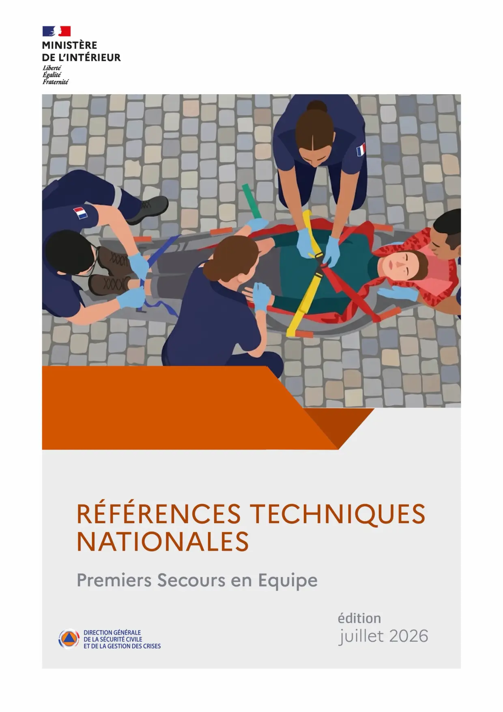
Préface
Les « références techniques nationales » contenues dans ce document ont pour objectif d’assurer la cohérence, au plan national, des bonnes pratiques en matière de premierssecours (Art. L112-2 du Code de la sécurité intérieure).
Issues des publications de diverses sociétés savantes et adaptées à l’usage des secouristes par une commission d’experts dont il convient de saluer le travail et l’abnégation, elles permettent aux organismes habilités et aux associations agréées de disposer de l’ensemble des éléments nécessaires pour réaliser les procédures et les techniques afférentes afin de garantir la qualité de prise en charge des victimes.
En cela, ce document est un recueil des règles de l’art en la matière. Il a vocation à être complété, par la direction générale de la sécurité civile et de la gestion des crises, au fil du temps, de l’ensemble des pratiques des divers acteurs, dès lors qu’elles sont justifiées et fondées à améliorer la qualité de la prise en charge des victimes dans les différents contextes de l’intervention.
L’organisation adoptée, sous forme de fiches (apports de connaissances, procédures, fiches techniques) permet une évolution continue de ce document, d’une part, et facilite l’organisation de la formation continue, d’autre part.
Cette organisation permet une lisibilité précise et complète quant aux contenus de formation délivrés, susceptible de faciliter les reconnaissances d’acquis, en application des dispositifs réglementaires en vigueur.
Il convient de rappeler que ce document n’est pas un guide pédagogique. Son organisation ne présuppose pas de séquençage à adopter pour en assurer l’enseignement, celui-ci étant de la compétence des organismes de formation et des associations agréées de formation.
Une partie de ces « références techniques nationales » doit obligatoirement être reprise lors de certains enseignements, afin de garantir la cohérence du dispositif de formation en la matière. Certains apports de connaissances et certaines procédures, bien que d’enseignement non obligatoire, peuvent utilement compléter ces formations, dès lors que des volumes horaires spécifiquement dédiés sont prévus, en sus des minima prescrits dans les textes réglementaires.
Dans le cadre des actes à visée diagnostique, seules les personnes autorisées par la réglementation peuvent les mettre en œuvre.
Ces « références techniques nationales » sont susceptibles de produire des effets de droit, notamment dans l’examen des responsabilités des acteurs qui ne les auraient pas respectées.
2
Sommaire et contenus de formation
Ce sommaire indique à la fois la pagination et la mise à jour des fiches, ainsi que les contenus de formation.
Le présent référentiel est composé de fiches classées avec les coloris et dénominations suivantes :
apports de connaissances (AC)
Elles sont principalement à destination des formateurs, permettant de comprendre et de justifier, le contexte et le principe d’action qui doit être mis en œuvre.
procédures (PR)
Ce sont des conduites à tenir générales et particulières. Lorsqu’elles sont rédigées sous forme de puces, celles-ci n’induisent pas systématiquement une hiérarchisation stricte.
techniques (FT)
Elles sont attachées à une ou plusieurs procédures. Elles décrivent la réalisation et les justifications d’un geste technique.
Ces dernières sont classées selon la logique de rechercher et traiter en priorité « ce qui tue en premier ».
Les fiches signalées par PSE① doivent obligatoirement être enseignées en PSE1 et celles par PSE② doivent obligatoirement être enseignées en PSE2.
Les fiches dont la date d’actualisation la plus récente :
est surlignée en jaune XX-XXXX, sont nouvelles ou modifiées intégralement.
n’est pas surlignée en jaune XX-XXXX, font l’objet de modifications surlignées en jaune (attention : les éléments supprimés ne sont pas signalés).
Les références des fiches sont constituées comme suit :
[13AC01 / 09-2014] PSE①② Obligations pour les formations _________________________________ 385
8
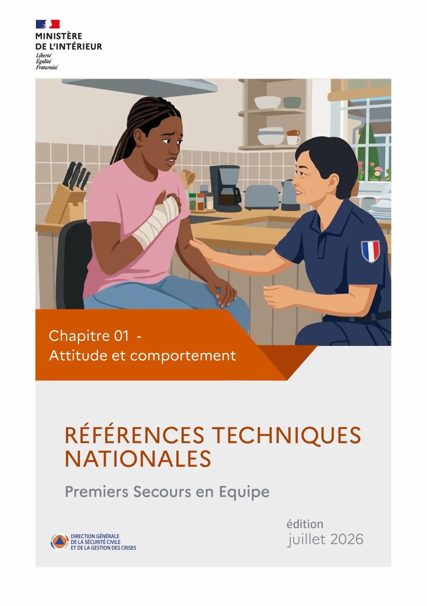
- Attitude et comportement
9
[01AC01 / 07-2026] PSE①
Le citoyen de Sécurité Civile
Cette fiche ne fait pas l’objet d’un enseignement spécifique. Les messages ci-après doivent être distillés tout au long de la formation au moment le plus opportun et en fonction de la teneur des échanges.
La loi de 2004, dite de « modernisation de la sécurité civile », faisait du citoyen un acteur majeur de la Sécurité Civile. Reprise dans l’article L721-1 du Code de la Sécurité Intérieure, elle affirme entre autres que « Toute personne concourt par son comportement à la sécurité civile. En fonction des situations auxquelles elle est confrontée et dans la mesure de ses possibilités, elle veille à prévenir les services de secours et à prendre les premières dispositions nécessaires. »
Au-delà des gestes techniques de secours, toute formation de Sécurité Civile à destination des citoyens est donc une occasion de rappeler la place essentielle de ces derniers.
Protection juridique du citoyen
Il est à noter que cette même loi protège le citoyen dans toutes ses actions entreprises de manière isolée et spontanée : « … Quiconque porte assistance de manière bénévole à une personne en situation apparente de péril grave et imminent est un citoyen sauveteur et bénéficie de la qualité de collaborateur occasionnel du service public … ».LOI n° 2020-840 du 3 juillet 2020.
Messages clés
Le premier maillon
Le secouriste est la première personne formée à la prise en charge de victimes d’un accident, un malaise, une aggravation brutale d’une maladie ou toute autre situation venant interrompre leur quotidien, de manière soudaine et inattendue, et susceptible de déborder les capacités individuelles ou collectives à faire face.
Prévenir les accidents de la vie courante ou l’aggravation de situations
Les services de secours sont souvent sollicités pour des accidents de la vie courante qui touchent particulièrement les enfants de moins de 15 ans et les personnes âgées. Toute action que le citoyen peut mettre en œuvre pour éviter un accident, en supprimant un danger ou en le réduisant, pour lui-même ou son entourage :
est une occasion de ne pas être impacté, à court, moyen ou long terme par un événement ;
réduit la sollicitation des secours et du système de santé.
Ces actions passent entre autres par le respect des consignes de sécurité édictées par les autorités, collectivités, encadrants d’activités de loisirs ou inscrites dans des notices techniques (électroportatifs, électroménager, produits ménagers, etc.).
Il est à noter que certaines aggravations de situations pourraient être anticipées ou limitées par l’action du citoyen :
En allant au-devant des personnes (personne semblant ne pas se sentir bien, personnes fragiles, personnes âgées en période de grand froid ou fortes chaleurs, parent ou voisin dont on a pas de nouvelles, etc.) ;
10
En adoptant une attitude empathique et une posture permettant de réduire l’impact psychologique de la victime ou des témoins pouvant aggraver certaines situations.
Entretenir et développer ses compétences
Malgré une absence d’obligation de formation continue pour certaines qualifications grand public, il est recommandé que le citoyen actualise régulièrement ses compétences.
De même, toute personne suivant une sensibilisation aux gestes qui sauvent (GQS), dont le but était initialement de répondre à une situation d’attentat, est invitée à développer ses compétences au travers d’une formation premiers secours citoyen (PSC), formation de base du citoyen permettant de répondre aux enjeux du quotidien, ou d’un niveau supérieur.
S’engager
Que le citoyen soit confronté de manière directe ou indirecte à une situation dangereuse, un accident, une catastrophe naturelle ou un attentat terroriste, sa mobilisation est essentielle et peut permettre de sauver des vies.
Chaque citoyen peut s’engager sur la base du volontariat ou du bénévolat, pour contribuer à la sécurité du pays et pour aider les victimes. Pompier volontaire, bénévole de Sécurité Civile, réserviste, volontaire du Service civique, il existe de nombreuses façons de mettre ses compétences au service de la solidarité nationale.
Se mobiliser, c’est aussi adopter des gestes simples qui inscrivent chaque citoyen dans une démarche responsable et solidaire : donner son sang, avoir les bonnes pratiques numériques face à l’urgence, installer une application téléphonique de sollicitation citoyenne permettant d’être alerté et mobilisé par les secours en cas d’arrêt cardiaque à proximité (exemples : Staying Alive, Sauv Life, Permis de Sauver, etc.), etc.
Être un « ambassadeur » des messages de sécurité civile
Être un « ambassadeur » des messages de sécurité civile auprès de son entourage, c’est :
partager son expérience acquise en formation et inciter à se former aux premiers secours ;
véhiculer les communications relatives à la sécurité civile ;
partager ses compétences lors de crises auprès des associations agréées de sécurité civile.
Impact psychologique d’une intervention
Toute situation de crise peut avoir un impact psychologique tant sur les victimes que les témoins ou les intervenants. Le citoyen peut être dans l’une de ces trois catégories. La réduction de l’impact psychologique pour le citoyen passe par :
sa préparation en se formant régulièrement, ce qui lui permet d’intervenir avec une moindre gêne des effets du stress ou de comprendre comment il va être pris en charge s’il est la victime.
sa posture lorsqu’il intervient sur une victime : en se mettant à sa hauteur, en l’écoutant et en la rassurant, en l’accompagnant du regard, en respectant son intimité, etc.
l’échange avec les secours présents sur place, une fois la victime prise en charge.
11
[01AC02 / 07-2026] PSE①
Enjeux et principes
Le secouriste est le premier acteur opérationnel, formé et entraîné à la prise en charge de personnes victime d’un accident, d’un malaise, d’une aggravation brutale d’une maladie ou de toute autre situation venant interrompre leur quotidien, de manière soudaine et inattendue, et susceptible de déborder les capacités individuelles ou collectives à faire face.
Rôles et missions
Seul
En équipe
À la prise de poste
Le secouriste vérifie le matériel et prend connaissance des notes internes. Il fait du lien avec l’équipe.
Se rendre sur les lieux
La connaissance du lieu d’intervention et de la zone géographique permet tout naturellement au secouriste de se rendre plus rapidement auprès de la victime.
Un message indiquant l’arrivée sur les lieux est transmis.
Protéger
Seul ou en équipe, la recherche d’un danger pour soi, la victime ou les tiers est primordiale. Une action immédiate doit être entreprise pour mettre tout le monde en sécurité ou compléter un dispositif existant.
Accéder à la victime
Dans certaines circonstances, l’accès à la victime ne peut se faire qu’après une manœuvre de sauvetage spécialisée, exemples : aquatique, secours routier …
Le secouriste accédera à la victime dans la limite de ses qualifications et de son entraînement.
Examiner
Le secouriste réalise un bilan avec les moyens dont il dispose.
Le secouriste réalise un bilan avec matériel.
Le but est de déceler une détresse vitale et/ou psychique en vue de déterminer une prise en charge adaptée.
Alerter /
Faire alerter
Seul ou via un témoin, l’alerte des secours publics doit être réalisée le plus précocement possible.
L’utilisation du téléphone portable donne de nombreux avantages : haut-parleur, échange entre la victime et le médecin …
Les terminaux de transmission et le téléphone sont les plus souvent utilisés pour transmettre les informations de la victime à son responsable ou aux secours publics.
Quoiqu’il en soit, en équipe, l’alerte se fait dans le respect des procédures internes.
Secourir
Le secouriste met en œuvre les conduites à tenir et techniques adaptées à un intervenant seul.
Il agit avec les moyens du bord et utilise les témoins pour mener son intervention.
Le secouriste met en œuvre les conduites à tenir et techniques adaptées.
Il agit avec le matériel à sa disposition, ou à défaut, avec les moyens du bord. Il utilise en cas de nécessité les témoins.
Surveiller
Le secouriste assure une surveillance constante de la victime, tant sur le plan physique que psychologique. Il cherche une éventuelle évolution et veille à l’efficacité des moyens mis en œuvre.
Aider les renforts
À l’arrivée des renforts, le secouriste transmet les éléments de l’intervention à ces derniers et propose son aide pour la poursuite de l’intervention, dans la limite de ses compétences.
Après une intervention
Le secouriste isolé pourra prendre contact avec son autorité d’emploi en cas de besoin.
Le secouriste veille au reconditionnement matériel.
Il contribue au débriefing post-intervention prenant en compte l’aspect technique, mais également psychologique.
Il transmet les documents pour archivage.
12
Maintenir ses acquis
Le secouriste a pour devoir de maintenir ses connaissances et ses compétences à jour, en participant régulièrement aux séances de formation continue. La formation continue lui permet ainsi de réaliser un retour d’expérience et d’améliorer ses futures missions, de mieux coordonner son action avec un ou plusieurs équipiers, d’apprendre à utiliser les nouveaux matériels et de prendre connaissance des nouvelles techniques et procédures.
Principes de base
Respecter les règles d’hygiène et de sécurité
Le premier principe du secouriste est de respecter les règles d’hygiène et de sécurité, individuelles et collectives. Afin d’assurer ses missions de secours à victime, le secouriste doit1 :
Porter des équipements de protection individuelle2 ;
Accorder de l’importance à sa condition physique3 ;
Adopter les règles liées à l’utilisation des véhicules4 ;
Adopter les règles de gestes et postures ou de manutention :
sollicitation au maximum de la victime pour réaliser une action, en l’accompagnant, lorsque cela est possible, et dans le but d’économiser les efforts des intervenants,
appliquer les principes de sécurité physique et d’économie d’effort5.
Assurer une protection de l’environnement de l’intervention6 ;
Travailler en étroite collaboration avec ses équipiers et responsables7.
Ne pas nuire aux victimes
Le deuxième principe d’action du secouriste est de ne pas aggraver l’état de la victime ou de ne pas nuire à son environnement. Par exemple, il est souvent judicieux, en l’absence de risque vital, de laisser une victime dans la position où elle se trouve plutôt que d’essayer de la déplacer sans avoir le personnel et le matériel nécessaires.
Mettre en œuvre les techniques et utiliser le matériel
Le troisième principe d’action du secouriste est de savoir réaliser parfaitement les techniques de premiers secours. Il doit savoir utiliser le matériel mis à sa disposition et en connaître les mesures de sécurité et d’entretien.
S’adapter à la situation
Certaines situations ne permettent pas au secouriste de mettre en œuvre les techniques apprises et celui-ci doit faire preuve de faculté d’adaptation. Par exemple, en l’absence de matériel spécifique : utiliser des morceaux de vêtements pour réaliser un tampon compressif ou une chaise d’ameublement pour déplacer une victime.
Aider les autres équipes de secours
Cette formation permet aussi au secouriste d’apporter une aide efficace aux équipes de secours quand elles arrivent sur les lieux. Sur opération, lors de la réalisation de certaines techniques, notamment celles de relevage ou de brancardage, la participation de plus de trois équipiers est requise. Dans ce cas, du fait de sa formation, le secouriste est mis à disposition du responsable de l’intervention, pour apporter son aide.
1Les exemples ne sont pas exhaustifs et pour certains sont précisés tout au long du présent référentiel.
2Gilet de signalisation, casque, gants, etc.
3Hygiène de vie, vaccinations, activités physique et sportive régulières, etc.
4Port de la ceinture de sécurité, vigilance lors des manœuvres de montée et descente du véhicule, respect des limitations de vitesse, utilisation des signaux lumineux, etc.
5Travail préférentiel avec les cuisses et non le dos, proximité de la charge à manipuler, respect de la courbure naturelle du dos, stabilité des appuis, solidité des prises, etc.
6Balisage, périmètre de sécurité, récupération pour élimination des déchets de l’intervention, etc.
7Rendre compte, respecter les consignes, etc.
13
[01AC03 / 11-2021] PSE①
Attitude et comportement du secouriste
Le secouriste dans ses actions de secours est amené à intervenir en urgence auprès de personnes victimes, en détresse physique et/ou psychologique. Outre la maîtrise des gestes et des techniques de secourisme, l'intervenant doit également être en mesure de dispenser les premiers secours psychologiques.
Toute action de secours sous-entend qu’un événement imprévu, inhabituel et potentiellement dangereux ait touché une ou plusieurs personnes, considérées alors comme victimes. En fonction du niveau d’exposition à cet événement « critique » et du vécu de la situation, l’impact psychologique et la blessure psychique potentielle qui en découlent seront variables.
Le secouriste devra prendre en compte ces dernières dans leur ensemble, tant les victimes primaires que les victimes secondaires. Les premières auront été directement exposées à l’événement en tant que sujet (avoir subi), acteur (avoir provoqué volontairement ou involontairement) ou encore comme témoin (avoir vu, assisté). Elles peuvent être impactées dans leur corps (blessures physiques), mais aussi moralement (blessures psychologiques). Et puis, les secondes, les proches des victimes primaires (parents, amis, collègues …), non confrontées directement à l’événement critique, peuvent devenir victimes secondaires lorsqu’elles découvrent ce qui est arrivé à leur proche et qu’elles ressentent un stress intense et des émotions douloureuses.
Prise en compte de l’impact psychologique
Les personnes exposées à des événements critiques répondent naturellement par une réaction de stress, dont les manifestations varient en fonction de l’impact psychologique de la situation sur elles et de la détresse potentielle qui en découle.
Face à une situation soudaine, imprévue et potentiellement menaçante, toute personne présentera un ensemble de manifestations regroupées sous le terme de réaction de stress.
Considérée comme un moyen de défense, cette réaction psychologique et physiologique urgente, favorise une adaptation de la personne à la situation afin de la fuir ou de s’en défendre. L’activation physiologique (libération d’hormones du stress, excitation du système nerveux central et du système nerveux autonome) entraîne un état d’alerte repérable notamment par l’augmentation de la fréquence respiratoire, de la fréquence cardiaque et de la pression artérielle.
Des frissons, des tremblements et une pâleur peuvent également être observés. La victime peut exprimer une sensation de faiblesse, des sensations pénibles de « boule dans la gorge », de striction thoracique, de « nœud à l’estomac », se plaindre de spasmes viscéraux désagréables, de maux de tête, de nausées, et ressentir une envie impérieuse d’uriner. Peuvent être associés des symptômes psychomoteurs, tels que lenteur ou imprécision des gestes et altération de la voix.
Sur le plan psychologique, des phénomènes adaptatifs s’enclenchent : incitation à l’action, focalisation sur la situation dangereuse, identification rapide de stratégies pour faire face. Certaines manifestations gênantes peuvent également être ressenties sur le plan psychique, telles qu’un vécu d’irréalité et/ou de tension.
Utile, adaptative, mais brève, cette réaction de stress est en revanche très coûteuse en énergie. Une fois la menace écartée apparaît un état ambigu d’euphorie et d’épuisement.
14
Quand le stress est trop intense, trop prolongé ou chronique, il peut devenir incapacitant. Notamment, quand la personne perçoit le danger ou la contrainte comme étant plus élevé que ses capacités à faire face, elle ressent une insécurité massive et ne parvient plus à gérer le stress.
Le cortex préfrontal, siège des capacités cognitives, n’est plus en mesure de réguler l’action des amygdales cérébrales, sièges des émotions.
La victime perd alors sa capacité à s’adapter, est en rupture d’équilibre et présente à ce moment-là des réactions inhabituelles traduisant un état de crise (cf. : chapitre « Les personnes en situation de crise »).
Le retentissement psychologique est avant tout un vécu personnel, qui se vit avec plus ou moins d’intensité selon le contexte, selon le sens que lui attribue la personne, selon sa culture, son éducation, son histoire personnelle, ses antécédents et sa personnalité.
Les effets de l’impact psychologique (cf. « évaluation de l’impact psychologique ») sont observables au travers des perturbations des fonctions cognitives (altération de la capacité à penser efficacement), émotionnelles (sentiments de peur, tristesse, impuissance, colère, etc.), et comportementales (agressivité, prostration, stupeur, fuite panique …).
Plus l’impact psychologique est important chez la victime, plus le risque de blessure psychologique est élevé. Ces victimes nécessitent d’être orientées vers une prise en charge psychologique spécialisée aux urgences hospitalières ou sur les lieux par la CUMP (Cellule d’Urgence Médico-Psychologique) en cas d’événements impliquant de nombreuses victimes.
Attitude adaptée et abord relationnel de la victime
Le secouriste a pour mission de prévenir et de soulager toute souffrance qu’elle soit physique ou psychique. Son attitude joue un rôle important, car il est autant apprécié sur la qualité des gestes techniques que sur l’aptitude à développer une relation humaine d’aide et de soutien aux personnes en détresse.
Comportement général du secouriste
Le secouriste doit faire preuve d’organisation, de rigueur et de professionnalisme. En mission, il a une tenue propre et correcte, associée à une bonne hygiène. C’est à partir de ces éléments que la victime se constituera une première opinion du secouriste, mais également de la structure qu’il représente. Cette première impression est primordiale et peut influencer la réaction de la victime et de son entourage.
Le secouriste agit avec calme. Il intervient avec humanité et gagne la confiance de la victime et de son entourage d’autant plus facilement qu’il est courtois, attentif et posé.
Le secouriste veille à ce que peut induire sa propre attitude pour éviter tout conflit qui pourrait nuire au bon déroulement de l’intervention. La dégradation d’une situation ne tient souvent qu’à une parole ou un comportement.
Les victimes ou leur entourage peuvent parfois vivre l’intervention des secours comme une irruption, voire une intrusion difficilement supportable. Il s’agit donc d’intervenir dans le calme et avec humilité, en adoptant une attitude respectueuse tant à l’égard des personnes que des lieux (précautions lors de déplacements de meubles, bibelots, par exemple…).
Il est respectueux de chaque individu et de sa vie privée.
15
Au même titre que les personnels de santé, les secouristes sont tenus par le secret professionnel. Les informations recueillies ne peuvent être divulguées qu’aux personnes contribuant à la prise en charge1.
Il est important de retenir que les victimes se trouvent dans un moment de vulnérabilité et souvent en difficulté d’adaptation. C’est donc au secouriste que revient la nécessité de s’adapter à elles et à leurs besoins.
Principes de l’abord relationnel
L’abord de la victime est une phase déterminante.
En effet, bien que son intervention soit très limitée dans le temps, la qualité de la relation mise en place influencera l’ensemble de la prise en charge, de l’adhésion de la victime à son rétablissement.
L’empathie dont il fait preuve ne doit donc pas être considérée uniquement comme une qualité humaine, mais bien comme une véritable compétence professionnelle à développer pour assurer pleinement sa mission de secours à personne (cf. « l’abord relationnel en pratique »).
Le secouriste s’attache à soigner l’ensemble des aspects de sa communication, verbale et non verbale, en s’adressant toujours directement à la victime, quel que soit son âge. Le secouriste se montre particulièrement attentif :
à la distance interpersonnelle, en établissant une « juste distance » ;
à se placer à son niveau en la regardant dans les yeux pour lui montrer l’intérêt qu’il lui porte ;
à l’attitude verbale, en utilisant :
un vocabulaire et un ton adapté ;
des phrases courtes, claires et respectueuses ;
le vouvoiement et en appelant la personne par son nom ;
le tutoiement et en appelant un enfant par son prénom ;
au toucher, grâce auquel le secouriste manifeste du soutien, du réconfort et témoigne d’une qualité de présence à la victime.
1 Article L1110-4 "I.- Toute personne prise en charge par un professionnel de santé, un établissement ou service, un professionnel ou organisme concourant à la prévention ou aux soins dont les conditions d'exercice ou les activités sont régies par le présent code, le service de santé des armées, un professionnel du secteur médico-social ou social ou un établissement ou service social et médico-social mentionné au I de l'article L. 312-1 du Code de l'action sociale et des familles a droit au respect de sa vie privée et du secret des informations la concernant." La définition est précisée par l'Article R4127-4. Article 226-13 du code pénal incrimine « La révélation d’une information à caractère secret par une personne qui en est dépositaire soit par état ou par profession, soit en raison d’une fonction ou d’une mission temporaire ».
16
[01PR01 / 11-2021] PSE①
L’abord relationnel en pratique
L’abord relationnel vise à assurer une écoute et à établir le contact et le dialogue. Cette approche favorise souvent l’apaisement émotionnel et permet d’autre part de rechercher les éléments essentiels du bilan, avant d’engager les actions nécessaires.
Aborder la victime
Il est recommandé de privilégier au sein de l’équipe un interlocuteurprincipal pour dialoguer avec la victime (de préférence, celui vers lequel elle se tournera le plus naturellement). N’en changer que si la communication n’est plus efficace.
Établir le contact : il est important, en dehors d’une situation d’urgence vitale, de prendre le temps de se présenter. Si on peut obtenir l’identité de la personne, il est possible de s’entretenir avec elle en la nommant et lui permettre ainside se sentir reconnue. Si l’emploi du prénom peut faciliter la relation, il ne sera employé qu’après avoir obtenu la permission de la personne concernée.
« Mr X, je m’appelle Y, je suis secouriste »
« Me permettez-vous de vous appeler par votre prénom ? »
Expliquer les raisons de la présence et le but de l’intervention, si le contexte le permet.
« Je suis là pour vous aider »
« Rassurez-vous, je reste avec vous », « je vais vous accompagner tout au long de l’intervention »
Instaurer le dialogue et une relation de confiance, en commençant par poser une question ouverte afin de permettre à la victime d’entamer la discussion et ainsi expliquer ce qu’elle vit :
« L’intervention va se dérouler de la manière suivante : nous allons faire un bilan, ensuite nous ferons un point avec le médecin. À ce moment-là, nous verrons si nous vous transportons à l’hôpital pour une prise en charge plus approfondie ».
Informer et expliquer ce qui va être réalisé :
« Je vais poser ma main sur votre ventre pour évaluer votre respiration »,
« Je vais vous appliquer un masque avec de l’oxygène sur la bouche et le nez, il va vous aider à mieux respirer ».
Reconnaître la situation, le caractère déstabilisant de l’événement vécu :
« Vous vivez un événement stressant, bouleversant »
« Je vous sens en colère »
« Vous me semblez triste quand vous dites cela » (ou inquiet, etc.).
Questionner la problématique repérée lorsque celle-ci n’est pas spontanément explicitée (suspicion de violence subie, intention suicidaire …)
« Avez-vous subi des violences ? »,
« Souffrez-vous au point de vouloir vous faire du mal ou mourir ? » …
17
Reformuler, c’est-à-dire s’assurer que l’on a bien compris ce qu’elle a exprimé de manière verbale et non verbale (cf. « l’écoute active »)
« Vous me dites que vous êtes seul, cela veut dire que vous ne voyez personne ? »
« D’après ce que vous me dites (ce que je vois …, je comprends que…, il me semble que… est-ce que je vois juste ? »
Favoriser l’alliance en impliquant la victime dans sa propre prise en charge:
En sollicitant son accord et en lui adressant des paroles encourageantes et positives :
« Voilà ce que je vous propose… qu’en pensez-vous ? »
« Vous nous aidez beaucoup par votre calme »
En lui demandant ce qui peut la soulager ou ce qui a marché la dernière fois qu’elle était dans cet état, si elle l’a déjà vécu, ce dont elle aurait besoin pour faire diminuer son inconfort :
« De quoi auriez-vous besoin maintenant ? »
« Vous est-il déjà arrivé de vivre une telle situation ? », « Comment avez-vous fait pour surmonter une telle situation ? »
En lui demandant si elle souhaite appeler une personne qui représente pour elle un soutien :
« Y a-t-il une personne que vous souhaiteriez contacter pour venir vous rejoindre ? »
En étant honnête avec elle, c’est-à-dire en abordant la réalité de la situation, avec tact. Il est primordial de ne pas mentir et ne pas faire de promesses à moins d’être certain de pouvoir les tenir.
Passer le relais
Préparer le passage de relais : (prise en charge, orientation, hospitalisation …)
« Nous allons vous accompagner à l’hôpital afin que vous puissiez voir un médecin et réaliser les examens utiles pour comprendre ce qui se passe… »
Prendre le temps de présenter la victime à l’équipe prenant lerelais de la prise en charge
« Je vous confie à mes collègues qui vont continuer à vous accompagner… »
Saluer la victime et lui adresser des paroles encourageantes et positives :
« Je vous souhaite une bonne continuation. Prenez bien soin de vous ».
18
[01PR02 / 11-2021] PSE①
Intervenir auprès d’un enfant
Lorsque la situation de secours met l'équipage en présence d'un enfant conscient (blessé ou non), ce dernier peut être victime primaire (a subi, a provoqué ou a vu l'événement survenir) ou victime secondaire (lien affectif avec la victime blessée et n'ayant pas assisté à l’événement concerné).
Intervenir auprès d’enfants implique certaines particularités à prendre en compte. Face à des événements graves, exceptionnels, l'enfant, tout comme l'adulte, peut réagir par une réaction de stress modérée ou de forte intensité. Pour lui, l'impact est double :
D'une part, elle affecte ses capacités de compréhension et d'expression et, à l'inverse de l’adulte qui s'exprime par le langage verbal en plus du langage corporel, l'enfant ne peut pas toujours s’appuyer sur les mots pour mettre du sens sur l’événement et pour exprimer ses peurs, sa détresse. Plus souvent, lors d’un drame, l’enfant se mure dans le silence.
D'autre part, lorsque l’enfant est au côté de ses parents dans pareilles expériences, il peut être confronté à leurs vulnérabilités (parents blessés, qui pleurent, souffrent, crient, paniquent…). L’enfant perd alors un élément fondamental de ce qui constitue la sécurité pour lui. La présence du secouriste sera d'autant plus déterminante pour sécuriser et contenir l'enfant. Un enfant dans certaines situations peut également agir pour protéger son parent (ne pas montrer sa détresse, être faussement calme).
Prendre en charge l’enfant
Un seul et même secouriste assure une continuité auprès de l'enfant et :
Adapte sa communication :
Se positionner à la hauteur de l'enfant, être vigilant au ton de sa voix (rythme posé, tonalité grave) ;
Lui parler directement, quel que soit son âge, y compris avec un bébé, enutilisant des mots simples et honnêtes ;
Utiliser les capacités d'imagination de l'enfant pour potentialiser les gestes de premiers secours : par exemple, présenter les outils de secourisme comme des petits robots, utiliser les références des dessins animés ou des contes qui ont un pouvoir de suggestion très efficace (la reine des neiges qui refroidit les brûlures, Pinocchio qui a les bras et les jambes durs comme du bois …).
Implique les parents au maximum en tenant compte des circonstances, si possible installe l'enfant dans leurs bras.
Signifie à l'enfant qu’il a besoin de sa participation pour mieux l'aider et comprendre ce qu'il ressent :« Dis-moi dans quelle position tu te sens le mieux. Installe-toi le plus confortablement ».
Évalue la douleur : au-delà de 5 ans, la douleur est évaluée à partir d’échelles d’auto-évaluation adaptées à l’âge et à la compréhension de l’enfant. En dessous de 5 ans, l’évaluation est essentiellement basée sur l’appréciation des modifications physiques et comportementales liées à la douleur (pleurs, crispations, agitation, etc.).
Et simultanément, couvre, au plus vite, une plaie, une déformation de membre ou tout autre facteur générateur d’angoisse pour l’enfant.
19
Utilise une peluche (si présente dans le matériel secouriste) pour faciliter la prise de contact et la relation ultérieure. Elle va permettre de créer un lien avec l'enfant plus rapidement. En utilisant la peluche, objet familier pour l'enfant, l'équipier s'adapte à ses besoins, et témoigne ainsi de sa volonté de rencontrer l'enfant dans son monde. Si l'enfant dispose de son propre doudou et/ou de sa tétine, ils seront à privilégier (ou à utiliser en complément) : présenter la peluche à l'enfant et lui proposer de la prendre après ce temps de présentation mutuelle et d'explications simples. Elle servira de médiateur tout au long de l'intervention.
Par le biais de la peluche et les explications du secouriste, l’enfant peut comprendre ce qu’on attend de lui, être prévenu des gestes techniques ou médicaux avant qu'ils soient faits et y participer plus facilement : « Regarde, je lui mets ce masque sur le museau pour l’aider à respirer… Maintenant, je fais pareil avec toi pour t’aider à respirer calmement ».
L'enfant peut également montrer sur la peluche où il a mal, comme un miroir de son propre corps.
Enfin, elle va détourner son attention pendant les gestes de secourisme ou les manœuvres de l'intervention. Elle peut également, au travers du jeu, détourner l’enfant de sa douleur et/ou de ses angoisses.
Tout au long de l’intervention
Le secouriste veillera à :
Ne pas mentir (« Ça ne fait pas mal. C’est juste une petite attelle »). Mais plutôt : « il est possible que tu sentes quelque chose. Dis-le-moi. »
Ne pas l'obliger à parler
Ne pas banaliser ni dramatiser (comme : « Ce n’est pas grave / Tu as de la chance de t’en être sorti ! »), mais rassurer sur la fin de la situation de danger.
Ne pas encourager les attitudes héroïques (« Sois courageux, tu es un(e) grand(e) »), mais plutôt l'autoriser à exprimer ses émotions (« tu peux pleurer si tu en as besoin, dire tout ce que tu as envie de dire »), accepter ses réactions normales liées à la douleur, à la peur et aux émotions douloureuses.
Ne pas menacer (« Si tu cries, je dis à tes parents de partir. »), mais plutôt, valoriser l'enfant, l'encourager dans ses comportements adaptés et positifs : « C'est bien, respire calmement. Tu sais exactement comment faire pour te soulager, continue ».
20
[01AC04 / 11-2021] PSE①
Préservation du potentiel mental du secouriste
Dans son activité, le secouriste est soumis à une charge mentale élevée et n’est donc pas préservé de la souffrance psychique. Le contact soutenu et répété à différentes contraintes émotionnelles confronte le secouriste à certains risques psychologiques, notamment des troubles relevant du stress, du traumatisme ou encore de l’usure et de l’épuisement.
Il est important qu’il ait connaissance de ces risques afin de pouvoir les repérer et s’y préparer. Il pourra ainsi gérer au mieux ces situations particulières et ses propres réactions, afin de limiter l’impact et les conséquences dommageables pour sa santé.
Les réactions immédiates de stress
D’intensité modérée, la réaction de stress permet au secouriste de mobiliser ses ressources pour accomplir sa mission. Elle est focalisatrice d’attention, mobilisatrice d’énergie et incitatrice à l’action.
Le stress est dit de forte intensité lorsque le secouriste voit ses capacités d’adaptation se dégrader, entraînant des réactions inhabituelles et inadaptées :
L’agitation désordonnée (présente un état d’excitation rendant ses gestes fébriles, parfois inutiles et inefficaces, ses actions sont incohérentes et non coordonnées avec celles de l’équipe …);
La fuite (se met à distance, se réfugie dans des actions lui permettant de se soustraire à la situation) ;
L’action automatique (agit en mode réflexe par des gestes mécaniques et/ou ralentis et est en incapacité de s’adapter en cas de changement de la situation) ;
La sidération (se retrouve en incapacité d’agir, de penser, est comme « anesthésié » au niveau émotionnel).
Les conséquences néfastes à long terme
Les troubles psychotraumatiques
Dans les premières heures suivant un stress de forte intensité, ou plus rarement de manière décalée dans le temps, certains secouristes sont susceptibles de développer des symptômes comme :
La répétition de l’événement initial au travers de souvenirs envahissants (flashbacks), ou de cauchemars ;
L’évitement de toutes les situations, personnes, endroits … susceptibles de rappeler des souvenirs, pensées ou sentiments étroitement associés à l’événement critique ;
Des conduites d’hypervigilance comme si l’événement allait se reproduire de façon imminente, et ce malgré l’absence de danger ;
Une façon de penser plus négative, difficulté à éprouver des sentiments positifs.
On parlera de Trouble de Stress Aigu si ces symptômes durent jusqu’à un mois après l’exposition.
Si ce trouble persiste au-delà, il sera considéré comme pathologique et qualifié de Trouble de Stress Post-Traumatique.
Lorsqu’un tel trouble s’installe, il peut entraîner des modifications importantes et durables de la personnalité. De plus, il peut s’associer à d’autres pathologies dont les plus fréquentes sont la dépression
21
et les conduites addictives à l’alcool ou autres substances. Des soins médicaux et psychologiques sont préconisés afin de faire face à l’installation de tels troubles dans la durée.
Il existe une forme de psychotraumatisme moins connue, nommée traumatisme vicariant. En effet, le secouriste, exposé de manière répétée et chronique aux horreurs vécues par les victimes d’événements traumatisants (tels que : le viol, la maltraitance, la violence, les accidents graves, la torture, la mort, les mutilations) risque de développer la conviction d’un monde dangereux. Il peut alors vivre avec la peur d’être mis en danger (comme la victime) et voir apparaître des symptômes de stress aigu ou post-traumatique.
Les phénomènes d’usure et d’épuisement
Lorsqu’il est répété à de trop brefs intervalles, et particulièrement lorsqu’il est à l’origine de fortes réactions émotionnelles, le stress peut conduire à l’épuisement du secouriste.
Ces troubles peuvent prendre la forme :
d’un épuisement professionnel (burn-out), qui va se traduire par :
un épuisement émotionnel avec un sentiment d’être vidé de ses ressources émotionnelles ;
une déshumanisation conduisant à des attitudes négatives vis-à-vis des victimes : insensibilité au monde environnant avec une tendance exagérée à faire preuve de cynisme systématique pour se préserver de tout impact émotionnel, vision négative des autres et du travail ;
une diminution du sentiment d’accomplissement personnel dans son activité : sentiment de ne pas parvenir à répondre correctement aux attentes, autodépréciation, perte de l’estime de soi et sensation qu’il n’y a plus d’avenir dans son activité. Il engendre la perte de l’idéal du métier, du sens de l’accomplissement ou des valeurs.
d’une fatigue ou usure de compassion :
Le secouriste qui a été exposé de manière répétée à la souffrance intense devient hypersensible à l’état émotionnel des victimes. Il se sent impuissant, souvent triste, cynique ou en colère, il peut remettre en question son engagement.
Des symptômes dépressifs peuvent se développer ainsi que des symptômes somatiques : fatigue généralisée, migraines, douleurs gastriques, Troubles Musculo-Squelettiques, tensions musculaires, troubles du sommeil, hypertension artérielle …
Préservation et optimisation de l’opérationnalité mentale
Pour être efficient sur le plan opérationnel, le secouriste doit disposer de 3 compétences indissociables les unes des autres. Il doit avoir la condition physique pour réaliser la mission, la technique pour répondre aux besoins de la situation et le mental pour se réguler, s’adapter et ainsi être efficace techniquement et physiquement en toute circonstance.
L’opérationnalité mentale correspond ainsi à la capacité à mobiliser les ressources mentales (sang-froid, lucidité, capacités d’analyse et d’adaptation) nécessaires à la réalisation optimale d’une mission. C’est elle qui permet d’analyser sans biais les situations de secours, qui favorise les prises de décisions rationnelles et permet l’engagement dans l’action.
Or certains facteurs peuvent troubler, voire compromettre cette opérationnalité mentale. Ainsi, le stress, certaines émotions, ressentis, sensations, peuvent générer des troubles cognitifs plus ou moins importants et invalidants selon l’individu, mais également selon le contexte et le moment. Il est donc indispensable de prendre en compte ces facteurs, de savoir les reconnaître et d’apprendre à les gérer pour ne pas ou moins les subir.
22
Afin d’entretenir son opérationnalité mentale et augmenter sa capacité à amortir les impacts psychologiques, le secouriste doit travailler et entraîner ses capacités comportementales, cognitives et émotionnelles.
Augmenter le potentiel mental pour amortir les impacts psychologiques
se préparer avant l’action :
acquérir et entretenir des compétences par la formation et l'entraînement ;
se préparer à la réalité du terrain et des missions dévolues en se construisant une représentation juste et réaliste de l’activité et des missions et en prenant connaissance des risques psychologiques liés à la mission.
se réguler pendant l’action :
appliquer les mesures permettant de protéger les intervenants tant physiquement que psychologiquement ;
mettre en application les techniques de gestion du stress (exemple : « respiration contrôlée ») ;
récupérer / se reconditionner après :
soigner son hygiène de vie (repos, alimentation équilibrée, activité physique, exclusion des comportements addictifs, équilibre vie de famille/professionnelle et sociale, connaître et reconnaître ses limites).
Détecter et réagir en fonction du niveau d’impact psychologique
Détecter :
Il faut identifier la présence potentielle d’un ou plusieurs facteurs critiques de stress et évaluer en temps réel l'impact psychologique de l'intervention sur les membres de l’équipe.
Certaines situations sont connues pour être plus à risque de mettre en difficulté le secouriste du fait du caractère particulièrement éprouvant et de la charge émotionnelle importante qu’elles peuvent générer. Ces situations que l’on qualifie de « critiques » sont généralement les :
situations impliquant des proches : famille, collègues, amis…
interventions auprès d’enfants en détresse ou décédés ;
contextes comportant un caractère violent : morts violentes, cadavres mutilés, morts engendrées par la main de l’homme (homicide, féminicide, infanticide, fratricide …) ou de responsabilité humaine (AVP, accident du travail …) ;
situations où le secouriste a pu se sentir impuissant, voire en échec ou responsable (d’un accident, etc.) ainsi que les situations où il a pu percevoir un danger pour son intégrité physique et/ou psychique (notamment dans les situations de violences physiques et/ou verbales à son encontre).
Il faut identifier au sein de l’équipe la présence potentielle de :
manifestations émotionnelles intenses pendant ou dans les suites immédiates ;
perte de capacité ou de réflexe ;
réactions inhabituelles d’un ou plusieurs secouristes, non adaptées à la situation pendant l’intervention ;
réactions physiques inattendues comme un malaise ;
tension inhabituelle au sein de l’équipe, voire une gêne ou un malaise (isolement de certains, silence, regards fuyants ou au contraire agitation avec flot de paroles, trop plein d’excitation ou de colère, désarroi, voire abattement).
23
Réagir :
Il est recommandé d’informer le chef d’équipe lorsqu’un ou plusieurs membres de l’équipe perçoivent ou présentent des manifestations inhabituelles. Cela permet d’ajuster la mission.
Après l'intervention, et notamment si elle est éprouvante ou avec une charge émotionnelle importante, il peut être nécessaire de :
Organiser un temps de répit dans un climat favorable permettant d’engager une communication entre tous les équipiers présents lors de l’intervention, après avoir assuré un confort de base (propreté, hydratation …)
Maintenir une vigilance sur les personnels « submergés » par leurs émotions ou présentant un trop plein d’excitation ou encore ayant tendance à s’isoler.
Participer à un débriefing technique de l'opération.
Suivre les recommandations spécifiques de l’autorité d’emploi
Recourir à des équipes spécialisées (psychologues, médecins, infirmiers formés spécifiquement...). Elles évalueront la situation, y compris dans l’urgence et définiront elles-mêmes les modalités de leurs interventions en fonction de protocoles établis.
Le soutien psychologique : être évalué et soutenu
Chaque secouriste peut faire appel à une aide psychologique. Celle-ci relève à la fois de la prévention et du traitement immédiat ou différé, en fonction des signes de souffrance, apparaissant dans le cadre de l’activité (suite à une intervention ou généré par un effet cumulatif).
Un appui psychologique précoce et approprié permet une récupération sur les plans personnels et professionnels.
Une orientation vers une aide professionnelle spécialisée peut être nécessaire afin de bénéficier d’une prise en charge psychothérapeutique.
24
[01FT01 / 11-2021] PSE①
Évaluation de l’impact psychologique
Indications et justifications
Au même titre que les détresses vitales, l’évaluation de l’impact psychologique fait partie intégrante du bilan secouriste. Lorsque la victime manifeste des signes de détresse psychologique et que ces derniers ne sont pas pris en compte, cela risque de :
parasiter ou complexifier le travail des secouristes (manifestations émotionnelles difficiles à contenir victime non coopérante, opposante ou agressive) ;
impacter ses paramètres vitaux, ses ressentis (élévation du rythme cardiaque, augmentation de sa perception de la douleur, etc.) ;
engendrer des répercussions psychologiques négatives à plus long terme (troubles liés à des traumatismes ou des facteurs de stress).
Réalisation
Les éléments révélant un potentiel impact psychologique nécessitent d’être recherchés et transmis au même titre que les paramètres vitaux.
Observer
Se questionner
La présentation
l’expression du visage et le regard qui traduisent l’état affectif et émotionnel dans lequel se trouve la personne (en cohérence avec ses propos ?)
le comportement et la gestuelle (attitude générale calme, agitée, coopérante, réticente ?)
la présence de blessures, marques visibles éventuelles, attitudes particulières pouvant révéler un état douloureux ou autre
Qu’est-ce que m’évoquent ses mimiques et son regard ?
Comment se comporte-t-elle ?
« Y a-t-il des traces visibles de blessures, des marques, des attitudes particulières, évocatrices … ?
L’état de conscience
la vigilance : sa capacité à réagir de façon appropriée aux événements, à prendre des décisions, par rapport à elle, aux autres et au monde extérieur (hypervigilante, hypovigilante, désorientée au niveau temporel et spatial ?)
la mémoire (troubles de la mémoire, amnésie)
le langage (discours accéléré ou ralenti, bégaiement, répétition, anomalies diverses, particularité de la voix …)
le jugement et le raisonnement
Comment réagit-elle ?
Est-elle capable de se remémorer les faits, de retenir de nouvelles informations ?
Comment s’exprime-t-elle ?
Est-elle capable de penser, analyser, émettre un avis ?
L’expression
le contenu de son discours, ce dont elle se plaint
ce qu’elle nous dit de ses émotions, de son état d’esprit
sa façon de percevoir son environnement, les autres.
Qu’est-ce qu’elle nous dit ?
De quoi se plaint-elle ?
Semble-t-elle consciente de sa situation ?
Sa perception est-elle en cohérence avec la réalité ?
25
[01FT02 / 11-2021] PSE①
Stabiliser l’état psycho-physiologique d’une victime
Indications et justifications
Lors de l’action de secours, le niveau de stress et de détresse de la victime peut rester élevé et ainsi aggraver la blessure psychologique. Il s’agit de limiter les effets nocifs (physiologiques et psychologiques) de cette situation stressante, en procédant à une « stabilisation » de la victime.
Cette stabilisation consiste à focaliser positivement l’attention de la victime sur le secouriste afin de réduire sa réaction de stress et d’augmenter son sentiment de contrôle, au fur et à mesure des différentes étapes de sa prise en charge.
Ce protocole s’applique auprès de victimes conscientes et n’étant pas sous emprise d’alcool ou de produits stupéfiants.
Réalisation
Le secouriste qui sera auprès de la victime et qui l’accompagnera tout au long de l’action de secours s’appliquera dans les actions suivantes :
Il demande à la victime de focaliser son attention sur lui, du début à la fin de l’intervention, en utilisant les différents canaux de communication :
Le canal auditif, la voix :
« Vous êtes prête ? Je vous propose de vous concentrer sur ma voix et les questions que je vais vous poser ».
« Je continuerai à vous parler tout au long de l’intervention et à vous expliquer ce qui se passe ».
Le canal kinesthésique, le toucher :
« Est-ce que vous sentez mes mains lorsque je vous palpe... ? »
« Est-ce qu’il y a un endroit où vous ressentez plus de pression qu’un autre ? »
« Quel est le doigt qui appuie le plus ?
« Bien, restez concentré sur ces sensations »
« Sentez-vous le soutien que vous procure cette attelle ? »
Le canal visuel, le regard:
« Je vous propose de fixer un point devant vous ».
« Vous pouvez garder les yeux ouverts ou fermés, c'est comme vous voulez ». « Si vous gardez les yeux ouverts, fixez un point de votre choix ».
Si des éléments visuels négatifs (blessure importante, sang …) focalisent l’attention de la victime, les masquer à sa vue ou proposer de fermer les yeux en restant concentrée sur la voix du secouriste.
Il détermine avec elle un code de communication : convenir d'un signe de la main, du pouce, clignement d'œil … pour dire oui ou non (dans le cas de bruits importants, ou si la victime ne peut pas parler (traumatisme de la face ou autre, port du masque O², difficultés respiratoires...).
« Si vous avez besoin de dire quelque chose, dites-le-moi ».
« Pour communiquer, nous pouvons aussi établir un code entre nous, votre main peut me faire signe, un signe de la main ou du pouce peut me dire oui ou non, par exemple. »
26
Il suggère un travail sur la respiration : le secouriste guide la respiration de la victime et favorise une focalisation sur ce processus tout au long de l’intervention. Se concentrer sur la respiration permet de modifier certaines réponses physiologiques (cf. « respiration contrôlée »).
Il encourage la victime à défocaliser son attention de la situation actuelle: il s’agit d’augmenter la détente de la victime obtenue par les phases précédentes, en orientant son attention sur un sujet agréable pour elle (passion, loisirs, lieux, personnes). Explorer les détails et les sensations, proposer à la victime de se déplacer mentalement dans cette activité/ce lieu (par exemple durant la désincarcération, le transport au centre hospitalier …) tout en surveillant sa conscience par le code de communication (cf. « défocalisation/visualisation »).
Il apporte des explications et normalise les réactions du corps : le secouriste explique la normalité des mécanismes de stress et des réactionsde la victime.
Il est important de maintenir la stabilisation à chaque phase de l'intervention, notamment lors du passage dans l’ambulance ou vers l'hôpital en préparant la fin de l'intervention des secours. Suggérer à la victime le maintien d’un certain contrôle, avec la capacité à réactiver ces sensations de calme et ainsi de mobiliser ses ressources dans les suites de sa prise en charge.
27
[01FT03 / 11-2021] PSE①
L’écoute active
Indications et justifications
L’écoute active est une technique de communication qui consiste à utiliser le questionnement et la reformulation afin de s’assurer que l’on a compris au mieux le message de son interlocuteur et de lui démontrer.
Pratiquer l’écoute active, c’est adopter une attitude ouverte et bienveillante en laissant l’autre s’exprimer sans jugement pour favoriser une alliance positive avec la personne.
Réalisation
Pour la mise en pratique de l’écoute active, il est utile de s’appuyer sur les 4 (Recontextualiser, Reformuler, Renforcer, Résumer).
Recontextualiser
Remettre dans le contexte et associer ce que dit la personne aux conditions de survenue. Il s'agit d'aider la personne à préciser la situation, en posant des questions ouvertes :
« J'ai mal"/ "Pouvez-vous me dire où vous avez mal exactement ? »
« C'est grave" / " Qu'est-ce qui vous fait dire que c'est grave ? »
« J'ai peur" / " Quand, de quoi, de qui avez-vous peur? »
Reformuler
S'assurer qu'on a bien compris ce que la personne a voulu dire, en lui demandant de clarifier le sens de certains éléments.
Relancer l’échange à partir des mots utilisés par la personne :
« Je ne sens plus mon pied » / « Vous ne sentez plus votre pied ? » ou « Quand je respire, j'ai mal à la poitrine » / « A la poitrine ? »
Reprendre les propos de la personne en commençant par : « Si je comprends bien... » / « En somme... » / « Ce que vous me dites c'est... »et en répétant ou en résumant ensuite ce qu'elle dit.
Renforcer
Demander si nécessaire des approfondissements afin d'avoir plus d'éléments sur le point de vue de l'autre : « Comment pourriez-vous faire? Quelle solution pouvez-vous trouver? »
Renforcer positivement une personne permet d'augmenter la probabilité que son comportement soit adapté et acceptable. C'est une intervention qui cherche à développer la participation active de la personne, à améliorer la collaboration.
Renforcer un fait, une action : « Super! Vous voyez, vous réussissez à... »
Renforcer les qualités de la personne : « Vous avez de bonnes ressources pour... »
Résumer
Confirmer à l'interlocuteur qu'il a bien été écouté et compris en synthétisant la situation. Ceci contribue à apaiser la relation et permet de mieux comprendre et de faire avancer la situation :
« si j'ai bien compris... », « si je résume la situation... »
28
Contraintes
Le secouriste veillera à ne pas :
Conseiller, proposer des solutions : « Si j’étais à votre place... »,« Vous devriez... ».
Rationaliser, raisonner : « Mais enfin, réfléchissez ! », « L’expérience prouve que... »,« Vous savez que ce n'est pas possible ».
Menacer, faire du chantage : « Je vous avertis... », « Si vous faites cela... ».
Culpabiliser, faire la morale : « vous rouliez sans doute trop vite », « Pensez à votre entourage… », « Ça ne vaut pas le coup de se mettre dans cet état… », « c'est de votre faute, quelle idée de... », « vous auriez pu être plus vigilant... ».
Rabaisser, ridiculiser : « Un enfant de 10 ans le ferait... », « Vous ne comprenez pas ce que je vous dis », « Ne faites pas le douillet ».
Pratiquer une pseudo-analyse : « Vous dites cela parce que vous manquez de confiance en vous... », « Votre crise d'angoisse, ça doit venir de votre enfance ».
Consoler, minimiser : « Vous exagérez le problème », « Ne vous en faites pas, ça va passer... »,« Une de perdue dix de retrouvées », « Ce n’est pas grave », « Ce n'est que du matériel », « Vous avez de la chance », « Estimez-vous heureux, vous auriez pu… ».
Parler de soi : « Moi, ça m'est aussi arrivé́... », « C’est comme l’année dernière, j’étais... »,
Faire des comparaisons : « Regardez untel, il le fait bien, lui ! », « Non, mais il y a pire que vous ».
29
[01FT04 / 11-2021] PSE①
La respiration contrôlée
Indications et justifications
La respiration contribue à l’équilibre physiologique et psychologique. La fonction respiratoire est la seule fonction qui soit à la fois volontaire et involontaire. Outre le fait que la respiration nous soit indispensable pour vivre, de par son possible contrôle volontaire, elle permet de réguler nos états internes via son action sur le système nerveux autonome : branche orthosympathique (l’accélérateur), branche parasympathique (le frein).
Par l’effet conjugué d’une meilleure oxygénation sanguine et de réflexes neurovégétatifs, en contrôlant notre manière de respirer, nous pouvons agir sur notre niveau de vigilance. En prolongeant le temps d’expiration (3 temps d’expiration minimum pour 1 temps d’inspiration), cela favorise la détente ; et lorsque le temps d’inspiration est augmenté, suivi d’une expiration brève (3 temps sur l’inspiration pour 1 temps d’expiration), c’est un effet dynamisant qui est induit.
Lors d’une action de secours à personne, et donc en situation de stress, la respiration chez la victime est souvent perturbée : respiration rapide, superficielle, voire « souffle coupé ». L’objectif du contrôle respiratoire, dans ce contexte, sera donc d’induire une respiration relaxante pour se détendre et se calmer. Cette technique est également applicable par le secouriste, pour lui-même, dans la régulation de son niveau de stress.
Deux types de respiration peuvent être employés :
la respiration complète qui consiste à mobiliser (successivement ou simultanément) les trois étages respiratoires : abdominal, thoracique et scapulaire (ventre, thorax, épaules)
« Vous inspirez, le ventre se gonfle, le thorax se dilate et les épaules se soulèvent » « Vous expirez, les épaules s’abaissent, votre thorax se vide et votre ventre rentre »
la respiration abdominale : il s’agit de gonfler le ventre pour inspirer et de le rentrer pour expirer, sans mobiliser le thorax ni les épaules.
« Placez une main sur votre ventre »
« Inspirer lentement et profondément par le nez en gonflant votre ventre »
« Expirez profondément par la bouche en rentrant le ventre »
Pour se relaxer, de manière consciente et volontaire :
Il faudra donc insister sur l’expiration qui sera lente, ample et profonde afin d’activer le système parasympathique (relâchement musculaire, baisse de la tension artérielle, ralentissement des pulsations du cœur …) et bloquer les effets anxiogènes du système sympathique (décharge d’adrénaline, accélération du rythme cardiaque, hausse de la tension musculaire). Le temps d’expiration peut être 3, 4 ou 5 fois supérieur au temps d’inspiration.
Il faut être attentif à ce que les volumes inspiratoires et expiratoires soient identiques, car une expiration forcée entraîne une inspiration profonde (dynamisante et donc effet inverse de celui recherché) par un mécanisme réflexe. En cas de difficulté, demander à la personne de se concentrer uniquement sur l’expiration, l’inspiration se faisant ensuite automatiquement.
L’association d’images relatives à la détente permet d’accentuer l’effet relaxant (ex : une mer calme, une musique douce, se dire des mots « relax », « calme » …)
30
Réalisation
En pratique : sur 3 à 5 minutes
Respiration complète
« Inspirez avec les 3 étages, en 2 temps »
« Expirez lentement et profondément, sur 6 temps »
« Vous pouvez approfondir votre état de détente en laissant venir des images signifiant pour vous calme et détente »
« Quand c’est le moment, vous laissez venir l’inspiration, puis vous recommencez cet exercice plusieurs fois en prenant conscience de votre calme et de votre détente de plus en plus profonds »
« Inspirer lentement et profondément par le nez en gonflant votre ventre, sur 3 temps »
« Expirez profondément par la bouche en rentrant le ventre, sur 6 temps ».
« Répétez l’exercice, en prenant des inspirations et des expirations amples et profondes. « Respirez en gonflant votre ventre comme un ballon et en essayant que votre poitrine bouge le moins possible… Inspirez calmement… Expirez tranquillement… »
« Tout en gonflant puis en rentrant votre ventre, vous laisser venir à l’inspiration et à l’expiration des images de calme et de détente…, des objets…, couleurs…, musiques…, sensations, … pensées… »
« Vous prenez conscience des sensations induites par cette respiration abdominale lente."
Respiration abdominale, autre exemple
« Après avoir inspiré 3 temps, retenez l’air dans vos poumons (maximum 3 temps) »
« Expirez sans faire d’effort, un peu comme un ballon qui se dégonfle sur 6 temps ».
« Continuez à faire cet exercice, à votre rythme. Le ventre se gonfle lentement et amplement puis vous le rentrez progressivement… La respiration suit le mouvement… C’est très bien… »
Risques et contraintes
La pathologie de la victime peut contre-indiquer :
la mise en œuvre d’une respiration contrôlée ;
une technique de respiration contrôlée (complète ou abdominale).
31
[01FT05 / 12-2023] PSE①
La focalisation/défocalisation attentionnelle
Indications et justifications
Les techniques de focalisation et de défocalisation de l’attention sont d’excellents outils de régulation du stress. Plus une victime est en mesure de dégager son attention des facteurs de pression liés à un événement critique ou à l’intervention, plus elle réduit sa vulnérabilité émotionnelle. En outre, cette modification de l’attention entraîne progressivement toute une série d’autres conséquences cliniquement significatives. Le secouriste pourra donc travailler à orienter l’attention de la victime sur des éléments qui favoriseront le bon déroulement de l’intervention et un état psychologique de la victime stabilisé.
Réalisation
Focalisation attentionnelle
Cette technique est déjà naturellement utilisée, au travers de certaines questions posées dans le cadre du bilan secouriste, telles que : la date de naissance, les coordonnées, les antécédents et traitements, demander de chercher les papiers …
Ces questions qui sont posées à la victime constituent des tâches attentionnelles distractives.
Ces dernières peuvent être renforcées au travers d’une implication directe de la victime dans certaines actions du bilan comme :
« Mettez une main sur votre ventre et comptez combien de fois votre ventre se soulève sur 30 secondes » « Je vous demande de maintenir … ce pansement, cette poche de froid … »
« Vous allez surveiller, à l’aide de cet appareil, votre fréquence cardiaque et me signaler lorsque cette dernière passera en dessous de 100 »
D’autres tâches attentionnelles permettent également de stabiliser la victime, en l’incitant par exemple àparler d’un sujet extérieur à l’intervention (activité professionnelle, loisirs, dernières vacances, etc.)
Plus spécifiquement, des tâches d’ancrage peuvent être réalisées. Au préalable de la mise en œuvre, quand les tâches ne sont plus en lien avec le bilan, il est essentiel de préciser que ces exercices visent à la stabilisation émotionnelle.
Ces différentes tâches sont à adapter en fonction de la capacité de la personne et du contexte, certaines tâches nécessitant plus de ressources cognitives que d’autres.
Exemples de tâches d’implication physique (selon les capacités de la victime) :
« Serrez les poings durant 5 secondes et relâchez, puis recommencez »
« Contractez le bras droit, puis le bras gauche, alternativement »
« Contractez une fois la main gauche et 2 fois la main droite ; 3 fois la gauche et 4 fois la droite ; 5 fois la gauche et 6 fois la droite … montez jusqu’à 10, puis redescendez en alternance ».
« Concentrez-vous sur votre respiration, vous pouvez sentir l'air sur votre lèvre supérieure, l’air dans les narines, ressentir la fraîcheur qui monte dans les sinus, ressentir la chaleur à l'expiration, suivre le mouvement du souffle dans votre ventre … »
Exemples de tâches d’implication mentale (selon les capacités de la victime) :
32
Formuler une phrase qui enracine dans le présent, la dire et faire répéter à la victime à chaque fois qu’elle sent son niveau de stress augmenter :
« Nous sommes (date) le …. 2020, je suis avec un secouriste, je suis en sécurité »
Aider la victime à reprendre conscience du lieu où elle se situe :
« Nommer (préciser un nombre : 5, 10, 15 ou 20) objets que vous voyez ? »
« Comptez à rebours depuis 100 en soustrayant 3 ou 7 »
« Nommer le nom d'un pays pour chaque lettre de l’alphabet »
« Nommer 5 objets d'une même couleur dans votre environnement »
Défocalisation attentionnelle ou visualisation
La visualisation est une technique qui consiste très simplement à se concentrer sur des images, des lieux ou des événements et à percevoir l'émotionet les sensations qui les accompagnent.
Certaines personnes sont plus enclines à la rêverie et à l'imagination que d'autres, mais la visualisation est accessible à tous. On peut utiliser des représentations conformes à la réalité et se représenter l'enchaînement des différentes étapes d'une scène. Pour cela, il s’agit de visualiser le lieu dans ses détails, les objets, les gestes, de façon précise. On peut aussi utiliser la visualisation créatrice, abstraite.
Cela consiste donc à imaginer un objet ou une situation ou encore une émotion qui déclencheraient les mêmes effets physiologiques que le ferait la réalité et ainsi d’engendrer des changements dans notre comportement ou notre métabolisme. Visualiser une situation apaisante nous aide à nous détendre.
Exemples :
Il s’agit de proposer à la victime d’imaginer un lieu-dit de sécurité qui sera choisi par la victime et d’utiliser ses sens pour explorer cet endroit.
« Vous pouvez par exemple vous imaginer sur une barque au milieu d'un lac calme, sur une plage au soleil ou faire venir à votre esprit le souvenir d'un moment heureux de votre vie que vous prenez le temps de revivre. Prenez le temps d’observer votre image : ses couleurs, ses sons, ses odeurs … (portez
attention aux différents sens : vue, ouïe, odorat …). Imprégnez-vous de calme, de sensations de bien-être ».
« Imaginez que vous vous déplacez vers un endroit que vous connaissez bien et qui vous apporte détente, calme, sécurité... Prenez le temps qu’il faut pour aller dans cet endroit...
Indiquez-moi (en donnant le signal « OUI ») quand vous y êtes.
Imaginez cet endroit, les objets que vous y voyez..., les images..., les sons typiques, la température..., les odeurs..., toutes les sensations qui vous rassurent..., qui vous indiquent que vous êtes bien en sécurité́... Vous restez là... dans cet endroit agréable, confortable pendant que notre équipe travaille pour vous faire sortir »
33
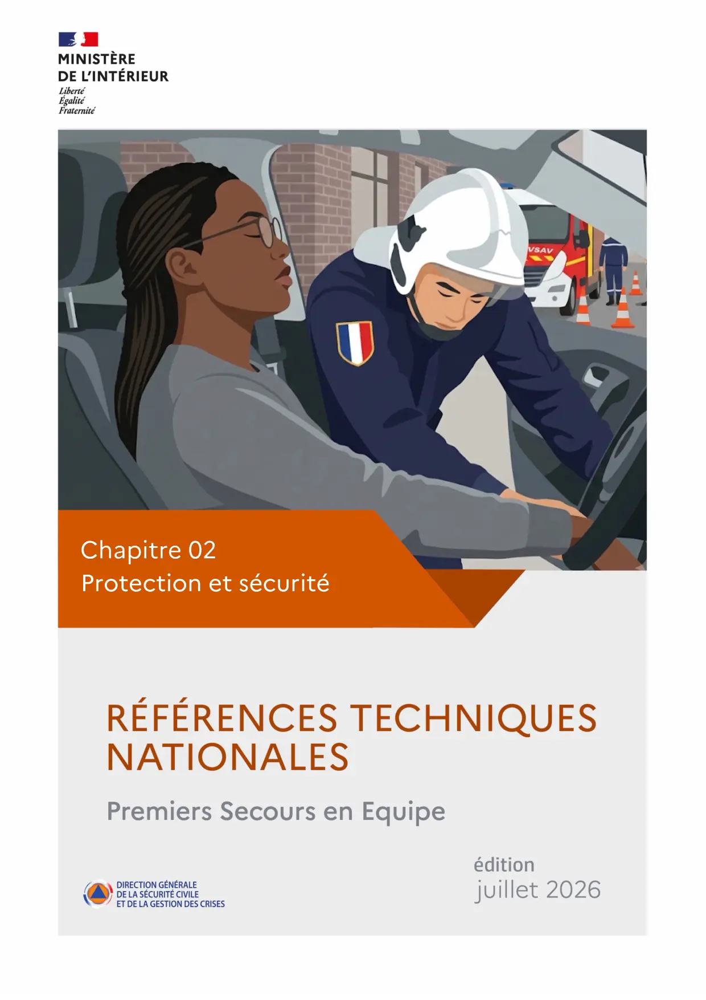
Protection et sécurité
34
[02AC01 / 06-2018] PSE①
Équipement de protection individuelle
Protection individuelle de l’intervenant
Simple, léger et efficace, l’équipement de protection individuelle doit participer et favoriser à la sécurité de l’intervenant. En fonction des missions, il comprend :
une paire de gants à usage unique, pour prévenir le risque de transmission par les mains, de germes dangereux ;
des bandes réfléchissantes sur les vêtements ou sur une chasuble, pour améliorer la visibilité du secouriste, notamment la nuit ;
des gants de manutention, pour se protéger du risque de plaies des mains lors de manipulation d’objets tranchants ;
un blouson adapté en cas de conditions climatiques difficiles, et éventuellement, un casque de protection si le secouriste intervient sur un accident de la circulation, de chantier ;
une lampe de poche ou frontale pour travailler en sécurité dans l’obscurité.
Protection contre la contamination
Afin de comprendre comment les mesures de protection peuvent diminuer les risques de contamination, il est nécessaire de les connaître.
L’objectif des techniques de protection utilisables par les intervenants est d’interrompre la transmission d’un germe d’un individu à l’autre et de limiter le risque de transmission d’un germe dangereux aux secouristes.
Pour être efficaces, il est indispensable que ces techniques soient utilisées, chaque fois qu’une victime est prise en charge. En effet, il est impossible de dire si une personne, même apparemment saine, est porteuse ou non d’une maladie infectieuse.
Ces mesures de protection passent par l’application des précautions standards et particulières pour lutter contre les infections.
Protection contre les objets perforants
Il est fréquent de rencontrer des objets perforants (tranchants ou piquants) sur une intervention : débris de verre, métal tranchant, aiguille non protégée…
Les gants à usage unique protègent l’intervenant d’une contamination par des liquides biologiques (sang, urine, salive…), mais nullement du risque de plaie par un objet perforant. Il doit déposer les objets tranchants ou piquants dans les boites de recueil des déchets d’activités de soins.
Devant des débris de verre ou autres objets perforants, il doit mettre des gants épais de manutention et veiller à ne pas se blesser ou à ne pas blesser accidentellement un tiers.
Protection lors des manœuvres de réanimation
Même si le risque de transmission par la salive est très faible, il faut éviter d’utiliser une méthode orale directe de ventilation artificielle (bouche-à-bouche, bouche-à-nez) si l’on dispose d’un moyen de ventilation (insufflateur manuel).
35
Vaccination
Même si l’on est contaminé par un agent infectieux, le développement de la maladie n’est pas obligatoire, notamment si l’organisme est immunisé ou résistant à cet agent. Un des moyens d’acquérir cette résistance est la vaccination.
La vaccination consiste à injecter dans l’organisme tout ou partie de l’agent infectieux tué ou atténué et permettre ainsi à son propre système immunitaire de développer une résistance spécifique. Comme cette résistance peut s’atténuer avec le temps, il est nécessaire, pour certains vaccins, de renouveler la vaccination à intervalle régulier, c’est le « rappel ».
Un certain nombre de vaccinations est recommandé pour le secouriste, en règle général par le service médical de l’autorité d’emploi de l’intervenant. Ce même service peut recommander ou effectuer d’autres vaccinations qu’il juge nécessaires.
Il n’existe pas de vaccination pour chaque germe existant, c’est pourquoi les méthodes de protection décrites ci-dessus sont indispensables.
36
[02PR01 / 06-2018] PSE①
Sécurité sur intervention
Lors du 1er regard, il convient de reconnaître les dangers :
effectuer une approche prudente de la zone de l’accident afin d’évaluer les dangers potentiels pour les intervenants et les témoins ;
repérer les personnes qui pourraient être exposées aux dangers identifiés et le nombre de victimes. Éventuellement, se renseigner auprès des témoins ;
regarder autour de la victime, en restant à distance d’elle pour évaluer la présence de dangers persistants qui peuvent la menacer.
En fonction de cette première analyse de la situation :
délimiter clairement, largement et visiblement la zone d’intervention ou de danger et empêcher toute intrusion dans cette zone ;
mettre en place les moyens de protection collective en dotation ;
supprimer immédiatement et si possible de façon permanente les dangers environnants pour assurer la protection des intervenants, de la victime et des autres personnes, notamment du suraccident. En cas d’impossibilité ou de danger réel et imminent pour la victime, réaliser un dégagement d’urgence. Toutes ces actions peuvent, en fonction des moyens humains à disposition, se faire simultanément.
Pour réaliser la protection, les intervenants doivent utiliser tous les moyens matériels dont ils peuvent disposer et s’assurent si besoin du concours de toute autre personne qui pourrait apporter une aide dans la mise en œuvre de cette protection.
37
[02FT01 / 09-2019] PSE①
Dégagement d’urgence
Indication
Le dégagement d’urgence d’une victime est réalisé pour :
soustraire une victime à un danger réel, vital, immédiat et non contrôlable ;
rendre possible les gestes d’urgence vitale sur une victime se trouvant dans un lieu ou dans une position ne permettant pas de les réaliser.
Justification
Le dégagement d’urgence est destiné à déplacer, de quelques mètres ou plus, en quelques secondes, la victime jusqu’à un lieu sûr pour permettre de réaliser, en toute sécurité, le bilan, les gestes de secours d’urgence et la surveillance de la victime.
Matériel
Aucun matériel.
Réalisation
Assurer la sécurité de toute intervention.
Traction par les chevilles
Saisir la victime par les chevilles ;
tirer la victime sur le sol, jusqu'à ce qu’elle soit en lieu sûr.
Traction par les poignets
Saisir la victime par les poignets ;
tirer la victime sur le sol, jusqu’à ce qu’elle soit en lieu sûr.
Traction par les vêtements
Saisir la victime par ses vêtements ;
tirer la victime sur le sol, jusqu'à ce qu’elle soit en lieu sûr.
Traction sous les aisselles1
Asseoir la victime en la saisissant par ses vêtements ;
se placer derrière elle et saisir ses poignets opposés en passant les avant-bras sous ses aisselles ;
surélever la partie supérieure de son corps, ses pieds restant en contact avec le sol ;
tirer la victime à reculons, jusqu'à ce qu’elle soit en lieu sûr.
1Cette technique permet de déplacer la victime dans des escaliers ou sur un sol accidenté, tout en protégeant la tête de la victime.
38
Sortie d’un véhicule
Détacher ou couper la ceinture de sécurité ;
dégager éventuellement les pieds de la victime des pédales du véhicule ;
passer la main sous son aisselle la plus proche et maintenir son menton ;
passer l’autre main sous l’autre aisselle et saisir sa ceinture ou son poignet opposé ;
tirer la victime hors du véhicule en se redressant, tout en poursuivant le maintien de sa tête ;
allonger la victime sur le sol en zone sûre en accompagnant sa tête et sa nuque.
Un second secouriste peut aider à allonger la victime sur le sol.
Dégagement d’un enfant ou d’un nourrisson
Dégager le jeune enfant ou le nourrisson en le portant dans les bras.
Traction sur le sol par « équipier relais »1
Un 1er secouriste doit :
s’allonger au sol ;
saisir la victime :
au niveau des chevilles, si l’abord se fait par les pieds,
par les poignets, la ceinture ou les aisselles, si l’abord se fait par la tête.
un ou deux autres secouristes doivent :
saisir les chevilles du 1er secouriste,
tirer de dessous l’obstacle la victime par l’intermédiaire du 1er secouriste, lorsque ce dernier en donne l’ordre.
Risques
Les techniques de dégagement d’urgence sont susceptibles d’aggraver les lésions de la victime, notamment de la colonne vertébrale, mais permettent de soustraire une victime à une mort quasi certaine.
Évaluation
La victime doit se trouver en quelques secondes hors de danger, en zone sûre.
La prise de risque par le sauveteur est minimale.
1Cette technique, exceptionnelle, permet de tirer une victime gisant sous un obstacle, accessible par la tête ou par les pieds. Avant
toute manœuvre, le calage du véhicule ou de l’obstacle sera réalisé ou vérifié.
39
[02PR02 / 07-2026] PSE②
Sécurité sur intervention particulière
Protection d’un accident électrique
Pour faire face à ce risque, il convient de :
s’assurer que la victime n’est pas en contact direct ou indirect (eau, surface métallique…) avec un appareil ou un câble électrique (fil électrique, appareils ménagers sous tension, câble haute tension…) ;
Si c’est le cas, faire écarter immédiatement les personnes présentes et leur interdire de toucher la victime.
si la victime est en contact avec un appareil électrique, couper le courant (disjoncteur) ou débrancher l’appareil en cause ;
Ne pas s’approcher ou toucher la victime avant d’être certain que l’alimentation est coupée1.
en présence d’un câble électrique basse ou haute tension sur le sol, ne pas s’approcher et attendre l’intervention d’équipes spécialisées.
Protection d’un accident de la route
Si les intervenants sont en véhicules, il convient de :
mettre en œuvre les moyens de protection collective s’ils en possèdent (gyrophares, etc) ;
allumer les feux de détresse du véhicule dès qu’il approche du lieu de l’accident et ralentir ;
garer2 son véhicule équipé de signalisation en amont, en protection de la zone d’accident ;
si le véhicule n’est pas équipé de signalisation, ou si la sécurité est déjà assurée, se garer après le lieu de l’accident ;
mettre un gilet de sécurité haute visibilité, avant même de quitter le véhicule.
Dans tous les cas, pour éviter un suraccident, il convient de :
baliser3 ou faire baliser de part et d’autre de l’accident, à une distance de 150 à 200 m ;
interdire toute approche si un danger persiste (ex. : fuite de matières dangereuses, danger électrique…) ;
ne pas fumer et ne pas laisser fumer ;
en présence d’un feu naissant dans un compartiment moteur, utiliser un extincteur ou de la terre ;
couper le contact de chaque véhicule accidenté ;
Si le véhicule possède une clé ou carte de démarrage à distance, éloigner la carte à plus de 5 mètres du véhicule.
serrer le frein à main ou caler le véhicule.
Protection contre le monoxyde de carbone
Pour faire face à ce risque4, il convient de :
faire évacuer les personnes présentes dans le local et les rassembler ;
alerter immédiatement les sapeurs-pompiers qui ont des détecteurs de ce gaz ;
attendre les secours en sécurité.
1 Les matériaux, tels que le bois humide ou les vêtements, ne procurent aucune protection contre le courant électrique
2 Sur le bas-côté ou la bande d’arrêt d’urgence sur les voies rapides ou autoroutes ;
3 A l’aide d’un triangle de signalisation (sauf sur les voies rapides ou autoroutes) ou d’une lampe électrique, d’un linge blanc, de feux de détresse du véhicule ;
4 Dans un endroit fermé, où plusieurs personnes présentent des signes communs de malaises avec des maux de tête et des vomissements, une intoxication par libération de monoxyde de carbone doit être suspectée.
40
Protection contre l’incendie
Pour faire face à ce risque1, il convient d’assurer la protection des personnes et de limiter l’extension du sinistre, pour cela :
alerter immédiatement les sapeurs-pompiers,
appliquer les consignes sapeurs-pompiers, notamment concernant l’évacuation des occupants ou leur confinement ;
fermer ou faire fermer chaque porte derrière soi au cours de son déplacement ;
ne jamais utiliser les ascenseurs ou monte-charges ;
se baisser le plus près possible du sol ;
ne pas s’engager dans un local ou escalier enfumé ;
ne pas pénétrer dans un local en feu.
En présence d’une victime dans un local enfumé et non ventilé
procéder à son dégagement en urgence :
si elle est visible depuis l’entrée du local enfumé ;
si le sauveteur juge que ses capacités sont suffisantes pour réaliser ce sauvetage ;
si la configuration des lieux lui est favorable ;
en retenant sa respiration, uniquement.
dans le cas contraire, en informer immédiatement les sapeurs-pompiers.
En cas de fuite de gaz, avérée ou suspectée, dans un local
ne pas pénétrer dans le local ;
rester à distance et empêcher l’accès ;
ne pas provoquer d’étincelles (interrupteurs, sonnerie, lampe de poche, téléphone portable…).
En présence d’une victime dont les vêtements sont en feu
allonger la victime sur le sol le plus rapidement possible ;
éteindre les flammes ou à défaut les étouffer2.
Protection contre les substances dangereuses
Pour faire face à ce risque3, il convient de :
rester à distance de la fuite ou de la matière dangereuse ;
écarter les témoins de la scène ;
interdire de fumer ;
rester en amont de l’accident par rapport au vent pour se protéger des émanations qui peuvent agir à distance de l’accident ;
alerter immédiatement les sapeurs-pompiers et leur indiquer éventuellement si le véhicule en cause est porteur d’un panneau de danger signalant des toxiques.
1 Un incendie crée une atmosphère dangereuse du fait de la chaleur, du manque d’oxygène et de la présence de fumées toxiques. Il peut être générateur de brûlures et d’intoxications graves. Pour être allumé et entretenu, un feu a besoin d’un combustible (essence, bois, tissus…), d’une source de chaleur (étincelle, flamme) et d’oxygène.
2 Avec une couverture ou un manteau que l’on retire dès que les flammes sont éteintes.
3 La libération de substances dangereuses ou la fuite de produit toxique est le plus souvent rencontrée à la suite d’un accident de la circulation touchant un véhicule qui transporte des matières dangereuses ou à la suite d’un accident industriel. La présence d’une odeur particulière ou de fumées est signe de cette émanation.
41
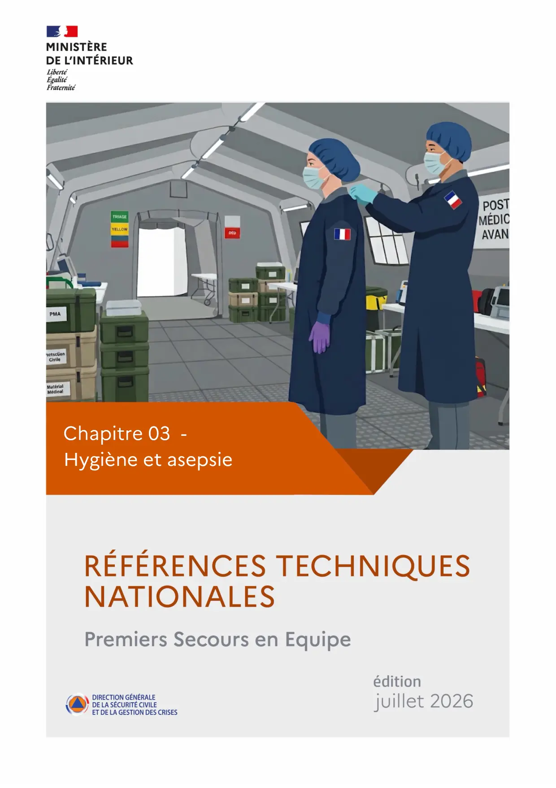
- Hygiène et asepsie
42
[03AC01 / 09-2014] PSE①
Accident d’exposition à un risque viral
Définition
Un accident d’exposition à un risque viral est défini comme toute exposition percutanée (par piqûre ou coupure) ou tout contact direct sur une peau lésée ou des muqueuses (bouche, yeux) avec du sang ou un liquide biologique souillé par du sang.
Causes
On définit par liquides biologiques tous les éléments liquides issus du corps humain, comme le sang, la salive, les urines, les vomissures, le liquide amniotique, le liquide céphalo-rachidien…
Le risque de transmission a été prouvé pour les trois virus VIH, VHB et VHC par le sang et les liquides biologiques contenant du sang. En revanche, le risque est considéré comme nul pour les urines et les selles, sauf si elles contiennent du sang. Ce sont alors des liquides biologiques à risque prouvé.
Le sperme et les sécrétions vaginales présentent un risque de transmission intrinsèque pour les virus VIH, VHB, VHC.
Les risques avec la salive sont faibles. Cependant, dès que la salive contient du sang (gencives fragiles, traumatisme facial), il s’agit alors d’un liquide biologique à risque prouvé.
Risques & Conséquences
En dehors de toute maladie, le sang est normalement stérile. Toutefois, le sang ainsi que les liquides biologiques peuvent véhiculer des agents infectieux divers comme les bactéries, les champignons, les parasites, les virus.
Pour la plupart de ces agents, on dispose de médicaments anti-infectieux efficaces. En revanche, pour les virus concernés dans l’accident d’exposition au sang (VIH, VHB, VHC), il y a peu de traitements curatifs.
Les risques sont plus importants lors d’une effraction cutanée par un objet piquant, tranchant ou coupant que par un simple contact avec la peau ou les muqueuses.
Il convient de ne pas négliger le risque lié à une projection de sang dans les yeux.
Signes
Un accident d’exposition à un risque viral doit être suspecté si :
une coupure ou une piqûre s’est produite avec un objet ayant été en contact avec un liquide biologique contaminé par du sang (vomissements, sécrétions oropharyngées) ;
du sang ou un liquide biologique contenant du sang est projeté sur une muqueuse, en particulier les yeux et la bouche, ou sur une peau lésée (lésions non cicatrisées, maladies de la peau).
Principe de l’action de secours
réaliser immédiatement les soins adaptés en cas d’accident d’exposition à un risque viral avéré.
43
[03PR01 / 09-2014] PSE①
Accident d’exposition à un risque viral
Dès la constatation d’un accident d’exposition à un risque viral
interrompre l’action de secours en cours, si possible ;
se faire relayer.
S’il s’agit d’une plaie
ne pas faire saigner ;
nettoyer immédiatement, à l’eau courante et au savon, puis rincer ;
réaliser l’asepsie, en assurant un temps de contact d’au moins cinq minutes, à l’aide :
d’un dérivé chloré stable (soluté de Dakin),
d’un dérivé chloré fraîchement préparé (solution d’eau de javel à 9 ° chlorométrique diluée au 1/5ème),
à défaut, d’un antiseptique à large spectre (produits iodés, par exemple).
En revanche, il convient de ne pas utiliser les produits pour traitement hygiénique des mains par friction.
En cas de projection sur les muqueuses, en particulier au niveau de la conjonctive
rincer abondamment, durant au moins cinq minutes avec :
de préférence un soluté isotonique (sérum physiologique),
à défaut de l’eau.
Après la réalisation de ces soins immédiats,
rendre compte sans délai à son autorité d’emploi afin de :
poursuivre la procédure de soins ;
réaliser les formalités administratives obligatoires.
44
[03AC02 / 09-2014] PSE①
Risque infectieux
Principes de transmission des maladies infectieuses
Une infection est la conséquence de la pénétration dans l’organisme d’un nombre suffisant d’agents (bactérie, virus, champignon, parasite) pour pouvoir y proliférer par multiplication. L’infection peut s’accompagner, après un temps d’incubation variable, de signes cliniques. Elle peut rester muette. On parle alors de porteur sain.
Des agents infectieux sont présents, naturellement ou exceptionnellement, dans l’environnement. On peut les mettre en évidence dans l’air, sur des objets, dont les instruments utilisés pour les soins, dans les aliments ou à leur surface (souillure), dans le derme de la peau des mains ou à leur surface. Une personne (victime, secouriste), peut représenter un réservoir d’agents infectieux.
Les germes se transmettent de différentes façons :
par contact ;
C’est la voie la plus importante de transmission des microorganismes. Le réservoir principal est l’être humain. Donc, tout contact avec une victime potentiellement infectée ou contaminée (peau, sang, liquides biologiques), ou avec des matériels, des surfaces souillées ou des déchets d’activités de soins, présente un danger. Dans la plupart des cas, les mains sont le vecteur.
par les gouttelettes de « pflugge » ;
Ce sont de fines gouttes d’eau ou de salive (postillons) émises en expirant, en parlant ou en toussant. Elles contiennent des microorganismes présents dans les voies aériennes et digestives supérieures. Elles ne restent pas longtemps en suspension dans l’air et ne sont contaminantes que sur une courte distance. Elles sont le vecteur de transmission de nombreuses infections virales (comme la grippe) et bactériennes.
par l’air ;
Les supports de cette contamination sont de très fines particules provenant de gouttelettes déshydratées ou de poussières d’origine cutanée, textile ou végétale. Même en l’absence de source directe, l’air reste contaminant et les particules demeurent longtemps en suspension dans l’air. L’air est le vecteur de transmission de maladies telles que la tuberculose ou la varicelle.
par d’autres voies.
L’eau peut être contaminée par des déjections humaines ou animales. La nourriture peut transmettre des germes transmis par l’eau elle-même contaminée (toxi-infection alimentaire).
Certains médicaments issus de porteurs sains (sang et dérivés) peuvent être contaminants.
Le matériel de secours insuffisamment désinfecté (aspirateur de mucosités, insufflateurs manuels) peut être également en cause.
Précautions à prendre
L’intervenant ignore souvent si la victime ou les secouristes eux-mêmes présentent une infection en cours d’évolution. Pour limiter le risque de transmission d’infections entre la victime et l’intervenant, il faut prendre systématiquement des précautions dites standards.
Dans certaines situations, il convient de prendre des précautions particulières.
Les précautions standards doivent être appliquées par tous les intervenants. Elles ont un objectif double : la protection du personnel et la protection de la victime. Elles concernent l’hygiène corporelle quotidienne de l’intervenant ainsi que des précautions à observer pendant et après l’intervention.
Les précautions particulières sont complémentaires aux précautions standards. Elles sont mises en œuvre en fonction du niveau de risque ou sur consignes des autorités d’emploi.
45
Appliquées par les intervenants, elles réduisent la transmission de microorganismes dangereux ou résistants, ou de maladies transmissibles (tuberculose, méningite).
Prévention des accidents d’exposition à un risque viral
L’accident d’exposition à un risque viral (AEV) est défini comme toute exposition percutanée (par piqûre ou coupure) ou tout contact direct sur une peau lésée ou des muqueuses (bouche, yeux) avec du sang ou un liquide biologique souillé par du sang.
Sa prévention commence largement en amont de l’accident par :
la vaccination contre l’hépatite B ;
le port d’équipements de protection ;
le respect des précautions standards et particulières pour limiter le risque de transmission des maladies infectieuses ;
l’utilisation de matériel de sécurité ;
une formation spécifique relative à la prévention des AEV.
Lors de l’intervention, les précautions standards doivent être appliquées pour tous, dès la prise en charge d’une victime.
L’intervenant doit impérativement porter tous les équipements de sécurité adaptés au type d’intervention (lors d’une désincarcération, ne pas oublier de baisser la visière ; en intervention, travailler avec les manches longues ; mettre les gants à usage unique, voire un double « gantage », en cas d’hémorragie externe).
Il convient d’être particulièrement vigilant en présence d’objets coupants ou piquants sur les lieux d’intervention et respecter impérativement les règles d’utilisation des emballages à DASRI.
Après toute intervention, la peau, la tenue, le matériel ainsi que le véhicule peuvent avoir été contaminés par du sang ou un liquide biologique susceptible d’en contenir.
Le retrait de gants à usage unique se fait alors selon la procédure adaptée ainsi que le nettoyage et la désinfection des matériels.
46
[03PR02 / 09-2014] PSE①
Précautions standards contre le risque infectieux
De façon générale, il convient de
se laver quotidiennement le corps ;
avoir les ongles coupés courts ;
se laver et se désinfecter régulièrement les mains dans la vie courante.
Au cours de l’intervention
porter une tenue adaptée1, confortable et lavable ;
se nettoyer régulièrement les mains et les désinfecter ;
porter des gants à usage unique et les changer régulièrement ;
porter un masque à usage unique :
lors de certains gestes de secours (brûlés),
associé à des lunettes ou à une visière de protection, s’il existe un risque de projections (aspirations, risques de vomissements, toux).
respecter les procédures :
de gestion des déchets d’activités de soins à risques infectieux et du matériel souillé par des liquides biologiques,
en cas d’accident d’exposition à un risque viral.
recouvrir toute plaie par un pansement ;
utiliser, sur le brancard, des draps à usage unique ou lavés après chaque transport ;
utiliser, si possible, une couverture bactériostatique pour couvrir la victime ;
Cette couverture doit être nettoyée ou changée si elle a été souillée.
assurer l’entretien des surfaces et du matériel après chaque intervention.
1 Cette tenue doit être changée dès qu’elle est souillée.
47
[03FT01 / 07-2026] PSE①
Utilisation des emballages à élimination de déchets
Indication
On utilise les emballages spéciaux relatifs aux déchets des activités de soins à risques infectieux (DASRI) pour :
• les matériels piquants, coupants et tranchants : aiguilles, scalpels, lames de rasoir…
• les déchets d’activités de soins fortement imprégné de sang, de sécrétions ou d’excrétions avec risque d’écoulement : compresses, pansements, champs, draps à usage unique…
Justification
La réalisation des soins est à l’origine d’une production de DASRI. Ils représentent une source importante de transmission des infections et d’accident d’exposition à un risque viral.
Le recueil, le stockage et l’élimination des DASRI sont réglementés et utilisent des emballages et des conteneurs spéciaux conçus pour cet usage.
Matériel
emballages spéciaux :
agréés et homologués. Ils présentent un mode d’emploi inscrit sur leurs parois extérieures ;
reconnaissables grâce à leur couleur jaune et leur pictogramme spécifique reconnu internationalement.
prennent la forme :
de sacs souples, mais étanches pour le recueil des déchets mous ;
de collecteurs en plastique rigide pour les déchets tranchants, coupants et piquants.
Ils doivent être stockés de manière également réglementée dans des collecteurs en carton ou des grands récipients.
Utilisation
Il est indispensable de manipuler les DASRI avec des gants.
Règles générales
ne rien laisser sur les lieux de l’action de secours ;
ne jamais recapuchonner les aiguilles ni séparer les aiguilles d’une seringue ou d’une tubulure à perfusion avant de les mettre dans le collecteur ;
utiliser l’emballage conforme adapté au déchet ;
ne pas jeter de DASRI aux ordures ménagères ;
déposer les emballages pleins dans un lieu prévu à cet effet.
Manipulation
ouvrir l’emballage (sac ou collecteur) au préalable ;
déposer le déchet dans l’emballage et le fermer immédiatement après à l’aide de la fermeture provisoire
48
(collecteur) ;
ne pas remplir l’emballage au-delà de la limite indiquée ;
ne pas tasser les déchets à l’intérieur de l’emballage à DASRI ;
fermer l’emballage lorsque le taux maximum de remplissage, ou la date de péremption, est atteint ;
La fermeture doit se faire au moyen du dispositif de fermeture définitive, si l’emballage en est doté.
déposer l’emballage dans le container prévu à cet effet.
Risques & Contraintes
La manipulation des DASRI expose aux risques infectieux, notamment aux accidents d’exposition au sang.
Évaluation
Tous les déchets sont éliminés grâce à des emballages appropriés.
Les emballages ne sont ni perforés ni surchargés.
Les aiguilles sont éliminées sans être recapuchonnées.
49
[03FT02 / 09-2014] PSE①
Lavage des mains
Indication
Cette technique doit être réalisée :
en début et fin de journée, à la prise et à la sortie du service ;
systématiquement avant un soin et entre deux victimes ;
avant ou après un geste de la vie courante (après s’être mouché, avant de manger, après avoir été aux toilettes) ;
au retrait des gants ;
en présence de poudre sur les mains ;
chaque fois que les mains sont visiblement souillées.
Justification
Le lavage simple des mains élimine les souillures, réduit la flore transitoire (bactéries, virus, champignons) et diminue le risque de transmission de maladies.
Matériel
eau du robinet, à défaut : eau en bouteille ;
savon neutre liquide ;
poubelle à pédale ou sans couvercle équipée d’un sac jetable ;
distributeur d’essuie-mains à usage unique (en papier ou en non-tissé).
Réalisation
mouiller les mains ;
prendre une dose de savon liquide ;
savonner pendant 30 secondes en insistant sur la pulpe des doigts, les espaces interdigitaux, le pourtour des ongles, les bords externes des mains, mais aussi le dos des mains, les paumes et les poignets ;
rincer abondamment sous l’eau, ne pas toucher au robinet ;
sécher par tamponnement avec des essuie-mains à usage unique ;
utiliser le dernier essuie-mains pour fermer le robinet ;
jeter l’essuie-mains dans une poubelle sans la toucher avec les mains.
Évaluation
Les mains sont visuellement propres et les ongles n’ont pas de dépôts sombres.
Il n’existe plus de traces du savon de lavage.
Les mains et les avant-bras sont secs.
50
[03FT03 / 09-2014] PSE①
Friction des mains
Indication
Cette technique doit être réalisée lorsque la technique de lavage des mains à l’eau et au savon ne peut pas être réalisée (absence d’accès à l’eau). Elle peut aussi être réalisée en complément, lorsqu’un degré d’asepsie plus élevé est requis.
Cette technique est aussi efficace que le lavage des mains, si la friction est faite sur des mains visuellement propres et non talquées. La friction sur des gants est inutile.
Justification
Les frictions avec un gel hydroalcoolique ont pour but :
de compléter l’élimination des germes de surface, après un lavage simple des mains à l’eau et au savon ;
de conserver un niveau d’asepsie acceptable des mains.
En effet, le contact avec les victimes ou leur environnement pendant les soins donnés introduit progressivement des souillures, même si les mains paraissent propres.
Matériel
Gel hydroalcoolique, contenu soit :
dans un flacon individuel, fermé par un bouchon antiretour ;
dans un récipient mural fixe, muni d’une pompe de dispensation dont la commande est accessible sans utiliser les mains.
Réalisation
enlever montre, bagues et autres bijoux ;
déposer dans le creux de la paume d’une main une quantité suffisante (ce que le creux de la main peut contenir) ;
frictionner sans arrêter, pendant au moins 30 secondes et jusqu’à évaporation complète, toutes les surfaces des mains en insistant sur la pulpe des doigts et les paumes. Ne pas oublier les espaces interdigitaux, les pouces, le dos de la main et les poignets ;
ne pas rincer ni essuyer.
Risques & Contraintes
Le gel hydroalcoolique est inflammable, il ne faut pas réaliser cette technique à proximité d’une source de chaleur (flamme d’un briquet, d’une cigarette).
Évaluation
Les mains doivent être sèches à l’issue de la procédure.
51
[03FT04 / 07-2026] PSE①
Retrait des gants à usage unique
Indication
Cette technique doit être réalisée par le secouriste lors de chaque retrait des gants à usage unique :
à la fin de chaque action de secours ;
chaque fois que les gants apparaissent souillés.
Justification
Destinés à protéger le secouriste de germes dangereux, les gants à usage unique peuvent contaminer les mains du secouriste au moment de leur retrait ou contaminer une autre personne. La technique de retrait des gants à usage unique a donc pour but d’éviter cette contamination.
Les gants retirés font partie des déchets d’activités de soins à risques infectieux (DASRI).
Matériel
emballage à élimination de déchets d’activités de soins à risques infectieux (DASRI).
Réalisation
saisir un gant au niveau du poignet en évitant de toucher la peau ;
retirer le premier gant en le retournant ;
rouler le gant retiré dans la paume de l’autre main ;
insérer un ou deux doigts en crochet à l’intérieur de l’autre gant sans toucher la face externe du gant, et le pincer entre le pouce et l’index sur sa face interne ;
retirer le second gant en le retournant ;
jeter les gants dans un conteneur de déchets d’activités de soins prévu à cet effet.
Risques & Contraintes
Lors de leur retrait, le secouriste peut entrer en contact avec la face externe souillée des gants.
Les gants, une fois ôtés, sont placés directement dans l’emballage à élimination de déchets.
Évaluation
Les mains nues n’ont pas touché les faces externes des gants.
Les gants, une fois ôtés, sont placés directement dans l’emballage à élimination de déchets.
52
[03FT05 / 09-2014] PSE①
Utilisation des détergents et désinfectants
Indication
L’utilisation de détergent et de désinfectant est indiquée lors de la réalisation des opérations de nettoyage et de désinfection réalisées conformément aux différents protocoles en vigueur.
Justification
Les matériels utilisés pour donner des soins ou porter secours aux victimes sont susceptibles de transmettre des maladies infectieuses lorsqu’ils sont souillés par des matières organiques humaines ou animales ou des particules (terre, poussières) souillées ou suspectes de l’être.
Les secouristes utilisent deux types de matériels :
à usage unique ;
réutilisable, qui nécessitent une détersion et une désinfection.
Matériel
un produit détergent ;
un produit désinfectant, à défaut, on utilisera de l’eau de javel diluée.
Certains produits comportent les deux fonctions.
Les définitions de ces fonctions sont indiquées dans la fiche « Informations générales ».
Réalisation
La détersion des surfaces s’effectue après nettoyage à grande eau et dépoussiérage avec un linge humide simple si le degré de saleté est important et si la surface traitée permet ces traitements préliminaires et en respectant les mesures de protection indiquée par le fabricant.
Les produits détergents ou désinfectants ne doivent pas être utilisés sur la peau. Leur utilisation nécessite donc une protection de l’utilisateur.
Le traitement est effectué :
en un temps avec les produits détergents-désinfectants. Dans ce cas, les surfaces traitées nécessitent une détersion simple périodique pour éliminer le film laissé sur les surfaces traitées ;
en deux temps, en respectant les températures et les temps d’application, si on utilise un détergent suivi d’un désinfectant ;
en progressant des zones les plus propres vers les zones les plus sales, du haut vers le bas.
Les produits seront utilisés avec des chiffons propres ou des non tissés jetables à usage unique. Les éponges réutilisables sont proscrites.
Risques & Contraintes
Comme tous les produits phytosanitaires, les détergents et les désinfectants comportent certains risques liés à leur utilisation. Ces derniers sont notés sur la notice d’utilisation du produit.
Évaluation
Les détergents et les désinfectants doivent être utilisés en fonction des différentes procédures et leur règle d’utilisation indiquée sur la notice respectée.
53
[03FT06 / 09-2014] PSE①
Nettoyage et désinfection du matériel
Indication
Cette procédure est applicable pour les matériels de secours réutilisables.
Cette opération doit être réalisée systématiquement après la prise en charge d’une victime si le matériel a été mis en œuvre, ou de manière périodique (en général hebdomadaire), lors du protocole de désinfection approfondi du véhicule sanitaire.
Justification
Des infections peuvent être transmises à la victime ou à l’intervenant secouriste par le biais de matériel non désinfecté à l’issue de son utilisation.
Le nettoyage suivi de la désinfection permet d’assurer la propreté microbiologique du dispositif médico-secouriste.
Matériel
Afin de réaliser le nettoyage et la désinfection du matériel, il convient d’avoir :
un point d’eau propre ;
des gants non stériles à usage unique à manchette longue ;
du savon liquide et/ou un système de distribution de gel pour l’antisepsie des mains ;
un bac permettant l’immersion du matériel ;
deux plans de travail :
l’un destiné au matériel sale,
l’autre destiné au matériel propre.
le nécessaire pour procéder au débarras et au lavage. À savoir :
deux seaux de couleurs différentes (par exemple rouge et bleu) et d’une contenance d’environ dix litres,
un sac jaune pour déchets d’activités de soins à risques infectieux,
un sac d’une autre couleur pour les déchets assimilés aux ordures ménagères,
des essuie-tout.
l’équipement avec le nécessaire pour utiliser le détergent-désinfectant. À savoir :
des lavettes à usage unique ou lingettes préimprégnées de détergent-désinfectant satisfaisant aux normes antimicrobiennes,
Les supports en non-tissé à usage unique sont préférés par commodité.
une solution détergente désinfectante pour sols, surfaces, mobilier, dispositifs médicaux,
En règle générale, ces solutions sont présentées :
soit en bidon (en général cinq litres),
soit en flacon (en général un litre),
soit en dose individuelle (en général autour de vingt millilitres).
un pulvérisateur ou spray de détergent-désinfectant pour surfaces, matériels et dispositifs médicaux, en flacon avec un pistolet (produit prêt à l’emploi),
une brosse de nettoyage qui a été elle-même désinfectée.
les documents de traçabilité des opérations réalisées.
54
Les serpillères et les éponges sont interdites, car elles constituent des réservoirs de micro-organismes potentiellement pathogènes.
Si les textiles de nettoyage sont réutilisés, les laver en machine à haute température (> 60 °C) avec javellisation au dernier rinçage.
Réalisation
Règles générales
La désinfection du matériel est toujours précédée d’une étape de nettoyage, même si le produit utilisé est un produit détergent-désinfectant.
Les personnes chargées de cette opération doivent respecter un circuit précis en distinguant une zone propre d’une zone sale. Elles devront nettoyer et désinfecter les plans de travail à l’issue des opérations.
Le nettoyage et la désinfection du matériel sont réalisés après l’élimination des souillures biologiques (sang, salive, etc.), dès leur production, avec un essuie-tout imprégné d’un détergent-désinfectant.
Avant tout nettoyage-désinfection des matériels, il faut :
s’être lavé les mains ;
avoir mis des gants à usage unique non stériles ;
avoir jeté le matériel à usage unique dans les emballages prévus en respectant les règles du tri ;
avoir sorti de la cellule sanitaire l’ensemble des matériels stockés à l’intérieur ;
avoir déposé l’ensemble du matériel sur un plan de travail réservé pour accueillir le matériel non désinfecté ;
avoir préparé un bas de trempage contenant une solution de détergent-désinfectant en respectant la dilution prescrite.
À l’issue du nettoyage-désinfection :
retirer les gants et les jeter dans le sac jaune à déchets mous ;
se laver les mains ;
réintégrer l’ensemble du matériel nettoyé et désinfecté à l’intérieur de la cellule sanitaire et procéder à son inventaire.
Protocole relatif aux matériels immergeables
démonter le matériel démontable et faire tremper dans le bac les parties immergeables ainsi que la brosse de nettoyage ;
laisser le matériel en contact dans la solution détergente désinfectante pendant le temps imposé par la notice technique du produit utilisé. Au minimum, respecter un temps de contact de quinze minutes ;
nettoyer et brosser méthodiquement les différentes pièces ;
rincer abondamment les pièces une par une sous l’eau courante ;
sécher avec un support absorbant à usage unique chaque pièce ;
remonter et vérifier l’état de fonctionnement du matériel.
Protocole relatif aux matériels non immergeables
démonter les parties amovibles ;
pulvériser une solution détergente désinfectante sur ce matériel à l’aide d’un pulvérisateur ou d’un spray en veillant à ne pas projeter directement la solution sur les parties électriques sensibles ;
étaler la solution pulvérisée sur ce matériel à l’aide d’une lavette en non-tissé à usage unique, propre et
55
sèche ;
laisser sécher et ne pas rincer ;
remonter et vérifier l’état de fonctionnement du matériel.
Risques & Contraintes
Les désinfectants peuvent être irritants pour la peau et les muqueuses (yeux). Il est donc nécessaire de porter des gants appropriés (gants à usage unique pour un usage court, à manchettes longues, sans immersion dans la solution, sinon porter des gants de ménage), des lunettes de protection, une blouse de protection, un masque de protection respiratoire éventuellement.
En cas de contact avec les yeux, laver abondamment sous l’eau et consulter un médecin.
En cas d’ingestion, il est impératif de consulter immédiatement un médecin et de lui montrer l’emballage ou l’étiquette du produit.
Ne pas mélanger les différents produits entre eux.
Pour les solutions en pulvérisateur, ne pas respirer l’aérosol issu de la pulvérisation.
Ne jamais pulvériser sur du matériel électrique (DAE, aspirateur de mucosités).
La vérification du fonctionnement du matériel est indispensable avant sa remise en service.
Évaluation
Les procédures de nettoyage-désinfection sont :
écrites dans un document à la disposition de toutes les personnes susceptibles de réaliser ce type d’action ;
mises à jour régulièrement.
Ces procédures doivent donc être respectées et des fiches de suivi ou d’enregistrement de l’entretien du matériel doivent être créées et renseignées convenablement chaque fois qu’une action de nettoyage-désinfection est menée. Sur ces fiches figurent :
le type de matériel et son numéro d’identification ;
le type de nettoyage-désinfection réalisé ;
la date de réalisation de celui-ci ;
le nom et la signature de la personne qui a réalisé l’opération.
Régulièrement, l’autorité d’emploi met à jour les procédures d’utilisation du matériel de nettoyage et du suivi, et vise les fiches de suivi d’entretien.
Lors de la réalisation des opérations de désinfection-entretien, la personne :
porte les équipements de protection adaptés ;
respecte les procédures de nettoyage et de désinfection adaptées à la situation ;
utilise correctement les détergents et les désinfectants employés.
56
[03FT07 / 09-2014] PSE①
Nettoyage et désinfection d’un véhicule ou d’un local
Indication
Cette procédure est applicable pour les véhicules sanitaires ou les locaux utilisés comme poste de secours.
Les opérations de nettoyage – désinfection doivent être réalisées :
selon un protocole simplifié entre chaque victime prise en charge ou à l’issue de chaque transport ;
selon un protocole quotidien avant la prise de service d’une nouvelle équipe ou avant le début d’une mission de longueur durée ;
selon un protocole de désinfection approfondie à l’issue du transport d’une victime à risque infectieux particulier connu (après conseil de l’autorité médicale ou de l’autorité d’emploi) ou de manière périodique à une fréquence recommandée par l’autorité d’emploi.
Justification
Les victimes véhiculées et les intervenants courent le risque, dans un véhicule ou un local non ou mal entretenu, de contracter des micro-organismes pathogènes résistants dans l’environnement extérieur.
L’entretien doit permettre d’assurer :
la propreté visuelle ;
la propreté microbiologique.
Matériel
Afin de réaliser le nettoyage et la désinfection d’un véhicule ou d’un local, il convient d’avoir :
un point d’eau propre ;
des gants non stériles à usage unique à manchette longue ;
du savon liquide et/ou un système de distribution de gel pour l’antisepsie des mains ;
le nécessaire pour procéder au débarras et au lavage préalable du volume. À savoir :
deux seaux de couleurs différentes (par exemple rouge et bleu) et d’une contenance d’environ dix litres,
un balai brosse ou équivalent (balai faubert à support plat pour frange ou balai avec pince plastique pour frange) propre,
une frange adaptée, lavée en machine et éventuellement un système de presse pour frange,
un aspirateur réservé au nettoyage des véhicules sanitaires,
un sac jaune pour déchets d’activités de soins à risques infectieux,
un sac d’une autre couleur pour les déchets assimilés aux ordures ménagères,
des essuie-tout.
l’équipement avec le nécessaire pour utiliser le détergent-désinfectant. À savoir :
des lavettes à usage unique ou lingettes préimprégnées de détergent-désinfectant satisfaisant aux normes antimicrobiennes,
Les supports en non-tissé à usage unique sont préférés par commodité.
une solution détergente désinfectante pour sols, surfaces, mobilier, dispositifs médicaux.
57
En règle générale ces solutions sont présentées :
soit en bidon (en général cinq litres),
soit en flacon (en général un litre),
soit en dose individuelle (en général autour de vingt millilitres).
un pulvérisateur ou spray de détergent-désinfectant pour surfaces, matériels et dispositifs médicaux, en flacon avec un pistolet (produit prêt à l’emploi),
une brosse de nettoyage qui a été elle-même désinfectée.
le cahier de traçabilité des opérations réalisées.
Les serpillères et les éponges sont interdites, car elles constituent des réservoirs de micro-organismes potentiellement pathogènes.
Si les textiles de nettoyage sont réutilisés, les laver en machine à haute température (> 60 °C) avec javellisation au dernier rinçage.
Réalisation
Le protocole simplifié d’entretien entre deux victimes peut se réaliser n’importe où, car il ne nécessite aucun point d’eau. Le matériel d’entretien pour ce protocole peut être stocké dans le véhicule.
Le protocole quotidien et le protocole approfondi doivent autant que possible être réalisés dans un endroit réservé et adapté comportant au minimum un point d’eau du réseau, muni d’un système d’évacuation des eaux usées ainsi que le matériel spécifique d’entretien et des plans de travail sans joints.
Règles générales
Quel que soit le protocole utilisé, il faut, avant sa mise en œuvre :
bien aérer le véhicule ou le local en ouvrant les portes ;
s’être lavé les mains ;
s’être protégé au moyen :
de gants à usage unique, non stériles,
d’une paire de lunettes de protection.
avoir dépoussiéré et nettoyé le sol ainsi que l’intérieur du véhicule ou du local.
À la fin du protocole, il faut :
placer les matériels à usage unique usagés dans les emballages prévus pour la collecte des DASRI ;
retirer les gants et les jeter dans le sac jaune à déchets mous prévu pour les DASRI ;
se laver les mains ;
noter ce qui a été fait sur le cahier de traçabilité.
Protocole simplifié
pulvériser une solution détergente désinfectante sur le matériel qui a été en contact avec la victime ou qui a été exposé à des liquides biologiques (brancard, matelas immobilisateur à dépression, plans de travail, poignées de portes…) ;
étaler la solution pulvérisée sur ce matériel à l’aide d’une lavette à usage unique, propre et sèche ;
laisser sécher et ne pas rincer ;
jeter la lavette dans le sac à déchets mous prévu pour les DASRI.
58
Protocole périodique
nettoyer et désinfecter la cellule sanitaire. Pour cela :
ôter le matériel encombrant les surfaces ;
procéder au nettoyage et à la désinfection de toutes les surfaces sauf le sol à l’aide d’une lingette à usage unique selon la « technique des 2 seaux » ;
laisser sécher sans rincer ;
réintégrer le matériel préalablement nettoyé et désinfecté dans la cellule ;
nettoyer et désinfecter le sol en utilisant la même technique et un balai à franges ;
laisser sécher le sol avant de pénétrer dans la cellule sanitaire.
nettoyer et désinfecter la cabine de conduite. Pour cela :
nettoyer à l’aide d’un pulvérisateur de solution détergente désinfectante le tableau de bord, le volant, le levier de vitesse, les manettes, le frein à main, les portes intérieures et particulièrement les poignées, les appareils de communication (radios, téléphones mobiles) ;
Ne pas effectuer de pulvérisation directe sur les matériels sensibles aux projections humides.
étaler la solution pulvérisée sur ce matériel à l’aide d’une lavette en non-tissé à usage unique, propre et sèche, laisser sécher et ne pas rincer ;
procéder au lavage du sol de l’intérieur vers l’extérieur, comme décrit précédemment pour la cellule sanitaire.
Protocole approfondi
nettoyer et désinfecter la cellule sanitaire. Pour cela :
sortir de la cellule sanitaire l’ensemble du matériel et le stocker à l’intérieur ;
déposer ces matériels sur un plan de travail réservé pour accueillir le matériel non désinfecté ;
réaliser les points 2 à 6 du protocole périodique relatif à la cellule sanitaire ;
Il convient de procéder en commençant par le plafond et en descendant progressivement sur les parois. Ne pas oublier les tiroirs et l’intérieur des placards. Bien insister sur le support de brancard. Terminer par le sol.
nettoyer et désinfecter le matériel qui a été préalablement stocké hors de la cellule sanitaire ;
réintégrer l’ensemble du matériel nettoyé et désinfecté à l’intérieur en ayant vérifié son état de fonctionnement ;
nettoyer et désinfecter la cabine de conduite comme indiqué au protocole périodique.
Technique des deux seaux
Tableau 1: Technique des deux seaux
Seau de lavage ou rouge
Préparer dans un seau une solution de détergent-désinfectant en respectant la dilution prescrite par le fournisseur
Seau de rinçage ou bleu
Remplir un seau d’une autre couleur avec de l’eau propre du réseau
Seau de lavage ou rouge
Tremper la frange et la fixer à l’extrémité du balai
Nettoyer le sol de la cellule sanitaire en commençant par le fond et en terminant vers l’extérieur, en déplaçant la frange en faisant des « S »
Seau de rinçage ou bleu
Essorer la frange, autant de fois que cela est nécessaire
59
Seau de lavage ou rouge
Tremper la frange
Seau de rinçage ou bleu
Dès que l’eau devient suffisamment trouble, le vider et le remplir d’eau claire
Renouveler les étapes des points 4 à 7 autant que nécessaire
Vider les deux seaux, les rincer, essorer et rincer la frange, au besoin la laver en machine à laver, séparément de tout linge, et laisser sécher le tout
Risques & Contraintes
Les désinfectants peuvent être irritants pour la peau et les muqueuses (yeux). Il est donc nécessaire de porter des gants appropriés (gants à usage unique pour un usage court, à manchettes longues, sans immersion dans la solution, sinon porter des gants de ménage), des lunettes de protection, une blouse de protection, un masque de protection respiratoire éventuellement.
En cas de contact avec les yeux, laver abondamment sous l’eau et consulter un médecin.
En cas d’ingestion, il est impératif de consulter immédiatement un médecin et de lui montrer l’emballage ou l’étiquette du produit.
Ne pas mélanger les différents produits entre eux.
Pour les solutions en pulvérisateur, ne pas respirer l’aérosol issu de la pulvérisation.
Ne jamais pulvériser sur du matériel électrique (DAE, aspirateur de mucosités).
Évaluation
Les procédures de nettoyage-désinfection sont :
écrites dans un document à la disposition de toutes les personnes susceptibles de réaliser ce type d’action ;
mises à jour régulièrement.
Ces procédures doivent donc être respectées et des fiches de suivi ou d’enregistrement de l’entretien des véhicules ou des locaux doivent être créées et renseignées convenablement chaque fois qu’une action de nettoyage-désinfection est menée. Sur ces fiches figurent :
le nom du local ou le type de véhicule et son immatriculation ;
le type de protocole réalisé ;
la date et l’heure de réalisation de celui-ci ;
le nom et la signature de la personne qui a réalisé l’opération.
Régulièrement, l’autorité d’emploi met à jour les procédures d’utilisation du matériel de nettoyage et du suivi, et vise les fiches de suivi d’entretien.
Lors de la réalisation des opérations de désinfection-entretien, la personne :
porte les équipements de protection adaptés ;
respecte les procédures de nettoyage et de désinfection adaptées à la situation ;
utilise correctement les détergents et les désinfectants employés.
60
[03PR03 / 09-2014] PSE①
Précautions particulières contre le risque infectieux
Les précautions particulières sont complémentaires aux précautions standards. Elles sont mises en œuvre en fonction du niveau de risque ou sur consignes des autorités d’emploi.
Ces précautions particulières peuvent imposer de :
porter des gants à usage unique non stériles dès l’entrée dans la pièce ou le véhicule dans lequel se situe la victime ;
se laver les mains avant de sortir de la pièce ou du véhicule dans lequel se situe la victime ;
Il convient alors de ne plus toucher l’environnement de la victime après avoir ôté les gants et s’être lavé les mains.
porter :
pour les intervenants :
un masque de protection classé FFP2, avant d’entrer dans la pièce où se situe la victime,
une surblouse et une protection des cheveux (charlotte), en cas de contact avec la victime ou avec des surfaces ou matériels pouvant être contaminés.
pour la victime :
un masque de type chirurgical ou un masque de protection respiratoire (sans soupape d’expiration)1.
utiliser au maximum du matériel à usage unique ;
limiter les déplacements de la victime ;
isoler la victime dans une pièce particulière lors de sa prise en charge ;
envelopper la victime dans un drap à usage unique ;
nettoyer et désinfecter le véhicule et le matériel dès la fin du transport ;
transporter individuellement chaque victime.
1Le port d’un masque par la victime évite ou limite la dissémination des particules infectieuses.
61
[03FT08 / 07-2026] PSE①
Équipement en moyens de protection contre les agents infectieux
Indication
Comme il est impossible de dire si une personne, même apparemment saine, est porteuse ou non d’une maladie infectieuse, il est indispensable que l’intervenant se protège contre les agents infectieux chaque fois qu’il prend en charge une victime.
Toutefois, pour ne pas alourdir les mesures, le choix des moyens de protection dépend :
des gestes de secours à entreprendre ;
des manifestations présentées par la victime ;
des consignes données par l’autorité d’emploi.
Justification
Lors de la prise en charge d’une victime porteuse de germes infectieux, les moyens de protection ont pour objectif de limiter le risque de contamination :
par contact (peau de la victime, sang, matériels souillés) ;
par voie aérienne (postillons, gouttes de salive).
Matériel
les gants1 à usage unique ;
les masques : médicaux2, de protection respiratoire3, imperméables4 avec protection oculaire ;
les lunettes5 de protection ;
les charlottes6 ou les cagoules ;
les surblouses7.
Réalisation
L’équipement avec ces moyens de protection peut être complet ou partiel.
L’habillage et le déshabillage sont facilités lorsqu’ils sont réalisés en binôme.
1 Ces gants permettent d’assurer une protection des mains de l’intervenant contre le risque d’exposition au sang ou à un autre liquide biologique comme la salive, l’urine ou les selles. Les gants à usage unique en PVC, nitrile, sans latex fournissent une protection tout à fait efficace.
2 Portés par la victime, ils protègent l’intervenant contre les projections (salive, éternuement).
3 Ils permettent de protéger l’intervenant d’une contamination aérienne.
4 Portés par l’intervenant, ils permettent de protéger sa bouche et ses yeux des projections liquides (salive, sang et sécrétions).
5 Elles permettent de protéger l’intervenant d’une contamination par projection dans les yeux.
6 Elles assurent la protection des cheveux de l’intervenant contre les projections.
7 Elles protègent l’intervenant contre les projections sur ses vêtements.
62
Mise en place des moyens de protection
se laver les mains préalablement à la mise en place des moyens de protection ;
revêtir tout ou partie des équipements suivants :
mettre en place la charlotte ou la cagoule en veillant à ce qu’elle recouvre la totalité des cheveux ;
mettre en place le masque de protection1, puis resserrer avec deux doigts l’agrafe située au-dessus de la racine du nez ;
mettre en place la surblouse par l’avant, ouverture dans le dos, et faire nouer les lanières2 ;
mettre en place les lunettes3 de protection ;
mettre en place les gants à usage unique.
Retrait de l’équipement de protection
Afin d’éviter toute contamination au moment du retrait des moyens de protection, le secouriste doit se dévêtir de la manière suivante :
1. retirer les gants à usage unique pour éviter toute contamination des mains du secouriste ;
2. retirer le tablier plastique s’il est présent ;
3. retirer la surblouse vers l’avant après avoir détaché les lanières ;
4. se frictionner les mains ;
5. retirer la charlotte, puis la protection oculaire puis la protection respiratoire.
Les équipements souillés doivent être placés dans les conteneurs de DASRI.
Risques & Contraintes
Lors du retrait des moyens de protection, il faut veiller à ne pas entrer en contact avec la face externe souillée des équipements.
Évaluation
Les mains nues n’ont pas touché les faces externes des équipements.
Les équipements, une fois ôtés, sont placés directement dans l’emballage à élimination de déchets.
1 Le masque est placé avant la protection oculaire s’il n’en possède pas une lui-même. Il est maintenu par des élastiques ou par des lanières qui sont passées l’une au-dessus des oreilles par-dessus la charlotte et l’autre en dessous.
2 L’ouverture étant située dans le dos, il convient de se faire assister pour fixer les lanières à l’arrière à la base du cou ou dans le dos.
3 Les branches doivent être glissées sous la charlotte. Certaines lunettes de protection à usage unique nécessitent un « montage » avant utilisation.
63
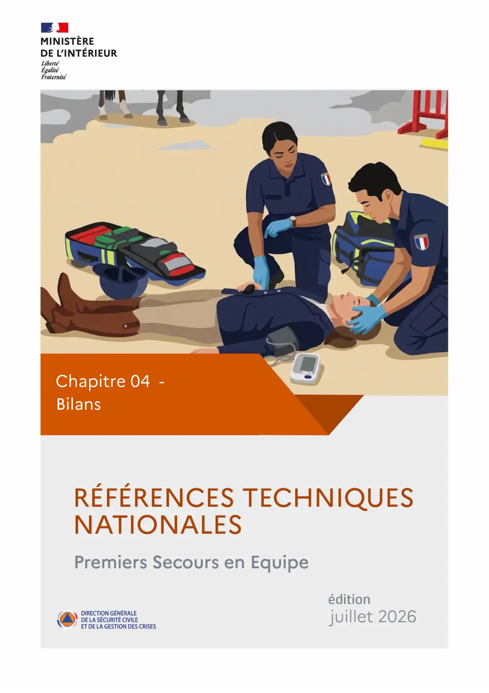
-
Bilans
64
[04AC01 / 12-2023] PSE①
Généralités sur les bilans
La chronologie et les principes associés qui sont ici proposés se basent sur des pratiques de terrain et déterminent un langage commun, adaptable quelle que soit la méthodologie ou la procédure employée par une entité.
Chaque autorité d’emploi est donc libre d’associer un nom à chaque regard ou de rédiger une procédure respectant cette chronologie et ces principes, l’essentiel étant le respect de ce code commun nécessaire à une compréhension mutuelle.
Le bilan est la phase de recueil d’informations permettant d’évaluer une situation et l’état d’une victime tout au long de sa prise en charge.
Sa réalisation, de manière structurée et rigoureuse, assure :
la mise en sécurité des intervenants, de la ou des victimes, des témoins et des lieux ;
la recherche de détresses vitales et la mise en œuvre rapide d’une conduite à tenir appropriée ;
une évaluation globale de l’état physique et psychique de la victime permettant la mise en œuvre de gestes de premiers secours complémentaires ;
la transmission au médecin régulateur de tous les éléments lui permettant d’établir un diagnostic le plus précis possible pour proposer une suite à donner à l’intervention ;
le suivi de l’évolution de l’état de la victime.
L’attitude et le comportement des secouristes ont un impact direct sur la qualité des informations recueillies auprès de la victime et de sa prise en charge.
Le bilan respecte les 3 principes suivants :
Commencer par une évaluation globale pour aller ensuite dans le détail.
Rechercher et traiter en priorité « ce qui tue en premier » ;
Fonctionner en cercles de contrôle continu, de l’abord de la victime, jusqu’à la fin de l’intervention : évaluer (apprécier et mesurer les fonctions vitales de manière hiérarchisée), agir, contrôler l’action et réévaluer.
L’approche chronologique du bilan distingue 4 regards successifs :
Le premier regard apprécie la situation dans sa globalité pour déceler d’éventuels dangers pour l’équipe, la victime et son environnement ;
Le deuxième regard progresse vers la victime et a pour objectif d’identifier une menace vitale ainsi que la plainte principale ;
Le troisième regard repose sur une évaluation hiérarchisée et structurée des fonctions vitales, l’une après l’autre pour rechercher une détresse vitale moins évidente ;
Le quatrième regard permet de compléter l’évaluation en approfondissant l’interrogatoire, en examinant la victime et en poursuivant la mesure des paramètres vitaux.
Dès le 2ème regard, une logique de surveillance de la victime débute et se poursuit jusqu’à la fin de l’intervention.
La synthèse des informations et des actions entreprises durant toute l’intervention doit être consignée et transmise à l’équipe qui prend le relai.
65
[04PR01 / 12-2022] PSE①
Premier regard
Après avoir signalé son arrivée sur les lieux ou son engagement, l’équipe d’intervention réalise une vision globale de la situation appelée 1er regard.
Les objectifs, la réalisation et les actions à mener lors du premier regard sont détaillés dans le tableau 1.
Tableau 2: le premier regard
OBJECTIFS
(QUESTIONNEMENT)
COMMENT FAIRE?
ACTIONS A MENER
Déterminer la nature de l’intervention et les circonstances de survenue.
« Que s’est-il passé ? »
Observer la scène et les lieux de l’intervention
Questionner les tiers et/ou la victime sur ce qu’il s’est passé
Transmettre la nature de l’intervention (accident, maladie, intoxication, situation de violence, accouchement, etc.) et les circonstances de survenue.
Compléter et corriger, si besoin, les informations de départ.
« Les informations initiales sont-elles correctes ? »
S’assurer de la justesse des informations transmises à l’équipe pour assurer l’intervention (ordre de mission).
Transmettre tout élément complémentaire ou à corriger
Identifier la présence de dangers, d’évaluer leurs risques.
Assurer la sécurité des intervenants et de la victime.
« Existe-t-il un danger immédiat à venir ? »
Rechercher :
- Les dangers évidents (véhicules accidentés, structure instable, situation violente)
- Les dangers moins évidents (risque : électrique, toxique, d’impact psychologique, etc.)
- Les personnes exposées (intervenants, victimes, tiers)
Assurer la protection et la sécurité.
Appliquer les précautions standards ou particulières en cas de risque infectieux (fiches « risques infectieux »).
Indiquer les mesures de sécurité prises.
Déterminer le nombre de victimes « Combien y a-t-il de victimes ? »
Faire une reconnaissance des lieux et ses alentours si nécessaire pour définir le nombre et la localisation des victimes (victime éjectée, plusieurs victimes dans des lieux différents, etc.).
Appliquer si nécessaire les principes de prise en charge de nombreuses
victimes :
- Repérage de nombreuses victimes.
- Transmettre sans délai la situation de nombreuses victimes, le nombre approximatif de victimes (et leur état de gravité apparent)
Demander, si besoin, des moyens complémentaires
« Les moyens sont-ils suffisants pour le moment ? »
Identifier les moyens sur places et les moyens complémentaires nécessaires.
Demander les moyens nécessaires le plus rapidement possible.
66
[04PR02 / 07-2026] PSE①
Deuxième regard
Avancer vers la victime, la visualiser et apprécier :
La victime dans sa globalité, ce qui permet de préciser son genre, son âge (personne âgée, adulte, enfant, nourrisson), sa position (allongée, assise, debout, recroquevillée sur elle-même, etc.).
La conscience de la victime en lui demandant comment elle va, d’ouvrir les yeux ou de serrer les mains.
La présence de menaces vitales nécessitant une réaction immédiate en respectant le principe de « traiter en priorité ce qui tue en premier » (tableau 2).
Tableau 3: Les menaces vitales et les actions à entreprendre
MENACE(S)VITALE(S)A RECHERCHER1
ACTION(S)A ENTREPRENDRE
Hémorragie externe grave
Arrêter l’hémorragie
Obstruction des voies aériennes
ou
Liberté des voies aériennes menacée
Assurer la liberté des voies aériennes pour permettre le passage de l’air.
En présence d’un casque de protection, le retirer.
Installer une victime qui a perdu connaissance sur le dos avant de rechercher sa ventilation
Absence de réaction
sans respiration
ou respiration anormale
Débuter une réanimation cardiopulmonaire
En parallèle des actions entreprises, toute détresse vitale constatée doit faire l’objet d’un avis médical ou d’une demande de renfort.
La plainte principale si la victime l’exprime spontanément ou par le biais de son observation qui peut mettre en évidence une attitude douloureuse, un essoufflement, une vigilance altérée ou des lésions traumatiques évidentes ou suspectées (traumatisme du rachis).
Il convient alors d’installer la victime dans une position adaptée à son état, en la retournant si nécessaire, et d’assurer une stabilisation du rachis cervical à titre conservatoire devant une lésion traumatique évidente ou suspectée du rachis.
1Confère la section « Rechercher » dans les fiches « évaluation des fonctions vitales ».
67
[04PR03 / 12-2023] PSE①
Troisième regard
Le secouriste, au contact de la victime, se focalise ensuite sur l’évaluation des 3 fonctions vitales.
Il les évalue successivement et selon le principe de « traiter en priorité ce qui tue en premier ».
Cette évaluation se fait en appréciant1 la fonction concernée grâce aux dires de la victime et aux constatations du secouriste.
Dès qu’une détresse est identifiée, les gestes de premiers secours appropriés doivent être réalisés immédiatement (même si l’examen de la fonction n’est pas terminé) et un avis médical demandé.
Cette appréciation doit ensuite être complétée par la mesure de l’ensemble des paramètres physiologiques vitaux s’ils ne ralentissent pas la progression.
La stabilisation du rachis cervical à titre conservatoire si le contexte est traumatique sera maintenue tant qu’une décision d’immobilisation du rachis cervical par un autre moyen n’est pas confirmée.
Tout au long de cette étape, le secouriste sera à l’écoute des informations ou de l’aide proposée par l’entourage ou les témoins afin de gagner du temps dans la compréhension de la situation.
1Confère la section « Apprécier » dans les fiches « évaluation des fonctions vitales ».
68
[04PR04 / 12-2023] PSE①
Quatrième regard
Ce regard vient préciser les plaintes de la victime et compléter son examen.
Le 4ème regard porte ainsi sur :
L’interrogatoire de la victime ou de son entourage :
Il débute par la recherche du mécanisme de l’accident, de l’évènement ou de l’histoire de la maladie. Cette recherche est essentielle.
Dans un contexte de traumatisme, la recherche du mécanisme de l’accident permet de préciser :
sa nature (chute, faux mouvement, accident de la voie publique, victime heurtée par un objet) ;
son intensité (hauteur de la chute, niveau de décélération, etc.) ;
des éléments particuliers (position dans le véhicule, port d’un casque, état du casque de protection, port de la ceinture de sécurité, etc.).
Lors d’une atteinte circonstancielle, il faut rechercher :
l’évènement déclencheur (noyade, pendaison, accident de plongée, intoxication, exposition à la chaleur ou au froid, etc.)
ses particularités (durée d’immersion, durée d’exposition au froid ou à la chaleur, nature du produit toxique et voie d’administration, etc.).
L’histoire de la maladie permet chez une victime qui présente un malaise ou une affection spécifique d’indiquer s’il s’agit de symptômes d’apparition récente ou de l’aggravation d’une maladie connue et de son évolution ;
Dans des circonstances particulières (suspicion de violence, tentative de suicide), il est important de formuler clairement la problématique repérée lorsqu’elle n’est pas spontanément exprimée.
Les plaintes (douleur, angoisse, fatigue, troubles digestifs, paralysie, trouble de la parole ou de la vue, vertiges, etc.) sont analysées en fonction du contexte :
Le facteur déclencheur ou améliorant (Provoqué par) ;
La Qualité (comment la douleur ou la gêne est décrite par la victime) ;
La localisation s’il y a lieu (dans quelle Région du corps ?) ;
La Sévérité (comment la douleur ou la gêne est ressentie par la victime) ;
La Temporalité (Depuis combien de temps ? À quel moment de la journée ? Est-ce la première fois ?)
La recherche des antécédents termine cet interrogatoire. Elle a pour but de connaître l’état de santé préalable de la victime. Elle porte sur :
les antécédents Médicaux (maladies chroniques : asthme, diabète, épilepsie, arthrose, insuffisance respiratoire chronique, hypertension artérielle, hypercholestérolémie, etc.) et chirurgicaux,
les Hospitalisations,
les Traitements en cours et ses modifications récentes,
les Allergies,
l’existence de Facteurs de risques (tabagisme, sédentarité, stress, le surpoids, etc.).
69
L’examen :
Le secouriste approfondit l’examen de la victime à la recherche de lésions de la peau (plaies, brûlures, contusion) ou d’autres atteintes (tâches, rougeurs), mais aussi des hématomes, des gonflements, des écoulements ou des déformations.
La mesure1 des paramètres physiologiques :
Les paramètres suivants seront systématiquement réalisés :
La fréquence respiratoire (FR) ;
La saturation pulsée (SpO2) ;
La fréquence cardiaque (FC) ;
La pression artérielle (PA) ;
D’autres paramètres peuvent être mesurés en fonction du contexte, de la plainte et de l’examen. Tel est le cas de la mesure de la glycémie capillaire, de la mesure de la température corporelle ou la réalisation et télétransmission d’un électrocardiogramme pour les secouristes habilités2 .
Compte tenu de la fiabilité des appareils, la prise en compte des signes cliniques prime sur les mesures des paramètres vitaux.
Des scores ou échelles peuvent compléter le bilan en fonction du contexte :
mesure de la douleur ;
mesure du niveau de conscience d’une victime (EVDA/AVPU ou score de Glasgow) ;
mesure de la superficie d’une surface corporelle brûlée (score de Wallace ou tables de Lund et Browder) ;
réalisation d’un score de reconnaissance des AVC ;
Etc.
À plusieurs secouristes, la réalisation de la mesure des paramètres physiologiques ou des scores, peut-être réalisée pendant qu’un autre secouriste s’occupe de l’interrogatoire et de l’examen de la victime.
À l’issue du 4ème regard, l’ensemble des éléments recueillis doit être transmis au médecin régulateur sans les interpréter.
1Confère la section « Mesurer » dans les fiches « évaluation des fonctions vitales ».
2 Décret n° 2022-621 du 22 avril 2022 relatif aux actes de soins d'urgence relevant de la compétence des sapeurs-pompiers
70
[04PR05 / 07-2026] PSE①
Surveillance de la victime
La surveillance permet de suivre l’évolution de l’état de la victime, prendre en compte et surveiller la sensation de froid ou de chaud et l’efficacité des gestes de secours effectués.
Elle débute dès le 2ème regard, est constante, et se termine lors de la transmission de la victime à l’équipe chargée d’assurer la continuité des soins.
La mesure des paramètres physiologiques est renouvelée toutes les 5 minutes en cas de détresse vitale, sinon toutes les 10 à 15 minutes.
Cette surveillance régulière peut être optimisée par l’utilisation d’appareil « multiparamétriques » (FC, PA, SpO2, température)
Devant tout changement d’état de la victime, les gestes de secours sont adaptés immédiatement.
Ces éléments sont transmis :
Au médecin régulateur ;
À l’équipe de renfort éventuelle ;
À l’équipe chargée d’assurer la continuité des soins.
71
[04PR06 / 12-2022] PSE①
Transmission du bilan
La transmission du bilan est un compte-rendu de l’intervention, de l’état de la victime et des actions menées. Il est adressé directement ou indirectement à une autorité médicale ou paramédicale.
Après l’examen de la situation et de la ou des victimes, l’équipe secouriste doit transmettre un bilan pour :
demander un avis médical ;
demander du renfort ;
définir l’orientation de la victime ;
réaliser un relai.
La transmission du bilan s’effectue à l’aide des moyens et selon les procédures en vigueur entre l’autorité employant les intervenants et l’autorité médicale à laquelle le bilan est transmis.
Cette transmission doit être concise, complète, structurée, logique et présentée de façon chronologique.
La situation nécessite immédiatement des moyens en renfort
Transmettre tout ou partie du bilan. Cette transmission précise la nature de l’intervention. Elle doit être particulièrement descriptive de la situation lorsque des moyens de secours particuliers sont demandés.
Indiquer les moyens déjà présents sur place.
Demander les moyens supplémentaires nécessaires.
Corriger éventuellement les informations de départ erronées.
La victime présente une détresse vitale
transmettre sans délai une demande de moyen médical en renfort, motivée par la constatation d’une ou plusieurs détresses vitales.
En particulier, préciser :
la nature de l’intervention ;
le motif de la demande du renfort médical ;
le sexe et l’âge de la victime.
Ultérieurement, dans les meilleurs délais, compléter par la transmission d’un bilan complet.
La victime ne présente pas de détresse vitale
Après avoir terminé l’interrogatoire, l’examen de la victime et la mesure des paramètres physiologiques, transmettre la totalité du bilan de façon concise et ordonnée1. Pour cela, il convient d’indiquer :
le motif réel de l’intervention ;
le sexe et l’âge de la victime ;
la plainte principale ;
le résultat du bilan et les gestes de secours entrepris.
1 En fonction des organismes autorisés et des lésions que présente la victime, une procédure de transmission simplifiée du bilan peut
être utilisée.
72
[04FT01 / 12-2023] PSE①
Retournement à deux secouristes
Indication
Cette technique est indiquée après avoir trouvé une victime sur le ventre. Elle doit être réalisée systématiquement lorsque l’on est en équipe et que la victime est suspecte d’un traumatisme du rachis.
Justification
Le retournement d’une victime et sa mise en position allongée, le dos sur le sol, est nécessaire pour :
libérer les voies aériennes et rechercher les signes de respiration ;
réaliser les gestes d’urgence comme la ventilation artificielle et les compressions thoraciques ;
examiner une victime en vue d’une éventuelle immobilisation.
Matériel
Aucun matériel.
Réalisation
Le retournement s’effectue du côté opposé au visage de la victime.
Le secouriste 1 doit :
se placer dans le prolongement de la tête de la victime, un genou à terre l’autre en l’air du côté du retournement ;
saisir la tête de la victime avec deux mains (prise occipito-frontale ou latéro-latérale si la victime porte un casque) sans bouger la tête.
Le secouriste 2 doit :
allonger le membre supérieur de la victime, le long du corps, du côté du retournement ;
glisser sa main sous sa cuisse ;
se placer dans une position stable (à genoux ou en trépied) du côté du retournement à une distance suffisante pour ne pas gêner le retournement de la victime ;
saisir la victime par l’épaule et par la hanche du côté opposé au retournement.
Secouriste 1 : « Êtes-vous prêt ? »
Secouriste 2 : « Prêt ! »
Secouriste 1 : « Attention pour tourner… Tournez ! »
Le secouriste 2 doit
faire rouler doucement et d’un seul bloc la victime au sol pour l’emmener sur le côté ;
Le secouriste 1 doit
accompagner le mouvement de la tête qui effectue une rotation moindre que le corps pour la ramener dans l’axe.
Lorsque la victime se trouve sur le côté :
Secouriste 1 : « Halte ! - Repositionnez-vous ! »
Le secouriste 2 doit :
73
repositionner ses mains ;
s’écarter de la victime afin de pouvoir l’allonger sur le dos sans encombre.
Secouriste 1 : « Attention pour tourner… Tournez ! »
Le secouriste 2 doit
terminer le retournement pour amener la victime sur le dos ;
Le secouriste 1 doit
accompagner le mouvement en maintenant la tête dans l’axe.
Une fois la victime sur le dos, les signes de respiration peuvent être recherchés et les manœuvres de réanimation débutées, au besoin.
En présence de trois secouristes, le troisième se place au niveau des membres inférieurs et les maintient tout en accompagnant le mouvement.
Risques & Contraintes
Afin de limiter tout risque d’aggravation d’un traumatisme de la colonne cervicale, il est préférable que le retournement soit réalisé à deux sauveteurs, au moins.
À l’issue de la manœuvre, le maintien de la tête doit être conservé, éventuellement après s’être replacé afin d’adopter une position efficace.
Évaluation
L’axe tête-cou-tronc de la victime doit être maintenu le plus rectiligne possible tout au long du retournement.
74
[04FT02 / 12-2023] PSE①
Retournement à un secouriste
Indication
Cette technique est indiquée après avoir trouvé une victime sur le ventre sans suspicion de traumatisme ou lorsque le secouriste est isolé.
Justification
Le retournement d’une victime et sa mise en position allongée, le dos sur le sol, est nécessaire pour :
libérer les voies aériennes et rechercher les signes de respiration ;
réaliser les gestes d’urgence comme la ventilation artificielle et les compressions thoraciques ;
examiner une victime.
Matériel
Aucun matériel.
Réalisation
Le retournement s’effectue du côté opposé au visage de la victime :
placer le bras de la victime du côté du retournement au- dessus de sa tête1;
se placer dans une position stable (à genoux ou en trépied) du côté du retournement, à une distance suffisante pour ne pas gêner le retournement complet de la victime ;
saisir la victime par l’épaule et par la hanche du côté opposé au retournement ;
faire rouler doucement et d’un seul bloc la victime au sol jusqu’à ce qu’elle se retrouve sur le côté ;
glisser la main qui était à l’épaule au niveau de la nuque de la victime, pour la maintenir ; l’avant-bras reposant contre le dos de la victime ;
tirer sur la hanche de la victime afin de terminer le retournement.
La main qui maintient la nuque accompagne le mouvement. Elle est ensuite retirée avec précaution.
Une fois la victime sur le dos, les signes de respiration peuvent être recherchés et les manœuvres de réanimation débutées, au besoin.
Risques & Contraintes
Afin de limiter tout risque d’aggravation d’un traumatisme de la colonne cervicale, il est préférable que le retournement soit réalisé à deux sauveteurs, au moins.
Évaluation
L’axe tête-cou-tronc de la victime doit être maintenu le plus rectiligne possible tout au long du retournement.
1 Le fait de placer le bras de la victime au-dessus de sa tête permet de faciliter le retournement et de maintenir la tête dans l’axe lors du retournement
75
[04FT03 / 09-2019] PSE①
Retrait d’un casque de protection
Indication
Le retrait du casque de protection d’une victime est indiqué :
• dans tous les cas, si au moins deux intervenants sont présents ;
• si la victime a perdu connaissance, lorsqu’un seul intervenant est présent.
La réalisation du retrait du casque de protection doit alors permettre de rechercher les signes de respiration, après avoir libéré les voies aériennes.
Justification
La présence d’un casque de protection chez la victime peut occasionner une gêne dans la réalisation de l’examen et des gestes de secours.
Matériel
Aucun matériel.
Réalisation
Le retrait du casque de protection se fait sur une victime allongée sur le dos.
À deux secouristes
Le secouriste 1, chargé du retrait du casque, doit :
se placer à genoux dans l’axe de la tête de la victime ;
Il doit être suffisamment éloigné pour pouvoir retirer le casque sans avoir à se reculer.
maintenir le casque en plaquant ses mains de chaque côté, la tête en position neutre et dans l’alignement de l’axe du tronc.
Le secouriste 2 doit :
s’installer, à côté de la tête, en trépied genou relevé du côté des pieds de la victime ;
détacher ou couper la sangle de la mentonnière (casque avec jugulaire) ou déverrouiller le dispositif de fixation du casque au niveau du menton de la victime ;
relever la visière du casque et retirer les lunettes de la victime, si nécessaire ;
glisser la main du côté de la tête de la victime sous la nuque, avant-bras en appui sur sa cuisse ;
placer les doigts de l’autre main en crochet sous le menton, coude appuyé sur le genou relevé et maintenir ainsi fermement la tête et le cou dans l’axe du corps.
Le secouriste 1 doit :
saisir le casque par les parties latérales du bord inférieur ;
• tirer doucement le casque vers lui dans l’axe en le faisant glisser sur le sol ;
Il est parfois nécessaire de basculer légèrement le casque d’arrière en avant sans le décoller du sol, en limitant les mouvements de la tête, pour ne pas accrocher le nez ;
arrêter la manœuvre lorsque le bord inférieur du casque se trouve au-dessus de la racine du nez de la
76
victime.
Le maintien de la tête n’est jamais relâché durant ce retrait.
Le secouriste 2, dès l’arrêt du retrait, doit :
repositionner ses prises, en glissant la main qui maintient la nuque vers le bas du crâne.
Ce repositionnement a pour objet d’éviter une chute brutale de la tête de la victime lors du retrait complet du casque.
Le secouriste 1 doit :
retirer complètement le casque ;
maintenir la tête en position neutre (prise latéro-latérale) ;
accompagner délicatement la tête de la victime jusqu’au sol.
En secouriste isolé
Le retrait du casque à un secouriste est un geste extrêmement délicat :
relever la visière du casque ;
retirer les lunettes de la victime, éventuellement ;
maintenir le casque de la victime d’une main ;
détacher ou couper la sangle de la mentonnière (casque avec jugulaire), ou déverrouiller le dispositif de fixation du casque au niveau du menton de la victime, avec l’autre main ;
se placer dans l’axe de la tête de la victime ;
Il convient d’être suffisamment éloigné de la victime pour pouvoir retirer le casque sans avoir à se reculer.
saisir le casque par les parties latérales du bord inférieur ;
tirer doucement le casque, dans l’axe, en le faisant glisser sur le sol jusqu'à ce que le bord inférieur de la mentonnière soit à la racine du nez ;
déplacer une main pour saisir le bord inférieur de la partie supérieure du casque ;
glisser doucement l’autre main sous la base du crâne de la victime pour la maintenir ;
tirer doucement le casque en arrière en le faisant basculer légèrement pour ne pas accrocher le nez de la victime et simultanément déposer délicatement la tête sur le sol en la gardant le plus possible dans l’axe.
Risques & Contraintes
Une mobilisation du rachis cervical ou de la tête de la victime au cours de la manœuvre de retrait du casque peut entraîner une aggravation de son état et des séquelles graves.
Le retrait du casque de protection par un seul secouriste doit rester un geste exceptionnel, qui doit être réalisé seulement s’il ne peut pas obtenir un renfort immédiat.
Évaluation
La nuque et la tête de la victime doivent rester immobiles durant toute la manœuvre.
77
[04FT04 / 12-2023] PSE①
Libération des voies aériennes chez une victime non traumatisée
Indication
La libération des voies aériennes (LVA) par bascule prudente de la tête en arrière et élévation du menton est réalisée chez toute victime ayant perdu connaissance, non suspecte d’un traumatisme du rachis, avant d’apprécier sa respiration.
Justification
La perte de connaissance provoque une forte diminution du tonus musculaire qui entraîne, si la victime reste allongée sur le dos, une obstruction des voies aériennes par chute de la langue et de l'épiglotte en arrière.
La LVA par bascule prudente de la tête en arrière et élévation du menton permet de dégager la langue de la paroi postérieure du pharynx et la libre circulation de l’air :
pour apprécier la ventilation d’une victime qui a perdu connaissance lors du 2ème regard ;
pour faciliter la ventilation d’une victime qui a perdu connaissance et qui ventile ;
pour réaliser une ventilation artificielle.
Chez le nouveau-né et le nourrisson, du fait de leur anatomie, ce mouvement doit se limiter à ramener la tête en position neutre afin de ne pas entraîner une obstruction des voies aériennes.
Matériel
Aucun matériel.
Réalisation
desserrer ou dégrafer rapidement tout ce qui peut gêner la respiration ;
placer la paume d’une main sur le front de la victime ;
placer 2 ou 3 doigts de l’autre main, juste sous la pointe du menton en prenant appui sur l’os. Éventuellement s’aider du pouce pour saisir le menton ;
Chez l’adulte ou l’enfant
basculer doucement la tête de la victime en arrière en appuyant sur le front tout en élevant le menton pour libérer les voies aériennes.
Chez le nouveau-né ou le nourrisson
amener doucement la tête du nourrisson en position neutre dans l'alignement du torse ;
élever le menton tout en évitant une bascule excessive susceptible de provoquer une extension du rachis cervical et une gêne de la ventilation.
78
Dans tous les cas
retirer les éventuels corps étrangers visibles à l’intérieur de la bouche de la victime avec la main qui était sur le front, y compris les prothèses dentaires décrochées, sans toucher à celles qui sont restées en place.
Risques & Contraintes
La LVA chez toute victime ayant perdu connaissance, non suspecte d’un traumatisme, est un geste salvateur qui nécessite cependant une réalisation avec précaution, afin d’éviter toute aggravation d’un traumatisme cervical méconnu.
Évaluation
La libération des voies aériennes est efficace si :
la respiration de la victime peut s’effectuer normalement ;
la ventilation artificielle permet un soulèvement de la poitrine, en présence d’une victime qui ne respire pas.
79
[04FT05 / 12-2023] PSE①
Libération des voies aériennes chez une victime traumatisée
Indication
La libération des voies aériennes (LVA) par simple élévation du menton est réalisée chez toute victime ayant perdu connaissance, suspecte d’un traumatisme du rachis.
Justification
La perte de connaissance provoque une forte diminution du tonus musculaire qui entraîne, si la victime reste allongée sur le dos, une obstruction des voies aériennes par chute de la langue en arrière.
La LVA par élévation du menton seul peut être suffisante pour dégager la langue de la paroi postérieure du pharynx sans mobiliser le rachis cervical et permettre la libre circulation de l’air :
pour apprécier sa ventilation lors du 2ème regard ;
pour faciliter sa ventilation ;
pour réaliser une ventilation artificielle.
Chez le nourrisson, du fait de son anatomie, le mouvement doit se limiter à ramener la tête en position neutre afin de ne pas entraîner une obstruction des voies aériennes.
Matériel
Aucun matériel.
Réalisation
En même temps que l’on maintient la tête à deux mains :
placer l’index ou le majeur de chaque main derrière l’angle de la mâchoire et sous les oreilles de la victime ;
ouvrir la bouche avec les pouces placés sur le menton ;
pousser vers l’avant la mâchoire inférieure ;
maintenir cette position.
Risques & Contraintes
La LVA doit être réalisée avec précaution pour éviter toute aggravation d’un traumatisme du rachis cervical.
Évaluation
La libération des voies aériennes est efficace si la respiration de la victime peut s’effectuer normalement.
80
[04FT06 / 09-2019] PSE①
Libération des voies aériennes chez une victime assise
Indication
Victime qui a perdu connaissance, en position assise, tête penchée en avant.
Justification
Une victime ayant perdu connaissance en position assise (en particulier dans un véhicule) peut présenter des signes d’obstruction des voies aériennes. Si la tête est penchée en avant, la paroi postérieure du pharynx vient s’appliquer contre la base de la langue et empêche le libre passage de l’air.
Cette technique est souvent suffisante pour rétablir la liberté des voies aériennes et contrôler sa respiration.
Matériel
Aucun matériel.
Réalisation
se placer à côté de la tête de la victime en restant à l’extérieur du véhicule pour des raisons de sécurité (airbag ou autre) ;
ouvrir la porte du véhicule ou passer les avant-bras par la fenêtre du véhicule ;
• saisir la tête de la victime à deux mains :
placer une main en arrière de la tête, juste au-dessus de la nuque,
glisser l’autre main sous le menton de la victime.
ramener la tête en position neutre, dans l’axe du tronc, en exerçant une légère traction vers le haut ; Cette traction douce permet de délester le rachis cervical du poids de la tête de la victime.
apprécier la respiration de la victime ;
maintenir cette position jusqu’à la réalisation d’une stabilisation de la tête, si la victime respire.
Risques & Contraintes
La LVA doit être réalisée avec précaution pour éviter toute aggravation d’un traumatisme du rachis cervical.
Évaluation
La libération des voies aériennes est efficace si la respiration de la victime peut s’effectuer normalement
81
[04FT07 / 12-2022] PSE①
Évaluation de la fonction respiratoire
Indication
L’évaluation de la fonction respiratoire est réalisée lors du bilan et de la surveillance de la victime.
Justification
La fonction respiratoire est une fonction vitale. Toute altération de la fonction respiratoire peut entraîner à plus ou moins brève échéance le décès de la victime.
Son évaluation permet :
de rechercher la présence ou l’absence de respiration (2ème regard) ;
d’identifier la présence d’une détresse respiratoire (3èmeregard) ;
d’identifier la présence de signes pouvant faire craindre l’évolution vers une détresse respiratoire (4ème regard ) ;
d’évaluer l’évolution de l’état de la victime et l’efficacité de gestes de secours entrepris (surveillance de la victime).
Matériel
un chronomètre ou équivalent
un oxymètre de pouls
Réalisation
L’évaluation de fonction respiratoire se fait en trois temps :
Rechercher la présence de la respiration (2ème regard)
Apprécier la fonction respiratoire. Cette appréciation se fait à partir (3ème regard et surveillance) :
des plaintes exprimées par la victime
des constatations visuelles, auditives ou tactiles du secouriste.
Mesurer la fonction respiratoire, et notamment (4ème regard et surveillance) :
la fréquence ventilatoire
la saturation pulsée en oxygène (SpO2)
Rechercher la respiration
Pour évaluer la présence de la respiration chez une victime qui a perdu connaissance, il convient de :
assurer la liberté des voies aériennes ;
se pencher sur la victime, l’oreille et la joue du secouriste au-dessus de sa bouche et de son nez ;
rechercher, durant dix secondes au plus :
avec la joue : le flux d’air expiré par le nez et la bouche,
avec l’oreille : les bruits normaux (souffle) ou anormaux de la respiration (sifflement, ronflement, gargouillement),
avec les yeux : le soulèvement du ventre ou de la poitrine.
82
Apprécier la respiration
Pour apprécier la respiration d’une victime, il convient de :
écouter les dires de la victime si elle peut s’exprimer.
écouter la facilité avec laquelle la victime parle ou respire.
observer la respiration pendant 15 secondes environ : sa rapidité, son amplitude, sa régularité :
en regardant la partie supérieure de l’abdomen et du thorax,
en plaçant une main à cheval sur la partie inférieure de son sternum et le haut de l’abdomen,
apprécier la coloration :
de la peau au niveau de la face et des extrémités,
des muqueuses au niveau des lèvres
En conditions normales :
la victime ventile sans s’en apercevoir et ne s’en plaint pas,
la victime parle facilement et sans essoufflement,
la respiration est silencieuse et se fait sans bruit surajouté, sans difficulté ;
les mouvements ventilatoires sont :
identifiables environ toutes les 5 secondes chez l’adulte (3 à 4 secondes chez l’enfant) ;
visibles, se font sans effort particulier et sont symétriques ;
réguliers, sans pause de plus de six secondes.
la peau est colorée et sèche,
les muqueuses sont rosées.
Mesurer la respiration
Mesurer la fréquence ventilatoire en comptant le nombre de mouvements sur une minute à l’aide d’un chronomètre ou équivalent (un mouvement équivaut à un soulèvement et un abaissement de la poitrine). La fréquence ventilatoire varie en fonction de l’âge (tableau 3).
Tableau 4: Fréquence ventilatoire en fonction de l’âge (en mouvements par minute)
ADULTE
ENFANT
NOURRISSON
NOUVEAU-NE
12 à 20
20 à 30
30 à 40
40 à 60
Mesurer la saturation pulsée en oxygène (SpO2) à l’aide d’un oxymètre de pouls.
Risques & Contraintes
La mesure de la fonction respiratoire en utilisant un appareil ne doit pas retarder la réalisation des gestes de secours en présence d’une détresse.
Évaluation
L’évaluation de la fonction respiratoire chez une victime doit permettre d’identifier une atteinte de la fonction respiratoire, comme :
la présence d’une détresse respiratoire,
la présence de signes qui peut traduire une détresse respiratoire en voie de constitution.
83
[04FT08 / 07-2026] PSE①
Mesure de la saturation pulsée en oxygène
Indication
L’oxymètre de pouls est un appareil électronique qui mesure la saturation d'oxygène (O2) des globules rouges au niveau de la circulation capillaire.
L’oxymètre de pouls permet de détecter très rapidement un manque d'oxygène dans l'organisme. Il vient compléter la réalisation du bilan de la fonction respiratoire de la victime et aide à sa surveillance. La mesure de la saturation pulsée en oxygène (SpO2) ne doit, en aucun cas, retarder la mise en œuvre de gestes de secours d'urgence évidents. Elle est utile en particulier en cas de :
détresse vitale (sauf arrêt cardiorespiratoire) ;
gêne respiratoire ou de plainte respiratoire ;
malaise ou aggravation d'une maladie ;
traumatisme grave ou violent, ou en cas de traumatisme thoracique.
Le résultat de la mesure de la SpO2 reflète l'efficacité du transport de l'oxygène de l’air respiré jusqu’aux capillaires, lieu d’échange avec les cellules.
Justification
La SpO2 permet de décider et de guider l’administration d’oxygène en fonction des valeurs indiquées.
Matériel
L’oxymètre de pouls comprend :
une unité de mesure dotée, en règle générale, d’un écran de lecture et alimentée par des batteries ;
un capteur que l’on pose sur une partie du corps (doigt, lobe de l'oreille, front ou nez).
Il existe des capteurs adaptés en fonction de l’âge de la victime (adulte, enfant, nourrisson, nouveau-né).
Réalisation
L’oxymètre de pouls peut être intégré dans des dispositifs médicaux multiparamétriques :
placer le capteur sur une peau ou un ongle non verni, propre ;
mettre l'appareil en marche et respecter les indications du fabricant ;
relever le résultat sur l’écran de l’appareil.
En règle générale, deux valeurs s’affichent :
la saturation pulsée en oxygène,
la fréquence du pouls.
La SpO2 se situe normalement entre 94 et 100 %.
84
Risques & Contraintes
Dans plusieurs situations, le signal peut ne pas être détecté par le capteur (victime agitée, tremblements, refroidissement des extrémités, détresse circulatoire, maladies vasculaires, pigmentation de la peau, etc.) et ne donnera pas de résultat fiable.
Les intoxications aux fumées et les intoxications au monoxyde de carbone (CO) faussent la mesure et donnent à tort des valeurs rassurantes.
La présence de vernis à ongles ou un doigt sale ne permettent pas une bonne mesure au niveau de l’extrémité du doigt.
L’indication de la fréquence du pouls sur l’appareil peut donner une tendance, toutefois dans certaines situations, cette dernière peut être faussée. Il convient donc de ne pas négliger la mesure manuelle de la fréquence.
Évaluation
À la fin de la mesure, la SpO2 s’affiche correctement, sans message d’erreur et le résultat est cohérent avec l’état de la victime.
85
[04FT09 / 12-2022] PSE①
Évaluation de la fonction circulatoire
Indication
L’évaluation de la fonction circulatoire est réalisée lors du bilan et de la surveillance de la victime
Justification
La fonction circulatoire est une fonction vitale. Toute altération de la fonction circulatoire peut entraîner à plus ou moins brève échéance un arrêt cardiaque et le décès de la victime.
Son évaluation permet :
d’identifier la présence d’un arrêt cardiaque (2ème regard) ;
d’identifier la présence d’une détresse circulatoire (3ème regard) ;
de rechercher la présence d’une altération de la circulation pouvant évoluer vers une détresse circulatoire. (4ème regard) ;
d’évaluer l’évolution de l’état de la victime et l’efficacité de gestes de secours entrepris (surveillance).
Matériel
un chronomètre ou un équivalent
un tensiomètre manuel ou automatique
un appareil de surveillance (oxymètre de pouls ou appareil de surveillance cardiaque)
Réalisation
L’évaluation de fonction circulatoire se fait en trois temps :
Rechercher la présence du pouls (2ème regard)
Apprécier la fonction circulatoire. Cette appréciation se fait à partir (3ème regard et surveillance) :
des plaintes exprimées par la victime
des constatations visuelles, auditives ou tactiles du secouriste.
Mesurer la fonction circulatoire, et notamment (4ème regard et surveillance) :
La mesure de la fréquence cardiaque (FC)
La mesure du temps de recoloration cutanée (TRC)
La mesure de la pression artérielle (PA)
Rechercher la circulation
Bien que non systématique pour identifier un arrêt cardiaque, en cas de réalisation, elle ne doit pas retarder la mise en œuvre de la RCP. C’est pourquoi elle doit être effectuée en même temps que la recherche de ventilation. Il en va de même pour les contrôles lors de la réanimation cardiopulmonaire.
Recherche du pouls carotidien (chez l’adulte et l’enfant)
Se placer du côté de la carotide qui va être palpée.
Maintenir la tête de la victime avec une main sur le front.
Positionner 2 à 3 doigts de l’autre main :
les poser sur la ligne médiane du cou ;
glisser la pulpe de ces derniers sur la face latérale, vers soi ;
86
effectuer une légère pression pour percevoir les battements.
Rechercher, durant dix secondes au plus.
Recherche du pouls fémoral (chez le nourrisson)
Positionner 2 à 3 doigts :
poser la pulpe au niveau et dans l’axe du pli de l’aine, à la racine de la cuisse ;
effectuer une légère pression pour percevoir les battements.
Rechercher, durant dix secondes au plus.
Apprécier la circulation
Pour apprécier la circulation d’une victime, il convient de :
Apprécier la rapidité, l’amplitude (force) et la régularité du pouls1 pendant 15 secondes environ.
Au niveau de la face antérieure du poignet, en plaçant la pulpe de 2 à 3 doigts sur le trajet de l’artère radiale, dans le prolongement du pouce et effectuer une légère pression pour percevoir les battements.
Au niveau du cou, en palpant l’artère carotidienne (voir ci-dessus) si le pouls au niveau du poignet est imperceptible ;
Au milieu du pli de l’aine en palpant l’artère fémorale avec deux ou trois doigts si l’on ne peut pas prendre le pouls carotidien (voir ci-dessus).
Observer la coloration de peau et des muqueuses
Apprécier avec la main la température et l’humidité de la peau
En conditions normales :
Le pouls est :
perçu toutes les secondes chez l’adulte et de façon plus rapide chez l’enfant ou le nourrisson ;
facilement perceptible au niveau du poignet, du cou ou du pli de l’aine ;
régulier, symétrique et ne marque pas de pause.
La peau est chaude et sèche au toucher ;
La peau et les muqueuses sont colorées (roses).
Mesurer la circulation
Mesurer la fréquence cardiaque, en prenant un pouls et en comptant le nombre de battements (sensation de soulèvement) perçu sur une minute à l’aide d’un chronomètre ou équivalent. N. B. La mesure de la fréquence cardiaque peut être complétée par l’utilisation d’un appareil de mesure tel que l’oxymètre de pouls ou un appareil de surveillance de la fréquence cardiaque. Bien que fiables, certaines situations ne peuvent être comprises par un appareil, la mesure manuelle reste donc importante.
Mesurer le temps de recoloration cutanée (TRC).
S’assurer de l’absence de vernis empêchant l’observation du lit de l’ongle.
Comprimer fortement pendant 3 secondes, entre le pouce et l’index, l’extrémité d’un doigt, le lit de l’ongle devenu pâle.
Relâcher la pression.
Mesurer le temps (en seconde) de recoloration.
Mesurer la pression artérielle
1Le poulsest une sensation de soulèvement sous les doigts qui correspond à un battement cardiaque.
87
En conditions normales :
La fréquence cardiaque en battements par minute dépend de l’âge de la victime (tableau 4).
Tableau 5: Fréquence cardiaque en fonction de l'âge (en battements par minute)
ADULTE
ENFANT
NOURRISSON
NOUVEAU-NE
60 à 100
70 à 140
100 à 160
120 à 160
La recoloration cutanée du lit de l’ongle est inférieure à deux secondes ;
La pression artérielle chez l’adulte au repos et réveillé oscille autour de 100 mmHg de PA systolique et 80 mmHg de PA diastolique.
Risques & Contraintes
La mesure de la fonction circulatoire en utilisant un appareil ne doit pas retarder la réalisation des gestes de secours en présence d’une détresse.
Évaluation
L’évaluation de la fonction circulatoire chez une victime doit permettre d’identifier une atteinte de la fonction circulatoire, comme :
Un arrêt cardiaque,
La présence d’une détresse circulatoire,
La présence de signes qui peut traduire une détresse circulatoire en voie de constitution.
88
[04FT10 / 12-2023] PSE①
Mesure de la pression artérielle
Indication
La pression artérielle (PA) est un indicateur de la fonction circulatoire. Sa mesure est réalisée chaque fois que possible, lors du bilan et de la surveillance. La mesure de la PA ne doit en aucun cas retarder la mise en œuvre d’un geste de secours d’urgence.
Justification
La mesure de la PA apporte au secouriste et au médecin régulateur des indications supplémentaires sur l’état de la circulation de la victime.
L’élévation de la PA (hypertension artérielle) ou sa diminution (hypotension artérielle) peuvent se voir à la suite d’un traumatisme ou d’une maladie.
La mesure de la PA consiste à relever deux valeurs qui représentent, en millimètres de mercure, la pression exercée par le sang dans les artères :
la valeur la plus élevée, appelée pression systolique, mesure la force exercée par le sang sur la paroi interne des artères lors de la contraction du cœur ;
la valeur la plus basse, appelée pression diastolique, mesure la force exercée par le sang sur la paroi interne des artères lors du relâchement du cœur.
Matériel
La mesure de la pression artérielle est possible grâce à un tensiomètre qui mesure la contrepression exercée au niveau du bras par un brassard pneumatique. Il existe plusieurs types de tensiomètres utilisables pour mesurer la pression artérielle :
le tensiomètre manuel composé :
d’un manchon gonflable qui sera placé autour du bras de la victime (il existe, en fonction de la taille, des manchons adultes et enfants),
d’un tuyau relié à une poire qui permet de gonfler le manchon,
cette poire est équipée d’une valve dont l’ouverture permet au manchon de se dégonfler progressivement,
d’un manomètre qui mesure la contrepression exercée sur le bras.
le tensiomètre automatique composé :
d’une centrale, alimentée par une batterie, sur laquelle s’affichent les chiffres de la pression artérielle et de la fréquence cardiaque ;
d’un manchon gonflable qui sera placé autour du bras de la victime (identique au tensiomètre manuel) ;
d’un tuyau qui relie le manchon à la centrale.
Réalisation
La mesure de la PA se fait idéalement sur une victime immobile, en position assise, demi-assise ou allongée avec pose du brassard au niveau du bras.
89
Mesure automatique
La mesure de la PA à l’aide d’un appareil automatique est préférable pour le secouriste à la mesure de la pression artérielle avec un appareil manuel. Elle demande uniquement la mise en place du manchon à pression autour du bras, idéalement à même la peau1, en disposant le repère artériel juste au-dessus du passage de l’artère (au niveau de la face interne du bras).
La mesure se fait automatiquement. Le mode d’emploi de l’appareil doit être respecté.
La mesure de la pression artérielle s’affiche sur le cadran de même que la fréquence cardiaque.
Mesure par auscultation
Cette méthode nécessite un tensiomètre manuel et un stéthoscope :
Placer le manchon du tensiomètre autour du bras de la victime (accessible et non traumatisé) ;
Le bord inférieur du brassard doit être placé à deux centimètres au moins au-dessus du pli du coude (en face interne bras).
Si le manomètre est fixé au manchon, il doit être visible.
Placer les embouts du stéthoscope dans les oreilles en veillant à ce qu’ils pointent vers l’avant ;
Localiser le pouls de l’artère qui passe au niveau de la partie interne du pli du coude avec les doigts ;
Placer le pavillon du stéthoscope sur le trajet de l’artère, juste au-dessus du pouls. Le maintenir avec l’index et le majeur d’une main ;
Le pavillon du stéthoscope se trouve un centimètre au-dessous du bord inférieur du brassard.
Gonfler doucement le brassard en appuyant sur la poire jusqu'à ne plus entendre le bruit du pouls ;
Continuer à gonfler de 30 mmHg en plus, après disparition du bruit du pouls ;
Dégonfler doucement le brassard en appuyant (ou tournant) sur la valve de dégonflage ;
L’aiguille du manomètre doit descendre doucement sur le cadran (de 2 à 3 mmHg/s).
Noter la valeur indiquée sur le cadran dès que le bruit du pouls est à nouveau audible ; cette valeur correspond à la pression systolique ;
Continuer à dégonfler le brassard et noter à nouveau la valeur lorsque le bruit du pouls disparaît, cette valeur correspond à la pression diastolique.
Mesure par palpation
Cette méthode est à utiliser dans une ambiance bruyante. Elle ne permet de mesurer que la pression systolique :
Placer le manchon du tensiomètre autour du bras de la victime (accessible et non traumatisé) ;
Le bord inférieur du brassard doit être placé à deux centimètres au moins au-dessus du pli du coude (en face interne du bras).
Si le manomètre est fixé au manchon, il doit être visible.
Maintenir la poire de gonflage d’une main et fermer la valve ;
Localiser le pouls radial de la victime avec les doigts de l’autre main ;
Gonfler doucement le brassard en appuyant sur la poire jusqu'à ne plus percevoir le pouls radial ;
Continuer à gonfler de 30 mmHg en plus après la disparition du pouls radial ;
Dégonfler doucement le brassard en appuyant (ou tournant) sur la valve de dégonflage ;
L’aiguille du manomètre doit descendre doucement sur le cadran (2 à 3 mmHg/s).
Noter la valeur indiquée sur le cadran dès que le pouls radial est à nouveau perceptible. Cette valeur
1La peau nue est toujours préférable. Un vêtement fin peut être toléré à défaut, mais un bourrelet de tissu ou une manche épaisse
invalide la mesure.
90
correspond à la pression systolique ;
Dégonfler totalement le brassard.
Les valeurs normales de pression artérielle chez l’adulte au repos et réveillé oscillent autour de 100 mmHg de PA systolique et 80 mmHg de PA diastolique.
Contrairement à l’adulte, il ne peut y avoir de valeur de référence chez l’enfant. La pression artérielle de l’enfant varie en fonction de son sexe, de son âge, de sa taille et de son poids.
Le secouriste se limitera à transmettre les valeurs de pression artérielle mesurée pour demander un avis médical.
Risques & Contraintes
Avant de débuter la mesure, prévenir la victime que le gonflement du brassard peut entraîner une possible sensation douloureuse. Si le manchon du tensiomètre est laissé en place pour une nouvelle mesure lors de la surveillance, il convient de s’assurer que ce dernier est bien dégonflé, pas trop serré et ne gêne pas la victime.
Les dispositifs médicaux de mesure de la PA peuvent ne pas afficher de résultats si la PA est trop basse ou trop élevée.
Le brassard doit être posé sur le bras approprié dans ces situations :
contre-indication médicale ;
plainte exprimée par la victime ;
perfusion ;
lésion de membre.
Évaluation
La mise en place correcte de l’appareil garantit l’efficacité de la technique.
91
[04FT11 / 12-2022]
Réaliser un électrocardiogramme
Indication
Un électrocardiogramme (ECG) peut être réalisé par l’équipe secouriste sur prescription d’un médecin présent sur les lieux ou du médecin régulateur lors du bilan ou de la surveillance de la victime.
Seule une personne formée et habilitée peut utiliser un appareil pour enregistrer et télétransmettre un ECG1.
Justification
À chaque battement cardiaque, une impulsion électrique (ou « onde ») traverse le cœur. Cette onde électrique génère une contraction du muscle cardiaque à l’origine de la circulation du sang.
L’ECG mesure et enregistre l’activité électrique du cœur. Cet enregistrement permet au médecin de déterminer si le cœur présente un rythme normal ou irrégulier et si le muscle cardiaque est intact ou présente des lésions.
Matériel
Appareil d’enregistrement et de télétransmission de l’ECG et ses accessoires :
câbles de connexion ;
électrodes à usage unique non périmées et éventuellement ceinture d’électrodes ;
sacoche de transport et de protection ;
accessoires adaptés à l’appareil et permettant la télétransmission.
Réalisation
Compte tenu de la multiplicité des appareils permettant de réaliser des ECG, il conviendra de respecter les préconisations du fabricant quant à la mise en œuvre de l’appareil à disposition de l’équipe secouriste.
Préalable à la réalisation d’un ECG
Installer la victime confortablement de préférence sur le dos.
Écarter si possible tout appareil électronique (montre, portable, radio, etc.) ou tout objet métallique pouvant entrer en contact avec la victime.
S’assurer que les câbles de connexion entre l’appareil et les électrodes sont correctement connectés.
Demander à la victime de dénuder sa poitrine tout en respectant son intimité. Garder si possible le soutien-gorge en place.
Demander à la victime de ne pas parler, de ne pas bouger, et de respirer calmement lors de l’enregistrement.
Réaliser un ECG avec des électrodes
Raser tous les poils des zones où seront collées les électrodes si nécessaire.
Positionner les électrodes des extrémités (dérivations périphériques) puis placer les électrodes précordiales (dérivations précordiales) aux endroits indiqués (tableau 9). Si l’appareil est doté d’une ceinture d’électrode précordiale, positionner la ceinture conformément aux préconisations du fabricant
1 Décret n° 2022-621 du 22 avril 2022 relatif aux actes de soins d’urgence relevant de la compétence des sapeurs-pompiers.
92
(respecter les repères).
Brancher les câbles sur les électrodes correspondantes.
Allumer l’appareil et s’assurer d’être sur le mode ECG.
Réaliser l’enregistrement de l’ECG.
Tableau 6: positions des électrodes pour la réalisation d’un ECG à 12 dérivations
DERIVATIONS PERIPHERIQUES (FIG.1)
ROUGE
Membre supérieur droit
Face antérieure de l’articulation du poignet
NOIR
Membre inférieur droit
Face antérieure de l’articulation de la cheville
JAUNE
Membre supérieur gauche
Face antérieure de l’articulation du poignet
VERTE
Membre inférieur gauche
Face antérieure de l’articulation de la cheville
DERIVATIONS PRECORDIALES (FIG.2)
C1
ROUGE
Quatrième espace intercostal droit, au bord droit du sternum
C2
JAUNE
Quatrième espace intercostal gauche, au bord gauche du sternum
C4
BRUNE
Cinquième espace intercostal gauche sur la ligne médioclaviculaire
C3
VERTE
Milieu de la ligne entre C2 et C4
C6
VIOLETTE
Cinquième espace intercostal gauche sur la Ligne médioaxillaire (même niveau que la C4)
C5
NOIRE
Milieu de la ligne entre C6 et C4
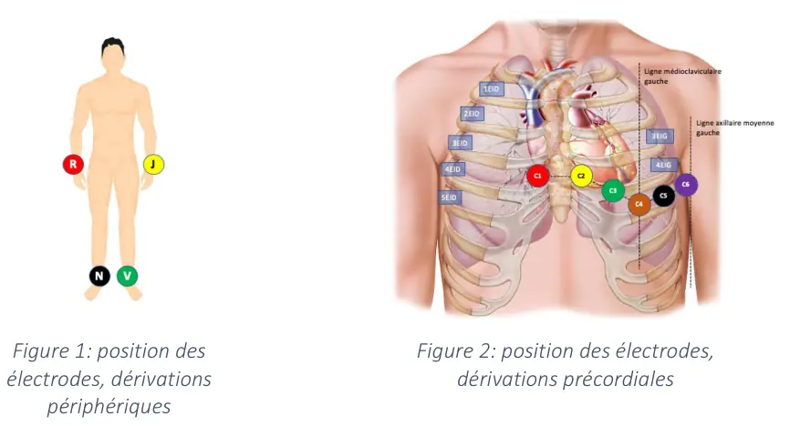
Figure 1: position des
Figure 2: position des électrodes,
électrodes, dérivations
dérivations précordiales
périphériques
Réaliser un ECG avec une ceinture d’électrodes
Brancher les câbles sur les électrodes correspondantes selon les coloris ou désignations.
Humidifier les électrodes de la ceinture, si besoin.
Positionner la ceinture (demander la participation de la victime) comme préconisée par le constructeur.
Bloquer la ceinture à l’aide des anses ou de la sangle.
Vérifier que toutes électrodes sont en contact avec le corps.
Allumer l’appareil et s’assurer d’être sur le mode ECG.
Réaliser l’enregistrement de l’ECG.
93
Transmettre un ECG
La télétransmission d’un ECG se fait pendant l’intervention. Elle peut être automatisée ou nécessiter une action de la part du secouriste. Les modes de télétransmission dépendent de l’appareil utilisé.
Un exemplaire électronique ou papier de l’ECG peut être laissé à l’équipe chargée d’assurer la continuité des soins de la victime.
Reconditionner l’appareil et ses accessoires après intervention
Le reconditionnement de l’appareil est important, pensez entre autres à :
la désinfection des surfaces, des câbles et la recharge de l’appareil ;
le rangement soigneux des divers câbles, notamment ceux associés à l’ECG ;
le remplacement des électrodes utilisées.
Risques et contraintes
Devant toutes difficultés d’enregistrement de l’ECG (tracé parasité), vérifier que :
les câbles sont correctement connectés (à l’appareil et aux électrodes),
les électrodes adhèrent correctement à la peau de la victime.
Certaines situations empêchent la mise en place des électrodes au niveau des extrémités (poignet et chevilles). C’est le cas, par exemple, si la victime présente une amputation. Placer alors les électrodes périphériques à la racine des membres au niveau de l’épaule pour le membre supérieur et du pli de l’aine pour le membre inférieur. Informer le médecin qui interprétera l’ECG de la modification du positionnement des électrodes.
Chez une femme qui présente des seins volumineux, relever le sein avec le dos de la main pour placer les électrodes (C4, C5 et C6) sous le sein au plus près de la paroi thoracique et du cœur.
Les tremblements de la victime parasitent l’enregistrement de l’ECG. Ces tremblements peuvent être dus à l’angoisse de la victime, au froid ou à certaines maladies (syndrome de Parkinson).
Rassurer la victime si elle est angoissée.
Réchauffer la victime si elle a froid avant de réaliser l’enregistrement de l’ECG (couverture, chauffage).
Placer les électrodes périphériques à la racine des membres en cas de tremblements persistants.
D’autres interférences (vibrations, courant électrique) peuvent parasiter l’enregistrement de l’ECG. S’assurer que :
la victime reste immobile,
le moteur du véhicule est arrêté,
la victime n’est pas en contact avec des éléments métalliques (brancard, montant d’un lit),
la victime n’est pas sur un lit électrique, si tel est le cas, le débrancher.
Évaluation
La réalisation et la télétransmission d’un ECG :
la mise en œuvre est effectuée sur prescription médicale et respecte les protocoles internes.
les électrodes ou la ceinture sont positionnées conformément aux préconisations et le branchement des câbles est conforme.
le tracé obtenu ne présente pas d’artéfacts.
la télétransmission de l’ECG si elle est nécessaire permet une interprétation de l’ECG par un médecin à distance.
94
[04FT12 / 07-2026] PSE①
Évaluation de la fonction neurologique
Indication
L’évaluation de la fonction neurologique est réalisée lors du bilan et de la surveillance de la victime.
Justification
La fonction neurologique est une fonction vitale. Toute altération de la fonction neurologique peut entraîner à plus ou moins brève échéance une altération des autres fonctions vitales et une aggravation de l’état de la victime.
Son évaluation au cours des différentes phases du bilan et au cours de la surveillance de la victime permet :
d’identifier une perte de connaissance (2ème regard),
d’évaluer le niveau de conscience de la victime (3ème regard),
de rechercher des troubles de l’orientation, une perte de connaissance passagère, d’évaluer la motricité et la sensibilité globale de la victime et enfin si nécessaire d’examiner l’état de ses pupilles (4ème regard)
d’évaluer l’évolution de l’état de la victime et l’efficacité de gestes de secours entrepris (surveillance de la victime).
Matériel
L’appréciation de la fonction neurologique ne nécessite aucun appareil.
Réalisation
L’évaluation de fonction neurologique se fait en trois temps :
Rechercher une perte de connaissance (2ème regard)
Apprécier la fonction neurologique. Elle se fait en posant des questions, en stimulant la victime et éventuellement en lui demandant de réaliser certains gestes (3ème regard).
Mesurer la fonction neurologique en évaluant la réponse de la victime à certaines sollicitations ou tests (4ème regard) :
Score EVDA (AVPU en anglo-saxon)
Score de Glasgow
Scores de l’AVC
L’autorité médicale de chaque organisme ou association est à même de choisir la méthode à utiliser pour mesurer le niveau de conscience et de proposer son enseignement.
95
Rechercher une perte de connaissance
La recherche d’une perte de connaissance ne nécessite que quelques secondes et se fait quelle que soit la position de la victime.
poser une question simple à la victime : « Comment ça va ? Vous m’entendez ? » tout en la secouant doucement par les épaules,
lui prendre la main et lui demander d’exécuter un ordre simple : « Ouvrez les yeux, serrez-moi la main »
Normalement, une victime consciente répond quand on lui pose une question et réalise le geste simple qu’on lui demande. On dit qu’une victime a perdu connaissance quand elle ne répond pas quand on lui pose une question, qu’elle ne réalise pas le geste simple qu’on lui demande et ne réagit pas aux sollicitations physiques.
Apprécier la fonction neurologique
L’appréciation de la fonction neurologique se fait en interrogeant la victime ou son entourage ou en lui demandant de réaliser certains gestes.
Évaluer l’orientation de la victime dans le temps et dans l’espace
« Comment vous appelez-vous ? »
« En quelle année sommes-nous ? Quel jour sommes-nous ? »
« Où sommes-nous ? »
Rechercher une perte de connaissance initiale ou passagère
Interroger l’entourage de la victime
Demander à la victime si elle se souvient de ce qui s’est passé.
Apprécier la motricité et la sensibilité des membres supérieurs et inférieurs
Demander à la victime de remuer les doigts puis les orteils ou les pieds.
Demander à la victime de serrer la main.
Demander à la victime de fermer les yeux et d’identifier successivement les membres touchés.
Apprécier la symétrie et la taille des pupilles
À la lumière du jour ;
Sous une lumière de « faible intensité ».
En conditions normales :
la victime :
répond correctement aux questions de manière cohérente et compréhensible,
se souvient des modalités de survenue de l’accident ou du malaise si elle n’a pas perdu connaissance,
bouge les membres supérieurs et inférieurs,
sent quand on la touche ;
les pupilles sont d’un diamètre égal et se resserrent à la lumière.
96
Mesurer le niveau de conscience de la victime et réaliser des scores neurologiques
Score EVDA (AVPU en anglo-saxon)
Le score EVDA se réalise plus particulièrement chez une victime qui présente une altération de la fonction neurologique. Il a pour objectif d’évaluer son niveau de conscience en appréciant sa réactivité à une stimulation verbale ou douloureuse.
Pour cela il faut :
interpeler la victime, lui poser une question simple,
lui prendre la main et lui demander d’exécuter un ordre simple,
en l’absence de réaction, la stimuler en réalisant une pression sur la base d’un de ses ongles (aucune autre méthode de stimulation douloureuse ne doit être réalisée).
En fonction de la réponse de la victime à ces gestes d’examen, la victime est considérée comme :
(E) Éveillée, alerte,si elle ouvre les yeux, répond et bouge spontanément ;
(V) réactive à la Voix si elle n’ouvre les yeux, ne parle, n’exécute un ordre simple que quand on le lui demande (stimulation verbale) ;
(D) réactive à la Douleur si elle n’ouvre les yeux ou ne réagit que quand on exerce une pression à la base de l’ongle, mais ne répond pas à la stimulation verbale ;
(A) Aréactive si elle reste inerte, ne bouge pas, n’ouvre pas les yeux et ne réagit ni à la voix ni à la stimulation douloureuse.
Cet examen peut être renouvelé autant que nécessaire si le secouriste pense que l’état de conscience de la victime se modifie, particulièrement lors de la surveillance.
Si la victime est consciente, il est alors possible d’identifier ses plaintes.
Score ou échelle de Glasgow
Le niveau de conscience d’une victime peut aussi être mesuré en utilisant le score de Glasgow. Cette mesure s’effectue en évaluant l’ouverture des yeux, la réponse verbale et motrice à la stimulation.
Le score de Glasgow est étroitement corrélé à la gravité d’une altération de la fonction neurologique (coma). C’est un score allant de 3 si la victime est en « coma aréactif » à 15 si elle est parfaitement consciente.
Tableau 7: Score de Glasgow (3 à 15)
SCORE
Y :OUVERTURE DES YEUX
(REPONSE OCULAIRE)
V :REPONSE VERBALE
M :REPONSE MOTRICE
1
Aucune
Aucune
Aucune
2
À la douleur
Sons incompréhensibles
Extension anormale (extension, enroulement des membres)
3
À la demande
Paroles inappropriées
Flexion anormale (flexion des membres)
4
Spontanée
Confuse
Retrait à la douleur
5
Normale
Localise la douleur
6
Normale
97
Scores de l’Accident Vasculaire Cérébral
Le score de reconnaissance de l’AVC le plus connu et utilisé est le FAST.
Il consiste à demander à la victime de réaliser différents tests pour rechercher :
Demander à la victime de sourire ou de montrer les dents (asymétrie de l’expression faciale) (Face);
Demander à la victime assise ou allongée de fermer les yeux et d’étendre les bras devant elle et de maintenir cette position pendant 10 secondes (faiblesse musculaire des membres supérieurs) (Arm);
Demander à la victime de répéter une phrase comme « on n’apprend pas au vieux singe à faire des grimaces » (parole)(Speech);
La présence d’une asymétrie de l’expression faciale, d’une faiblesse des membres supérieurs ou bien d’une anomalie de la parole doit considérer le score comme positif. Il doit faire suspecter la présence d’un AVC et demander un avis médical immédiat (Time).
Il existe d’autres scores de reconnaissance de l’AVC, mais plus complexes à réaliser (CPSS1, LAPSS2, etc.). Certains inclus la mesure de la glycémie capillaire qui doit être supérieure à 0,6 g/l pour considérer le score comme positif (LAPSS).
En conditions normales, lors de la réalisation :
du score EVDA (AVPU en anglo-saxon), la victime bouge spontanément, répond à un ordre simple et réagit à la stimulation.
du score de Glasgow, présente un résultat supérieur à 12.
d’un score de l’AVC (FAST), la victime :
à une expression faciale symétrique,
bouge les membres supérieurs et maintien la position demandée,
répète correctement la phrase proposée.
Évaluation
L’évaluation de la fonction neurologique chez une victime doit permettre d’identifier une atteinte de la fonction neurologique, comme :
Une perte de connaissance,
La présence de troubles de la conscience,
La présence de signes qui peut traduire une détresse neurologique en voie de constitution.
1 Cincinnati Prehospital Stroke Scale
2 Los Angeles Prehospital Stroke Scale
98
[04FT13 / 07-2026] PSE①
Mesure de la glycémie capillaire
Indication
En situation d’urgence et en l'absence de la présence d'un infirmier ou d'un médecin, la mesure de la glycémie est réalisée par les secouristes devant toutes victimes qui présentent :
des signes qui évoquent un accident vasculaire cérébral ;
un malaise susceptible d’être lié à une hypoglycémie :
malaise chez un diabétique,
malaise à l’effort, à jeun.
des troubles du comportement (agitation, prostration, agressivité) ;
une perte de connaissance.
La mesure de la glycémie peut aussi être réalisée à la demande du médecin régulateur.
Justification
La mesure de la glycémie capillaire donne une indication sur le taux de sucre présent dans le sang.
Cette mesure est un élément précieux pour le médecin régulateur.
Elle peut permettre de décider de l’administration de sucre (< 60 mg/dl ou < 3,3 mmol/ml ou < 0,6 g/l).
Matériel
La lecture de la glycémie capillaire nécessite :
un lecteur de glycémie1 ;
des bandelettes réactives adaptées au lecteur ;
un manuel d’utilisation ;
des autopiqueurs (lancettes autorétractables) ;
du savon et des compresses ;
une paire de gants à usage unique et non stérile ;
un collecteur OPTC, objets piquants/tranchants/coupants ;
un sac à DASRI.
N. B. Le stockage du matériel nécessaire à la réalisation d'une glycémie capillaire, et plus particulièrement les bandelettes, doit respecter les conditions d'humidité et de température préconisées par le fabricant.
Réalisation
Si la victime dotée de son lecteur de glycémie, ou l’un de ses aidants, a l’habitude de réaliser elle-même la glycémie capillaire, la laisser faire ou l’aider.
Même si la victime dispose d'un dispositif de mesure en continu de la glycémie capillaire il faut mesurer la glycémie capillaire.
1Certains appareils de glycémie nécessitent une calibration préalable. Pour cela, il faut se référer au manuel d'utilisation de l'appareil.
99
Sinon, procéder comme suit :
installer la victime confortablement ;
expliquer le geste technique à la victime ;
préparer les matériels nécessaires à la réalisation du geste ;
se frictionner les mains avec une solution hydroalcoolique ;
mettre des gants à usage unique non stériles ;
nettoyer l'extrémité du doigt de la victime avec une compresse imbibée d'eau ou d'eau et de savon.
sécher soigneusement avec une seconde compresse ;
insérer une bandelette dans le lecteur comme indiqué par le fabricant. Le lecteur s’allume ;
attendre, selon le type d’appareil, le signal indiquant qu’il est prêt à fonctionner ;
poser l'autopiqueur à usage unique sur la face latérale de l’extrémité du doigt (troisième phalange du majeur, de l'annulaire ou de l'auriculaire en excluant le pouce et l’index) ;
prévenir la victime et déclencher la piqûre ;
comprimer le doigt en amont de la troisième phalange pour faire affluer le sang et obtenir une grosse goutte de sang ;
rapprocher l’extrémité de la bandelette (fente) insérée dans le lecteur au contact de la goutte de sang. Le sang est alors aspiré automatiquement par capillarité dans la fente de la bandelette ;
au bout de quelques secondes, lire le résultat de la glycémie qui s'affiche à l'écran ;
appliquer une compresse à l'endroit qui a été piqué et exercer une pression jusqu’à l’arrêt du saignement ;
jeter l'autopiqueur dans le collecteur OPTC, objets piquants/tranchants/coupants ;
retirer la bandelette utilisée et la jeter dans le sac à DASRI ;
transmettre le résultat de la glycémie en indiquant son unité de mesure ;
éteindre le lecteur de glycémie après utilisation.
Risques & Contraintes
Une piqûre accidentelle du secouriste avec du matériel souillé par le sang de la victime ne devrait pas survenir si la technique et le matériel sont correctement utilisés. Néanmoins, il s’agit d’un AES et la conduite à tenir spécifique doit être appliquée.
Les bandelettes utilisées ne doivent pas être périmées. Les bandelettes périmées, non utilisées, peuvent être éliminées avec les ordures ménagères.
Certains appareils donnent seulement une indication sans affichage du taux lorsque la glycémie est très haute ou très basse.
L’appareil doit être entretenu conformément aux indications du fabricant.
En cas de dysfonctionnement ou de messages d'erreur, se reporter à la notice d’utilisation de l’appareil.
Évaluation
L’appareil doit afficher dans les délais impartis, sans message d’erreur, une mesure du taux de sucre dans le sang de la victime.
100
[04FT14 / 07-2026] PSE①
Mesure de la température
Indication
La mesure de la température doit être réalisée systématiquement chez toute victime suspecte d’hypothermie ou d’hyperthermie (victime anormalement chaude ou froide au touché lors de son examen).
Justification
La mesure de la température d’une victime a pour objectif de dépister une augmentation (hyperthermie) ou une diminution (hypothermie) de la température.
Matériel
Il existe plusieurs types de thermomètres utilisables pour mesurer la température :
tympanique (ou auriculaire) ;
Il permet de réaliser la mesure à partir de la chaleur infrarouge émise par la membrane du tympan. Il se compose habituellement :
de couvre-sondes à usage unique,
d’un écran qui affiche la température ainsi que les instructions d’utilisation,
d’un bouton qui active la mesure de la température,
d’un logement pour les batteries.
électronique ;
Il permet, selon les modèles, une mesure rectale, buccale ou axillaire (sous le bras).
Un signal sonore annonce le résultat après environ soixante secondes de prise.
En fonction de la localisation de la mesure, il faut ajouter au résultat affiché entre un demi et un degré pour obtenir la température correcte (cf. notice fabricant).
médical ;
Ressemblant à l'ancien thermomètre au mercure, son contenu a été remplacé par un autre liquide.
Il permet une prise de mesure rectale ou axillaire.
Le résultat de la température apparaît au bout de trois minutes environ de prise et se lit en inclinant de profil le thermomètre.
frontal ;
Il existe plusieurs types de thermomètres frontaux.
Ils peuvent être de simples indicateurs de température et se présenter sous la forme d’une barrette plastique à poser sur le front de la victime. Ils peuvent être aussi des thermomètres avec contact ou à distance à infrarouge.
hypothermique.
Il est spécifiquement conçu pour mesurer des températures corporelles très basses, en dessous de la normale (36,5–37,5 °C).
Il peut mesurer des températures à partir de 25 °C ou moins, ce qui permet de détecter et suivre une hypothermie sévère, ce qu’un thermomètre ordinaire ne permet pas de faire.
101
Réalisation
Seule est décrite la prise de température à l’aide d’un thermomètre auriculaire :
placer un couvre-sonde à usage unique sur l’extrémité de la sonde ;
saisir le pavillon de l’oreille et exercer une légère traction vers le haut et vers l’arrière ;
positionner l’ensemble sonde et couvre-sonde à l’entrée du conduit auditif externe de la victime ;
pousser doucement l’ensemble dans le conduit auditif ;
appuyer sur le bouton de mesure de la température ;
retirer le thermomètre du conduit auditif après l’émission du signal annonçant la fin de la prise de température ;
noter la température affichée sur l’écran ;
éjecter le couvre sonde dans un conteneur de recueil de DASRI.
Si un autre type d’appareil de mesure de la température est utilisé, se conformer au guide d’utilisation du constructeur.
Risques & Contraintes
Pour limiter tout risque traumatique en utilisant un thermomètre auriculaire, il convient de prévenir tout mouvement excessif de la tête lors de la mesure.
Le thermomètre auriculaire ne doit pas être utilisé chez :
un nourrisson de moins de 3 mois, car le diamètre de son conduit auditif est inférieur à celui de la sonde du thermomètre ;
une victime d’un traumatisme auriculaire bilatéral, lors d’un accident avec explosion, par exemple.
Lors de variation brusque de température ambiante (passage de l’ambulance à l’environnement extérieur froid), le thermomètre auriculaire peut donner des chiffres erronés.
Évaluation
À la fin de la mesure, la température s’affiche correctement.
Tableau 8: techniques de mesures de la température recommandées en fonction de l'âge
TRANCHE D’AGE
TECHNIQUE RECOMMANDEE
De la naissance à 2 ans
1 - Rectale (indiquée)
2 - Axillaire (dépistage des enfants peu vulnérables)
De 2 à 5 ans
1 - Rectale (indiquée)
2 - Axillaire ou tympanique (dépistage)
Au-delà de 5 ans
1 - Buccale (définitive)
2 - Axillaire, tympanique, frontale (dépistage)
102
[04FT15 / 12-2022] PSE①
Recherche de lésions
Indication
La recherche des lésions et des anomalies est réalisée au cours du bilan de la victime, lors de son examen.
Justification
L’examen du corps de la victime a pour objectif de rechercher la présence de signes de lésions cutanées (contusions, plaies, brûlures) ou d’autres anomalies comme un hématome, un gonflement, une déformation qui peuvent être secondaires à un traumatisme, mais aussi des lésions ou des anomalies qui sont liées à une affection médicale ou circonstancielle (hématome, rougeur, tâches cutanées, etc.).
Matériel
Aucun matériel
Réalisation
L’examen à la recherche de lésions est orienté dans un premier temps par les plaintes exprimées par la victime.
Il peut se terminer par un examen plus exhaustif de la « tête aux pieds » notamment chez la victime présentant une affection traumatique et si le traumatisme a été violent ou s’il présente des troubles de la conscience.
Cet examen, réalisé par le secouriste, est visuel et peut être accompagné d’une palpation douce de certaines zones du corps de la victime pour révéler d’éventuels points douloureux, parfois non exprimés spontanément par la victime.
Les différentes zones du corps de la victime sont examinées en suivant la procédure détaillée dans le tableau ci-après.
Tableau 9 : Examen du corps de la victime à la recherche de lésions ou d’anomalies
ZONE A EXAMINER
COMMENT?
RECHERCHER QUOI?
OBSERVATIONS
TETE
Observer, le cuir chevelu, la face (y compris narines, oreilles, yeux et bouche)
Passer la main dans les cheveux
Plaies et brûlures
Hématomes
Déformations, gonflements
Écoulement par le nez et par les oreilles
Asymétrie de l’expression faciale, déformation de la bouche
Asymétrie pupillaire
Maintenir la tête de la victime pour ne pas mobiliser la tête et le cou en cas de traumatisme.
COU
Observer
Passer délicatement la main sous la nuque
Plaies et brûlures
Hématomes
Déformations, gonflements
Douleur à la palpation.
Maintenir la tête de la victime pour ne pas mobiliser la tête et le cou en cas de traumatisme.
THORAX
Observer
Palper délicatement
Plaies (plaie soufflante)
Brûlures
Hématomes
Anomalie (asymétrie) du soulèvement de la poitrine à la respiration (seule une partie du thorax se soulève).
Douleur à la palpation.
Soulever ou écarter les vêtements.
103
ABDOMEN
Observer
Palper délicatement
Plaies (parfois accompagnée d’une sortie de l’intestin) et brûlures
Hématomes
Douleur à la palpation
Mobilité de l’abdomen (soulèvement de l’abdomen à chaque inspiration)
Soulever ou écarter les vêtements.
Localiser la zone atteinte de
l’abdomen (par exemple par rapport au nombril en considérant qu’il est le centre d’une horloge).
DOS
Observer
Palper
Plaies (présence de sang sur la main qui palpe)
Hématomes
Brûlures
Douleur à la palpation
Glisser les mains sous la victime sans la mobiliser et sans la déplacer en cas de traumatisme.
Profiter du relevage ou du déplacement de la victime pour observer ou palper le dos.
BASSIN
Observer
Plaies et brûlures
Hématomes
Taches de sang sur les sous-vêtements (suspicion de traumatisme des organes génitaux ou urinaires)
Ne pas palper :la palpation du bassin peut entraîner un déplacement d’éventuelles fractures et aggraver un saignement interne.
MEMBRES
Observer chaque membre et les comparer
Palper (empaumer latéralement le
membre sans le mobiliser et appuyer délicatement à deux mains en allant de sa racine à son extrémité)
Rechercher les pouls périphériques
Demander de bouger les doigts ou les orteils
Demander à la victime si elle sent quand on la touche en plusieurs endroits des membres
Plaies et brûlures
Gonflements
Déformations
Douleur provoquée
État de la circulation du membre (coloration, température de la peau, pouls périphériques1)
Altération motrice ou sensitive
Soulever ou écarter les vêtements.
Enlever tout ce qui pourrait gêner l’examen.
Retirer les chaussures et les chaussettes si possibles.
Évaluation
Après l’examen de la victime, les différentes lésions, anomalies ou points douloureux sont identifiés et localisés.
1 Radial, pédieux, tibial postérieur. L’apprentissage ou non des deux derniers est de la décision de l’autorité d’emploi.
104
[04FT16 / 12-2023] PSE①
Mesure de la douleur
Indication
La mesure de la douleur1 se réalise lors de l’analyse des plaintes de la victime au cours du bilan (4ème regard) et régulièrement lors de sa surveillance.
Justification
La mesure d’une douleur de la victime permet :
lors du bilan, d’identifier le niveau de douleur initial exprimé par la victime,
au cours de sa surveillance, de suivre l’évolution du niveau de douleur ressentit par la victime pendant et après la réalisation des gestes de premiers secours.
Le niveau de douleur est utilisé pour porter l’indication de l’utilisation des antalgiques. Certains antalgiques peuvent être utilisés par des secouristes habilités sur indication médicale2.
Matériel
Pour effectuer une mesure de la douleur, on utilise une échelle d’évaluation3.
Cette échelle d’évaluation peut être verbale, expliquée par le secouriste ou utilisée à l’aide d’un outil visuel. Cet outil dépend de l’échelle qui est choisie.
Le choix de l’échelle de la douleur utilisée par le secouriste est du ressort de l’autorité médicale de chaque organisme ou association.
Réalisation
Échelle verbale simple (EVS)
L’EVS est une échelle virtuelle qui évalue l’intensité de la douleur en 5 points, de 0 à 4 et pour laquelle correspond à chaque valeur une réponse verbale apportée par la victime.
Il faut demander à la victime de préciser le niveau de sa douleur à l’instant présent en lui donnant une note de 0 à 4 selon les indications ci-dessous :
- 0 – Douleur nulle
- 1 – Douleur faible
- 2 – Douleur modérée
- 3 – Douleur intense
- 4 – Douleur insupportable
La victime nécessite une prise en charge de la douleur si EVS ≥ 2
2 Décret n° 2022-621 du 22 avril 2022 relatif aux actes de soins d'urgence relevant de la compétence des sapeurs-pompiers
3 Liste des échelles acceptées pour mesurer la douleur, Haute Autorité de Santé, Direction de l’Amélioration de la Qualité et de la Sécurité des Soins, Service Évaluation et Outils pour la Qualité et la Sécurité des Soins en date du 12 janvier 2022.
105
Échelle numérique (EN)
L’EN est une échelle virtuelle qui évalue l’intensité de la douleur en 11 points, 0 à 10 et pour laquelle correspond à chaque valeur une réponse verbale apportée par la victime.
Il faut demander à la victime de préciser le niveau de sa douleur à l’instant présent en lui donnant une note de 0 à 10 selon les indications ci-dessous :
- La note « 0 » correspond à une absence de douleur
- La note de 1 à 3 à une douleur faible
- La note de 4 à 5 à une douleur modérée
- La note de 6 à 7 à une douleur forte
- La note de 8 à 10 à une douleur insupportable
Cette évaluation nécessite une bonne explication par le secouriste et la compréhension par la victime. Elle est plus facile à réaliser chez l’adulte.
La victime nécessite une prise en charge de la douleur si EN ≥ 4/10.
Échelle visuelle analogique (EVA)
Son principe est le même que l’EN, mais elle s’appuie sur l’utilisation d’un outil en plastique gradué en mm, encore appelé « réglette ».
Sur la face présentée à la victime se trouve un curseur qu’elle mobilise le long d’une ligne droite (fig. 1) ou d’un triangle couché dont la pointe est située du côté du 0 et la base du côté 10. L’une des extrémités correspond à « pas de douleur », et l’autre à « douleur maximale imaginable ». La victime doit, le long de cette ligne, positionner le curseur à l’endroit qui correspond le mieux à sa douleur.
Sur l’autre face se trouvent des graduations millimétrées vues seulement par le secouriste (fig. 2). La position du curseur mobilisé par la victime permet de lire l’intensité de la douleur, qui est mesurée en millimètres.
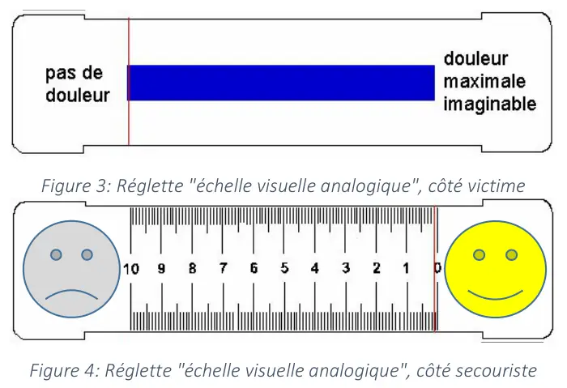
Figure 3: Réglette "échelle visuelle analogique", côté victime
Figure 4: Réglette "échelle visuelle analogique", côté secouriste
L’utilisation de ces échelles demande une bonne coopération de la victime et une explication claire de son utilisation. Le secouriste doit toujours s’assurer de la bonne compréhension de la victime. Si la victime présente plusieurs points douloureux, une évaluation de chaque point doit être réalisée.
La victime nécessite une prise en charge de la douleur si EVA ≥ 4/10.
106
Échelle des 6 visages
Cette échelle est basée sur le principe de l’EVA, mais adaptée pour des enfants de 4 à 10 ans.
La réglette, coté victime, représente 6 visages qui expriment l’absence de douleur ou une douleur légère à très intense (fig. 3).
La réglette, côté secouriste, donne pour chaque visage un niveau de douleur. Comme il n’existe que 6 visages, seuls 6 niveaux sont identifiés (0, 2, 4, 6, 8 et 10) (fig. 4).
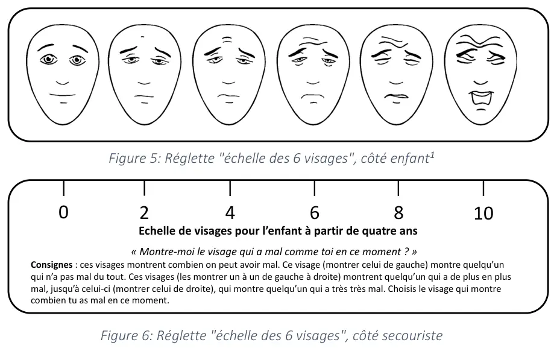
Figure 5: Réglette "échelle des 6 visages", côté enfant1
0
2
4
6
8
10
Echelle de visages pour l’enfant à partir de quatre ans
« Montre-moi le visage qui a mal comme toi en ce moment ? »Consignes : ces visages montrent combien on peut avoir mal. Ce visage (montrer celui de gauche) montre quelqu’un qui n’a pas mal du tout. Ces visages (les montrer un à un de gauche à droite) montrent quelqu’un qui a de plus en plus mal, jusqu’à celui-ci (montrer celui de droite), qui montre quelqu’un qui a très très mal. Choisis le visage qui montre combien tu as mal en ce moment.
Figure 6: Réglette "échelle des 6 visages", côté secouriste
Cette échelle est de compréhension facile, même chez l’enfant jeune, chez l’enfant douloureux ou fatigué. C’est l'échelle la mieux validée et la plus appréciée par les enfants.
L’enfant nécessite une prise en charge de la douleur si le score est supérieur ou égal à 4.
Échelle EVENDOL (hétéroévaluation de la douleur)
Les enfants les plus jeunes ou stressés ont du mal à relativiser, à comparer différents niveaux de douleur entre eux. Il en est de même pour les enfants qui ne s’expriment pas. Dans cette situation il est pertinent de revenir à une hétéroévaluation comportementale de la douleur.
L’échelle d’hétéroévaluation EVENDOL en 15 points a été validée pour les enfants de 0 à 7 ans en situation d’urgence. Pour cela, le secouriste doit identifier des signes d’évaluation de la douleur qui portent sur l’expression, la mimique, les mouvements, la position de la victime et ses relations avec l’environnement. La douleur est évaluée sur un total de 15 (tableau 7).
L’usage de cette échelle est plus difficile, et reste le plus souvent utilisé par du personnel habitué à la prise en charge de la douleur chez l’enfant. Son utilisation par les secouristes est du ressort de l’autorité médicale de chaque organisme ou association.
1D’après Carrie L Hicks, Carl L von Baeyer, Pamela A Spafford et all. The Faces Pain Scale-Revised: toward a common metric in
Tableau 10: Échelle d'hétéroévaluation de la douleur chez l'enfant "EVENDOL"1
CRITERES D’HETEROEVALUATION
SIGNE
SIGNE
SIGNE
SIGNE
ABSENT
PEU INTENSE
MOYEN OU PRESENT
FORT OU QUASI
OU PASSAGER
LA MOITIE DU TEMPS
PERMANENT
Expression vocale ou verbale
Pleure et/ou crie et/ou gémit et/ou dit qu'il a mal
0
1
2
3
Mimique
A le front plissé et/ou les sourcils froncés et/ou la bouche crispée
0
1
2
3
Mouvements
S'agite et/ou se raidit et/ou se crispe
0
1
2
3
Position
A une attitude inhabituelle et/ou antalgique et/ou se protège et/ou reste immobile
0
1
2
3
Relation avec l’environnement
Peut-être consolé et/ou s'intéresse aux jeux et/ou communique avec l'entourage
Normale 0
Diminué 1
Très diminué 2
Absente 3
Score total
__/15
L’enfant nécessite une prise en charge de la douleur si EVENDOL ≥ 4/15.
Évaluation
La mesure de la douleur :
- est réalisée pour chaque victime qui présente une douleur,
- utilise un outil de mesure validé,
- est répétée pour suivre son évolution tout le long de la prise en charge de la victime, - est renseignée sur la fiche de bilan.
1D’après Fournier-Charrière, E. et al. EVENDOL, a new behavioral pain scale for children ages 0 to 7years in the emergency department: Design and validation. Pain 153, 1573–1582 (2012).
108
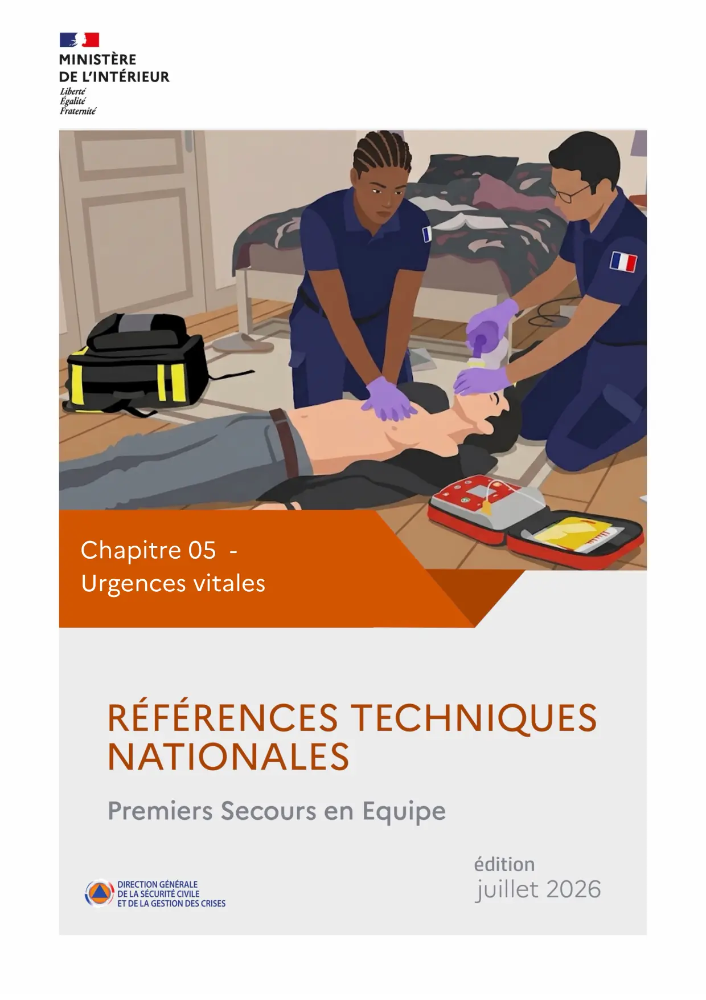
- Urgences vitales
109
[05AC01 / 06-2018] PSE①
La bouteille d’oxygène
Indication
L’oxygène en bouteille est un médicament pouvant, sous certaines conditions, être administré à une victime :
en inhalation pour enrichir l’air en oxygène ;
en insufflation ;
pour faire fonctionner un respirateur médical ou tout autre dispositif médical.
Justification
L’oxygène, dans les conditions normales de pression et de température, est un gaz ; il est donc compressible. Cette propriété permet de le comprimer afin de le stocker et de le transporter, au moyen de récipients spéciaux (les bouteilles), sous un faible encombrement.
Pour être administré à une victime, l’oxygène comprimé doit être détendu et ramené à la pression atmosphérique ambiante à l’aide d’un dispositif fixé sur la bouteille, appelé détendeur.
Le débit d’oxygène (exprimé en litre par minute ou l/min) administré à la victime est réglé à l’aide d’un appareil, appelé débitmètre.
La bouteille d’oxygène
Les bouteilles peuvent être de différents volumes : 2, 5, 11 et 15 litres et contiennent respectivement, lorsqu’elles sont pleines, sous une pression de 200 bar, et après détente à pression atmosphérique, environ 0.4, 1, 2.2 et 3 m3 d’oxygène.
En France, les bouteilles sont blanches, en aluminium recouvert de matière composite, légères, équipées d’une poignée de transport, d’un chapeau inamovible dans lequel est logé un détenteur-débitmètre intégré.
Plusieurs informations sont gravées sur la bouteille, en particulier, la date de la dernière vérification, la pression maximale d’utilisation et son volume en eau.
Le détendeur-débitmètre intégré
Le détenteur-débitmètre intégré est composé :
d’un manomètre haute pression, avec des plages colorées, qui indique la pression régnant à l’intérieur de la bouteille ou d’un affichage sur écran LCD de l’autonomie en temps de la bouteille en fonction du débit choisi (la pression résiduelle n’apparaît que sous forme d’une jauge graduée par ¼ avec alarmes sonores) ;
d’une sécurité active, sous forme d’un volet, empêchant tout branchement intempestif sur la bouteille lorsque celle-ci est en position fermée ;
d’un raccord de sortie (olive), qui permet de brancher un tuyau afin d’alimenter un masque à inhalation ou un ballon-réserve en oxygène d’un insufflateur ;
d’une prise normalisée à trois crans afin d’alimenter un respirateur ou un réseau de distribution d’oxygène interne au véhicule de secours ;
d’un robinet d’ouverture de la bouteille ;
d’un robinet permettant de régler le débit d’utilisation par palier, sur une plage de 0 à 15 l/min ;
d’une soupape de sécurité tarée à 200 bars ;
110
d’un raccord de remplissage spécifique, pour le conditionnement chez le fournisseur.
Étiquettes et accessoires
La bouteille d’oxygène est fournie avec :
une étiquette identifiant le nom du laboratoire fournisseur ;
une notice « produit » ;
une étiquette indiquant le numéro du lot d’oxygène et sa date limite d’utilisation ;
un panneau étiquette « danger », collé sur la bouteille, rappelant les risques liés à son utilisation et les principales mesures à respecter.
L’autonomie
L’autonomie de la bouteille dépend de :
la quantité d’oxygène disponible, déterminée par la pression qui règne à l’intérieur de la bouteille et par le volume en eau de la bouteille ;
la consommation en oxygène, c’est-à-dire du débit administré à la victime.
La quantité d’oxygène (exprimée en litre) est le produit de la pression (exprimée en bar) par le volume en eau de la bouteille (exprimé en litre).
Consignes de conservation, de stockage et de transport
Les bouteilles pleines et les bouteilles vides doivent être conservées séparément.
Les bouteilles conservées ou transportées doivent être solidement arrimées et installées dans un emplacement permettant de les protéger des chutes et des chocs.
Les bouteilles doivent être :
protégées des intempéries, des sources de chaleur (température supérieure ou égale à 50 °C) et conservées dans un local aéré ou ventilé, propre et sans matières inflammables ;
maintenues en position verticale, robinet fermé ;
déplacées sans être traînées ou roulées sur le sol.
Les bouteilles ne doivent pas être
soulevées par leur robinet ;
graissées ou lubrifiées ni enduites de corps gras.
Il ne faut jamais utiliser de flacons pressurisés (laque, désodorisant…), de solvant (alcool, essence…) ou de produits corrosifs pour nettoyer les bouteilles.
Consignes de manipulation et d’utilisation
Le bon état du matériel, la présence d’oxygène dans la bouteille, la date limite d’utilisation ainsi que l’intégrité des étiquetages doivent être vérifiés lors de la prise de fonction.
Toute manipulation doit se faire avec des mains propres, exemptes de graisse. Les tuyaux de raccordement utilisés doivent être spécifiques à l’oxygène.
Le visage de la victime, comme le dispositif d’administration (masque), ne doivent pas être enduits de corps gras.
La bouteille ne doit pas être ouverte :
lorsqu’elle est en position couchée ;
à proximité de matières inflammables, pour éviter le risque de propagation d’incendie.
111
L’ouverture de la bouteille doit être réalisée lentement.
Il ne faut jamais procéder à plusieurs mises en pression successives et rapprochées.
Le débitmètre ne doit jamais être ouvert avant le robinet (il doit être réglé à 0 l/min au préalable). La sortie du robinet de la bouteille ne doit jamais se trouver dirigée face à l’intervenant ou la victime. Ils doivent toujours être du côté opposé au détendeur, derrière la bouteille et en retrait.
Une bouteille présentant un défaut d’étanchéité ne doit jamais être utilisée. En cas de fuite, fermer le robinet.
Une flamme, une source de chaleur supérieure à 50 °C ou un appareil générant des étincelles ne doivent jamais être approchés.
Il faut immédiatement, autant que possible, refermer le robinet de la bouteille en cas de phénomène anormal (étincelles, crépitements).
Toute bouteille ayant chuté ou présentant une anomalie (chapeau mal fixé) ou une défaillance (robinet bloqué, manomètre défectueux…) ne doit plus être utilisée. Elle doit, quelle que soit sa pression résiduelle, être rapportée au responsable chargé de l’oxygène.
Risques & Contraintes
L’oxygène est un comburant qui entretient et active la combustion. Il peut également entraîner l’inflammation des corps gras, des poussières ou de tous objets inflammables installés à proximité.
Évaluation
En cas de doute, vérifier que l’oxygène est bien délivré à la sortie du tuyau venant de la bouteille en écoutant le bruit généré par la sortie du gaz.
Pour cela, pincer l’extrémité du tuyau une à deux secondes puis le relâcher. On perçoit ainsi le bruit sec lié à la sortie brutale de l’oxygène comprimé dans le tuyau pendant le temps où ce dernier est resté pincé.
112
[05FT01 / 12-2022] PSE①
Administration d’oxygène par inhalation
Indication
L’inhalation d’oxygène est un enrichissement en oxygène de l’air inspiré par une victime qui respire (fréquence respiratoire > 6 mouvements par minute).
L’inhalation d’oxygène est nécessaire chez toute victime qui présente :
une détresse respiratoire ou circulatoire ;
une intoxication aux fumées d’incendie ou au monoxyde de carbone ;
un accident lié à la plongée ;
une mesure de la SpO2 qui indique une valeur < 94 % ;
une mesure de la SpO2 qui indique une valeur < 89 % chez l’insuffisant respiratoire chronique avec ou sans oxygène à domicile ;
une crise douloureuse chez une victime qui présente des antécédents de drépanocytose.
Si les circonstances ne permettent pas de prendre la mesure de la SpO2 (extrémités froides, panne de l’appareil, etc.), l’inhalation d’oxygène est systématique si la victime présente une détresse vitale, dans l’attente d’un avis médical.
Justification
L’inhalation d’oxygène a pour objet d’augmenter la quantité d’oxygène, notamment au niveau du cerveau.
Matériel
Un appareil de mesure de la SpO2 doit toujours être à disposition du secouriste chaque fois qu’il a les moyens d’administrer de l’oxygène.
bouteille d’oxygène ;
appareil de mesure de la SpO2 ;
dispositif d’administration d’oxygène par inhalation.
Il existe plusieurs dispositifs qui permettent d’administrer de l’oxygène en inhalation :
masque à inhalation à « haute concentration » (MHC)1;
La concentration en oxygène de l’air qui est délivré est variable en fonction de la forme du masque et de la qualité de la ventilation de la victime.
Le MHC est muni d’un réservoir d’oxygène situé au-dessous d’une valve antiretour qui empêche la victime de rejeter l’air expiré dans ce réservoir. Il existe des modèles « adultes » et des modèles « enfants ».
Le MHC doit être utilisé pour toute administration d’O2 qui nécessite de fortes concentrations, c’est-à-dire pour maintenir une SpO2 entre 94 et 98 %. Il ne doit pas être utilisé en dessous de 6 l/min.
masque simple2 ;
Il est encore appelé masque à moyenne concentration.
La concentration d’oxygène administré aux victimes est variable et dépend plus particulièrement du débit en O2 et de la ventilation de la victime.
1 Le MHC délivre un air dont la concentration en O2 est comprise entre 60 et 90 % lorsque le débit d’admission est de 8 à 15 l/min.
2 Le MS délivre un air dont la concentration en O2 est comprise entre 40 et 60 % lorsque le débit d’admission est de 5 à 10 l/min.
113
Un débit < 5 l/min peut entraîner une augmentation de la résistance à l’inspiration et il peut y avoir une mauvaise évacuation du CO2 contenu dans le masque. Cette mauvaise évacuation est à l’origine d’un phénomène de réinhalation de l’air expiré (re-breathing).
lunettes à oxygène ;
Les lunettes à O2 sont en PVC, souple, non stérile et à usage unique. Elles possèdent :
une tubulure étoilée anti-écrasement,
un système de fixation qui passe derrière les oreilles de la victime et qui est en avant, de forme légèrement courbée, adapté à l’anatomie du visage,
un embout nasal fin et souple,
une languette flexible qui permet de stabiliser la lunette sur la lèvre supérieure de la victime.
L’utilisation des lunettes à O2 par le secouriste est adaptée pour des victimes qui nécessitent une administration d’O2 à des concentrations basses ou modérées.
Elle est plus particulièrement indiquée pour l’aggravation d’une insuffisance respiratoire chronique afin de maintenir une SpO2 entre 89 et 94 %.
Son utilisation doit faire l’objet si possible d’un avis médical.
masque pour laryngectomisé.
Le masque pour laryngectomisé permet l’administration d’O2 par un tube de trachéotomie ou pour les victimes qui ont eu une laryngectomie (la victime respire habituellement par un orifice situé à la base du cou).
Le débit d’oxygène doit être adapté à la saturation que l’on désire obtenir. L’administration d’O2 par cette voie doit être limitée dans le temps, car une humidification de l’air est nécessaire.
Lors de l’administration d’O2 chez une victime laryngectomisée, il est souvent nécessaire de réaliser une aspiration des sécrétions présentes pour améliorer la liberté des voies aériennes.
Le masque à valves Venturi est un autre moyen d’administration d’oxygène, mais il n’est pas adapté à la prise en charge des victimes par le secouriste.
Les dispositifs d’inhalation mis à disposition du secouriste relèvent de son autorité médicale d’emploi. Les insufflateurs manuels équipés ou non de ballon-réserve ne doivent pas être utilisés comme moyen d’inhalation, car ils augmentent la résistance à l’inspiration et peuvent aggraver une détresse respiratoire, particulièrement chez l’enfant.
Réalisation
ouvrir la bouteille d’oxygène ;
relier le tuyau d’oxygène du masque au dispositif de sortie d’oxygène de la bouteille ;
chez une victime en détresse vitale, toujours utiliser d’emblée le MHC ;
régler le débit initial ;
En cas d’utilisation d’un MHC, remplir le ballon réserve en obturant la valve du masque avec les doigts.
mettre le dispositif d’administration d’O2 en place ;
ajuster le débit d’oxygène en fonction des objectifs de saturation visés ;
assurer la surveillance de la victime.
114
Cas particuliers
intoxication aux fumées d’incendie, intoxication au monoxyde de carbone, accident de décompression :
inhalation d’O2 avec un MHC et à un débit de 15 l/min, quel que soit le niveau de SpO2.
victime en détresse, lorsque la mesure de la SpO2 est impossible (absence de pouls périphérique lors d’une détresse circulatoire ou en cas d’hypothermie) :
inhalation d’O2 avec un MHC et à un débit de 15 l/min quels que soient les antécédents de la victime dans l’attente d’un avis médical.
Tableau 11: Débits d’oxygène en fonction du dispositif d’inhalation d’O²
MHC
(ADULTE ET ENFANT)
MASQUE SIMPLE
(ADULTE ET ENFANT)
LUNETTES A O2
PLAGES DE DEBIT D’UTILISATION
15 à 9 l/min
9 à 6 l/min
6 à 1 l/min
DEBIT INITIAL
15 l/min
9 l/min
2 l/min ou
1 ou 2 l/min de plus que son débit habituel
Tableau 12: Objectifs de saturation
SpO2 de 94 à 98 % chez l’adulte, l’enfant et le nourrisson
SpO2de 89 à 94 % chez l’insuffisant respiratoire chronique
Risques & Contraintes
L’administration d’oxygène peut être dangereuse chez la victime qui présente une insuffisance respiratoire chronique avancée. De même, l’hyperoxie peut être néfaste chez la victime qui présente un AVC ou une maladie cardiaque alors que le taux d’oxygène dans le sang est normal.
Au total, il faut lutter contre l’hypoxie, sans entraîner une hyperoxie.
Pour cela, chaque fois que possible, il faut adapter l’administration d’oxygène à la mesure de la SpO2 tout en respectant les indications et contre-indications de cette administration.
L’administration d’oxygène à l’aide de lunettes sans humidification peut entraîner une irritation nasale pour des débits > 4 l/min.
Évaluation
Un enrichissement en oxygène de l’air inspiré par la victime vise à obtenir une amélioration de l’état de la victime et à atteindre les objectifs de saturation attendus.
115
[05AC02 / 07-2026] PSE①
Hémorragies externes
Définition
Une hémorragie est une perte de sang qui provient d'une plaie ou d'un orifice naturel et qui ne s'arrête pas spontanément. Elle imbibe de sang un mouchoir de tissu ou de papier en quelques secondes.
Un saignement dû à une écorchure, une éraflure ou une abrasion cutanée, qui s'arrête spontanément n'est pas une hémorragie.
Le plus souvent, il est facile de constater une hémorragie. Toutefois, celle-ci peut temporairement être masquée par la position de la victime ou un vêtement particulièrement absorbant (manteau, blouson, etc.).
Causes
L'hémorragie est généralement secondaire à un traumatisme comme un coup, une chute, une plaie par un objet tranchant (couteau), un projectile (une balle) ou une maladie comme la rupture de varice chez la personne âgée.
Risques & Conséquences
Sous l’effet d’une hémorragie, la quantité de sang de l’organisme diminue.
Dans un premier temps, la fréquence cardiaque augmente pour compenser cette perte et maintenir un débit et une pression suffisante dans les vaisseaux afin d’assurer la distribution de sang à l’organisme.
Dans un deuxième temps, si le saignement n’est pas arrêté, la pression sanguine s’effondre, le débit diminue et une détresse circulatoire apparaît. Elle peut provoquer un « désamorçage de la pompe » et un arrêt du cœur.
Une hémorragie externe menace immédiatement ou à très court terme la vie d’une victime.
Signes
L’hémorragie externe est, le plus souvent, évidente et constatée au début du bilan (2ème regard).
Parfois, elle est découverte lors de la recherche de lésions traumatiques (4ème regard). En effet, l’hémorragie peut être temporairement masquée par la position de la victime ou un vêtement particulier (manteau, blouson).
L’hémorragie externe doit être différenciée d’un saignement minime, peu abondant, dû à une écorchure, une éraflure ou une abrasion cutanée, qui lui s’arrête spontanément.
Principe de l’action de secours
arrêter immédiatement l’hémorragie pour limiter la perte de sang ;
rechercher une détresse circulatoire ;
limiter les conséquences.
116
[05PR01 / 07-2026] PSE①
Hémorragies externes
se protéger les mains par des gants à usage unique ;
constater l’hémorragie, si nécessaire en écartant les vêtements ;
arrêter immédiatement l’hémorragie :
en demandant à la victime de comprimer immédiatement l’endroit qui saigne ;
ou à défaut, le faire1 à sa place ;
maintenir la compression (par la victime ou le sauveteur) ;
allonger confortablement la victime, par exemple sur un brancard, un canapé ou à défaut sur le sol2 ;
mettre en place :
un pansement compressif si l’hémorragie est contrôlée manuellement et pour se libérer ;
si la compression (manuelle et pansement compressif) est inefficace3 ou impossible4, utiliser :
soit un garrot si la zone est « garrotable »,
soit une gaze imbibée d'une substance hémostatique si la zone est « non garrotable ».
rassurer la victime, en lui parlant régulièrement et en lui expliquant ce qui se passe ;
réchauffer la victime, car l’hypothermie aggrave l’état de la victime ;
protéger la victime contre le froid, les intempéries ;
poursuivre le bilan et surveiller attentivement :
l’efficacité des gestes réalisés ;
l’apparition de signes de détresse circulatoire.
Cas particulier : fracture ouverte et corps étranger
Si la victime présente une fracture ouverte, avec un morceau d’os visible ou si la plaie qui saigne contient un corps étranger visible :
ne toucher ni au morceau d’os ni au corps étranger, car leur présence peut limiter le saignement et leur mobilisation pourrait aggraver la lésion.
Si le saignement reste important et massif, poser un garrot.
1Sans retarder l’action de secours, le secouriste peut se protéger avec des gants ou à défaut en glissant sa main dans un sac plastique, il veillera également à ne porter aucun élément souillé par le sang à la bouche, au nez, ou aux yeux.
2 La position allongée retarde ou empêche l’installation d’une détresse liée à la perte importante de sang.
3Le saignement persiste malgré tout.
4Nombreuses victimes, catastrophes, situations de violence collective ou de guerre, nombreuses lésions, plaie inaccessible, corps étranger, morceaux d’os visibles en cas de fracture ouverte.
117
[05AC03 / 06-2018] PSE①
Hémorragies extériorisées
Définition
L’hémorragie extériorisée est un épanchement de sang à l’intérieur de l’organisme qui s’extériorise par un orifice naturel (oreille, nez, bouche, voies urinaires, anus, vagin).
Causes
L’hémorragie extériorisée peut être d’origine traumatique (traumatisme du crâne, du thorax…), mais aussi d’origine médicale.
Risques & Conséquences
Sous l’effet d’une hémorragie, la quantité de sang de l’organisme diminue.
Dans un premier temps, la fréquence cardiaque augmente pour compenser cette perte et maintenir un débit et une pression suffisante dans les vaisseaux afin d’assurer la distribution de sang à l’organisme.
Dans un deuxième temps, si le saignement n’est pas arrêté, la pression sanguine s’effondre, le débit diminue et une détresse circulatoire apparaît. Elle peut provoquer un « désamorçage de la pompe » et un arrêt du cœur.
Une hémorragie extériorisée menace immédiatement ou à très court terme la vie d’une victime. Malheureusement, certaines hémorragies extériorisées ne peuvent pas être arrêtées par des gestes de secours habituels.
Signes
Ce saignement, lorsqu’il se situe au niveau du nez ou du conduit de l’oreille, peut être le signe d’une fracture du crâne.
Par la bouche, il est le plus souvent lié à des crachats ou des vomissements.
Dans les autres cas, il s’agit d’une perte de sang inhabituelle, émanant des voies :
urinaires : émission de sang ou d’urine teintée de sang ;
anale : sang dans les selles ou saignement isolé ;
vaginale : règles anormalement abondantes ou saignement inattendu.
Quelle que soit son origine, ce saignement peut être le premier signe d’une maladie ou d’un traumatisme qu’il importe de traiter sans retard.
Principe de l’action de secours
limiter les conséquences du saignement.
118
[05PR02 / 07-2026] PSE①
Hémorragies extériorisées
Adapter la procédure en fonction de la localisation de l’hémorragie extériorisée (cf. tableau suivant)
Poursuivre le bilan et surveiller attentivement la circulation.
Tableau 13: Conduite à tenir spécifique devant une hémorragie extériorisée
HEMORRAGIE EXTERIORISEE
CONDUITE A TENIR SPECIFIQUE
PAR LA BOUCHE
allonger la victime sur le côté :
de préférence en position strictement horizontale,
en position demi-assise si elle ne supporte pas d’être allongée ou présente des signes de détresse respiratoire.
PAR LE CONDUIT DE L’OREILLE
appliquer la conduite à tenir devant un traumatisme du crâne.
PAR LE NEZ:
CONSECUTIF A UN CHOC MINIME (TRAUMATISME LOCAL)
l’asseoir, tête penchée en avant (ne jamais l’allonger) ;
lui demander de se moucher vigoureusement ;
lui demander de comprimer les deux narines avec les doigts, durant 10 minutes sans relâcher ;
demander un avis médical si :
le saignement ne s’arrête pas ou se reproduit ;
le saignement survient après une chute ou un coup ;
la victime prend des médicaments, en particulier ceux qui augmentent les saignements.
CONSECUTIF A UN CHOC VIOLENT
(TRAUMATISME DE LA TETE ET DE LA FACE)
appliquer la conduite à tenir devant un traumatisme de la face.
VAGINALE
allonger la victime, si elle présente une grossesse visible, il convient alors de l’allonger préférentiellement sur le côté gauche1 .
compléter le bilan :
en identifiant la couleur de l’écoulement (rouge, marron, liquide clair ou trouble),
en recherchant une éventuelle grossesse et des antécédents de grossesse pathologique (diabète, hypertension artérielle, etc.)
proposer à la victime de mettre des serviettes ou des pansements absorbants entre les cuisses.
AUTRES
allonger la victime.
proposer à la victime de mettre des serviettes ou des pansements absorbants entre les fesses dans le cas d’un saignement anal.
1 Le retournement sur le côté gauche de la femme enceinte permet d’éviter l’apparition d’une détresse par compression de certains vaisseaux sanguins de l’abdomen.
119
[05FT02 / 07-2026] PSE①
Compression manuelle
Indication
La compression manuelle doit être réalisée devant toute hémorragie externe accessible, quelle que soit sa localisation, et si elle ne présente pas de corps étranger.
Justification
La plupart des hémorragies externes s’arrêtent en appuyant sur la plaie.
La compression manuelle est une technique facile et rapide. Elle est très efficace et suffit dans la plupart des cas pour arrêter le saignement.
Matériel
gants à usage unique ;
paquet de compresses, pansement « américain » ou tissu propre (mouchoir, torchon, vêtement).
Réalisation
appuyer1 fortement sur l’endroit qui saigne2 ;
interposer le plus tôt possible entre la main et la plaie plusieurs compresses, un pansement ou un tissu, si possible propre, pour augmenter la compression ;
maintenir la compression de la plaie jusqu’au relais par un pansement compressif.
Risques & Contraintes
La compression directe est susceptible d’entraîner une contamination de la victime par le sauveteur ou inversement (accident d’exposition à un risque infectieux).
Le temps de compression avant la mise en place d’un pansement compressif doit parfois être prolongé chez les personnes prenant des médicaments servant à fluidifier le sang.
Évaluation
La compression manuelle est efficace lorsque le saignement est arrêté.
1Si le secouriste ne peut lui-même maintenir la compression, par exemple s’il existe de nombreuses victimes, il peut demander à la victime ou à un témoin (en s’assurant de sa protection), s’il en est capable, d’appuyer.
2Avec ce qui est efficace au regard de la situation et qu'on peut maintenir aisément : avec la ou les mains protégées par des gants à usage unique, voir si nécessaire le genou.
120
[05FT03 / 07-2026] PSE①
Pansement compressif
Indication
Le pansement compressif est indiqué pour relayer une compression manuelle efficace, lorsque la localisation le permet.
Justification
La pose d’un pansement compressif permet de libérer le secouriste tout en maintenant une pression suffisante sur la plaie qui saigne pour arrêter l’hémorragie.
Matériel
Pansement compressif improvisé : un paquet de plusieurs compresses ou un pansement « américain » et une bande élastique adhésive ou autoagrippante ;
Pansement compressif d’urgence1 pouvant contenir dans le même emballage :
un tampon de mousse, une compresse stérile et une bande élastique ;
une bande élastique équipée d’un tampon de gaze, une languette de maintien (applicateur de pression) et un élément de fermeture.
L’élasticité de la bande est un élément important si l’on veut obtenir une pression suffisante pour maintenir l’arrêt du saignement.
Réalisation
Dans tous les cas
placer le pansement sur la plaie2 ;
réaliser un bandage serré3 recouvrant complètement le pansement ;
Pansement compressif d’urgence
suivre les instructions du fabricant, généralement :
retirer le pansement de son emballage sous vide après ouverture ;
si la plaie hémorragique forme une cavité (plaie profonde) la remplir de compresses ;
appliquer le pansement compressif sur la blessure ;
réaliser un tour complet pour bien plaquer le pansement ;
s’il dispose d’un applicateur de pression :
passer le bandage élastique dans la languette de maintien en plastique ;
tendre le bandage élastique en le ramenant en sens inverse, en tirant la languette de maintien en plastique vers le bas ;
enrouler le reste du bandage en le serrant sur le pansement compressif ;
fixer l’élément de fermeture à une des couches du bandage élastique à l’aide des crochets.
1De fabrication industrielle, exemples : coussin hémostatique, pansement de type israélien, pansement OLAES, etc.
2Si une compression manuelle a déjà été réalisée, la substitution de celle-ci par le pansement compressif doit être la plus rapide possible.
3La pression doit être suffisante et éviter la reprise du saignement.
121
Pansement compressif improvisé
recouvrir complètement la plaie par une épaisseur de tissu (mouchoirs, torchons, vêtements, etc.), si possible propre ;
fixer ce tissu à l’aide d’un lien large (ou une bande élastique) assez long ;
serrer suffisamment et maintenir ainsi l’arrêt du saignement.
Cas particuliers
Pour certaines localisations de plaie en zone « non garrotable », il est parfois possible de réaliser un pansement compressif en prenant appui sur un relief osseux opposé. Par exemple :
cou avec contre-appui sur l’aisselle opposée ;
aisselle avec contre-appui à la base du cou côté opposé ;
fesse avec contre-appui sur le bassin ;
pli inguinal avec contre-appui sur le bassin ;
cuir chevelu avec contre- appui sur le menton.
Ces techniques sont particulièrement utiles en cas de nombreuses victimes où le secouriste ne peut pas rester fixé sur une seule victime.
Risques & Contraintes
Le pansement compressif peut être moins efficace qu’une compression manuelle. S’il est constaté une reprise du saignement au travers du pansement (suintement de sang) reprendre la compression manuelle par-dessus.
La compression doit être suffisante pour arrêter l’hémorragie. Si la victime se plaint d’une douleur importante à l’extrémité du membre ou si celle-ci devient froide, engourdie ou violacée (couleur du lit de l’ongle), demander un avis médical rapidement.
Certaines localisations ne permettent pas de comprimer suffisamment l’endroit qui saigne (cou, thorax, abdomen). Si l’on est dans l’impossibilité de réaliser ce pansement, la compression manuelle sera maintenue.
Évaluation
Le pansement compressif est efficace si le saignement est arrêté.
122
[05FT04 / 07-2026] PSE①
Garrot
Indication
Cette technique est indiquée en cas d’hémorragie d’un membre lorsque la compression directe est inefficace, impossible ou lors de situations particulières1. Il ne peut être posé qu’aux membres supérieurs ou inférieurs.
Justification
Le but de cette technique est d’arrêter une hémorragie externe en interrompant totalement la circulation du sang du membre, en aval de l’endroit où il est posé.
Matériel
Garrot improvisé :
lien de toile, solide, non élastique, improvisé, de 3 à 5 cm de large et d'au moins 1,50m de longueur.
barre, pièce longue de 10 à 20 cm environ en bois solide, PVC dur ou métal rigide pour permettre le serrage.
Garrot de fabrication industrielle :
Il existe dans le commerce des garrots spécialement conçus qui peuvent faire éventuellement partie d'une trousse de secours. Ces garrots équipés d'une barre de serrage, d'un dispositif à cran ou d’un dispositif pneumatique, d'un lien large et d'un système de sécurité, ont montré une excellente efficacité.
Il ne faut pas utiliser les garrots élastiques prévus pour les prises de sang.
Réalisation
se munir du matériel nécessaire2 ;
positionner le garrot :
à quelques centimètres de la plaie (idéalement 5 à 7 cm),
entre la plaie et la racine du membre,
jamais sur une articulation.
Garrot de fabrication industrielle
suivre les instructions du fabricant.
Garrot improvisé
faire deux tours autour du membre avec le lien large à l’endroit où le garrot doit être placé ;
faire un nœud ;
placer au-dessus du nœud la barre et faire deux nœuds par-dessus pour la maintenir ;
tourner la barre de façon à serrer le garrot jusqu'à l'arrêt du saignement ;
maintenir le serrage par :
le sauveteur même si la douleur provoquée est intense ;
quelque moyen que ce soit (autre lien, etc) si le sauveteur doit se libérer.
1 Catastrophes, théâtres d’opérations militaires ou situations apparentées, situation d’isolement.
2S’il est disponible, il est préférable d’utiliser un garrot de fabrication industrielle, spécialement conçu à cet effet.
123
Garrot improvisé (en l’absence de barre)
faire le garrot uniquement avec le lien large ;
faire une boucle avec le lien en le pliant en deux ;
glisser cette boucle sous le membre ;
glisser une extrémité du lien dans la boucle afin que le garrot entoure le membre ;
serrer le garrot le plus fortement possible en tirant sur chaque extrémité du lien ;
réaliser un double nœud de maintien.
Dans tous les cas
vérifier régulièrement l’efficacité du garrot si la victime est totalement recouverte afin de lui éviter une hypothermie préjudiciable en cas de saignement ;
noter1 l’heure de pose du garrot afin de pouvoir la communiquer aux personnes assurant le relais dans la prise en charge de la victime.
Risques & Contraintes
Le garrot supprime totalement la circulation du sang dans le segment de membre concerné. Il doit être posé en respectant scrupuleusement les indications ci-dessus.
Dans certains cas, le garrot ne peut être installé : plaie du cou, plaie ou amputation ou arrachement d’une partie du corps, qui siège trop près de sa racine (pli de l’aine, creux axillaire). Il est alors nécessaire de maintenir une compression manuelle locale ou de mettre en place un pansement compressif avec contre-appui opposé.
Une fois le garrot posé, il ne doit être desserré que sur ordre d’un médecin.
Évaluation
Le garrot est efficace si le saignement est arrêté.
En cas de persistance du saignement, resserrer le garrot. Si ce n’est pas suffisant, compléter par un ou plusieurs autres dispositifs d’arrêt des hémorragies2.
1Lisiblement, sur le garrot, sur une fiche, etc.
2 Second garrot entre le premier et la racine du membre et/ou, si disponible, gaze imbibée d’une substance hémostatique avec pansement compressif.
124
[05FT05 / 07-2026] PSE①
Gaze imbibée de substance hémostatique
Indication
Cette gaze est adaptée pour des hémorragies externes siégeant à la racine d’un membre (creux axillaire, pli de l’aine), au niveau des fesses, du cou et de la tête, et ne permettant pas la mise en place d’un garrot lorsque la compression manuelle continue est inefficace ou impossible.
Justification
La mise en place d’une gaze imbibée de substance hémostatique permet, par sa présence et en déclenchant un processus d’hémostase (mécanismes d’arrêt du saignement du corps humain), une obstruction de la plaie et un arrêt du saignement.
Matériel
Ces gazes sont des bandes de tissu imbibées d’une substance chimique dont la propriété est de déclencher, au contact du sang, une réaction de coagulation localisée. Elles sont pliées en rouleau ou en accordéon à l’intérieur de sachets stériles.
Réalisation
retirer la gaze de son emballage sous vide après ouverture ;
faire pénétrer la gaze à l’intérieur de la plaie, au contact direct de la source du saignement ;
exercer une pression pendant au minimum 3 min et jusqu'à l’arrêt du saignement ;
Une fois le saignement arrêté :
réaliser la pose d’un pansement compressif pour maintenir en place la gaze imbibée de substance hémostatique et maintenir la pression.
noter : le nombre de gazes hémostatiques utilisés et l’heure de la pose et leurs localisations.
Une fois mis en place, NE JAMAIS RETIRER UNE GAZE IMBIBÉE DE SUBSTANCE HÉMOSTATIQUE DE LA PLAIE.
Risques & Contraintes1
Une gaze imbibée de substance hémostatique n’est jamais posée au contact des organes et des viscères.
En présence de corps étrangers, la pose d’une gaze imbibée de substance hémostatique est contre-indiquée, car sa mise en place peut aggraver la lésion et le saignement.
Le saignement peut persister si le paquet de gaze n’est pas suffisant pour arrêter le saignement et boucher la plaie. Dans ce cas, rajouter par-dessus une autre gaze imbibée de substance hémostatique et comprimer à nouveau pendant 3 minutes au minimum.
Si vous ne pouvez comprimer vous-même la plaie pour maintenir la gaze (nombreuses victimes), demandez, si possible, à un témoin de réaliser cette compression.
Évaluation
La gaze imbibée de substance hémostatique est efficace si le saignement s’arrête et ne reprend pas.
1Mise en œuvre comme décrit précédemment, ou selon les instructions du fabricant, ce geste ne présente pas de risque particulier.
125
[05FT06 / 12-2022] PSE①
Techniques de réchauffement d’une victime
Indication
Les techniques de réchauffement d’une victime sont mises en œuvre devant une victime :
qui se plaint d’avoir froid et qui peut présenter des signes de lutte contre le froid comme des frissons ;
exposée à une température basse (neige, hivers, chambre froide …),
qui présente un ou plusieurs signes de détresse circulatoire,
qui présente une hémorragie,
qui présente une hypothermie.
Justification
Le froid peut :
provoquer des lésions directes comme les gelures ;
entraîner une baisse de la température corporelle de la victime (hypothermie) ;
aggraver l’état d’une victime notamment en cas de détresse circulatoire.
La déperdition de la chaleur peut se faire par :
Rayonnement thermique : perte de chaleur liée à la différence de température de l'air avec celle du corps. La surface du corps exposée au froid joue un rôle important dans la perte de chaleur par rayonnement.
Conduction : perte de chaleur par contact direct avec un objet plus froid comme de l’eau froide ou le sol. Quand les vêtements sont mouillés, la perte de chaleur est 5 fois plus grande.
Convection : perte de chaleur au profit de l'air ambiant lorsque l'air entre en contact avec la surface du corps. La vitesse de déperdition de chaleur dépend de la vitesse de l'air (vent) et de la différence de température entre la peau et l'air ambiant.
Évaporation : perte de chaleur qui résulte de la conversion de l'eau de l'état liquide à l'état gazeux (transpiration, respiration).
Il existe un lien étroit entre l'hydratation, la perte liquidienne et la perte de chaleur. À mesure que le corps perd sa chaleur par ces différents mécanismes, le volume circulatoire total est réduit, ce qui peut entraîner une déshydratation. La baisse de l'hydratation rend le corps plus sensible à l'hypothermie, à la détresse circulatoire et aux autres troubles dus au froid.
Appareils ou dispositifs de chauffage (couverture chauffante, bouillotte, brique chaude, chaufferette chimique) ;
Paravents.
126
Réalisation
Il existe plusieurs moyens qui peuvent être utilisés seuls ou en association pour diminuer la déperdition de chaleur ou apporter de la chaleur à la victime.
Envelopper la victime dans un drap et une couverture. Bien envelopper les mains, les pieds et la tête de la victime. Cela permet de diminuer la surface cutanée de la victime exposée à l’air et ainsi de limiter la déperdition de chaleur par rayonnement thermique. En l’absence de moyens spécifiques, une feuille de papier bulle, des journaux ou du carton peuvent être utilisés.
Isoler la victime de tout contact avec une surface ou des objets froids ou humides. Cela permet de diminuer la déperdition de chaleur par conduction.
Isoler la victime du sol en l’installant sur un brancard, un lit.
Glisser un tapis, une couverture, une feuille de papier bulle sous la victime.
Protéger la victime du vent et de l’humidité. Cela permet de diminuer la déperdition de chaleur par évaporation.
Installer la victime à l’abri du vent (à l’intérieur, paravent).
Retirer les vêtements mouillés ou humides,
Sécher la victime,
Envelopper la victime dans une couverture isotherme, une feuille de papier bulle ou un sac de transport (nouveau-né).
Si nécessaire habiller la victime avec des vêtements chauds et secs.
Réchauffer la victime. Cela permet d’augmenter sa température corporelle.
Installer la victime dans un endroit chaud (véhicule, ambulance, point chaud, habitation, refuge, etc.).
Recouvrir la victime avec une couverture chauffante (40 à 42 °C).
Placer des poches d’eau tiède (bouillottes), des compresses chimiques d’application de chaud (chaufferette chimique) ou des briques chauffées au niveau du passage des gros vaisseaux (cou, sous les aisselles, au niveau des plis de l’aine).
Risques & Contraintes
Si la mise en place de mesure de protection contre le froid nécessite une mobilisation de la victime, cette mobilisation doit être délicate pour ne pas aggraver l’état de la victime.
L’utilisation de dispositif de chauffage comme les bouillottes, les briques ou les chaufferettes doit limiter le risque de survenue de brûlures.
Il ne faut pas appliquer directement le dispositif de chaud au contact de la peau de la victime. Interposer une épaisseur de tissu suffisante et contrôler régulièrement l’état de la peau de la victime en contact avec ces dispositifs.
Évaluation
L’efficacité des mesures de protection de la victime contre le froid ainsi que son réchauffement est évaluée sur :
La disparition des signes de refroidissement,
L’amélioration de l’état de la victime,
L’augmentation de sa température corporelle.
127
[05AC04 / 07-2026] PSE①
Obstruction des voies aériennes
Définition
L’obstruction des voies aériennes (OVA) est la gêne ou l'empêchement brutal des mouvements de l’air entre l’extérieur et les poumons, par un corps étranger.
Causes
Les corps étrangers qui sont le plus souvent à l’origine d’une obstruction des voies aériennes sont les aliments (noix, cacahuètes, carottes) ou des objets (aimants de magnets, jouets). L’OVA peut survenir à tout âge, mais elle est plus fréquente chez l’enfant et chez la personne âgée.
L’obstruction se produit le plus souvent lorsque la personne est en train de manger, de boire ou de porter un objet à la bouche.
Des facteurs de risques exposent au risque de survenue d’une OVA par corps étranger comme la prise de médicaments, d’alcool, les maladies neurologiques qui diminuent ou altèrent la déglutition ou la toux, la démence, mais aussi une mauvaise dentition.
Risques & Conséquences
Si après inhalation d’un corps étranger, le passage de l’air dans les voies aériennes est menacé ou interrompu, l’arrivée de l’oxygène jusqu’aux poumons peut être réduite ou stoppée, pouvant compromettre rapidement la vie de la victime.
Sans une intervention rapide, elle entraîne : une hypoxie, une perte de connaissance, puis un arrêt cardiaque en quelques minutes.
Signes
Si la victime peut parler, crier (notamment enfant ou nourrisson), tousser et respirer, parfois avec un bruit surajouté, l’obstruction n’est pas totale. Elle peut durer plusieurs minutes après l’accident, car la respiration n’est pas complètement interrompue.
Si la victime ne peut plus parler, crier, tousser ou émettre un son, garde la bouche ouverte, s'agite, devient rapidement bleue, alors l’obstruction est totale.
Principe de l’action de secours
désobstruer les voies aériennes en cas d’obstruction totale ;
empêcher toute aggravation.
128
[05PR03 / 07-2026] PSE①
Obstruction des voies aériennes
Dans tous les cas
demander à la victime si elle s’étouffe, ainsi que de tousser.
Si la victime peut parler, crier, tousser1
continuer d’encourager la victime à tousser2 ;
surveiller l’efficacité de la toux ou l’apparition de signes de fatigue.
Si la victime ne peut plus parler, crier, tousser3
laisser la victime dans la position où elle se trouve, généralement debout ou assise ;
donner de 1 à 5 « claques dans le dos » ;
réaliser de 1 à 5 « compressions » en cas d’inefficacité ou d’impossibilité de pratiquer des « claques » :
au niveau abdominal s’il s’agit d’un adulte ou d’un enfant,
au niveau thoracique s’il s’agit :
d’un nourrisson,
d’un personne obèse ou d’une femme enceinte, s’il est impossible d’encercler l’abdomen ;
d’une personne alitée ou allongée, difficilement mobilisable.
répéter le cycle « claques dans le dos » et « compressions » ;
interrompre les manœuvres dès :
l’apparition d’une toux efficace, de cris ou de pleurs ;
la reprise de la respiration ;
le rejet du corps étranger.
Si la victime respire (toux efficace) ou après le succès des manœuvres
installer la victime en position d'attente, confortablement4 et sans délai ;
desserrer les vêtements ;
poursuivre le bilan et surveiller attentivement :
sa respiration.
transmettre le bilan, pour avis médical5.
Si la victime perd connaissance
l’accompagner au sol ;
réaliser une réanimation cardio-pulmonaire.
1 Confère les signes de l’obstruction.
2 Une victime qui est éveillée, réactive et capable de tousser doit être encouragée à le faire, car la toux génère une pression élevée et soutenue dans les voies respiratoires et peut expulser le corps étranger.
3 Confère les signes de l’obstruction.
4 Par exemple sur un lit, une chaise, ou un canapé, ou à défaut sur le sol.
5 Même si la désobstruction est efficace de petits corps peuvent passer dans les voies aériennes et dans les poumons et provoquer des complications secondaires. Les manœuvres de compressions, même réalisées correctement, peuvent provoquer des lésions internes.
129
[05FT07 / 07-2026] PSE①
Désobstruction par des claques dans le dos
Indication
Cette technique est indiquée en cas d’obstruction des voies aériennes par un corps étranger chez une victime consciente incapable de :
parler ou de tousser, ou dont la toux devient inefficace (adulte, adolescent, enfant) ;
pleurer fortement ou de reprendre sa respiration (nourrisson, jeune enfant), notamment lorsqu’elle est nourrie, qu’elle mange ou qu’elle jouait sans surveillance.
Justification
Le but de cette technique est de provoquer un mouvement de toux pour débloquer et expulser le corps étranger qui obstrue les voies aériennes.
Réalisation
La technique de désobstruction des voies aériennes varie en fonction du gabarit de la victime.
Chez l’adulte et le grand enfant
se placer sur le côté et légèrement en arrière de la victime ;
soutenir le thorax avec une main et pencher la victime vers l’avant ;
donner de 1 à 5 claques vigoureuses dans le dos, entre les omoplates, avec le talon de la main ouverte ;
Chez la victime qui peut tenir sur la cuisse du sauveteur
s'asseoir et basculer la victime sur sa cuisse, la face vers le bas ;
donner de 1 à 5 claques vigoureuses dans le dos, entre les omoplates, avec le talon de la main ouverte.
Chez la victime qui peut tenir sur l’avant-bras du sauveteur1
maintenir sa tête avec les doigts, de part et d'autre de la bouche2 ;
coucher la victime à califourchon sur l'avant-bras, la face vers le sol ;
incliner la victime afin que la tête soit plus basse que le thorax ;
donner de 1 à 5 claques vigoureuses dans le dos, entre les omoplates, avec le talon de la main ouverte.
1 Si la victime est un nourrisson ou petit-enfant
2 Le pouce d'un côté et un ou deux doigts de la même main de l'autre côté placés au niveau de l'angle de la mâchoire inférieure sans appuyer sur la gorge ;
130
Risques & Contraintes
Le risque minime de blesser la victime ne doit pas diminuer la vigueur des claques qui est absolument nécessaire au rejet du corps étranger.
Évaluation
L’efficacité de la technique est jugée sur :
le rejet du corps étranger ;
l’apparition de toux chez l’adulte et de pleurs ou de cris chez l’enfant et le nourrisson ;
la reprise d’une respiration normale.
131
[05FT08 / 12-2023] PSE①
Désobstruction par des compressions abdominales
Indication
Cette technique est indiquée en cas d’obstruction complète des voies aériennes par un corps étranger chez un adulte ou un enfant après une série de 5 claques dans le dos inefficaces, et si le sauveteur peut se tenir debout ou à genou derrière elle.
Justification
Le but de cette technique est de comprimer l’air contenu dans les poumons de la victime afin d’expulser le corps étranger par un effet de « piston ». Suivant l’importance et la position du corps étranger, plusieurs pressions successives peuvent être nécessaires pour l’expulser.
Matériel
Aucun matériel.
Réalisation
Chez l’adulte ou l’enfant
pencher la victime vers l'avant ;
se placer debout ou à genoux (enfant) derrière la victime, contre son dos ;
passer ses bras, sous ceux de la victime, de part et d'autre de la partie supérieure de son abdomen ;
placer le poing fermé (dos de la main vers le ciel) juste au-dessus du nombril ;
placer la seconde main sur la première ;
tirer franchement en exerçant une pression vers l'arrière et vers le haut, sans appuyer les avants bras sur les côtes ;
effectuer de 1 à 5 compressions, en relâchant entre chacune.
Risques & Contraintes
La réalisation des compressions abdominales peut occasionner des lésions des organes internes, des côtes et du sternum. Ce risque ne doit pas diminuer la vigueur des compressions abdominales qui est absolument nécessaire au rejet du corps étranger.
Évaluation
L’efficacité de la technique est jugée sur :
le rejet du corps étranger chez l’adulte ;
l’apparition de toux chez l’adulte ;
l’apparition de pleurs ou de cris chez l’enfant ;
la reprise d’une respiration normale.
132
[05FT09 / 07-2026] PSE①
Désobstruction par des compressions thoraciques
Indication
Cette technique est indiquée en cas d’obstruction complète des voies aériennes par un corps étranger :
lorsqu’il est impossible d’encercler l’abdomen de la victime :
adulte obèse ;
femme enceinte ;
personne alitée ou allongée, difficilement mobilisable.
chez une victime qui peut tenir sur l’avant-bras du sauveteur (nourrisson).
Justification
Le but de cette technique est de comprimer l’air contenu dans les poumons de la victime et d’expulser le corps étranger par un effet de « piston ».
Suivant l’importance et la position du corps étranger, plusieurs pressions successives peuvent être nécessaires pour l’expulser.
Matériel
Aucun matériel.
Réalisation
Personne dont il est impossible d’encercler l’abdomen (obèse ou femme enceinte)
se positionner derrière la victime ;
placer ses avant-bras sous les bras de la victime et encercler la poitrine de la victime ;
placer le poing fermé (dos de la main vers le ciel) au milieu du sternum, sans appuyer sur la pointe inférieure du sternum ;
placer l'autre main sur la première ;
tirer franchement en exerçant une pression vers l'arrière, sans appuyer les avants bras sur les côtes ;
effectuer de 1 à 5 compressions successives, en relâchant complétement entre chacune.
Chez la victime qui peut tenir sur l’avant-bras du sauveteur1
tourner le nourrisson en soutenant sa tête et pour que sa face soit côté ciel ;
poser le nourrisson de telle sorte que :
son dos et sa tête reposent directement sur les deux cuisses du secouriste ;
sa tête soit plus basse que le reste du corps.
1 Si la victime est un nourrisson ou petit enfant
133
comme pour les compressions thoraciques pour un arrêt cardiaque :
entourer le thorax du nourrisson avec les mains ;
placer deux pouces, l’un sur l’autre, au milieu du sternum.
effectuer de 1 à 5 compressions successives, en relâchant complétement entre chacune. La profondeur de compression est au-delà d’un tiers de la hauteur du thorax.
Chez la personne alitée ou allongée, difficilement mobilisable
effectuer des compressions thoraciques, comme pour une victime en arrêt cardiaque.
Risques & Contraintes
Des complications par traumatisme des organes internes, des côtes ou du sternum peuvent survenir après ces manœuvres. Ce risque ne doit pas diminuer la qualité des compressions thoraciques qui est absolument nécessaire au rejet du corps étranger.
Évaluation
L’efficacité de la technique est jugée sur :
le rejet du corps étranger chez l’adulte ;
l’apparition de toux chez l’adulte ;
l’apparition de pleurs ou de cris chez le nourrisson ;
la reprise d’une respiration normale.
134
[05AC05 / 07-2026] PSE①
Arrêt cardiaque
Définition
Une personne est en arrêt cardiaque lorsque son cœur ne fonctionne plus ou fonctionne d’une façon anarchique, ne permettant plus d’assurer l’oxygénation du cerveau.
Causes
Chez l’adulte, l’arrêt cardiaque :
est le plus souvent d’origine cardiaque ;
Il est lié à une interruption de toute activité mécanique efficace du cœur. Il survient le plus souvent à cause d’un fonctionnement anarchique du cœur, l’empêchant de faire circuler le sang efficacement. Cette anomalie peut être secondaire à un infarctus du myocarde, à certaines intoxications ou d’autres maladies cardiaques.
Parfois, l’arrêt cardiaque survient sans aucune anomalie préexistante connue : c’est la mort subite.
peut avoir une origine respiratoire, due en particulier à :
une obstruction complète des voies aériennes dont les manœuvres de désobstruction ont échoué,
un traumatisme du crâne, du rachis ou du thorax,
un accident dû à l’eau (noyade), à l’électricité ou une pendaison.
peut survenir à la suite d’une perte de sang importante (hémorragie).
Chez l’enfant et le nourrisson, l’arrêt cardiaque est le plus souvent d’origine respiratoire. Il est la conséquence d’un manque d’oxygène. On le rencontre particulièrement en cas :
d’étouffement (sac plastique) ;
de strangulation (jeux) ;
d’une obstruction complète des voies aériennes ;
de noyade (accident dû à l’eau).
L’arrêt d’origine cardiaque chez l’enfant et le nourrisson est beaucoup plus rare que chez l’adulte. Il survient le plus souvent à cause d’une maladie ou d’une anomalie cardiaque, souvent non connue. Dans ce cas, il se manifeste, comme chez l’adulte, de façon brutale, et entraîne une chute de l’enfant alors qu’il en train de jouer ou de pratiquer une autre activité.
Il peut aussi survenir à la suite d’une hémorragie importante, d’une électrisation ou d’une atteinte traumatique grave (traumatisme du crâne, du rachis ou du thorax).
Risques & Conséquences
La vie d’une victime en arrêt cardiaque est, en quelques minutes, menacée.
Quand la respiration d’une victime s’arrête et quand son cœur cesse d’être efficace, l’air n’arrive plus au niveau des poumons, le sang cesse de circuler et l'alimentation en oxygène du corps entier n’est plus assurée. Le cerveau est l'organe le plus sensible de l'organisme au manque d'oxygène. Si aucun geste de secours n’est réalisé, des lésions cérébrales apparaissent en quelques secondes, chez l’enfant ou le nourrisson, ou en quelques minutes chez l’adulte.
Progressivement, ces lésions deviennent irréversibles, rendant les chances de survie quasiment nulle en quelques minutes (environ huit minutes chez l’adulte).
135
Signes
L’identification des signes de l’arrêt cardiaque est réalisée en quelques secondes au tout début du bilan (2ème regard) ou lors de la surveillance de la victime si l’arrêt cardiaque survient secondairement. Elle doit aussi pouvoir être réalisée par le secouriste si celui-ci est chargé de la réception de l’alerte.
Une victime est considérée en arrêt cardiaque si :
elle ne répond pas et ne réagit pas quand on l’appelle ou la stimule (perte de connaissance) ;
elle présente :
une absence de mouvements ventilatoires : aucun souffle n’est perçu, aucun bruit n’est entendu et ni le ventre ni la poitrine de la victime ne se soulèvent durant la recherche de la ventilation ;
ou une ventilation agonique : les mouvements ventilatoires sont inefficaces, bruyants, anarchiques et lents, c’est-à-dire moins de 1 mouvement en 10 secondes (≤ 6 mvts/min).
Parfois, ces signes peuvent être accompagnés d’une courte période de mouvements saccadés de la victime, ressemblant à des convulsions.
La recherche d’un pouls n’est pas systématique pour caractériser l’arrêt cardiaque1. Toutefois, si elle est effectuée, son évaluation simultanée à la recherche de la respiration ne doit jamais dépasser 10 secondes et elle ne doit pas retarder la mise en œuvre des gestes de secours déclinés dans le tableau suivant.
Cette recherche se fait au niveau :
carotidien chez l’adulte et l’enfant ;
fémoral chez le nourrisson.
En cas d’absence ou de doute sur la présence du pouls chez une victime qui a perdu connaissance, même avec des mouvements ventilatoires, il faut débuter ou poursuivre une RCP. En effet, la réalisation d’une RCP précoce par des témoins peut permettre une reprise de mouvements ventilatoires grâce au massage cardiaque sans une reprise de circulation.
Tableau 14: Rechercher la présence des fonctions vitales et conduites à tenir
CIRCULATION
CONDUITE A TENIR
CONSCIENCE
VENTILATION
(POULS CAROTIDIEN)
Non
Oui
PLS si affection non traumatique
Sans prise de pouls
Non
Non ou anormale
RCP
Non
Oui
Oui (perçu)
PLS si affection non traumatique
Avec prise de pouls
Non
Non ou anormale
Non ou doute (non perçu)
RCP
Non
Oui
Non (non perçu)
RCP2
Non
Non
Oui (perçu)
Insufflations3
L’arrêt cardiaque peut survenir brutalement. Il peut aussi chez l’adulte, être précédé de signes annonciateurs, en particulier une douleur serrant la poitrine, permanente, angoissante, pouvant irradier dans le cou et les bras et parfois associée à une difficulté à respirer et des sueurs.
L’arrêt cardiaque peut aussi être l’évolution ultime d’une détresse vitale.
1 La prise du pouls par les secouristes dépend du choix des autorités médicales de chaque organisme ou association.
2 Cette situation, bien qu’exceptionnelle, peut se rencontrer dans les premières minutes d’une RCP chez les victimes qui ont bénéficié immédiatement d’une RCP après la survenue de l’arrêt cardiaque
3 Cette situation se rencontre chez les victimes qui présentent un arrêt ventilatoire initial, le plus souvent d’origine toxique (overdose). Si le secouriste intervient immédiatement après l’arrêt de la respiration, le pouls peut encore être perceptible. La réalisation d’insufflations évitera la survenue de l’arrêt-cardiaque.
136
Principe de l’action de secours
L’action de secours doit permettre, sauf en cas de décès certain (tête séparée du tronc, victime déchiquetée, démembrée ou en état de raideur cadavérique), la réalisation d’une série d’actions augmentant les chances de survie de la victime :
reconnaître les signes annonciateurs ou l’arrêt cardiaque ;
alerter de façon précoce les secours médicalisés ;
réaliser ou guider une réanimation cardio-pulmonaire (RCP) précoce ;
assurer la mise en œuvre d’une défibrillation précoce.
Ces différentes étapes, complétées par une prise en charge médicale précoce, constituent une chaîne de survie susceptible d’augmenter de 4 à 40 % le taux de survie des victimes. Chaque minute gagnée dans la mise en place d’un défibrillateur automatisé externe (DAE) peut augmenter de 10 % les chances de survie de la victime.
Installer sur son téléphone une application de sollicitation citoyenne (exemples : Staying Alive, SAUV Life, permis de sauver, etc.) permet d’être alerté et mobilisé par les services de secours en cas d’arrêt cardiaque à proximité et contribue à une prise en charge précoce en attendant leur arrivée.
137
[05PR04 / 07-2026] PSE①
Arrêt cardiaque en équipe
Lorsque la victime a perdu connaissance et ne respire pas, ou que la respiration est anormale, et que les secouristes sont en équipe avec matériel, il convient d’appliquer la conduite à tenir suivante :
retirer délicatement tout corps étranger visible et facilement accessible dans la bouche ;
débuter immédiatement1 une RCP en répétant des cycles de :
enfant et nourrisson : 15 compressions thoraciques / 2 insufflations.
le plus tôt possible, en interrompant le moins possible le massage cardiaque :
mettre en œuvre le DAE et suivre ses indications vocales ;
administrer de l’oxygène2 par insufflation.
si un DAE est installé, reprendre la RCP immédiatement après la délivrance, ou non, d'un choc électrique par le DAE, sans attendre ses instructions vocales.
poursuivre la RCP jusqu’à une demande d’interruption par le DAE ou le relais par les renforts médicalisés ;
si la poitrine de la victime ne se soulève pas après 2 insufflations :
envisager une obstruction des voies aériennes ;
vérifier la présence d’un corps étranger dans la bouche après chaque cycle de compressions ;
retirer prudemment le corps étranger, s’il y en a un et s’il est accessible.
si nécessaire :
réaliser une aspiration3 des sécrétions ;
mettre en place une canule4 oropharyngée.
Lorsqu'un témoin a réalisé une réanimation avant l'arrivée des secours, l'équipe prend le relais de ce dernier. Avoir pratiqué ces gestes, souvent sur un proche, peut être psychologiquement difficile à vivre pour le témoin. Sans retarder l’action de secours et dans la mesure du possible, un membre de l'équipe doit donc prendre un moment pour évaluer son état émotionnel, le rassurer sur la qualité de son intervention et valoriser son action.
Organisation selon le nombre de secouristes
À 2 secouristes sans DAE : un secouriste poursuit le massage cardiaque, le second va chercher un DAE et demande un renfort médical ;
À 2 secouristes avec DAE : un secouriste poursuit le massage cardiaque, le second met en œuvre le DAE puis demande un renfort médical immédiatement après la première analyse ;
À 3 secouristes ou plus : les trois actions (alerte, RCP et DAE) sont réalisées simultanément.
Si plusieurs intervenants formés sont présents, et si possible, se relayer pour la RCP lors des analyses du DAE ou toutes les 2 minutes environs. Dans le but de garantir l’efficacité des manœuvres, un de ces intervenants formés peut assurer le rôle de « coach » en guidant, encourageant et corrigeant les gestes effectués par les autres.
1 Toute action entreprise par les secouristes ne doit pas retarder, empêcher ou interrompre la RCP : port de gants, etc.
2 L’apport d'oxygène à la victime sous ventilation artificielle doit être réalisé dès que possible, sans retarder la mise en œuvre des gestes de réanimation.
3 Lorsque l’aspiration de sécrétions est réalisée, elle ne doit pas retarder ni interrompre les manœuvres de RCP ou la délivrance d’un choc électrique.
4 Une canule oropharyngée est mise en place en cas de ventilation artificielle inefficace par difficulté de maintien des voies aériennes de la victime libres.
138
Surveillance et adaptation de la conduite à tenir
Dans tous les cas
si des signes de vie apparaissent (la victime se remet à respirer efficacement, bouge, ou ouvre les yeux) :
cesser les compressions thoraciques et la ventilation ;
garder la victime strictement allongée ;
réaliser un bilan en repartant du 2ème regard ;
surveiller de manière permanente la conscience et la respiration ;
protéger la victime contre le froid, le chaud et les intempéries ;
se tenir prêt à reprendre les manœuvres de RCP en raison du risque majeur de récidive de l'arrêt cardiaque.
En cas de contrôle du pouls1 à partir de 3 secouristes
si un pouls est perçu (hors compressions) et que la ventilation est absente ou anormale (FR ≤ 6 mvts/min)
interrompre les compressions thoraciques ;
poursuivre les insufflations à la fréquence de :
Adulte / Enfant
Nourrisson
Nouveau-né
10 insufflations/min
20 insufflations/min
30 insufflations/min
contrôler le pouls carotidien ou fémoral en permanence ;
se tenir prêt à reprendre les compressions thoraciques en cas d’absence de perception du pouls.
1 Localiser le pouls carotidien ou fémoral pendant les compressions thoraciques, maintenir la position et contrôler la présence ou l’absence de pouls lors des insufflations.
139
[05PR05 / 07-2026] PSE①
Arrêt cardiaque en sauveteur isolé
Lorsque la victime a perdu connaissance et ne respire pas, ou que la respiration est anormale, et que le secouriste se retrouve seul et sans matériel, il convient d’appliquer la conduite à tenir suivante :
si aucun tiers n’est présent :
alerter les secours :
avec un téléphone portable, si vous disposez du mode haut-parleur, l’activer et débuter immédiatement la RCP en même temps que vous alertez ;
en l’absence de téléphone ou de réseau, quitter la victime pour aller alerter puis revenir auprès de la victime.
si un DAE est proche1 :
le mettre en œuvre le plus tôt possible et suivre ses indications vocales ;
interrompre le massage cardiaque le moins possible.
si un tiers est présent, luidemander d’alerter2 les secours et de ramener et installer un DAE ;
débuter immédiatement3 une RCP en répétant des cycles de :
enfant et nourrisson : 15 compressions thoraciques / 2 insufflations4.
si un DAE est installé, reprendre la RCP immédiatement après la délivrance, ou non, d'un choc électrique sans attendre ses instructions vocales ;
poursuivre la RCP jusqu’à une demande d’interruption par le DAE ou le relais par les services de secours.
Si plusieurs intervenants formés sont présents, et si possible, se relayer pour la RCP lors des analyses du DAE ou toutes les 2 minutes environ. Dans le but de garantir l’efficacité des manœuvres, un de ces intervenants formés peut assurer le rôle de « coach » en guidant, encourageant et corrigeant les gestes effectués par les autres.
En période d’épidémie5 adapter la conduite à tenir comme suit
se protéger, si possible, avec un masque ;
apprécier la respiration6 de la victime en regardant si son ventre et sa poitrine se soulèvent ;
si possible, placer7 un tissu, une serviette ou un masque sur la bouche et le nez de la victime ;
effectuer seulement des compressions thoraciques ;
Concernant le bouche-à-bouche, deux situations sont laissées à l’appréciation du sauveteur :
le sauveteur vit sous le même toit que la victime (risque de contamination déjà présent);
la victime est un enfant ou un nourrisson.
se tenir au pied de la victime lors de l’administration du choc ;
dès que possible, se laver soigneusement les mains à l’eau et au savon ou avec une solution hydroalcoolique ;
appliquer les consignes sanitaires nationales.
1 Le sauveteur récupère lui-même le DAE s’il est à proximité, facilement accessible, et qu’il peut se le procurer immédiatement sans quitter la victime plus de 10 secondes. Dans le cas contraire, le sauveteur réalise la RCP jusqu’à ce qu’on lui apporte le DAE.
2 Le service de secours appelé pourra aider le sauveteur à la réalisation de la RCP, en donnant des instructions téléphoniques.
3 Toute action entreprise par le sauveteur ne doit pas retarder, empêcher ou interrompre la RCP.
4Si les insufflations ne peuvent pas être effectuées (répulsion, maladie infectieuse et contagieuse, vomissements, traumatisme majeur de la face, etc.), il doit réaliser uniquement les compressions thoraciques en continu à un rythme de 100 à 120 compressions par minute.
5 Lors d’une épidémie engendrant une maladie infectieuse contagieuse par transmission respiratoire.
6 Ne pas procéder à la bascule de la tête de la victime en arrière, ne pas tenter de lui ouvrir la bouche, ne pas se pencher au-dessus de la face de la victime et ne pas mettre son oreille et sa joue au-dessus de la bouche et du nez de la victime ;
7 Avant de procéder aux compressions thoraciques et à la défibrillation.
140
[05FT10 / 07-2026] PSE①
Compressions thoraciques
Indication
Les compressions thoraciques sont nécessaires chaque fois qu’une victime présente un arrêt cardiaque ou a perdu connaissance à la suite d’une obstruction des voies aériennes.
Elles sont aussi indiquées en présence d’un nouveau-né qui présente une détresse à la naissance.
Justification
Quand le cœur s’arrête de fonctionner, le sang ne circule plus dans l’organisme et la distribution d’oxygène n’est plus assurée. La compression régulière du thorax rétablit une circulation artificielle égale à 20 à 30 % du débit cardiaque normal chez l’adulte. Ce débit est suffisant pour maintenir le cerveau et le cœur de la victime oxygénés, notamment pendant les quelques minutes nécessaires à la mise en œuvre du choc électrique externe.
La pression, exercée au milieu de la poitrine d’une victime allongée sur le dos, vide les cavités cardiaques et les poumons du sang qui s’y trouve, et le propulse vers les organes périphériques.
Lorsque la pression est relâchée, la poitrine revient à sa taille initiale, le sang est de nouveau aspiré et remplit le cœur et les poumons. Ce sang sera ensuite propulsé par la compression thoracique suivante.
Lors d’une obstruction complète des voies aériennes par un corps étranger, l’augmentation de la pression à l’intérieur du thorax à chaque compression facilite l’expulsion du corps étranger par « effet piston ».
Matériel
Un dispositif d’aide au massage cardiaque comme un métronome et un moniteur de la profondeur de compression peuvent être utilisés afin d’améliorer la qualité de la RCP.
Réalisation
La victime est installée en position horizontale, sur le dos, de préférence1 sur un plan dur (sol, table, etc).
se placer à genoux au plus près de la victime (adulte et enfant) ;
dénuder la poitrine de la victime, dans la mesure du possible ;
localiser la zone de compression ;
réaliser des compressions thoraciques ;
appuyer verticalement ;
ne pas appuyer sur les côtes ;
maintenir une fréquence comprise entre 100 et 120 compressions par minute ;
assurer un temps de compression égal au temps de relâchement2 ;
laisser le thorax reprendre sa forme initiale, entre chaque compression, sans pour cela décoller le talon de la main (adulte, enfant) ou les pouces (nourrisson, nouveau-né).
En présence de plusieurs sauveteurs, relayer le sauveteur qui réalise les compressions thoraciques toutes les 2 minutes en interrompant le moins possible les compressions thoraciques (en cas d’utilisation d’un DAE, le relais sera réalisé pendant l’analyse).
1L’installation sur un plan dur ne doit pas retarder la réanimation cardio pulmonaire.
2 Cette technique offre une efficacité maximale. Elle permet au thorax de reprendre sa dimension initiale après chaque compression thoracique, afin que le cœur se remplisse bien de sang.
141
Chez l’adulte
placer le talon d’une main au centre de la poitrine, sur la moitié inférieure du sternum ;
placer l’autre main au-dessus de la première et entrecroiser les doigts des deux mains ;
relever les doigts pour ne pas appuyer sur les côtes ;
tendre les bras et verrouiller les coudes ;
réaliser des compressions thoraciques d’une profondeur d’environ 5 cm, sans dépasser 6 cm.
Chez l’enfant
placer le talon d’une main au centre de la poitrine, sur la moitié inférieure du sternum ;
relever les doigts pour ne pas appuyer sur les côtes ;
tendre les bras et verrouiller le coude ;
réaliser des compressions d’une profondeur d’un tiers de son épaisseur, soit environ 5 cm ;
Il est possible de changer la main qui effectue les compressions toutes les 2 minutes environ, voire plus fréquemment si le sauveteur perçoit des signes de fatigue.
Si la victime (enfant) est grande ou si le sauveteur est petit et n'a pas suffisamment de force, il peut être utile d’utiliser la même technique que chez l’adulte.
Chez le nouveau-né ou le nourrisson
entourer le thorax du nourrisson avec les mains ;
placer la pulpe des deux pouces placés l’un sur l’autre, sur la moitié inférieure du sternum ;
réaliser des compressions d’une profondeur d’un tiers de son épaisseur, soit environ 4 cm ;
Risques & Contraintes
Une mauvaise position des mains, une compression thoracique trop forte ou non verticale peuvent entraîner des lésions graves du thorax (fractures de côtes) et des poumons (contusion). Ces risques ne doivent pas faire diminuer la vigueur des compressions thoraciques.
La présence de respiration agonique ne doit pas faire interrompre les compressions thoraciques.
Évaluation
Les compressions thoraciques sont efficaces si :
une reprise normale de la respiration a lieu ;
une recoloration de la victime est constatée ;
le pouls1, lors de chaque compression thoracique, est perçu.
1La recherche du pouls est faite préférentiellement au pli de l’aine (pouls fémoral) pour ne pas gêner la réanimation.
142
[05FT11 / 06-2018] PSE①
Ventilation artificielle par un insufflateur manuel
Indication
La ventilation artificielle est nécessaire, après libération des voies aériennes, en présence d’une victime :
en arrêt respiratoire ;
présentant une respiration agonique et dont la fréquence respiratoire est inférieure ou égale à six mouvements par minute.
Justification
La ventilation artificielle par un insufflateur manuel permet d’apporter de l’air, éventuellement enrichi en oxygène, aux poumons d’une victime.
Matériel
insufflateur manuel à ballon autoremplisseur ;
masque d’insufflation.
Description du matériel
L’insufflateur manuel se compose :
• d’un ballon autoremplisseur souple, élastique, qui reprend automatiquement sa forme quand on cesse d’appuyer dessus ;
Il existe plusieurs modèles, en fonction du volume du ballon :
adulte (> 25 KG) : 1400 à 2000 ml,
pédiatrique (> 2,5 KG et < 25 KG): 400 à 500 ml,
prématuré (< 2,5 KG) : 200 à 250 ml. Ce modèle est inefficace pour la réanimation du nouveau-né à la naissance ou le nourrisson. Il est exclusivement réservé au prématuré.
• d’une valve d’admission d’air ou d’oxygène, qui empêche le retour du gaz contenu dans le ballon vers l’extérieur ;
• d’un ballon réserve destiné à accumuler l’oxygène pendant l’insufflation ;
• d’une valve séparatrice des gaz insufflés et des gaz expirés, contenue dans une pièce en « T » ;
Elle oriente :
les gaz frais du ballon vers la victime quand le secouriste appuie sur le ballon,
les gaz expirés par la victime vers l’extérieur quand le secouriste relâche le ballon.
• d’un dispositif de raccordement à la victime (masque ou sonde d’intubation).
Les insufflateurs manuels prématurés et pédiatriques sont munis d’une valve de surpression préréglée à 35-40 mmHg, afin d’éviter à des poumons normaux d’être lésés par des pressions excessives.
Le masque facial est destiné à recouvrir la bouche et le nez de la victime sans appuyer sur les yeux. De forme anatomique (triangulaire) chez l’adulte et l’enfant, ou circulaire chez le nourrisson, il est équipé d’un bourrelet en plastique mou, en silicone ou gonflable, destiné à assurer l’étanchéité entre le masque et la face de la victime. L’orifice supérieur permet de raccorder le masque à la pièce en « T ».
143
Il faut préférer des masques translucides, car ils permettent de voir rapidement les sécrétions ou vomissements et d’observer la coloration des lèvres de la victime.
Il existe trois à sept tailles de masque allant de l’adulte au prématuré.
En l’absence d’utilisation de matériel à usage unique, il faut mettre en place un filtre antibactérien entre la pièce séparatrice des gaz et le masque.
Réalisation
choisir un ballon insufflateur et un masque adapté à la victime et les connecter entre eux par l’intermédiaire de la pièce en « T » ;
se placer à la tête de la victime.
À un secouriste
d’une main, assurer la libération des voies aériennes ;
saisir de l’autre main l’ensemble ballon/masque ;
placer le masque sur le nez de la victime, en appliquant le sommet du triangle sur la racine du nez ;
rabattre la base du masque vers le menton pour appliquer son pourtour sur le visage de la victime ;
appliquer le masque selon la technique de pince C-E, pour cela :
placer le pouce de la main sur le masque, au-dessus du nez de la victime,
et placer l’index sur la base du masque, au-dessus de la lèvre inférieure de la victime (le pouce et l’index forment un ainsi C),
placer les autres doigts (3ème, 4ème et 5ème doigts) en crochet sous le menton et le tirer vers le haut pour l’appliquer contre le masque et maintenir les VA de la victime libres (le pouce, l’index et les autres doigts forment ainsi un E),
exercer une pression vers le bas avec le pouce et l’index et vers le haut avec les autres doigts.
Le maintien de la tête en arrière (position neutre pour le nourrisson) est réalisé par le mouvement du poignet de la main qui tient le masque.
Cette saisie du masque et du menton sous forme de « pince » par la main du secouriste est l’élément essentiel qui permet d’assurer l’étanchéité du masque sur le visage de la victime tout en maintenant les VA libres.
empaumer le ballon dans la partie centrale avec l’autre main ;
comprimer le ballon progressivement, durant une seconde environ, jusqu’au début du soulèvement du thorax (la pression à exercer est variable selon la victime) ;
relâcher le ballon, dès que la poitrine se soulève, tout en continuant de maintenir le masque.
La poitrine de la victime s’abaisse alors que l’air sort de ses poumons.
Recommencer le cycle d’insufflations afin d’obtenir une ventilation artificielle efficace.
À deux secouristes
Cette technique, dont un secouriste maintient les voies aériennes ouvertes et le masque alors que l’autre comprime le ballon, améliore l’étanchéité du masque.
Préalablement :
s’assurer de la bascule de la tête de la victime en arrière, menton tiré vers le haut.
Dans un premier temps, le secouriste 1 s’assure de la mise en place du masque et de son maintien à deux mains. Pour cela, il doit :
placer le masque sur le nez de la victime, en appliquant le sommet du triangle sur la racine du nez ;
144
rabattre le masque vers le menton pour appliquer son pourtour sur le visage de la victime ;
appliquer le masque (technique de pince C-E) avec une main ;
placer l’autre main de façon symétrique à la première ;
exercer une pression, vers le bas avec les pouces et vers le haut avec les autres doigts ;
s’assurer de la bascule de la tête en arrière (position neutre pour le nourrisson).
Dans un second temps, le secouriste 2 pratique les insufflations. Pour cela il doit :
empaumer le ballon dans la partie centrale d’une seule main ;
comprimer le ballon progressivement, avec une seule main et durant une seconde environ, jusqu’au soulèvement du thorax (la pression à exercer est variable selon la victime) ;
relâcher le ballon, dès que la poitrine se soulève.
La poitrine de la victime s’abaisse alors que l’air sort de ses poumons.
Ensuite, recommencer le cycle d’insufflations afin d’obtenir une ventilation artificielle efficace.
Si, durant la ventilation artificielle, la victime présente un vomissement, il faut :
interrompre immédiatement la ventilation ;
tourner la victime sur le côté ;
dégager aux doigts les débris alimentaires solides et volumineux ;
aspirer les liquides de la bouche de la victime, si un aspirateur de mucosités est disponible ;
remettre la victime sur le dos ;
reprendre la ventilation artificielle.
Par l’intermédiaire d’une sonde d’intubation ou d’un dispositif supra-glottique
Le secouriste peut être amené à ventiler une victime à l’aide d’un insufflateur manuel directement relié à une sonde d’intubation ou un dispositif supra-glottique.
Pour cela, il veille à ne pas mobiliser la sonde ou le dispositif lors des insufflations et respecte les consignes données.
Risques & Contraintes
Une insufflation trop rapide ou un volume d’air trop important peut entraîner un passage de l’air dans l’estomac et secondairement une régurgitation de son contenu. Ceci est plus fréquent chez l’enfant et le nouveau-né qui ont besoin de volumes d’air moins importants que l’adulte.
Une régurgitation de liquide de l’estomac dans les voies aériennes de la victime entraîne un encombrement de celles-ci, compromet les manœuvres de réanimation et la survie de la victime.
Les conditions d’entretien et de stockage des matériels doivent être conformes aux préconisations du fabricant.
Évaluation
L’efficacité de la technique est jugée sur l’obtention d’un début de soulèvement de la poitrine de la victime, lors de chaque insufflation et l’absence de fuite d’air au niveau du masque.
145
[05FT12 / 12-2023] PSE①
Ventilation artificielle par une méthode orale
Indication
La ventilation artificielle est nécessaire, après libération des voies aériennes, en présence d’une victime :
en arrêt respiratoire ;
présentant une respiration agonique et dont la fréquence respiratoire est inférieure ou égale à six mouvements par minute.
Justification
La ventilation artificielle par une méthode orale permet d’apporter de l’air aux poumons d’une victime en l’absence de matériel de ventilation artificielle.
Ces méthodes orales permettent au secouriste d’insuffler directement à la victime l’air qu’il expire et dont la part résiduelle d’oxygène est suffisante pour assurer l’efficacité de la technique.
Si l’arrêt de la respiration vient de se produire, cette technique peut favoriser la reprise de la respiration.
Matériel
Aucun matériel.
Réalisation
La victime est préalablement installée en position horizontale et sur le dos.
Le secouriste peut utiliser un écran facial ou un masque de poche pour réaliser cette technique.
Chez l’adulte ou l’enfant
basculer la tête de la victime en arrière comme pour la technique de libération des voies aériennes ;
pincer le nez de la victime entre le pouce et l'index, tout en maintenant la bascule en arrière de la tête1 avec la main qui est placée sur le front ;
ouvrir légèrement la bouche de la victime en utilisant l'autre main et maintenir le menton élevé ;
inspirer, sans excès ;
appliquer la bouche largement ouverte autour de la bouche de la victime en appuyant fermement2 ;
insuffler progressivement jusqu'à ce que la poitrine de la victime commence à se soulever (durant 1 seconde environ) ;
se redresser légèrement tout en maintenant la bascule de la tête en arrière afin de :
reprendre son souffle ;
vérifier l'affaissement de la poitrine de la victime.
insuffler une seconde fois dans les mêmes conditions.
1 Le pincement du nez empêchera toute fuite d’air par le nez lors des insufflations.
2 La pression ferme autour de la bouche de la victime empêchera toute fuite d’air durant les insufflations.
146
La durée de réalisation de ces deux insufflations successives ne doit pas excéder 5 secondes1.
Si le ventre ou la poitrine de la victime ne se soulève pas lors des insufflations :
s'assurer que la tête de la victime est en bonne position et que son menton est élevé ;
s'assurer qu'il y a une bonne étanchéité et pas de fuite d'air lors de l'insufflation ;
rechercher la présence d'un corps étranger dans la bouche. Le retirer avec les doigts, si nécessaire.
Chez le nourrisson ou le nouveau-né
La technique est sensiblement la même que pour l’adulte ou l’enfant. Toutefois, il convient de :
placer la tête du nourrisson en position neutre, menton élevé ;
englober avec la bouche à la fois la bouche et le nez de la victime ;
insuffler progressivement jusqu’à ce que la poitrine du nourrisson commence à se soulever (durant 1 seconde environ) ;
se redresser légèrement, tout en maintenant la tête en position neutre, afin de :
reprendre son souffle ;
vérifier l’affaissement de la poitrine.
insuffler une seconde fois dans les mêmes conditions.
Risques & Contraintes
Une insufflation trop rapide ou d’un volume d’air trop important peut entraîner un passage de l’air dans l’estomac et secondairement une régurgitation de son contenu. Ceci est plus fréquent chez l’enfant et le nouveau-né qui ont besoin de volumes d’air beaucoup moins importants que l’adulte.
Une régurgitation de liquide de l’estomac dans les voies aériennes de la victime entraîne un encombrement de celles-ci et compromet les manœuvres de réanimation et la survie de la victime.
Évaluation
L’efficacité de la technique est jugée sur l’obtention d’un début de soulèvement de la poitrine de la victime, lors de chaque insufflation.
1 La réalisation rapide des manœuvres d’insufflation permet de ne pas retarder la reprise des compressions thoraciques.
147
[05FT13 / 12-2022] PSE①
Administration d’oxygène par insufflation
Indication
L’administration d’oxygène par insufflation doit être réalisée lorsque le secouriste effectue une ventilation artificielle par insufflateur manuel et qu’il dispose d’une source d’oxygène.
Justification
L’enrichissement en oxygène de l’air insufflé au cours d’une ventilation artificielle réalisée à l’aide d’un insufflateur manuel accroît l’efficacité des manœuvres de réanimation cardio-pulmonaire en amenant plus d’oxygène à l’ensemble de l’organisme.
Matériel
bouteille d’oxygène ;
insufflateur manuel (adulte, pédiatrique ou prématuré) ;
« ballon-réserve »1.
Réalisation
ouvrir la bouteille d’oxygène ;
connecter le tuyau de raccordement de l’oxygène au débitmètre puis au ballon réserve ;
raccorder le ballon réserve à l’insufflateur manuel si besoin ;
régler le débit de la bouteille d’oxygène à 15 l/min ;
insuffler.
Dès que la mesure de la SpO2 peut être mesurée de manière fiable, ajuster le débit d’oxygène à la SpO2 que l’on veut obtenir. En l’absence de SpO2 fiable, ne pas réduire le débit d’oxygène.
Risques
L’absence d’arrivée d’oxygène ne doit en aucun cas faire interrompre la ventilation artificielle à l’aide de l’insufflateur manuel. Ce dernier permet de réaliser, grâce à ses valves de sécurité, une ventilation artificielle à l’air. L’administration d’oxygène ne doit pas retarder la mise en œuvre de la RCP.
L’insufflateur manuel équipé d’un ballon-réserve ne doit pas être utilisé comme moyen d’inhalation, car il augmente la résistance à l’inspiration, peut aggraver la détresse particulièrement chez l’enfant et il convient d’utiliser un moyen adapté à l’inhalation d’oxygène.
Évaluation
Elle se fait sur le degré de remplissage du ballon-réserve qui ne doit jamais être complètement aplati.
1 Le ballon-réserve est un ballon souple placé avant la valve d’admission des gaz frais. Son adjonction permet d’obtenir à l’intérieur de l’insufflateur manuel une concentration d’oxygène élevée proche de 85 % à un débit de 15 l/min. Il est alimenté par l’intermédiaire d’un tuyau d’arrivée d’oxygène (relié à une bouteille d’oxygène) qui arrive entre le ballon réserve et la valve d’admission des gaz frais. Pendant l’insufflation, la valve d’admission des gaz frais est fermée et l’oxygène s’accumule dans le ballon réserve. Lors de l’expiration, le ballon autoremplisseur de l’insufflateur manuel se remplit avec l’oxygène qui arrive directement de la bouteille et du ballon réserve et très peu d’air extérieur. De plus, une valve d’entrée d’air permet la pénétration d’air extérieur dans le ballon autoremplisseur si le volume d’oxygène contenu dans le ballon réserve n’est pas suffisant pour le remplir. Une soupape de surpression permet aussi la sortie d’oxygène du ballon-réserve si l’alimentation en oxygène est trop importante.
148
[05FT14 / 06-2018] PSE①
Mise en place d’une canule oropharyngée
Indication
La mise en place d’une canule oropharyngée est indiquée si la victime présente un arrêt cardiaque et que le secouriste a des difficultés à maintenir les voies aériennes de la victime libres pour réaliser une ventilation artificielle à l’aide d’un masque et d’un insufflateur manuel.
Ceci se rencontre plus particulièrement avec certaines victimes (victime obèse, cou court) ou lors de RCP prolongée.
Justification
La mise en place d’une canule oropharyngée permet :
d’éloigner la base de la langue de la paroi postérieure du pharynx lorsque la bascule de la tête en arrière et l’avancée de la mandibule ne suffisent pas à assurer la liberté des voies aériennes supérieures ;
de faciliter le passage des gaz vers la trachée lors de l’insufflation.
Matériel
La canule est en plastique et comprend :
une collerette qui se place au contact des lèvres de la victime et qui facilite son maintien en place ;
une partie droite, courte et renforcée, qui vient entre les dents pour éviter un écrasement ;
une partie courbe et longue qui épouse la forme de la base de la langue et vient se placer au-dessus et en arrière de celle-ci pour l’empêcher de s’affaisser sur la paroi postérieure du pharynx.
Il existe plusieurs tailles, essentiellement enfant, petit et grand adulte.
La canule oropharyngée est à usage unique.
Réalisation
maintenir la tête de la victime en arrière et élever le menton ;
Chez l’adulte
choisir une canule adaptée à la victime ;
La canule doit avoir une taille égale à la distance entre les incisives de la victime et l’angle de la mandibule.
ouvrir la bouche de la victime avec une main et maintenir la mandibule vers l’avant ;
introduire la canule dans la bouche de la victime, concavité vers le nez, jusqu'à ce que l’extrémité bute contre le palais ;
Il faut prendre soin de ne pas entraîner la langue en arrière.
effectuer une rotation de la canule de 180 ° tout en continuant de l’enfoncer doucement dans la bouche, jusqu'à ce que la collerette se trouve au contact des lèvres.
La canule maintenant la bouche ouverte, il est parfois nécessaire d’utiliser un masque d’insufflation d’une taille supérieure à celle utilisée avant la mise en place de celle-ci.
149
Chez l’enfant, le nourrisson ou le nouveau-né
ouvrir la bouche de la victime avec une main et maintenir la mandibule vers l’avant ;
introduire la canule dans la bouche de la victime, concavité vers le menton, en prenant soin de ne pas entraîner la langue en arrière ;
enfoncer doucement la canule dans la bouche, jusqu'à ce que la collerette se trouve au contact des lèvres.
Risques & Contraintes
Une mise en force de la canule peut entraîner des lésions (plaies) de la bouche de la victime, dont le saignement provoque l’encombrement des voies aériennes.
Mise en place chez une victime qui n’est pas en arrêt cardiaque, elle peut être à l’origine de vomissements et d’inhalation de vomissures qui compromettent la survie de la victime.
N. B. La canule nasopharyngée est réservée uniquement à un usage médical ou paramédical.
Évaluation
La mise en place d’une canule oropharyngée est correcte si :
la collerette arrive au contact des lèvres et y reste sans forcer ;
la ventilation artificielle est facilitée après la pose.
150
[05FT15 / 12-2022] PSE①
Aspiration de mucosité
Indication
L’aspiration est réalisée chaque fois qu’une victime qui a perdu connaissance présente un encombrement des voies aériennes par des liquides ou des particules solides qu’elle ne peut expulser. Les vomissures, l’eau chez le noyé, le sang et les sécrétions des poumons sont les principales sources d’un encombrement des voies aériennes.
La présence de sécrétions dans les voies aériennes est identifiée par :
un bruit de gargouillements au cours des mouvements respiratoires ou lors d’une ventilation artificielle ;
la présence de contenu gastrique (vomissures), mucosités (salive) ou de sang qui sortent par la bouche ou par le nez de la victime ;
chez le nouveau-né en détresse, par la présence au niveau des voies aériennes supérieures de méconium, de caillots de sang ou d’un mucus épais (vernix).
L’aspiration des sécrétions est réalisée :
après avoir fait une LVA, et si nécessaire après la mise en PLS (en cas de perte de connaissance non traumatique) ;
pendant les compressions thoraciques afin de ne pas les interrompre, lors d’une RCP ;
pendant la prise en charge du nouveau-né à la naissance s’il n’est pas en bonne santé.
Justification
Le retrait des sécrétions qui encombrent les voies aériennes d’une victime permet d’améliorer sa respiration spontanée ou une ventilation artificielle, donc son oxygénation. L’aspiration est une technique importante pour le dégagement des voies aériennes.
Matériel
L’aspiration nécessite :
une pompe à dépression (manuelle ou électrique, portable ou installée dans le véhicule de secours) ;
une sonde d’aspiration1buccale adaptée à l’âge de la victime (cf. tableau suivant) qui peut être :
souple et à extrémité en mousse,
rigide (Yankauer).
un réceptacle2 constitué d’un flacon en plastique ou en verre ou parfois d’un sac à usage unique ;
du matériel de protection individuelle (gants, masques, lunettes).
Réalisation
Le matériel d’aspiration monté et prêt à fonctionner est systématiquement positionné à côté de la tête de toute victime qui a perdu connaissance.
se protéger (gants de protection à usage unique, masque de protection respiratoire, lunettes) ;
raccorder la sonde stérile au tuyau d’aspiration après l’avoir sortie de son emballage ;
1 La sonde d’aspiration est reliée à l’appareil par un tuyau. L’ensemble, à usage unique, doit être remplacé après chaque utilisation.
2 Prévu pour récupérer les produits d’aspiration, il est inséré entre la pompe et le tuyau d’aspiration. Son remplissage doit être surveillé. Il est vidé ou remplacé systématiquement en fin d’intervention ;
151
mettre en marche l’appareil et régler l’aspiration (cf. tableau suivant), si le modèle le permet ;
ouvrir la bouche de la victime ;
introduire la sonde d’aspiration dans la bouche doucement et prudemment en restant perpendiculaire au visage jusqu’à ce qu’elle bute ;
mettre en œuvre l’aspiration, en obturant l’orifice de la prise d’air si nécessaire ;
aspirer les sécrétions en retirant progressivement la sonde et en lui imprimant des mouvements de rotation entre les doigts ;
Si la victime présente des sécrétions ou des débris alimentaires qui ne peuvent être aspirés, essayer de les retirer avec les doigts.
renouveler la manœuvre, si nécessaire ;
remettre la sonde d’aspiration dans son emballage d’origine une fois l’aspiration terminée ;
éteindre l’appareil.
L’aspiration peut être renouvelée dans le temps si nécessaire.
Tableau 15: diamètre des sondes d’aspiration et dépression d’aspiration
DIAMETRE (UNITE DE CHARRIERE)1UNITE CH=1/3MM
DEPRESSION (MMHG)
ADULTE
18 à 26
350 à 500
ENFANT
8 à 12
200 à 350
NOURRISSON
6 à 8
200 à 250
NOUVEAU-NE
4 (prématuré) à 6
120 à 150
Risques & Contraintes
Pour limiter tout manque d’oxygène (hypoxie), chaque manœuvre d’aspiration ne doit pas excéder dix secondes chez l’adulte et cinq dans les autres cas.
Réalisée chez une personne consciente, l’introduction d’une sonde d’aspiration au fond de la gorge provoque le plus souvent un vomissement et doit donc être proscrite.
La présence d’une canule oropharyngée n’empêche pas l’aspiration. Toutefois, elle peut être retirée temporairement pour faciliter la manœuvre.
Pour ne créer aucune lésion dans la cavité buccale et au niveau du pharynx de la victime, il faut éviter les phénomènes de ventouse au niveau des muqueuses en ouvrant ponctuellement la prise d’air.
Cas particulier : aspiration du nouveau-né à la naissance
Si une aspiration du nouveau-né est nécessaire :
utiliser une sonde de petit calibre et une dépression adaptée (cf. tableau précédent) ;
débuter toujours par une aspiration de la bouche sans enfoncer la sonde de plus de 5 cm ;
puis aspirer chaque narine, l’une après l’autre, perpendiculairement au visage, sans enfoncer la sonde de plus de 1cm de profondeur.
Le nouveau-né a une respiration qui est nasale. L’aspiration des narines avant la bouche pourrait entraîner une inhalation des sécrétions contenues dans la bouche.
Évaluation
L’aspiration a été efficace si la respiration spontanée de la victime ou les insufflations manuelles sont devenues silencieuses.
152
[05FT16 / 07-2026] PSE①
Utilisation d’un défibrillateur automatisé externe
Indication
L’utilisation du défibrillateur automatisé externe (DAE) est indiquée chez toute victime en arrêt cardiaque.
Justification
L’utilisation du DAE peut permettre une défibrillation précoce et améliorer de façon significative les chances de survie de la victime.
Matériel
Les DAE se distinguent en deux catégories :
les défibrillateurs entièrement automatiques ;
les défibrillateurs semi-automatiques.
Le DAE est un appareil qui permet :
d’analyser l’activité électrique du cœur de la victime ;
de reconnaître une anomalie grave du fonctionnement du cœur à l’origine de l’arrêt cardiaque ;
de délivrer ou d’inviter à délivrer au travers du thorax de la victime, un choc électrique afin de synchroniser l’activité électrique cardiaque.
Le défibrillateur automatisé externe
Le DAE est un appareil qui reconnaît les rythmes devant être choqués et qui, alors, délivre ou demande de délivrer un choc.
Il est composé :
d’un écran ou d’indicateurs d’état de fonctionnement ;
d’un haut-parleur qui donne des messages sonores et guide le secouriste dans son action ;
d’un accumulateur d’énergie qui permet de délivrer un ou plusieurs chocs électriques ;
éventuellement d’un bouton qui permet de réaliser, à la demande de l’appareil, un choc électrique ;
d’un module mémoire pour mémoriser les évènements essentiels (ECG de la victime, manipulations faites, heure, date et défibrillations réalisées) et éditer un rapport d’intervention ;
d’électrodes de défibrillation à usage unique permettant de :
capter et transmettre l’activité électrique cardiaque à l’analyseur du défibrillateur,
délivrer le choc électrique s’il est indiqué.
Les électrodes sont autocollantes et recouvertes sur une face d’un gel qui facilite le passage du courant tout en diminuant le risque de brûlure. Deux paires d’électrodes doivent être à disposition avec le défibrillateur. Elles ne doivent jamais être pliées.
de câbles de connexion pour relier les électrodes au DAE.
Suivant le modèle, le câble peut être pré-connecté aux électrodes et à usage unique.
Certains défibrillateurs disposent d’électrodes différentes chez l’adulte et l’enfant ou le nourrisson.
153
Certains défibrillateurs sont munis de dispositifs d’aide et d’évaluation au massage cardiaque (métronome, profondimètre).
Les accessoires :
une paire de ciseaux pour couper éventuellement les vêtements ;
de quoi sécher la peau de la victime ;
un rasoir jetable pour raser les poils du thorax si nécessaire.
Mise en œuvre
La mise en œuvre du DAE s’effectue en cinq étapes :
Mise en marche de l’appareil
La mise en fonction de l’appareil est réalisée par l’ouverture du capot protecteur ou par pression sur le bouton marche/arrêt du défibrillateur.
Quelques secondes après sa mise en fonction, une voix guide l’opérateur dans les différentes étapes.
Connexion des électrodes
Le DAE demande de mettre en place les électrodes sur la poitrine de la victime. Pour cela :
continuer la réanimation cardio-pulmonaire pendant la pose des électrodes ;
enlever ou couper si nécessaire les vêtements recouvrant la poitrine ;
se munir des électrodes, enlever la pellicule de protection ;
coller les électrodes à même la peau de la victime, conformément au schéma visible sur les électrodes ou sur leur emballage :
chez l’adulte et l’enfant :
une juste au-dessous de la clavicule droite, contre le bord droit du sternum,
l’autre sur le côté gauche du thorax, 5 à 10 cm au-dessous de l’aisselle gauche.
chez le nourrisson :
une dans le dos, entre les deux omoplates,
l’autre devant, au milieu du thorax.
connecter le câble au défibrillateur, s’il n’est pas déjà préconnecté.
Les électrodes doivent adhérer correctement à la peau. Si la poitrine de la victime est humide, il faut sécher la poitrine avant de coller les électrodes. Si la poitrine de la victime est particulièrement velue, il est préférable de la raser à l’endroit où l’on pose les électrodes.
Position des électrodes
La position des électrodes doit être conforme au schéma visible sur celles-ci.
Position standard des électrodes
Chez l’adulte et l’enfant de plus de 25 kg1:
l’une est placée juste au-dessous de la clavicule droite de la victime, contre le bord droit du sternum,
l’autre est placée sur le côté gauche de la victime, 5 à 10 cm au-dessous de l’aisselle.
1 Cette position est appelée antéro-latérale.
154
Chez le nourrisson et l’enfant de moins de 25 kg1:
l’une est placée devant, au milieu du thorax ;
l’autre est placée dans le dos, entre les omoplates.
Cas particuliers
A défaut d’indication, ou sur demande du médecin, il est utile de connaître la position suivante chez l’adulte et l’enfant de plus de 25 kg :
en cas d’impossibilité de placer les électrodes en position antéro-latérales ;
sur indication médicale, notamment si plusieurs défibrillations successives sont inefficaces (troubles du rythme persistant ou récidivant) ;
lors d’une double défibrillation (réalisée par l’équipe médicale en utilisant deux défibrillateurs manuels qui combinera l’antéro-latérale pour l’un avec la position antéro-postérieure pour l’autre).
Position antéro-postérieure :
l’électrode antérieure est placée sur le côté gauche de la poitrine, entre la ligne médiane et le mamelon2 ;
l’électrode postérieure est placée sur le côté gauche de la colonne vertébrale, juste au-dessous de l’omoplate.
Analyse du rythme cardiaque
Le DAE lance l’analyse du rythme cardiaque. Pendant cette phase, certains appareils demandent de ne pas toucher ou bouger la victime. Dans ce cas :
arrêter les manœuvres de réanimation ;
cesser de toucher la victime.
L’analyse réalisée par le défibrillateur permet de reconnaître les rythmes cardiaques qui nécessitent un choc électrique. Si tel est le cas, le défibrillateur se prépare immédiatement à la délivrance d’un choc.
Délivrance du choc
Si le DAE annonce qu’un choc est indiqué, il faut alors :
écouter et respecter les indications sonores ou visuelles de l’appareil ;
s’écarter de la victime quand l’appareil le demande ;
appuyer sur le bouton pour choquer, si l’appareil le demande ;
reprendre les manœuvres de réanimation immédiatement après la délivrance du choc.
Arrêt de l’appareil
L’arrêt de l’appareil ne peut être réalisé qu’à la demande du médecin des services de secours.
Risques & Contraintes
Correctement utilisé, le DAE ne présente aucun risque pour le secouriste et augmente les chances de survie de la victime en AC.
1En l’absence d’électrodes pédiatriques, les électrodes adultes sont utilisées, l’électrode postérieure ira dans le dos, tandis que la latérale ira sur le thorax.
2Pour les patientes de sexe féminin, essayez d’éviter autant que possible le tissu mammaire.
155
Précautions particulières
certains appareils utilisent des électrodes spécifiques pour l’enfant et le nourrisson ou demandent de préciser s’il s’agit d’un enfant et d’un nourrisson (interrupteur, clé, etc.). Cela permet à l’appareil de diminuer l’énergie délivrée au moment du choc. Si l’on ne dispose pas d’électrodes « enfant » spécifiques, utiliser les électrodes « adulte » ;
si la victime est une femme portant un soutien-gorge, ce dernier peut-être juste déplacé pour placer les électrodes ;
la victime peut être porteuse d’un stimulateur cardiaque ou d’un défibrillateur implantable dont le boîtier est situé sous la peau, le plus souvent sous la clavicule droite. Ce boîtier est reconnaissable par le secouriste, car il existe une cicatrice cutanée, une « bosse » sous la clavicule droite et une masse dure est perçue, à travers la peau. Afin de ne pas altérer le fonctionnement du défibrillateur et de ne pas diminuer l’efficacité du choc, coller l’électrode qui est normalement sous la clavicule droite à un travers de main du dispositif médical implantable ;
délivrer un choc à une victime allongée sur une surface mouillée diminue son efficacité, car l’eau est conductrice de l’électricité. Il est préférable de dégager la victime et de l’installer sur une surface sèche ;
le défibrillateur ne doit pas être utilisé en présence de matériel ou de gaz hautement inflammable (butane, vapeurs d’essence) ou explosif (panneau étiquette danger). Dans ce cas, il existe un risque élevé de survenue d’incendie ou d’explosion lors de la défibrillation. Il faut alors :
dégager la victime du milieu toxique ou inflammable en urgence,
poursuivre la procédure quand la victime se trouve en lieu sûr.
si la victime est allongée sur une surface en métal ou qui conduit l’électricité (pont d’un bateau, terrasse en tôles métalliques, plaque d’égout), afin que le trajet du courant de défibrillation ne soit pas dévié vers le sol, il faut :
dégager la victime de la surface métallique ou conductrice ou glisser sous elle un isolant,
reprendre la procédure lorsque le contact est supprimé.
la victime peut être porteuse d’un timbre médicamenteux autocollant (patch) qui permet la diffusion de médicament à travers la peau. Le choc peut être inefficace ou provoquer une brûlure de la victime si l’électrode de défibrillation est collée sur le timbre. Il faut donc retirer le timbre et essuyer la zone avant de coller l’électrode.
Anomalies de fonctionnement
Il est possible qu’en cours d’utilisation, le défibrillateur présente des dysfonctionnements.
Les problèmes envisagés ici sont les plus courants, mais ne sont pas limitatifs, car ils dépendent souvent du type d’appareil utilisé. Il est fortement recommandé de se référer au chapitre « dysfonctionnements de l’appareil » du guide d’utilisateur de l’appareil. Dans tous les cas, la RCP ne doit pas être interrompue.
Anomalie
Causes possibles
Action à réaliser
Le défibrillateur vous demandede connecter lesélectrodes
connexion au défibrillateur est inadéquate ;
électrodes n’adhérant pas correctement à la peau de la victime ;
électrodes sèches, endommagées ou la date d’expiration est passée.
poursuivre la RCP ;
vérifier les connexions ;
appuyer fermement sur les électrodes pour améliorer le contact ;
nettoyer, raser et sécher la peau de la victime avant de remplacer les électrodes, si les opérations précédentes n’étaient pas suffisantes.
156
Le défibrillateurdétecte unmouvement pendant l’analyse
mouvements de la victime ;
inspirations agoniques ;
interférences électriques ;
mouvements du véhicule.
arrêter toute RCP pendant l’analyse et de s’assurer que personne ne touche la victime ;
arrêter la mobilisation de la victime ;
s’assurer que la victime est immobile ;
La charge dudéfibrillateur, avant la délivrance du choc électrique, s’interrompt
une électrode se déconnecte de la victime ;
le câble des électrodes se déconnecte du défibrillateur ;
la pression sur le bouton de délivrance du choc n’a pas été suffisamment précoce après que l’appareil l’ait demandé ;
l’état de la victime change et le rythme cardiaque ne nécessite plus un choc électrique.
vérifier les électrodes, les connexions du câble et l’état de la victime.
Consignes d’entretien
Le DAE doit toujours être en bon état de marche, vérifié et immédiatement disponible. Il doit être installé dans un endroit accessible avec l’ensemble de ses accessoires.
Des vérifications périodiques du DAE permettent de s’assurer de son bon état de fonctionnement. Un signal lumineux ou une alerte sonore indique tout dysfonctionnement.
Avant chaque utilisation, il convient de vérifier que :
la batterie est insérée dans l’appareil (ne pas la retirer sauf si l’appareil le demande) ;
le défibrillateur n’indique pas la présence d’un dysfonctionnement (absence de témoin d’alerte) ;
l’appareil ne présente aucun dommage externe ;
les électrodes ne sont pas arrivées à péremption ;
tous les accessoires nécessaires à la réalisation de la défibrillation accompagnent l’appareil.
Après chaque utilisation, le DAE doit être remis en état, nettoyé et vérifié en respectant les indications du fabricant.
Si une procédure de récupération des données internes enregistrées par l’appareil est en vigueur, la mettre en œuvre.
Les batteries du défibrillateur sont remplacées lorsque l’appareil l’indique ou s’il s’éteint ou ne s’allume pas.
En aucun cas il ne faut modifier la configuration et les réglages internes de l’appareil.
Si l’utilisation de l’appareil devient impossible ou en cas d’anomalie constatée, il est indispensable de mettre le défibrillateur hors service et de prévenir le responsable de l’appareil.
Évaluation
Correctement utilisé, le DAE permet de délivrer un choc électrique externe à toute personne en arrêt cardiaque par fonctionnement anarchique du cœur.
157
[05AC06 / 12-2023] PSE①
Perte de connaissance
Définition
La perte de connaissance est la perte permanente ou temporaire de l’aptitude à communiquer et à réagir avec d’autres personnes et avec l’environnement.
Causes
Les causes d’une perte de connaissance peuvent être d’origine traumatique, médicale ou toxique.
Risques & Conséquences
Le risque de la perte de connaissance est d'évoluer vers l'arrêt respiratoire et l'arrêt cardiaque. En effet, la respiration n'est possible que si les voies aériennes permettent le passage de l'air sans encombre.
Une personne qui a perdu connaissance, laissée sur le dos, est toujours exposée à des difficultés respiratoires, du fait de l'encombrement ou de l'obstruction des voies aériennes par :
des liquides1 présents dans la gorge (salive, sang, liquide gastrique) ;
la chute de la langue2 et de l'épiglotte en arrière.
Signes
Au cours du 2ème regard, l’appréciation de la conscience est réalisée en quelques secondes.
Une personne a perdu connaissance lorsqu'elle ne répond et ne réagit à aucune sollicitation verbale ou physique, mais respire.
Principe de l’action de secours
préserver la respiration en maintenant la liberté de ses voies aériennes ;
limiter l’aggravation d’une éventuelle lésion du rachis.
1Du fait d’une diminution des réflexes, en particulier de déglutition.
2Du fait d’une forte diminution du tonus musculaire. Cette obstruction peut empêcher toute respiration naturelle ou artificielle.
158
[05PR06 / 07-2026] PSE①
Perte de connaissance en équipe
Lorsque la victime a perdu connaissance et respire, lors d’une intervention en équipe, il convient pour cette dernière d’appliquer la conduite à tenir suivante :
A la suite d’un évènement non traumatique
la placer en position stable sur le côté, en position latérale de sécurité (PLS1) à un secouriste ;
A la suite d’un traumatisme ou d’un événement d’origine inconnue
dans l’attente d’un avis médical :
laisser la victime sur le dos dans l’attente d’un avis médical ;
poursuivre la stabilisation de la tête de la victime à deux mains ;
assurer une liberté des voies aériennes permanente ;
poursuivre l’évaluation des fonctions vitales ;
demander un avis médical et appliquer leurs consignes ;
installer la victime en PLS à deux secouristes2seulement sur indication médicale ;
sinon la laisser sur le dos.
Dans tous les cas
si nécessaire :
administrer de l’oxygène en inhalation ;
réaliser une aspiration3 des sécrétions ;
protéger la victime contre le froid, la chaleur ou les intempéries.
poursuivre le bilan et surveiller attentivement :
la conscience de la victime ;
la respiration.
1 Le retournement sur le côté gauche de la femme enceinte, ou d’une victime obèse, permet d’éviter l’apparition d’une détresse par compression de certains vaisseaux sanguins de l’abdomen.
2 Une palpation sommaire à la recherche de lésions traumatiques permet de définir au préalable le côté de retournement lors de la PLS.
3Si la victime présente des signes d’encombrement des voies aériennes supérieures, afin d’améliorer la respiration.
159
[05PR07 / 07-2026] PSE①
Perte de connaissance en sauveteur isolé
Lorsque la victime a perdu connaissance et respire, et que le secouriste se retrouve seul et sans matériel, il convient pour ce dernier d’appliquer la conduite à tenir suivante :
A la suite d’un évènement non traumatique
la placer en position stable sur le côté, en position latérale de sécurité (PLS1) ;
faire alerter ou alerter les secours, respecter leurs consignes ;
surveiller en permanence la respiration de la victime, jusqu’à l’arrivée des secours. Pour cela :
regarder si le ventre et la poitrine se soulèvent ;
écouter d’éventuels sons provoqués par la respiration ;
sentir, avec la main, les mouvements du ventre et de la poitrine.
A la suite d’un traumatisme ou d’un événement d’origine inconnue
laisser la victime sur le dos ;
faire alerter ou alerter les secours, respecter leurs consignes2 ;
surveiller en permanence la respiration de la victime jusqu’à l’arrivée des secours comme effectué lors de la recherche de la respiration3 ;
si la victime vomit ou régurgite, la mettre sur le côté en maintenant si possible l’axe tête-cou-tronc, en demandant de l’aide le cas échéant.
Dans tous les cas
compléter le bilan ;
protéger contre la chaleur, le froid ou les intempéries ;
si la respiration de la victime s’arrête ou devient anormale, il convient d’adopter la conduite à tenir face à un arrêt cardiaque et de prévenir les secours de l’évolution.
1 Le retournement sur le côté gauche de la femme enceinte, ou d’une victime obèse, permet d’éviter l’apparition d’une détresse par compression de certains vaisseaux sanguins de l’abdomen.
2Il est possible que les services de secours demandent de mettre la victime en position latérale de sécurité.
3Le maintien de la libération des voies aériennes permet de stabiliser le rachis cervical.
160
[05FT17 / 12-2022] PSE①
Position latérale de sécurité à deux secouristes
Indication
Cette technique est indiquée après avis médical chez toute victime qui a perdu connaissance, respire normalement et est suspecte de traumatisme.
Justification
La position latérale de sécurité (PLS) maintient libres les voies aériennes supérieures de la victime en permettant l’écoulement des liquides vers l’extérieur et évite que la langue ne chute dans le fond de la gorge.
Sa réalisation à deux secouristes limite les mouvements du rachis cervical et diminue le risque de complications secondaires ou de séquelles.
Matériel
collier cervical si indiqué ;
coussin de tête.
Réalisation
L’installation en PLS est réalisée après avoir mis en place un collier cervical si indiqué.
La manœuvre est commandée par le secouriste placé à la tête (secouriste 1).
La technique se réalise en trois temps :
1er temps : Préparer le retournement de la victime. Pour cela :
Le secouriste 1, placé dans l’axe de la victime, derrière la tête, doit
maintenir à deux mains la tête de la victime, jusqu’à la réalisation du retournement ;
le secouriste 2 doit :
préparer le coussin de tête qui servira au calage après la mise en PLS,
retirer les lunettes de la victime si elle en porte,
rapprocher délicatement les membres inférieurs de l’axe du corps,
placer le bras de la victime, situé du côté du retournement, à angle droit de son corps,
plier le coude de ce même bras en gardant la paume de la main de la victime tournée vers le haut,
saisir l’avant-bras opposé de la victime, et amener le dos de la main de la victime sur son oreille, côté retournement, sous la main du 1er secouriste,
Le secouriste 1 maintient la main pressée contre l’oreille de la victime paume contre paume.
se placer à genoux ou en trépied à côté de la victime, assez loin d’elle pour pouvoir la tourner sur le côté sans avoir à se reculer,
saisir la hanche de la victime d’une main et l’épaule de l’autre, du côté opposé au retournement.
161
2ème temps : Retourner la victime. Pour cela :
Secouriste 1 : « Êtes-vous prêt ? »
Secouriste 2 : « Prêt ! »
Secouriste 1 : « Attention pour tourner… Tournez ! »
le secouriste 2 doit
tirer en même temps sur la hanche et l’épaule de la victime, bras tendus, afin de la faire rouler d’un bloc et de l’amener sur son côté ;
le secouriste 1 doit,
dans le même temps maintenir la tête et la main de la victime entre ses mains et accompagner le mouvement en évitant toute torsion du cou.
Le retournement de la victime doit être réalisé sans brusquerie, en un seul temps. Le maintien de la main et de la tête de la victime vise à conserver l’axe de la colonne cervicale durant toute la manœuvre et évite ainsi toute aggravation d’un traumatisme.
En cas de difficultés pour le secouriste 2 (victime obèse ou force insuffisante du secouriste), il peut faciliter le retournement en tirant sur le genou fléchi de la victime du côté opposé au retournement comme dans la PLS à un secouriste1, l’autre main tirant sur l’épaule.
3ème temps : Stabiliser la victime. Pour cela :
Le secouriste 1 doit poursuivre le maintien de la tête ; le secouriste 2 doit :
saisir la hanche de la victime avec la main qui tient l’épaule,
fléchir, avec la main qui tenait la hanche, la hanche et le genou de la victime situés vers le haut pour les amener à angle droit2,
placer un coussin ou un autre dispositif sous la tête de la victime pour compenser l’espace qui existe entre la tête de la victime et le sol et ainsi la soutenir dans l’axe du tronc,
Ce coussin peut être placé avant le retournement contre la tête de la victime du côté de celui-ci.
vérifier que la bouche de la victime est ouverte3.
Après la mise en PLS, le secouriste 1 poursuit la stabilisation de la tête, dans la mesure du possible.
Si la victime présente une lésion thoracique, du membre supérieur ou du membre inférieur, elle est couchée, autant que possible, sur le côté atteint.
Risques & Contraintes
Cette technique peut aggraver une éventuelle lésion traumatique, notamment du rachis ou du bassin. C’est pourquoi, une victime traumatisée ayant perdu connaissance et qui respire normalement ne sera mise en PLS qu’après avis médical.
La mise en PLS rend difficile la surveillance de la ventilation d’une victime.
Évaluation
Une fois mise en PLS, la victime se trouve dans une position stable, la plus latérale possible.
En position sur le côté, les voies aériennes et les mouvements de la respiration doivent pouvoir être contrôlés, l’écoulement des sécrétions vers l’extérieur est favorisé.
1 La saisie de la jambe de la victime au niveau du genou permet de l’utiliser comme « bras de levier » pour le retournement
2 La saisie de la jambe de la victime au niveau du genou permet de l’utiliser comme « bras de levier » pour le retournement.
3 L’ouverture de la bouche de la victime facilite l’écoulement des liquides vers l’extérieur.
162
[05FT18 / 12-2023] PSE①
Position latérale de sécurité à un secouriste
Indication
Cette technique est indiquée chez toute victime qui ne répond pas, ne réagit pas, mais respire (perte de connaissance) à la suite d’un évènement non traumatique ou à la demande du service de secours alerté.
Justification
La position latérale de sécurité (PLS) maintient libres les voies aériennes supérieures de la victime en permettant l’écoulement des liquides vers l’extérieur et évite que la langue ne chute dans le fond de la gorge.
Matériel
Aucun matériel
Réalisation
Chez l’adulte ou l’enfant
1er temps : Préparer le retournement de la victime. Pour cela :
retirer les lunettes de la victime si elle en porte ;
rapprocher délicatement les membres inférieurs de l'axe du corps1 ;
placer le bras de la victime, situé du côté sauveteur, à angle droit de son corps ;
plier le coude de ce même bras en gardant la paume de la main de la victime tournée vers le haut ;
se placer à genoux ou en trépied à côté de la victime, au niveau de son thorax ;
saisir le bras opposé de la victime et amener le dos de la main de la victime sur son oreille, côté sauveteur ;
maintenir le dos de la main de la victime pressée contre son oreille, paume contre paume2 ;
attraper la jambe opposée de la victime, avec l'autre main, juste derrière le genou3 ;
relever la jambe de la victime, tout en gardant le pied au sol ;
s'éloigner du thorax de la victime afin de pouvoir la retourner sans avoir à reculer.
2ème temps : Retourner la victime. Pour cela :
tirer sur la jambe relevée de la victime afin de la faire pivoter vers le sauveteur, jusqu'à ce que le genou touche le sol, sans brusquerie et en un seul temps ;
dégager doucement la main du sauveteur située sous la tête de la victime, tout en préservant la bascule de la tête en arrière, en maintenant le coude de la victime à l'aide de la main du sauveteur précédemment située au genou4.
1 L’alignement des jambes et la position du membre supérieur anticipent la position finale.
2 Lors du retournement, le maintien de la main de la victime contre son oreille permet d’accompagner le mouvement de la tête et de diminuer la flexion de la colonne cervicale qui pourrait aggraver un traumatisme éventuel.
3 La saisie de la jambe de la victime au niveau du genou permet de l’utiliser comme « bras de levier » pour le retournement.
4 Le maintien de la main sous la tête de la victime limite les mouvements de la colonne cervicale.
163
3ème temps : Stabiliser la victime. Pour cela :
ajuster la jambe de la victime située au-dessus :
en maintenant d’une main le bassin ;
et de telle sorte que la hanche et le genou soient à angle droit1 ;
ouvrir la bouche de la victime sans mobiliser la tête et sans rabattre le menton sur le sternum2.
Chez le nourrisson
Placer le nourrisson sur le côté, le plus souvent dans les bras du sauveteur, dos du nourrisson contre lui.
Risques & Contraintes
La mise en PLS rend difficile la surveillance de la ventilation d’une victime.
Évaluation
La mise en position latérale de sécurité doit :
limiter au maximum les mouvements de la colonne vertébrale ;
aboutir à une position stable, la plus latérale possible ;
permettre un contrôle permanent de la respiration de la victime ;
permettre l’écoulement des liquides vers l’extérieur (bouche ouverte).
1 La position de la jambe permet de stabiliser la PLS.
2 L’ouverture de la bouche de la victime facilite l’écoulement des liquides vers l’extérieur
164
[05AC07 / 07-2026] PSE①
Détresse respiratoire
Définition
On appelle détresse respiratoire une atteinte de la fonction respiratoire dont l‘évolution peut affecter, à court terme, les autres fonctions vitales de l’organisme (fonction circulatoire, fonction neurologique) et conduire au décès de la victime.
Si l’arrêt respiratoire est une détresse respiratoire majeure qui relève de gestes de secours immédiats, il existe un certain nombre de situations où une victime peut présenter des signes visibles de détresse respiratoire sans qu’elle soit, pour autant, en arrêt respiratoire.
Les trois fonctions vitales sont étroitement liées et une altération de la fonction respiratoire entraîne, plus ou moins rapidement, une perturbation des autres.
Causes
Plusieurs causes peuvent entraîner une détresse respiratoire. Par exemple :
l’obstruction des voies aériennes (corps étranger, allergie, traumatisme ou infection, etc.) ;
les maladies pulmonaires, dont l’asthme ;
le traumatisme du thorax ;
l’inhalation de produits caustiques ou de fumées.
Risques & Conséquences
L’atteinte de la fonction respiratoire retentit rapidement sur les deux autres et menace, immédiatement ou à très court terme, la vie de la victime, car ses organes vitaux (cerveau, cœur) peuvent, très vite, être privés d’oxygène.
Signes
Les signes d’une détresse respiratoire sont identifiés :
1. Lors de la recherche de respiration, si la ventilation est absente ou agonique.
2. Lors de l’appréciation de la respiration.
La victime :
a perdu connaissance, est confuse, somnolente, anxieuse ou agitée. Ces signes traduisent un manque d’oxygénation du cerveau et une accumulation du CO2 ;
refuse de s’allonger, mais cherche à rester en position assise, ce qui rend moins pénible la respiration;
se plaint d’avoir des difficultés à respirer : « j’ai du mal à respirer », « j’étouffe », « j’ai mal quand je respire ».
présente un balancement thoraco-abdominal1.
Le secouriste peut entendre en écoutant la ventilation :
un sifflement traduisant une gêne au passage de l’air dans des voies aériennes rétrécies ;
des gargouillements traduisant un encombrement des voies aériennes par des sécrétions ou des vomissures ;
des râles traduisant la présence de liquide dans les poumons.
Le secouriste constate que la victime fait des efforts pour respirer, se tient la poitrine et ne peut plus
1Mouvement opposé du thorax et de l’abdomen. Lorsque l’un se soulève à l’inspiration, l’autre s’abaisse.
165
parler. Elle présente :
une ventilation rapide, voire superficielle. Il est difficile de voir facilement le ventre et la poitrine de la victime se soulever
une contraction des muscles du haut du thorax et du cou (tirage) ;
un battement des ailes du nez et un creusement au-dessus du sternum ou au niveau du creux de l’estomac à l’inspiration s’il s’agit d’un enfant ;
des sueurs en l’absence d’effort ou de fièvre, ce qui traduit un défaut d’épuration du dioxyde de carbone (CO2 ) contenu dans le sang ;
une coloration bleutée (cyanose), surtout au niveau des doigts, du lobe des oreilles et des lèvres. Cette coloration traduit un manque d’oxygénation du sang.
3. Lors de la mesure des paramètres physiologiques respiratoires.
la fréquence respiratoire est rapide souvent supérieure à 30 mvts/min ;
la baisse de la saturation pulsée en O2 (saturomètre) < 94 % ou < 89 % chez l’insuffisant respiratoire chronique.
4. Enfin la détresse respiratoire peut ne pas être évidente si elle est en cours de constitution.
L’apparition d’un ou plusieurs signes détaillés ci-dessus ainsi que, lors des mesures répétées de la fonction respiratoire ; une accélération de la fréquence ventilatoire et une baisse de la SpO2 doivent faire évoquer l’installation d’une détresse respiratoire même si les mesures de la fonction respiratoire restent dans les limites de la normale.
Enfin, toute victime ayant perdu connaissance et qui respire doit être considérée à haut risque de détresse respiratoire, car ses voies aériennes sont menacées.
Principe de l’action de secours
arrêter immédiatement toute cause évidente de détresse respiratoire comme une obstruction complète des voies aériennes ;
améliorer l’oxygénation de l’organisme et de ses organes vitaux par une position d’attente adaptée et l’administration d’oxygène ;
obtenir rapidement un avis médical ;
surveiller attentivement la victime et d’adapter les gestes de secours à l’évolution de la situation.
166
[05PR08 / 07-2026] PSE①
Détresse respiratoire
Face à une urgence vitale, ou en cas d’aggravation
appliquer la conduite à tenir adaptée et réaliser en priorité les gestes d’urgence qui s’imposent ;
La victime est consciente1
laisser s’installer la victime dans la position qui lui est la plus confortable, lui proposer la position demi-assise ou assise2 ;
desserrer tous les vêtements qui peuvent gêner la respiration ;
administrer de l’oxygène en inhalation :
adapter cette administration à la valeur de la SpO2 ;
en l’absence de valeur de SpO2, poursuivre l’administration jusqu’à obtenir un avis médical ;
protéger la victime contre le froid, la chaleur ou les intempéries.
poursuivre le bilan et surveiller attentivement la ventilation.
1 Après avoir traité une urgence vitale s’il y en avait une.
2 La position assise ou demi-assise libère les mouvements du diaphragme et améliore la respiration.
167
[05AC08 / 07-2026] PSE①
Détresse circulatoire
Définition
On appelle détresse circulatoire une atteinte de la fonction circulatoire dont l‘évolution peut affecter, à court terme, les autres fonctions vitales de l’organisme (fonction respiratoire, fonction neurologique) et conduire au décès de la victime.
Si l’arrêt cardiaque est une détresse circulatoire majeure qui relève de gestes de secours immédiats, il existe un certain nombre de situations où une victime peut présenter des signes visibles de détresse circulatoire sans pour autant être en arrêt cardiaque.
Les trois fonctions vitales sont étroitement liées et une altération de la fonction circulatoire entraîne, plus ou moins rapidement, une perturbation des autres.
Causes
Plusieurs causes peuvent entraîner une détresse circulatoire. Par exemple :
une atteinte du cœur, qui devient incapable de faire circuler le sang, comme lors d’un infarctus du myocarde ou d’une insuffisance cardiaque ;
une diminution de la quantité de sang en circulation, par exemple :
lors d’une hémorragie,
lors d’une déshydratation (diarrhée, brûlure étendue …).
une dilatation des vaisseaux sanguins (atteinte du contenant), par exemple lors d’une réaction allergique grave ou d’une intoxication grave.
Certaines causes sont facilement identifiables, comme les hémorragies externes ou extériorisées.
D’autres causes sont évoquées devant des signes circulatoires ou grâce au 1er regard ou au 4ème regard.
Risques & Conséquences
L’atteinte de la fonction circulatoire risque d’empêcher la délivrance d’oxygène aux organes et de retentir rapidement sur les deux autres fonctions vitales.
Signes
Une détresse circulatoire peut être identifiée :
1. Au début du bilan (2ème regard) si la victime présente un arrêt cardiaque (voir arrêt cardiaque).
2. Lors de l’appréciation de la fonction circulatoire au cours du bilan (3ème regard).
La victime est le plus souvent agitée ou angoissée et parfois somnolente si elle n’a pas perdu connaissance.
Elle présente :
une décoloration de la peau ou pâleur qui siège surtout au niveau des extrémités, de la face interne de la paupière inférieure et des lèvres ;
des marbrures cutanées (alternance de zones pâles et de zones violacées donnant à la peau l’aspect marbré) prédominantes à la face antérieure des genoux ;
Elle est moite (transpiration) et froide au toucher (sueurs froides)
Le pouls radial est imperceptible et le pouls carotidien lorsqu’il est perçu est rapide.
168
3. La mesure des paramètres physiologiques peut confirmer cette détresse :
le temps de recoloration cutanée (TRC) est supérieur à 2 secondes ;
la fréquence cardiaque est supérieure à 120 battements par minute (chez une personne au repos) ou inférieure à 40 battements par minute ;
la pression artérielle systolique est inférieure à 90 mmHg ou diminuée de plus de 30% de la valeur de la PA habituelle si la victime est hypertendue.
4. La détresse circulatoire peut ne pas être évidente si elle est en cours de constitution. Elle doit être suspectée devant :
l’apparition progressive d’un ou plusieurs signes détaillés ci-dessus,
l’impossibilité pour la victime de rester assis ou debout (vertiges),
une sensation de soif.
Enfin, lors des mesures répétées des paramètres physiologiques (surveillance) ; une accélération du pouls, un allongement du TRC et un pincement puis une chute progressive de la PA doivent faire évoquer l’installation d’une détresse circulatoire (même si ces mesures restent dans les limites de la normale).
Principe de l’action de secours
arrêter immédiatement toute cause évidente de détresse circulatoire comme une hémorragie externe ;
améliorer l’oxygénation et la circulation sanguine de l’organisme et de ses organes vitaux par une position d’attente adaptée et l’administration d’oxygène ;
obtenir rapidement une aide médicale ;
surveiller attentivement la victime et adapter les gestes de secours à l’évolution de la situation.
169
[05PR09 / 07-2026] PSE①
Détresse circulatoire
Face à une urgence vitale, ou en cas d’aggravation
appliquer la conduite à tenir adaptée et réaliser en priorité les gestes d’urgence qui s’imposent ;
La victime est consciente1
allonger la victime en position horizontale2 ;
administrer de l’oxygène en inhalation :
puis adapter cette administration à la valeur de la SpO2 ;
en l’absence de valeur de SpO2, poursuivre l’administration jusqu’à obtenir un avis médical ;
la réchauffer, car l’hypothermie aggrave l’état de la victime ;
protéger la victime contre le froid, la chaleur ou les intempéries.
poursuivre le bilan et surveiller attentivement :
son niveau de conscience,
la fréquence cardiaque,
la pression artérielle.
Le risque d’aggravation brutale avec arrêt cardiaque est majeur, notamment lors de toute mobilisation de la victime (relevage, brancardage).
1 Après avoir traité une urgence vitale s’il y en avait une.
2 Le fait de placer en position horizontale une personne victime d’une hémorragie facilite la circulation sanguine, notamment au niveau du cerveau. La réalisation des gestes de secours est aussi facilitée et les conséquences de l’hémorragie sur les fonctions vitales sont retardées.
170
[05AC09 / 12-2022] PSE①
Détresse neurologique
Définition
On appelle détresse neurologique une atteinte de la fonction neurologique dont l‘évolution peut affecter, à court terme, les autres fonctions vitales de l’organisme (fonction circulatoire, fonction respiratoire) et conduire au décès de la victime.
Si la perte de connaissance est une détresse neurologique majeure qui relève de gestes de secours immédiats, il existe un certain nombre de situations où une victime peut présenter des signes visibles de détresse neurologique sans, pour autant, qu’elle ait perdu connaissance.
Les trois fonctions vitales sont étroitement liées et une altération de la fonction neurologique entraîne plus ou moins rapidement une perturbation des autres.
Causes
De nombreuses causes peuvent entraîner une altération de la fonction neurologique et un trouble de la conscience, par exemple :
un traumatisme, comme un choc sur la tête ;
une maladie atteignant directement le cerveau (accident vasculaire cérébral), la moelle épinière ou les nerfs ;
certaines intoxications ;
un manque de sucre (hypoglycémie).
Risques & Conséquences
L’atteinte de la fonction neurologique retentit rapidement sur les deux autres et menace, immédiatement ou à très court terme, la vie de la victime, car ses organes vitaux (cœur, poumons) peuvent, très vite, être privés d’oxygène.
Signes
La détresse neurologique est identifiée :
1. Dès le début du bilan (2ème regard) si la victime ne répond pas quand on lui parle, n’exécute pas un ordre simple (ex. « serrez-moi la main », « ouvrez les yeux ») et ne réagit pas quand on la secoue délicatement au niveau des épaules.
Une victime qui ne répond pas et ne réagit pas et dont la ventilation est arrêtée ou anormale (ventilation agonique) doit être considéré en arrêt cardiaque.
Une victime qui ne répond pas et ne réagit pas, mais qui respire, doit être considérée à haut risque de détresse respiratoire, car ses voies aériennes sont menacées.
5. Lors de l’appréciation de la fonction neurologique au cours du bilan (3ème regard) si la détresse neurologique est présente.
La victime ;
est somnolente, ou présente un retard de réponse aux questions ou aux ordres ;
est désorientée. Elle ne se rappelle plus son nom, du lieu où elle se trouve, en quelle année nous sommes ;
ne s’exprime pas, elle ne parle plus ;
171
Si elle peut s’exprimer, la victime peut se plaindre :
de ne plus pouvoir bouger un ou plusieurs de ses membres (paralysie).
d’une perte de la vue d’un ou des deux yeux.
Le secouriste peut aussi constater :
des convulsions généralisées ;
une asymétrie évidente du visage de la victime ;
une asymétrie des pupilles (à l’ouverture des yeux, les pupilles sont de diamètres différents) et une absence de réaction des pupilles à la lumière.
6. Lors de la mesure des paramètres neurologiques :
L’évaluation du niveau de conscience (score EVDA ou Glasgow) (4ème regard) peut venir confirmer cette détresse. Une victime qui a perdu connaissance et qui n’est plus réactive à la voix est considérée en détresse neurologique.
La mesure de la glycémie peut venir confirmer une hypoglycémie. L’hypoglycémie est une des causes de la détresse neurologique. Elle doit être corrigée rapidement.
7. Enfin la détresse neurologique peut ne pas être évidente si elle est en cours de constitution. Les signes suivants doivent faire évoquer l’installation d’une détresse neurologique :
aggravation progressive du niveau de conscience,
perte de connaissance passagère indiquée par l’entourage ou suspectée devant une amnésie de l’accident ou du malaise,
trouble de la parole isolé (la victime a du mal à trouver ses mots ou déforme spontanément les mots).
Si l’on suspecte un accident vasculaire cérébral (paralysie, trouble de la parole, de la vue, etc.) et si ces manifestations sont aléatoires (les signes apparaissent et disparaissent), la réalisation d’un score de l’AVC peut dévoiler cette détresse.
Principe de l’action de secours
installer la victime dans une position d’attente adaptée afin de préserver la circulation cérébrale ;
obtenir rapidement une aide médicale ;
surveiller attentivement la victime et adapter les gestes de secours à l’évolution de la situation.
172
[05PR10 / 12-2022] PSE①
Détresse neurologique
Face à une urgence vitale, ou en cas d’aggravation
appliquer la conduite à tenir adaptée et réaliser en priorité les gestes d’urgence qui s’imposent ;
La victime est consciente1
allonger la victime ;
administrer de l’oxygène en inhalation si nécessaire ;
protéger la victime contre le froid, la chaleur ou les intempéries.
poursuivre le bilan et surveiller attentivement :
son état neurologique.
1 Après avoir traité une urgence vitale s’il y en avait une.
173
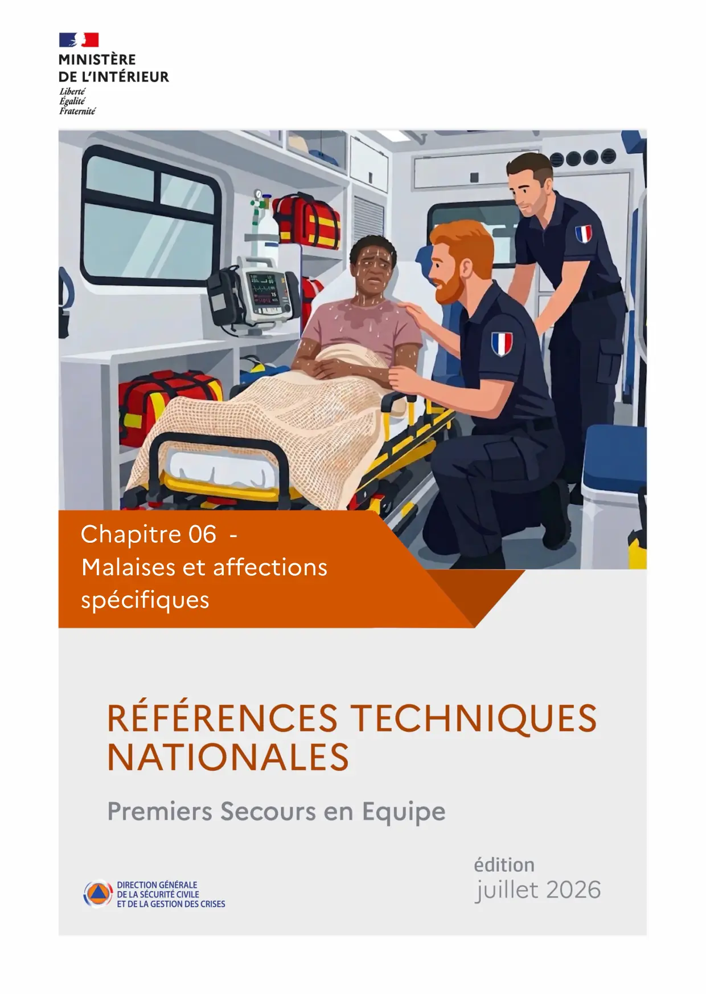
- Malaises et affections
spécifiques
174
[06AC01 / 06-2018] PSE①
Malaise et aggravation de maladie
Définition
Le malaise est une sensation pénible, traduisant un trouble du fonctionnement de l’organisme, sans que la personne qui en est victime puisse en identifier l'origine. Ce trouble peut être fugace ou durable, de survenue brutale ou progressive, ou correspondre à une maladie qui s’aggrave.
Parfois, la victime ne se rend pas compte de son trouble ou ne peut l’exprimer, c’est alors son entourage qui constate une anomalie et qui demande d’intervenir.
Certaines personnes présentent des malaises répétitifs, souvent identiques, typiques d’une maladie (troubles cardiaques, diabète, asthme). On distingue couramment :
le malaise bénin, qui est le plus courant, pour lequel la victime ne montre pas de détresse vitale et dont les signes disparaissent après quelques minutes de repos ;
Ce type de malaise a souvent une cause facilement identifiable :
fatigue et manque de sommeil,
stress, émotion, colère,
douleur violente,
erreurs alimentaires : repas copieux bien arrosé ou jeûne trop prolongé.
le malaise grave, qui peut être révélateur d'une situation pouvant à tout moment entraîner une détresse vitale.
Les manifestations que présente la victime peuvent être caractéristiques d’une maladie potentiellement grave et les signes, intenses et localisés, ne s’améliorent pas spontanément ou se répètent malgré la mise au repos.
Causes
De nombreuses causes peuvent entraîner un malaise ou l’aggravation d’une maladie, telles que :
une modification des conditions de vie : alimentation (jeûne prolongé, excès alimentaire), exercice physique (intense, prolongé, inhabituel), surmenage, fatigue, manque de sommeil, stress, émotions, traitements médicamenteux (prescription récente, modification de posologie, arrêt brutal d’un traitement au long cours) ;
l’expression d’un problème de santé non connu, comme :
un accident vasculaire cérébral ou un traumatisme cérébral accidentel récent,
une hypo ou hyper-tension artérielle,
une hypo ou hyper-glycémie,
une fièvre élevée.
Il ne faut pas confondre un malaise ou une aggravation brutale d’une maladie avec la survenue de signes ou de manifestions qui sont secondaires à :
une exposition à des facteurs thermiques extrêmes induisant :
une hypothermie par exposition accidentelle au froid,
une hyperthermie (coup de chaleur, par exemple).
une exposition à un produit toxique : monoxyde de carbone, drogue, alcool…
Signes
175
La victime est consciente et peut présenter des signes de gravité tels que :
une sensation de froid 1;
une pâleur intense ;
une difficulté à respirer 2;
une paralysie du bras ou de la jambe, même transitoire ;
une difficulté à parler ainsi qu’une déformation de la bouche ;
une température de la peau, en particulier chez le nourrisson et la personne âgée, très élevée ou très basse après une exposition prolongée respectivement à la chaleur ou au froid.
En l’absence de signe de détresse vitale rapidement identifiable, c’est le 4ème regard qui permet de retrouver les signes d’un malaise.
L’analyse de la plainte de la victime permet de mettre en évidence des sensations particulières (symptômes) tels que :
une angoisse, exprimée par des mots, tels que « Je ne me sens pas bien », « je me sens mal », « je vais mourir… » ;
une douleur « dans la poitrine » ou « au ventre », inhabituelle ;
une difficulté à respirer ;
une faiblesse brutale et intense ;
une difficulté à réaliser certains mouvements ;
des troubles visuels ou auditifs ;
une sensation de chaleur ou de froid ;
des nausées, vertiges ;
des maux de tête intenses et récents.
L’interrogatoire permet de retrouver parfois des antécédents médicaux (maladies) ainsi que l’existence d’un traitement à prendre régulièrement ou en cas de malaise.
L’examen de la victime permet de mettre en évidence des signes tels que :
une difficulté d’élocution, une paralysie d’une partie du corps, des troubles de l’orientation dans l’espace (où sommes-nous ?), dans le temps (d’après vous, quelle est la date d’aujourd’hui ?) ;
des tremblements ;
des extrémités bleutées (cyanose) ;
une fréquence cardiaque supérieure à 120 battements par minute ou inférieure à quarante battements par minute ;
une fréquence respiratoire supérieure à vingt mouvements par minute ;
des vomissements, des diarrhées.
Risques & Conséquences
Un malaise grave peut à tout moment évoluer vers une détresse vitale.
Principe de l’action de secours
apprécier la gravité du malaise ou de l’aggravation d’une maladie ;
installer la victime dans une position confortable ;
demander un avis médical.
1 La victime est couverte de sueur, sans avoir fourni d’effort ou sans que la température ambiante en soit la cause.
2 La victime ne peut plus parler ou le fait avec de grandes difficultés.
176
[06PR01 / 07-2026] PSE①
Malaise et aggravation de maladie
Face à une urgence ou une détresse vitale, ou en cas d’aggravation
appliquer la conduite à tenir adaptée et réaliser en priorité les gestes d’urgence qui s’imposent ;
Si la victime est consciente
soustraire la victime aux facteurs1 qui pourraient avoir déclenché la crise ;
installer la victime en position d'attente, confortablement2 et sans délai :
allongée ;
assise en cas de difficultés à respirer ;
sinon, dans la position où elle se sent le mieux.
poursuivre le bilan ;
aider la victime :
à dégrafer ses vêtements, en cas de gêne ;
à sa demande ou à la demande des secours, à prendre :
son traitement prescrit ;
du sucre en morceaux.
rassurer la victime, lui demander de rester calme ;
transmettre les informations recueillies pour avoir un avis médical et appliquer les consignes ;
protéger de la chaleur, du froid ou des intempéries ;
poursuivre le bilan et surveiller attentivement :
l’évolution des signes ;
l’aggravation vers une détresse vitale.
Devant des signes de maladie infectieuse3, appliquer les mesures barrières4, de distance physique et d'isolement ;
Cas particulier, devant un malaise vagal ou orthostatique
appliquer la conduite à tenir devant une victime qui présente un malaise ;
adapter la conduite à tenir avec :
inviter la victime à réaliser des manœuvres physiques si la victime :
déclare faire régulièrement des malaises « vagaux » ;
et présente des signes tels que : étourdissement, nausées, sueurs, sensation de chaleur, points noirs devant les yeux ou sentiment de perte de conscience imminente.
1 Exemple : foule, bruit, etc.
2 Par exemple sur un brancard, un lit, une chaise, ou un canapé, ou à défaut sur le sol.
3 Et plus particulièrement en période épidémique.
4 Exemple : demander à la victime de porter un masque, toutefois, lui proposer de le retirer si cela gêne sa respiration.
177
[06FT01 / 07-2026] PSE①
Positions d’attente et de transport
Indication
La position d’attente et de transport est adaptée à l’état et à la détresse de la victime. Ainsi, on distingue, outre la position latérale de sécurité :
la position à plat dos, horizontale ;
C’est la position d’attente et de transport courante pour toute victime. Elle est particulièrement indiquée si celle-ci présente une détresse circulatoire, nécessite une RCP, ou présente les signes d’un AVC.
La position assise ou demi-assise ;
C’est une position souvent confortable pour les victimes. Elle est particulièrement indiquée si la victime présente une détresse ou une gêne respiratoire pour lui permettre de mieux respirer.
La position allongée sur le côté ;
Cette position facilite le transport des victimes qui présentent des vomissements. Elle est aussi indiquée pour le transport des femmes enceintes dans les derniers mois de la grossesse ou en imminence d’accouchement.
La position cuisses fléchies, jambes repliées.
Elle est indiquée pour les victimes qui présentent une contusion, une plaie grave de l’abdomen ou de violentes douleurs abdominales.
Justification
La position d’une victime, dans l’attente d’un renfort ou pour son transport à l’hôpital, est un des facteurs qui permet de stabiliser ou d’améliorer son état et de rendre plus confortable son attente ou son déplacement.
Matériel
Aucun matériel particulier n’est nécessaire pour installer une victime en position d’attente. Toutefois, le maintien dans cette position est facilité par l’utilisation :
du brancard ;
d’un matelas immobilisateur à dépression ;
de coussins ou couvertures roulées ou repliées.
Réalisation
Position à plat dos, horizontale
Lorsque nécessaire, une victime peut être installée dans cette position, après avoir été retournée si elle était initialement allongée sur le ventre.
178
Position assise ou demi-assise
Cette position peut être obtenue très rapidement en demandant à la victime de s’asseoir dans un fauteuil ou sur une chaise, en l’appuyant contre une paroi verticale (arbre, mur), en glissant des oreillers ou des coussins dans son dos ou en demandant à un secouriste de se placer à genoux, derrière elle.
Cette position peut être maintenue après avoir installé la victime sur le brancard, en relevant la têtière du brancard.
Position sur le côté
La victime peut être mise sur le côté, aussi bien en position allongée que demi-assise.
Cette position est obtenue en demandant à la victime de s’installer sur le côté ou en l’aidant à se placer sur le côté en la roulant au sol.
Cette position peut être maintenue en installant la victime sur un matelas immobilisateur à dépression ou sur un brancard.
Position jambes fléchies
Cette position est obtenue :
en demandant à la victime consciente de maintenir ses membres inférieurs fléchis ;
en glissant des coussins ou une couverture repliée sous les genoux de la victime.
Si le brancard le permet, cette position est maintenue en relevant les parties intermédiaires du brancard au niveau des membres inférieurs.
Risques
La mise en position d’attente comporte certains risques parce qu’elle nécessite parfois de mobiliser une victime traumatisée.
Évaluation
La position d’attente choisie est adaptée à l’état ou à la détresse de la victime.
La victime est installée confortablement et la position est stable.
179
[06FT02 / 07-2026] PSE①
Aide à la prise de médicaments
Indication
L’administration d’un médicament à une victime est indiquée si elle le demande, car il lui a été prescrit, ou à la demande du médecin régulateur.
Dans certaines situations, le médecin régulateur peut demander l’administration d’un médicament à une victime, même en l’absence de signes de détresse, mais pour la prévenir.
Justification
Certains médicaments ont un effet rapide et très efficace sur des malaises ou l’aggravation brutale d’une maladie.
Leur administration permet de :
améliorer l’état de la victime qui présente une détresse respiratoire ou circulatoire ;
soulager, diminuer ou faire disparaître une douleur qui est apparue au moment du malaise ou du traumatisme, ou qui vient de s’aggraver.
Matériel
Les médicaments administrés dans ce cadre le sont par injection, par inhalation, par pulvérisation nasale, par ingestion (voie orale), déposés sous la langue (voie sublinguale) ou déposés sur la langue (voie buccale). Ils sont sous forme :
d’un gaz (ex. oxygène) ;
de spray buccal, parfois administré par l’intermédiaire d’une chambre de mélange (ou chambre d’inhalation) ;
de spray nasal (ex. naloxone en spray) ;
de comprimés ;
de dispositif auto injectable (DAI) (ex. DAI d’adrénaline).
Réalisation
Dans tous les cas
S’assurer de la prescription médicale ;
Vérifier la date de péremption du produit.
Administration d’un médicament par voie sublinguale ou buccale
s’assurer que la victime ne présente aucun trouble de la conscience ;
demander à la victime d’ouvrir la bouche ;
déposer le comprimé ou réaliser une pulvérisation de produit sous la langue si l’administration est sublinguale ou sur la langue si l’administration est buccale ;
demander à la victime de fermer la bouche et de ne pas avaler.
180
Administration d’un médicament par voie orale
s’assurer que la victime ne présente aucun trouble de la conscience et est capable d’avaler ;
demander à la victime d’ouvrir la bouche et de tirer la langue ;
déposer le comprimé sur la langue de la victime si elle ne peut le faire elle-même ;
demander à la victime d’avaler le comprimé avec un peu d’eau.
Administration d’un médicament à l’aide d’un spray buccal
suivre les instructions du fabricant, généralement :
secouer vigoureusement le pulvérisateur plusieurs fois ;
mettre en place le pulvérisateur au niveau de la chambre de mélange (ou d’inhalation)1 si nécessaire ;
enlever l’administration d’oxygène, si nécessaire ;
demander à la victime de vider autant que possible l’air contenu dans ses poumons ;
mettre les lèvres de la victime tout autour de l’embout buccal du pulvérisateur ;
demander à la victime de comprimer le pulvérisateur tout en inspirant lentement par la bouche, profondément et le plus longtemps possible ;
demander à la victime de retenir sa respiration pendant 10 secondes avant de respirer de nouveau normalement ;
replacer le masque à inhalation d’oxygène, si nécessaire.
Administration d’un médicament à l’aide d’un dispositif auto-injectable
Après vérification de la limpidité de la solution, l’injection avec un DAI est réalisée par voie intramusculaire sur la face externe de la cuisse ou à défaut dans le deltoïde (face externe de l’extrémité proximale du bras).
suivre les instructions du fabricant, généralement :
retirer les dispositifs de protection du DAI ;
placer l’extrémité du DAI (coté seringue) contre la face externe de la cuisse de la victime, à égale distance de la hanche et du genou ou contre le deltoïde (en cas d’urgence, l’injection peut être faite au travers du tissu d’un vêtement si celui-ci n’est pas très épais) ;
maintenir fermement le DAI perpendiculairement contre la face externe de la cuisse ou contre le deltoïde ;
presser le bouton déclencheur ou avec un mouvement de balancement, pousser fermement l’extrémité du dispositif jusqu’à ce que l’on entende un déclic qui confirme le début de l’injection ;
maintenir le dispositif en place pendant quelques secondes avant de le retirer, conformément aux indications du fabricant ;
masser légèrement le site d’injection pendant quelques secondes ;
éliminer le dispositif injecteur dans un conteneur de recueil de DASRI.
Administration d’un médicament à l’aide d’un spray nasal
suivre les instructions du fabricant, généralement :
se munir du ou des pulvérisateurs2 ;
tenir le pulvérisateur délicatement entre les doigts et le pouce sans appuyer sur le piston ;
1 L’utilisation d’une chambre de mélange (ou d’inhalation) lors de l’administration d’un médicament par inhalation permet d’augmenter l’efficacité de celui-ci et est recommandée. De même, une inspiration longue lors de l’inhalation permet d’augmenter l’absorption du médicament.
2 Le médicament peut être composé de deux pulvérisateurs, un pour chaque narine.
181
placer l’embout du pulvérisateur complètement dans la narine de la victime en direction de la paroi nasale, à l’opposé de la cloison ;
appuyer fermement sur le piston pour délivrer le médicament ;
renouveler cette opération dans l’autre narine si indiqué ;
observer les réactions de la victime.
Risques & Contraintes
Avant toute utilisation d’un médicament, il convient de s’assurer que celui-ci n’est pas périmé. La date de péremption est clairement inscrite sur la boîte ou le flacon du médicament. En son absence ou si elle est dépassée, le médicament ne doit pas être administré.
L’administration d’un médicament peut entraîner des effets secondaires dont l’apparition impose la transmission d’un nouveau bilan pour avis médical.
Toute administration de médicament ainsi que les réactions de la victime à cette administration doivent être relevées et notifiées sur la fiche d’intervention, en particulier son heure d’administration.
Les DAI possèdent une fenêtre qui permet de contrôler la limpidité de la solution. Si la solution est trouble, colorée ou contient des particules, le dispositif ne devra pas être utilisé.
Les DAI sont équipés d’un système de protection de l’aiguille. Toutefois, si le secouriste se pique avec l’aiguille qui a servi à l’injection, il appliquera la procédure spécifique « accident d’exposition à un risque viral ».
Évaluation
L’administration du médicament est conforme à la prescription médicale. L’administration du médicament améliore l’état de la victime.
182
[06FT03 / 11/2021] PSE①
Manœuvres physiques
Indication
Les manœuvres physiques sont des mesures qui doivent être réalisées dès que la victime reconnait des signes annonciateurs d’une perte de connaissance imminente d’origine vagale ou orthostatique.
Justification
En agissant sur la circulation, les manœuvres physiques ont pour but de créer une contre-pression vasculaire destinée à augmenter la pression artérielle de la victime. Elles permettent ainsi d’éviter la survenue d’une perte de connaissance et de lésions traumatiques secondaires à une chute.
Réalisation
Les manœuvres physiques doivent être réalisées par la victime elle-même. Si la victime ne connaît pas ces manœuvres, le sauveteur lui expliquera comment les réaliser si possible.
Les manœuvres ne remplacent pas la mise en position de confort de la victime notamment la position allongée. Cependant, si le sauveteur (ou la victime elle-même) est dans l’impossibilité immédiate d’allonger la victime (malaise dans un bus, un avion, le train), les manœuvres physiques peuvent précéder la mise en position allongée.
L'accroupissement (peut être un préalable à la mise en position allongée)
Se placer en position accroupie.
Baisser la tête comme pour la mettre entre les deux genoux.
Croisement des membres inférieurs
La victime peut être en position allongée ou debout en prenant appui contre un mur :
Croiser les membres inférieurs.
Contracter les muscles en essayant de tendre les jambes.
Serrer les fesses.
Contracter la ceinture abdominale.
Crochetage des doigts et tension des muscles des membres supérieurs
Agripper les deux mains par les doigts en crochets.
Écarter les coudes de la poitrine au maximum.
Contracter les deux membres supérieurs en tirant comme pour essayer de séparer les deux mains.
NB : Le croisement des membres inférieurs à une efficacité supérieure aux deux autres techniques.
Évaluation
Les manœuvres physiques sont réalisées par la victime dès l’apparition des premiers signes de malaise, et poursuivis après la mise au repos.
183
[06AC02 / 06-2018] PSE②
Douleur thoracique (non traumatique)
Définition
La douleur thoracique est un signe perçu par une victime qui apparaît de manière aiguë, au repos, ou au cours d’un effort, et siégeant au niveau du thorax.
Causes
Plusieurs causes dont certaines sont plus graves que d'autres peuvent engendrer des douleurs :
au niveau du cœur, lors d’une occlusion d’une artère coronaire, ou lors d’une inflammation de l’enveloppe du cœur (péricarde) ou lors d’une fissuration de l’aorte ;
au niveau d’un poumon lors d’une infection, lors d’un décollement (pneumothorax) ou inflammation de l’enveloppe du poumon (plèvre) ou lors d’une occlusion d’une artère pulmonaire (embolie pulmonaire) ;
au niveau du tube digestif lors du reflux de liquide gastrique dans l'œsophage ;
au niveau de la paroi thoracique (névralgie).
Une crise d’angoisse peut aussi s’accompagner d’une douleur thoracique.
Certaines de ces causes imposent une prise en charge spécifique et urgente dont notamment son orientation vers une filière de soins adaptés à la maladie.
Risques & Conséquences
Certaines causes de douleurs thoraciques peuvent conduire à l’atteinte d’une fonction vitale :
l’occlusion d’une artère coronaire conduit à un infarctus qui peut se compliquer d'un trouble du rythme cardiaque (fibrillation ventriculaire) et d'un arrêt cardiaque ;
la fissuration de l'aorte peut entraîner une hémorragie interne ;
l'occlusion d’une artère pulmonaire peut entraîner un arrêt cardiaque si elle est massive et touche un gros vaisseau ;
les atteintes d’un poumon peuvent évoluer vers une détresse respiratoire.
Signes
La douleur est au premier plan.
Elle peut débuter spontanément au repos ou pendant ou après un effort. Elle peut aussi survenir dans des circonstances spécifiques et orienter vers une cause : descente d'avion, alitement prolongé, immobilisation avec plâtre, après un accouchement.
Elle peut être accompagnée de signes de détresse détectés lors du 2ème regard qui traduisent la gravité de la situation.
Au 4ème regard, l'analyse de la douleur peut elle aussi orienter vers une maladie. La douleur peut être « en étau » ou « en coup de poignard », comme une déchirure, un poids sur le thorax ou une brûlure ou augmenter avec les mouvements ventilatoires.
Il appartient de préciser le siège de la douleur et son irradiation : douleur au centre de la poitrine ou latéralement ou dans le dos. Cette douleur peut s’étendre au cou, à la mâchoire, aux épaules, voire aux bras ou au creux de l'estomac. Sa sévérité est précisée grâce à l'échelle de douleur.
184
L’évolution dans le temps est un élément précieux : installation brutale ou progressive, douleur continue ou intermittente. La durée de la douleur doit être précisée.
D’autres signes peuvent accompagner la douleur, et être identifiés lors du 3ème regard, du 4ème regard ou lors de la surveillance de la victime. Ils témoignent de la gravité de la maladie comme :
malaise avec pâleur et sueurs ;
nausées voire vomissements ;
signes de détresse vitale.
Lors de l’interrogatoire de la victime et de son entourage, il est possible d’apprendre que celle-ci :
a déjà présenté un épisode similaire, a été hospitalisée ;
a déjà des antécédents cardio-vasculaires (angine de poitrine, infarctus) ou pulmonaires (embolie pulmonaire, phlébites) ;
présente des facteurs de risques spécifiques comme : tabagisme, tabagisme avec contraceptifs oraux, obésité, diabète, hypertension, hypercholestérolémie ;
a des antécédents similaires chez les membres de sa famille.
Principe de l’action de secours
préserver les fonctions vitales ;
installer la victime dans la position la mieux tolérée ;
s’assurer qu’un défibrillateur est à proximité ;
demander un avis médical ;
aider la victime à prendre un traitement médicamenteux si nécessaire.
185
[06PR02 / 07-2026] PSE②
Douleur thoracique (non traumatique)
Face à une urgence ou une détresse vitale, ou en cas d’aggravation
appliquer la conduite à tenir adaptée et réaliser en priorité les gestes d’urgence qui s’imposent ;
Face à une douleur thoracique sans signe évident de détresse
appliquer la conduite à tenir devant une victime qui présente un malaise ;
adapter la conduite à tenir avec :
réaliser un électrocardiogramme.
186
[06AC03 / 06-2018] PSE②
Accident vasculaire cérébral
Définition
L’accident vasculaire cérébral (AVC), parfois appelé attaque cérébrale, est un déficit neurologique soudain d’origine vasculaire (la circulation sanguine d’une partie du cerveau est interrompue).
Le terme « accident » est utilisé pour souligner l’aspect soudain, voire brutal, d’apparition des signes ou des manifestations, bien qu’en fait ce soit effectivement une maladie dont les causes sont de nature interne.
Causes
L’AVC peut être causé par :
une obstruction d’une artère cérébrale (infarctus cérébral) par un spasme d’une artère, une plaque d’athérome (thrombose cérébrale) ou un caillot de sang venu obstruer l’artère (embolie cérébrale) ; Cette cause est la plus fréquente (85 %) et peut bénéficier de nouveaux traitements très efficaces s’ils sont administrés précocement (2 à 3 heures après le début des signes).
une hémorragie cérébrale due le plus souvent à la rupture d’un vaisseau sanguin (victime hypertendue) ou d’une malformation vasculaire (anévrisme par exemple).
Les tumeurs et divers troubles de la coagulation peuvent eux aussi entraîner une hémorragie cérébrale.
On parle d’accident ischémique transitoire (AIT) lorsque l’obstruction de l’artère cérébrale se résorbe d’elle-même spontanément avec une disparition plus ou moins rapide des signes en fonction de la durée de l’obstruction.
Les signes sont les mêmes que l’AVC, mais ils durent de quelques secondes à quelques minutes, jamais plus d’une heure, avant le retour à la normale.
L’AIT peut passer inaperçu et être confondu avec un simple malaise. L’AIT est un signe d’alarme, peut annoncer la survenue d’un AVC constitué et présente les mêmes risques.
Risques & Conséquences
L'AVC entraîne une diminution voire un arrêt brutal d’une partie de la circulation sanguine cérébrale. Le trouble neurologique induit par l’AVC est fonction de la taille et de la localisation du vaisseau sanguin touché.
L’interruption de la circulation entraîne une ischémie des cellules nerveuses et les privent soudainement d'oxygène et de sucre, ce qui provoque en quelques minutes leur détérioration puis leur mort.
Dans le cas d’hémorragie, en plus de l’atteinte vasculaire, l’écoulement du sang (hématome) dans l’espace situé entre et autour des méninges et du cerveau comprime les cellules nerveuses et est responsable de signes neurologiques plus ou moins graves en fonction de l’importance de l’hémorragie.
L'AVC est une maladie grave, aux conséquences toujours dramatiques avec un risque de décès ou de survenue de lourdes séquelles. L’AVC est la 1ère cause de handicap chez l’adulte et la 3ème cause de mortalité.
Signes
L’AVC peut être évoqué au cours du 2ème regard, par la survenue le plus souvent brutalement :
d’une perte de connaissance ou d’un trouble de la conscience ;
d’un déficit moteur touchant toute une moitié du corps (droit ou gauche).
Au cours du 3ème ou 4ème regard, la victime consciente peut présenter un ou plusieurs des signes spécifiques suivants :
187
une déformation de la bouche : la victime présente une asymétrie de la face qui est encore plus évidente si on lui demande de faire la grimace ;
une faiblesse ou un engourdissement d’un ou des deux côtés du corps : lorsqu’on demande à la victime de lever et d'étendre les deux bras et les mains devant elle, l’un des bras et/ou la main (ou les deux) ne peuvent être levés ou ne peuvent rester en position et retombent plus ou moins vite ;
une difficulté du langage ou de la compréhension : lorsqu’on demande à la victime de répéter une phrase, elle a des difficultés à parler ou à comprendre.
Ces trois signes doivent être systématiquement recherchés. Ils sont communément appelés FAST.
Ils peuvent aussi être accompagnés :
d’une diminution ou une perte de la vision d’un œil ou des deux ;
d’un mal de tête important, soudain et inhabituel, sans cause apparente ;
d’une perte de l’équilibre, d’une instabilité à la marche ou de la survenue de chutes inexpliquées.
Même si tous les signes sont passagers et résolutifs, ils doivent être scrupuleusement recherchés, car la gravité de l’affection et la conduite à tenir restent les mêmes.
Devant ces signes, le secouriste recherchera ou fera préciser à l’interrogatoire de la victime ou de la famille :
l’heure où les signes sont apparus et l’heure où la victime a été vue pour la dernière fois sans signes ;
l’existence de signes neurologiques identiques dans les 24 heures précédentes ;
des antécédents de crise convulsive ;
la présence de fièvre ;
l’état de validité de la victime : est-ce que la victime est habituellement autonome ou grabataire ? (fauteuil roulant ou alité) ;
la présence de facteurs de risques :
hypertension artérielle et maladie cardio-vasculaire,
diabète ou hypercholestérolémie,
obésité, tabagisme,
un traitement anticoagulant.
des antécédents particuliers dont la connaissance est nécessaire à la prise en charge de la victime en secteur spécialisé :
une chirurgie récente,
si le malade est porteur d’un stimulateur cardiaque ou présente une contre-indication à la réalisation d'une IRM.
Au cours du 4ème regard, il est indispensable de réaliser une mesure de la glycémie capillaire. En effet, une hypoglycémie peut simuler un AVC et donner un ou plusieurs signes indiqués ci-dessus. Il est donc indispensable de rechercher et de corriger une hypoglycémie avant d’affirmer être en présence de signes d’AVC.
Principe de l’action de secours
demander un avis médical immédiat et respecter les consignes ;
installer la victime en position d’attente ;
surveiller la victime et réaliser les gestes de secours qui s’imposent.
188
[06PR03 / 07-2026] PSE②
Accident vasculaire cérébral
Face à une urgence ou une détresse vitale, ou en cas d’aggravation
appliquer la conduite à tenir adaptée et réaliser en priorité les gestes d’urgence qui s’imposent ;
La victime est consciente et présente des signes d’AVC ou d’AIT
appliquer la conduite à tenir devant une victime qui présente un malaise ;
adapter le conduite à tenir avec :
installer la victime :
en position strictement horizontale à plat ;
ou en position latérale de sécurité1 si elle présente des nausées et des vomissements ;
lors du 4ème regard :
réaliser une mesure de la glycémie capillaire ;
rechercher les éléments spécifiques de l'AVC, les signes, les facteurs de risque et antécédents particuliers ou nécessaires à la prise en charge.
transmettre le bilan pour obtenir un avis médical2 et respecter les consignes ;
poursuivre le bilan et surveiller attentivement :
l’évolution des signes d’AVC,
la conscience,
la respiration.
Transport
maintenir la victime dans la position initiale pendant son transport.
Les victimes d’AVC sont idéalement acheminées vers un centre spécialisé « Unité de soins intensifs neurologiques » ou « unité neuro-vasculaire ». La prise en charge précoce des victimes d’AVC permet d’obtenir des bénéfices réels par rapport à une prise en charge conventionnelle avec un risque de mortalité et de séquelles réduit.
1 Près des 2/3 des victimes qui présentent un AVC présentent des troubles de la déglutition associés.
2 Le médecin régulateur peut vous demander de rechercher d'autres signes spécifiques ou vous mettre en relation avec un neurologue pour récolter les éléments nécessaires à une hospitalisation en unité neuro-vasculaire.
189
[06AC04 / 06-2018]
Crise convulsive généralisée
Définition
La crise convulsive généralisée est une perturbation de l’activité électrique cérébrale qui se traduit extérieurement par une perte de connaissance et/ou un regard fixe accompagné de mouvements musculaires incontrôlés de tout le corps (convulsion généralisée). Ces manifestations sont appelées des convulsions.
Causes
Les crises convulsives peuvent avoir de nombreuses causes dont :
le traumatisme crânien ou ses séquelles ;
certaines maladies entraînant des lésions cérébrales (infections, tumeurs, AVC) ;
l’absorption de certains poisons ou toxiques ;
l’hypoglycémie ;
le manque d’oxygène au niveau du cerveau particulièrement dans les premières secondes d’un arrêt cardiaque ;
une maladie appelée « épilepsie » caractérisée par des crises convulsives récidivantes qui est habituellement contrôlée par des médicaments.
Les enfants, plus particulièrement les nourrissons, peuvent présenter des convulsions provoquées par une variation soudaine de la température (fièvre).
Risques & Conséquences
La survenue d’une crise convulsive peut être à l’origine :
de traumatismes au moment de la chute ou des mouvements incontrôlés ;
d’une obstruction des voies aériennes chez une victime sans connaissance si elle est laissée sur le dos ou si elle vomit (détresse respiratoire).
Signes
La crise convulsive peut être précédée de signes annonciateurs. La victime peut éprouver une sensation ou une impression inhabituelle (telle qu’une hallucination visuelle ou olfactive).
Lorsqu’elle survient, la crise convulsive généralisée est facilement identifiable au cours du 2ème regard. Elle se caractérise :
dans un premier temps, par la survenue d’une perte brutale de connaissance avec chute de la victime ;
ensuite, par une raideur de la victime et des secousses musculaires involontaires, rythmées, touchant un ou plusieurs membres, accompagnées d’une révulsion des globes oculaires, d’une respiration irrégulière ou absente, d’une hypersalivation et d’une contracture des muscles de la mâchoire ;
Cette phase dure en règle générale moins de cinq minutes, période pendant laquelle la victime peut se mordre la langue.
enfin, après les secousses, la victime reste sans connaissance plusieurs minutes. Sa respiration peut être bruyante. Elle peut aussi perdre ses urines, plus rarement ses selles.
190
Lors de la reprise progressive de sa conscience, la victime peut être hébétée, le regard fixe ou se comporter de manière étrange et ne se souvient de rien (amnésie des circonstances).
Dans certains cas, elle peut enchaîner plusieurs crises convulsives avec ou sans reprise de conscience entre les crises. C’est l’état de mal convulsif qui nécessite une prise en charge médicale urgente.
Chez le nourrisson, la crise convulsive est habituellement provoquée par la fièvre lors d’une maladie infectieuse ou d’une exposition exagérée à la chaleur. Elle s’accompagne :
d’une révulsion oculaire ;
d’une hypotonie ;
d’un tremblement des paupières ;
d’une pâleur ou d’une cyanose, en cas d’arrêt de la respiration.
Principe de l’action de secours
éviter que la victime ne se blesse ;
éviter l’apparition d’une détresse respiratoire.
191
[06PR04 / 07-2026]
Crise convulsive généralisée
Chez l’adulte ou l’enfant
Au début de la crise
Pendant la crise
A la fin des convulsions
allonger la victime au sol1 ;
écarter les personnes qui sont autour.
protéger la tête de la victime en glissant si possible un vêtement ou un tissu plié sous sa tête, sans recouvrir les voies aériennes ;
écarter tout objet qui pourrait être traumatisant ;
ne rien2 placer entre les dents ou dans la bouche de la victime.
s’assurer que les voies aériennes de la victime sont libres et vérifier sa respiration ;
appliquer la conduite à tenir adaptée et réaliser en priorité les gestes d’urgence qui s’imposent ;
lorsque la victime redevient consciente, la garder au calme et la rassurer ;
réaliser une mesure de la glycémie capillaire.
Dans tous les cas
ne jamais contraindre les mouvements de la victime durant toute la crise ;
noter l’heure de survenue et la durée de la crise ;
poursuivre le bilan, rechercher d’éventuels signes de traumatisme ;
transmettre un bilan et appliquer les consignes ;
surveiller la victime jusqu’à ce qu’elle retrouve un état normal de conscience.
Chez le nourrisson
La prise en charge est identique à celle de l’adulte, mais il faut en plus :
prendre la température de l’enfant ;
procéder à un refroidissement actif ;
transmettre un bilan, systématiquement.
1 Si elle n’est pas déjà dans cette position pour éviter qu’elle ne se blesse en chutant.
2 Elle n’avalera pas sa langue.
192
[06AC05 / 07-2026]
Crise d’asthme
Définition
La crise d’asthme est une détresse respiratoire provoquée par une inflammation et une contraction des fibres musculaires lisses des bronchioles (petites bronches) qui entraîne un rétrécissement brutal de leur calibre.
L’asthme est une maladie respiratoire chronique qui touche un très grand nombre de personnes de tout âge. Sa fréquence est en augmentation, particulièrement dans les zones urbaines et industrialisées.
Les asthmatiques ont souvent avec eux des médicaments sous forme d’aérosol doseur (spray) qu’ils utilisent en cas de crise pour la faire cesser. Ces médicaments entraînent une dilatation des petites bronches et facilitent la respiration.
Causes
Chez les personnes asthmatiques, une crise peut être déclenchée par trois grands types de facteurs :
Les facteurs environnementaux : allergènes (poils d'animaux, pollen), fumée, pollution, gaz irritants et variations climatiques.
Les facteurs physiques et médicaux : effort physique, infections respiratoires et prise de certains médicaments comme l'aspirine.
Les facteurs émotionnels : stress, anxiété ou angoisse.
Les personnes qui souffrent d’asthme peuvent diminuer la survenue de crises en contrôlant leur environnement et en limitant le risque d’exposition aux facteurs déclenchant la crise d’asthme.
Risques & Conséquences
La crise d’asthme rend la respiration difficile et entraîne une détresse respiratoire. Quand la crise survient, la victime peut utiliser des médicaments. Les médicaments de l’asthme relaxent les fibres musculaires lisses des bronchioles et permettent à l’air de circuler jusqu’aux alvéoles. Ceci rend la respiration de la victime plus facile.
Signes
La crise survient généralement chez une personne connue pour être asthmatique.
Forme légère : gêne respiratoire modérée, sans modification notable de la fréquence respiratoire.
Forme grave : on constate dès le 2ème regard que la victime est consciente mais très angoissée et agitée. Elle se plaint de respirer difficilement, refuse de s'allonger et ne peut pas parler. Un sifflement à l'expiration est audible. Ces signes traduisent une détresse respiratoire.
Sans prise en charge rapide, la victime peut perdre connaissance et présenter un arrêt cardiaque.
Principe de l’action de secours
faciliter la respiration de la victime ;
aider la victime à prendre son traitement ;
demander un avis médical, dans tous les cas.
193
[06PR05 / 07-2026]
Crise d’asthme
Face à une urgence ou une détresse vitale, ou en cas d’aggravation
appliquer la conduite à tenir adaptée et réaliser en priorité les gestes d’urgence qui s’imposent ;
La victime est consciente et présente des signes d’une crise d’asthme
appliquer la conduite à tenir devant une victime qui présente un malaise ;
adapter le conduite à tenir avec :
soustraire la victime aux facteurs qui pourraient avoir déclenché la crise1 ;
administrer de l’oxygène en inhalation si nécessaire ;
poursuivre le bilan et surveiller attentivement sa respiration.
Transport
maintenir la victime dans la position initiale pendant son transport.
1 Atmosphère enfumée, polluée, poussière.
194
[06AC06 / 07-2026]
Malaise hypoglycémique chez le diabétique
Définition
Comme l’oxygène, le sucre est essentiel au fonctionnement de l’organisme et notamment du cerveau. L’organisme produit une hormone appelée « insuline » qui intervient dans le transport et la pénétration du sucre dans les tissus.
Le diabète est une maladie au cours de laquelle l’organisme, par manque de production de cette hormone, n’arrive pas à réguler le passage et l’utilisation du sucre qui est transporté par le sang vers les tissus du corps et qui s’accumule dans le sang.
Les diabétiques doivent surveiller attentivement la quantité de sucre présente dans leur sang. Ils utilisent un lecteur de glycémie qui permet, à partir d’une goutte de sang prélevée au niveau du doigt, de mesurer et de surveiller le taux de sucre dans le sang. Un régime alimentaire adapté et un traitement médical régulier leur permettent de réguler l’utilisation du sucre par l’organisme.
Un apport insuffisant de sucre ou un excès de traitement peuvent entraîner un manque grave de sucre à l’origine d’un malaise : c’est « l’hypoglycémie ».
La plupart des diabétiques connaissent ce risque et ont sur eux un morceau de sucre qu’ils doivent prendre immédiatement en cas de malaise pour faire remonter le taux de sucre rapidement. Cependant, la survenue du malaise est parfois très brutale.
Causes
Les malaises par manque de sucre sont fréquents chez le diabétique et sont facilités par :
une alimentation inadaptée ;
un exercice physique inhabituel ;
l’excès de traitement ;
la déshydratation ;
la fièvre…
NB : D’autres malaises d’origine et causes différentes peuvent se rencontrer chez une personne atteinte de diabète. De même, un malaise lié à une hypoglycémie peut se rencontrer chez des personnes qui ne sont pas diabétiques (malaise à l’effort, à jeun).
Risques & Conséquences
Lorsque le taux de sucre diminue, le fonctionnement du cerveau et de tout l’organisme est rapidement altéré. L’hypoglycémie peut déclencher des complications soudaines et potentiellement mortelles comme des convulsions ou une perte de connaissance (détresse neurologique). Il n’en est pas de même pour l’hyperglycémie qui évolue en règle générale progressivement, sans signes visibles sur une période de plusieurs heures ou plusieurs jours et qui fait rarement l’objet d’un recours à des services de secours d’urgence.
195
Signes
Les signes d’hypoglycémie peuvent être constatés chez une personne connue comme étant diabétique dès le 2ème regard. La victime peut présenter :
une perte de connaissance ;
des convulsions généralisées ;
un trouble du comportement (prostration, agitation, agressivité, signes d’ébriété sans consommation d’alcool) ;
des sueurs abondantes ;
une pâleur.
Dans certains cas, la victime présente des signes qui peuvent faire évoquer un accident vasculaire cérébral.
Lors du 4ème regard, la victime peut se plaindre :
d’avoir faim ;
d’être très fatiguée et d’avoir mal à la tête ;
de sentir son cœur battre rapidement ;
de tremblements.
Mesure de la glycémie capillaire
Lors de l’interrogatoire de la victime ou de son entourage, il est possible d’apprendre que celle-ci est diabétique.
Dans ce cas, devant un malaise chez un diabétique, un test de dépistage d’une hypoglycémie peut être réalisé en utilisant un appareil de mesure de la glycémie capillaire, le glucomètre.
Le résultat instantané de cette mesure permet à l’équipe de secours de transmettre cette information lors du bilan au médecin régulateur pour l’aider dans l’évaluation de la situation et des suites à donner.
Lors du transfert de la valeur de la mesure, il est essentiel d’indiquer l’unité de mesure de la glycémie utilisée par l’appareil : millimoles par litre (mmol/l), milligrammes par décilitre (mg/dl) ou grammes par litre (g/l). En fonction de l’unité, le chiffre est totalement différent.
On considère qu’une victime est en hypoglycémie si la valeur mesurée de la glycémie est < 3,3 mmol/l (ou < 60 mg/dl ou < 0,6 g/l).
Principe de l’action de secours
préserver la respiration tout en maintenant la liberté des voies aériennes, si la victime a perdu connaissance ;
aider la victime à faire remonter le taux de sucre dans son sang, si elle est consciente ;
demander un avis médical, dans tous les cas.
196
[06PR06 / 07-2026]
Malaise hypoglycémique chez le diabétique
Face à une urgence ou une détresse vitale, ou en cas d’aggravation
appliquer la conduite à tenir adaptée et réaliser en priorité les gestes d’urgence qui s’imposent ;
Après avoir pris en charge la victime qui a perdu connaissance et respire
réaliser une mesure de glycémie capillaire lors du 4ème regard si le matériel est disponible.
demander un avis médical en indiquant le résultat de la mesure de glycémie.
Si la victime est consciente
appliquer la conduite à tenir devant une victime qui présente un malaise ;
adapter la conduite à tenir avec :
réaliser une mesure de glycémie capillaire lors du 4ème regard si le matériel est disponible ;
Si la victime est réveillée, réactive, et capable d’avaler, et que :
la mesure de la glycémie est < 3,3 mmol/l (ou < 60 mg/dl ou < 0,6 g/l) ;
ou l’origine du malaise est inconnue :
aider la victime à prendre :
de préférence du sucre en morceaux ou en poudre
adulte : 4 morceaux ou cuillères à café de sucre ;
enfants : 2 à 3 morceaux ou cuillères à café de sucre ;
sinon :
une boisson sucrée comme un jus d’orange ou du miel,
des bonbons contenant du sucrose.
demander un avis médical en indiquant le résultat de la mesure de glycémie :
si son état ne s’améliore pas rapidement,
en cas de doute.
surveiller1 la victime :
si aucune amélioration ne survient au bout de 15 minutes suite à une ingestion de sucre, une seconde dose de sucre peut être prise.
1 Il faut compter environ 10 à 15 minutes entre l’ingestion du sucre, une élévation de la glycémie et une amélioration des signes.
197
[06AC07 / 11-2021]
Réaction allergique grave
Définition
L’allergie est une réaction de l’organisme à une substance étrangère ou allergène que l’individu touche, inhale, avale ou qui lui est administrée.
Si les réactions allergiques sont relativement courantes et bénignes, elles peuvent dans certains cas donner une réaction généralisée sévère qui met en jeu le pronostic vital. Il s’agit alors d’une réaction allergique grave appelée « réaction anaphylactique » ou « anaphylaxie ».
Causes
L’anaphylaxie est une réaction d’hypersensibilité allergique lorsqu’une personne sensible est en contact avec l’allergène. Les allergènes les plus connus sont souvent contenus dans : les pollens, les aliments, les produits chimiques, les médicaments, les venins.
Risques & Conséquences
L’anaphylaxie se caractérise par l’apparition brutale d’une atteinte des voies aériennes supérieures ou inférieures, ou d’une atteinte cardiovasculaire qui peut évoluer très rapidement vers un arrêt cardiaque et le décès de la victime.
Signes
L’anaphylaxie peut survenir quelques minutes à quelques heures après l’exposition à un allergène (facteur déclenchant), chez une personne qui connaît son allergie ou qui présente ces signes pour la première fois.
Lors du 2ème ou 3ème regard, elle se caractérise par des signes de détresse respiratoire : atteinte des voies aériennes inférieures (souffle court, sifflement expiratoire) ou obstruction des voies supérieures par œdème de Quincke (gonflement de la peau, de la gorge, du visage, de la bouche, des lèvres, de la langue, qui entraîne une voix rauque).
Elle peut aussi prendre la forme d’une détresse circulatoire : accélération de la fréquence cardiaque, pouls radial faible et chute de la pression artérielle. Sans prise en charge rapide, la victime peut perdre connaissance et présenter un arrêt cardiaque.
Lors du 4ème regard, ces signes de détresse s'accompagnent souvent d'une atteinte cutanéomuqueuse (plaques rouges sur la peau généralisées et démangeaisons) et de troubles digestifs (douleurs abdominales, diarrhées, vomissements).
Il est essentiel pour le secouriste de reconnaître ces signes et de savoir les rechercher. Ces manifestations peuvent être isolées, associées ou annoncer une aggravation.
Principe de l’action de secours
reconnaître les signes de la réaction allergique grave ;
soustraire la victime au facteur déclenchant ;
administrer, à la demande de la victime ou du médecin régulateur, un médicament si nécessaire ;
réaliser les gestes de secours qui s’imposent.
198
[06PR07 / 07-2026]
Réaction allergique grave
Face à une urgence ou une détresse vitale, ou en cas d’aggravation
appliquer la conduite à tenir adaptée et réaliser en priorité les gestes d’urgence qui s’imposent ;
Face à une réaction allergique grave avec signes de détresse1
appliquer la conduite à tenir devant une victime qui présente un malaise ;
adapter la conduite à tenir avec :
éliminer tout contact2 de la victime avec l’allergène si possible et si l’allergène est connu.
si la victime possède un traitement3 pour lutter contre les réactions allergiques graves :
administrer à la demande de la victime ou du médecin régulateur le traitement prescrit,
demander un avis médical immédiatement et appliquer les consignes,
surveiller la victime.
En l’absence d’amélioration ou en cas de récidive dans les 5 minutes qui suivent la première injection, une deuxième injection à l’aide de l’auto-injecteur peut être réalisée. Si possible, demander un nouvel avis au médecin régulateur.
Face à une réaction allergique simple sans signes de détresse
appliquer la conduite à tenir devant une victime qui présente un malaise ;
adapter la conduite à tenir avec :
demander un avis médical et respecter les consignes : le médecin régulateur peut, même en l’absence de détresse vitale, demander qu’une auto-injection d’adrénaline soit réalisée.
1 Détresse respiratoire : souffle court, sifflements à l’expiration, œdèmes des voies respiratoires, gonflement, voix rauque. Détresse circulatoire : chute de la tension artérielle, pouls rapide et difficile à percevoir, fréquence cardiaque s’accélère.
2 Par exemple, supprimer le contact avec du latex si la victime est allergique au latex.
3Auto-injecteur d’adrénaline - AIA
199
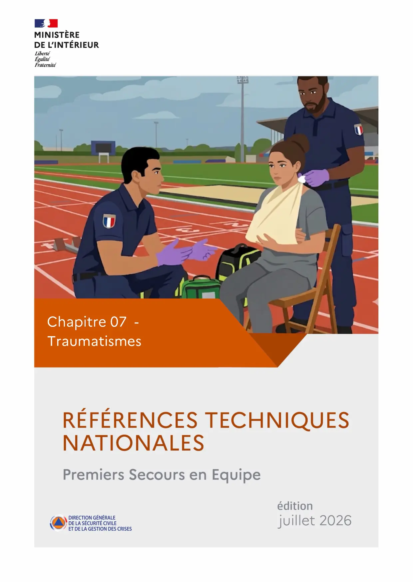
- Traumatismes
200
[07AC01 / 07-2026] PSE①
Brûlures
Définition
La brûlure est une lésion de la peau, des voies aériennes ou digestives. Elle est qualifiée de :
brûlure simple, lorsqu’il s’agit de rougeurs de la peau chez l’adulte ou d’une cloque dont la surface est inférieure à celle de la moitié de la paume de la main de la victime ;
brûlure grave, dès lors que l’on est en présence :
d’une ou plusieurs cloques dont la surface totale est supérieure à celle de la moitié de la paume de la main de la victime ;
d’une destruction plus profonde (aspect blanchâtre ou noirâtre parfois indolore) associée souvent à des cloques et à une rougeur plus ou moins étendue ;
d’un aspect circulaire (qui fait le tour du cou ou d’un membre) ;
d’une brûlure dont la localisation est sur le visage ou le cou, les mains, les articulations ou au voisinage des orifices naturels ;
d’une rougeur étendue (un coup de soleil généralisé par exemple) de la peau chez l’enfant ;
d’une brûlure d’origine chimique, électrique ou radiologique.
Cette gravité est plus ou moins importante en fonction des différentes caractéristiques de la brûlure. Certaines brûlures sont du domaine du médecin traitant, d’autres nécessitent une prise en charge par un véhicule d’évacuation et de premiers secours pour être acheminées vers un service d’urgence. Enfin, les brûlures les plus graves nécessitent une médicalisation de leur transport avant leur acheminement vers un centre de traitement des brûlures.
Causes
La brûlure peut être provoquée par la chaleur, des substances chimiques, l’électricité, le frottement ou des radiations.
Risques & Conséquences
Suivant l’étendue, la profondeur et la localisation, la brûlure peut entraîner :
un danger immédiat comme une défaillance circulatoire (en cas de brûlure étendue) ou respiratoire (lors d’une brûlure au visage, au cou ou consécutive à l'inhalation de fumée) ;
une douleur sévère ;
des conséquences retardées comme l’infection, les séquelles fonctionnelles ou esthétiques.
La brûlure est évolutive, sans action immédiate, elle peut continuer de s’étendre en profondeur et en surface.
Signes
La reconnaissance d’une brûlure est en règle générale facile. Elle est réalisée le plus souvent au cours du 1er regard ou par l’écoute de la plainte principale.
Que la victime présente ou pas une détresse vitale, c’est au cours du 4ème regard que le secouriste analyse les caractéristiques et par là même la gravité d’une brûlure.
Une brûlure se caractérise par :
son aspect ;
son étendue ;
201
sa localisation ;
la présence de douleur.
L’aspect des brûlures diffère en fonction de la profondeur de celle-ci :
une peau rouge, sèche et douloureuse traduit une atteinte superficielle ;
des cloques ou phlyctènes, uniques ou multiples et plus ou moins étendues, accompagnées d’une douleur forte ou modérée, traduit une atteinte plus profonde ;
Elles peuvent se rompre spontanément en libérant un liquide clair. Leur apparition peut être retardée. L’aspect humide d’une zone brûlée en dehors d’un refroidissement à l’eau signe cette atteinte plus profonde.
une pâleur cireuse, un aspect noirâtre ou brunâtre de la peau traduit une atteinte très profonde de toutes les couches de la peau.
Ces brûlures sont souvent peu douloureuses, car les terminaisons nerveuses ont été détruites.
Une zone brûlée peut revêtir plusieurs aspects conjoints.
L’étendue de la brûlure doit être évaluée, car la surface atteinte conditionne également la conduite à tenir.
Pour évaluer cette étendue, le secouriste peut s’aider de différentes règles dont la plus connue, chez l’adulte, est la règle de Wallace.
Chez l’enfant et pour des petites surfaces, il peut s’aider de la surface de la main (paume et doigts) de la victime qui est égale à 1 % de la surface totale de la peau de la victime, quel que soit l’âge.
La localisation de la brûlure doit être décrite avec précision, notamment s’il s’agit de localisations particulières comme :
les brûlures des voies aériennes, objectivées par la présence de traces noires autour des narines et de la bouche ou de la langue, l’existence de toux ou de crachats noirs (qui seront systématiquement recherchés en cas de victimes d’incendie) ou de la modification de la voix qui devient rauque ;
les brûlures des mains, des plis de flexion, du visage ;
les brûlures à proximité immédiate des orifices naturels.
Une brûlure par ingestion doit être suspectée chez une personne qui, après avoir absorbé un liquide brûlant ou caustique, présente de violentes douleurs dans la poitrine ou à l’abdomen, parfois associées à des lésions de brûlure (chaleurs) ou des traces blanchâtres (caustiques) au niveau des lèvres ou de la bouche.
Une brûlure par inhalation doit être suspectée chez une personne qui a respiré des fumées d’incendies ou inhalé des produits chimiques.
Principe de l’action de secours
supprimer la cause ;
identifier la gravité et la nature de la brûlure ;
limiter l’étendue ;
soulager la douleur et l’œdème ;
éviter l’apparition ou limiter l’aggravation, d’une détresse vitale éventuelle ;
limiter le risque d’infection.
202
[07PR01 / 07-2026] PSE①
Brûlures
Face à une urgence ou une détresse vitale, ou en cas d’aggravation
appliquer la conduite à tenir adaptée et réaliser en priorité les gestes d’urgence qui s’imposent ;
Dans tous les cas
soustraire la victime à la cause et assurer une protection adaptée au contexte ;
initier le bilan et lutter contre la brûlure ;
recueillir les caractéristiques1 de la brûlure ;
En présence d’une brûlure thermique
refroidir2 immédiatement la surface brûlée tout en retirant les vêtements3, et les bijoux4 :
si la brûlure s’est produite il y a moins de 30 minutes ;
et si la victime est consciente ;
et n’a pas de détresse circulatoire ;
et si la surface brûlée est inférieure à : 20% chez un adulte, 10% chez un enfant ou un nourrisson.
En l’absence de point d’eau tempérée, il est possible d’utiliser des compresses stériles enduites de gel d’eau. Les conditions d’utilisation sont les mêmes que celles de l’arrosage et précisées par le fabricant ou l’autorité d’emploi.
Les jeunes enfants présentant des brûlures thermiques et bénéficiant d’un refroidissement actif à l’eau courante doivent être surveillés pour détecter tout signe et/ou symptôme de refroidissement excessif du corps.
adapter la conduite à tenir selon la gravité de la brûlure :
Si la brûlure est grave
dès le début de l’arrosage, demander un avis médical et appliquer les consignes ;
poursuivre le refroidissement, selon les consignes données ;
après refroidissement,
installer la victime en position d'attente, confortablement5 et sans délai :
allongée confortablement ;
assise en cas de gêne respiratoire.
ne pas percer les cloques et protéger la brûlure :
par un pansement, un champ stérile ou un film6 plastique non adhésif ;
si la victime est brûlée sur une surface très étendue, l’envelopper dans un drap stérile.
envelopper la victime dans une couverture isotherme7;
1 Surface, localisation, circonstances de la brûlure, présence de traces noires autour des narines, de la bouche ou de la langue, raucité de la voix, produit, conditionnement, emballage, fiche de donnée sécurité, etc.
2 Avec de l'eau courante tempérée et à faible pression. Pendant au moins 10 minutes, idéalement 20 minutes. Débuter l’arrosage après 30 minutes n’a pas d’intérêt.
3 Sur ou près de la peau brûlée, s'ils n'adhèrent pas à la peau.
4 Sur ou près de la peau brûlée.
5 Par exemple sur un lit, une chaise, ou un canapé, ou à défaut sur le sol.
6 Type film alimentaire. Il maintient l’humidité et épouse facilement la zone brûlée.
7 La couverture isotherme permet de lutter contre une hypothermie qui, chez un brûlé grave, peut survenir rapidement.
203
Si la brûlure est simple
poursuivre le refroidissement jusqu'à disparition de la douleur ;
ne jamais percer les cloques ;
protéger la brûlure par un pansement stérile ou un film plastique non adhésif1 ;
conseiller à la victime de consulter un médecin :
si elle n’est pas à jour de sa vaccination antitétanique ;
s'il s'agit d'un enfant ou d'un nourrisson ;
si des signes d’une infection2 apparaissent dans les jours qui suivent.
En présence d’une brûlure électrique
appliquer la conduite à tenir face à une brûlure thermique grave, en adaptant comme suit :
ne jamais toucher la victime avant la suppression du risque électrique ;
arroser les zones visiblement brûlées à l’eau courante tempérée ;
En présence d’une brûlure par produit chimique ou interne par inhalation
se protéger pour éviter tout contact avec l’origine de la brûlure ;
demander à la victime de se rincer immédiatement et abondamment à l’eau courante tempérée :
en cas de projection sur les vêtements ou la peau : rincer3 l’ensemble du corps de la victime et ôter sous l’eau ses vêtements imbibés de produit ;
en cas de projection dans l’œil : rincer5 l’œil atteint et faire retirer les lentilles de contact pendant le rinçage ;
en cas d’ingestion : ne jamais faire vomir ou boire, et conserver les informations4 du produit ;
en cas d’inhalation5: en présence de difficultés respiratoires, placer la victime en position assise ;
se laver les mains après avoir réalisé les gestes de secours.
Dans tous les cas
demander un avis médical en transmettant le bilan.
adapter la conduite à tenir selon les consignes du médecin ;
installer la victime en position d'attente, confortablement6 et sans délai ;
poursuivre le bilan et surveiller attentivement la circulation et la respiration7.
1 Type film alimentaire. Il maintient l'humidité et épouse facilement la zone brûlée.
2 Apparition de fièvre, de suintements, d'une zone chaude, rouge, gonflée ou douloureuse, notamment dans les 24 heures.
3 Veiller à ce que la substance diluée par l’eau de rinçage ne nuise pas au secouriste ou aux tissus sains de la personne (en entrant en contact avec la peau non affectée ou l'œil non blessé, par accumulation de produit dilué dans les chaussures, etc).
4 Conditionnement, emballage, fiche de donnée sécurité, etc.
5 Ce type de brûlure doit être suspecté chez une personne qui a respiré des fumées d’incendie ou inhalé des produits chimiques.
6 Par exemple sur un brancard, un lit, une chaise, un canapé ou à défaut sur le sol.
7 Les difficultés respiratoires peuvent survenir à distance de l’accident en cas de brûlure par inhalation.
204
[07AC02 / 09-2014] PSE①
Plaie
Définition
La plaie est une lésion de la peau avec effraction et atteinte possible des tissus sous-jacents.
Causes
Les plaies sont généralement secondaires à un traumatisme de :
l’extérieur vers l’intérieur : coupure, piqûre, projectile, coup, morsures ;
l’intérieur vers l’extérieur : fracture ouverte, l’os cassé perfore la peau.
Risques & Conséquences
Suivant son importance et sa localisation, une plaie peut avoir pour la victime plusieurs types de conséquences, comme :
une hémorragie ;
une atteinte des organes sous-jacents ;
une infection de la plaie, qui peut s’étendre à tout l’organisme.
Ces atteintes peuvent entraîner une défaillance respiratoire, circulatoire ou neurologique.
Toute plaie, toute piqûre, même minime, peut provoquer une maladie parfois mortelle : le tétanos. Seule la vaccination antitétanique protège du tétanos. Si le sujet n’a pas été vacciné, ou si la vaccination a plus de dix ans chez l’adulte ou cinq ans chez l’enfant, il doit immédiatement consulter un médecin.
Une plaie peut aussi entraîner pour l’intervenant un risque de contamination par le sang de la victime (virus des hépatites et VIH).
Signes
La personne est le plus souvent victime d’un traumatisme, avec ou sans signe de détresse vitale.
C’est au cours du 4ème regard qu’est recherchée la présence de plaies, déterminée leur localisation, leur aspect et identifiée leur gravité.
L’aspect d’une plaie permet d’apprécier plus facilement sa gravité et de décrire précisément la lésion lors de la transmission du bilan. On distingue ainsi :
• la contusion, qui est un choc ou un coup susceptible de provoquer une rupture des vaisseaux situés immédiatement sous la peau ;
Le sang s’échappe dans les tissus sous l’épiderme, donnant une coloration violette et un aspect gonflé à la peau qui ne peut pas être rompue, c’est l’hématome. Ces hématomes sont parfois très étendus, traduisant une lésion plus profonde comme une fracture ou une lésion interne.
• l’écorchure, qui est une plaie simple et superficielle avec un aspect rouge et suintant, souvent douloureuse et généralement provoquée par une chute avec glissement ou friction ;
De petits corps étrangers incrustés dans la peau peuvent entraîner des infections secondaires.
• la coupure, qui est provoquée par un objet tranchant (couteau, morceau de verre) ;
Elle peut être accompagnée d’une hémorragie ou d’une lésion d’un organe sous-jacent.
• la plaie punctiforme (en forme de point), qui est une plaie souvent profonde, provoquée par un objet pointu (clou, arme blanche, projectile) pouvant traverser les organes sous-jacents ;
205
C’est une plaie souvent grave même si son aspect extérieur ne l’est pas. Une plaie par injection de liquide sous pression (accidents du travail ou de bricolage) présente le plus souvent ces caractéristiques.
• la lacération, qui est une déchirure souvent complexe de la peau par arrachement ou écrasement.
Cette plaie est irrégulière avec une atteinte des tissus sous-jacents.
Au-delà de l’aspect de la plaie, il convient d’en distinguer la gravité. Ainsi :
une plaie est considérée comme simple lorsqu’il s’agit d’une petite coupure superficielle, d’une éraflure saignant peu, qui n’est pas située au niveau d’un orifice naturel ou de l’œil ;
une plaie est considérée comme grave du fait, entre autres :
d’une hémorragie associée,
d’un mécanisme pénétrant (objet tranchant ou perforant, morsures, projectiles),
de sa localisation : cou, thorax, abdomen, œil, orifices naturels,
de son aspect (déchiquetée, écrasée),
de plaies multiples.
En cas de doute, la plaie doit être considérée comme grave.
Une plaie par injection de liquide sous pression est toujours une plaie grave dont la prise en charge chirurgicale est urgente.
Principe de l’action de secours
identifier la gravité d’une plaie ;
limiter les risques d’aggravation vers d’une détresse vitale ;
limiter le risque d’infection.
206
[07PR02 / 07-2026] PSE①
Plaie
Face à une urgence ou une détresse vitale, ou en cas d’aggravation
appliquer la conduite à tenir adaptée et réaliser en priorité les gestes d’urgence qui s’imposent ;
En présence d’une plaie grave
ne jamais retirer le corps étranger pénétrant (couteau, morceau de verre, etc.)1;
installer la victime en position d'attente, confortablement2 et sans délai :
assise3 en laissant la plaie à l’air libre en présence d'une plaie au thorax ;
allongée4, jambes fléchies5 en présence d'une plaie de l'abdomen ;
allongée, yeux fermés6 en demandant de ne pas bouger la tête en présence d'une plaie à l'œil ;
allongée7 dans tous les autres cas.
à l’exception des plaies du thorax, protéger la plaie par un pansement ou un champ stérile humidifié8 ;
protéger la victime contre le froid, la chaleur ou les intempéries ;
poursuivre le bilan et surveiller attentivement son état du fait d’un risque d’aggravation brutale.
En présence d’une plaie simple
se laver les mains avec de l’eau et du savon ou utiliser une solution hydroalcoolique ;
se protéger par le port de gants ;
nettoyer la plaie :
avec de l’eau courante (propre) ou en bouteille, à défaut avec du sérum physiologique ;
utiliser du savon si la plaie est souillée ;
s’aider si besoin d’une compresse pour enlever les souillures.
sécher la zone autour de la plaie et la protéger par un pansement ;
conseiller à la victime de consulter un médecin si :
elle n’est pas à jour de sa vaccination antitétanique ;
la plaie devient chaude, rouge, si elle suinte, si elle gonfle ou si elle continue de faire mal dans les vingt-quatre heures.
En présence d’une plaie par injection de liquide sous pression
recueillir la nature du produit injecté et la valeur de la pression d’injection, si possible ;
demander un avis médical en transmettant le bilan.
1 Cela risque d’aggraver la plaie.
2 Par exemple sur un brancard, un lit, une chaise, un canapé ou à défaut sur le sol.
3 La position assise facilite la respiration lorsque l’on est en présence d’une plaie au thorax.
4 La position allongée permet de prévenir les détresses et d’éviter les complications.
5 La flexion des jambes d’une victime préalablement allongée permet, par le relâchement des muscles de l’abdomen, de diminuer la douleur.
6 La fermeture des yeux et l’immobilité de la tête permettent de limiter les risques d’aggravation de la lésion de l’œil.
7 La position allongée permet de prévenir les détresses et d’éviter les complications.
8 Eau stérile ou sérum physiologique.
207
En présence d’un traumatisme dentaire1
se laver les mains avec de l’eau et du savon ou utiliser une solution hydroalcoolique ;
se protéger par le port de gants ;
aider la personne à arrêter le saignement dans la bouche :
demander à la victime de se rincer la bouche avec de l’eau, si possible froide ;
appliquer une compresse humide sur la zone qui saigne dans la bouche2 ;
demander à la victime de mordre la compresse humide.
conditionner la dent tombée :
la récupérer en la saisissant par la couronne et pas par la racine ;
la rincer3 si elle est souillée pendant 10 secondes maximum ;
l’envelopper dans un film étirable alimentaire ;
à défaut, la conserver dans un petit récipient contenant4 du lait de vache ou de la salive de la victime
faire transporter la dent conditionnée avec la victime ;
indiquer à la victime de consulter immédiatement un chirurgien-dentiste.
1 Délogement d’une dent suite à un choc.
2 Ne pas le faire si la victime risque d’avaler la compresse (par exemple, un petit enfant, une personne agitée ou qui présente des troubles de la conscience).
3 Avec du sérum physiologique ou sous l’eau courante.
4 Il ne faut pas la conserver dans de l’eau du robinet ni dans du sérum physiologique.
208
[07FT01 / 12-2022] PSE①
Pansement
Indication
Cette technique est indiquée pour protéger une plaie, après son nettoyage et éventuellement sa désinfection.
Justification
En protégeant la plaie des souillures, le pansement limite le risque d’infection secondaire.
Matériel
Il existe différents types de pansements.
Le pansement adhésif
Le pansement adhésif est prédécoupé, stérile et sous emballage individuel. Il se compose :
D’une compresse ;
D’une fixation adhésive qui ne doit pas être irritante pour la peau (hypoallergénique).
Le pansement individuel
Le pansement individuel est, à l’origine, conçu pour les plaies par balle. Il peut néanmoins être utilisé pour tout type de plaie non étendue. Ce pansement est stérile. Il est contenu dans un emballage qui s’ouvre sans être déchiré, en décollant et séparant simplement les bords de l’emballage. Il se compose :
D’une bande non extensible ;
De deux compresses absorbantes, l’une fixe, l’autre mobile, pouvant ainsi se déplacer sur toute la longueur de la bande ;
D’une épingle permettant la fixation de la bande.
Le pansement Type C
Déployé, le pansement Type C permet la protection d’une ou plusieurs plaies grâce à la différence de taille des compresses qu’il contient. Fermé, il se présente sous la forme d’un cylindre, protégé par une enveloppe plastique. Une fois déplié, il se compose :
D’une compresse absorbante de 40 x 13 cm (compresse principale) ;
D’une compresse absorbante de 16 x 14 cm ;
D’une compresse de 14 x 60 cm ;
D’une bande extensible ;
De deux épingles.
209
Réalisation
Ne jamais toucher avec les doigts, même recouverts de gants, la partie du pansement qui entrera en contact avec la plaie.
Avec un pansement adhésif
Choisir le pansement en fonction des dimensions de la plaie ;
Sortir le pansement de son emballage stérile ;
Appliquer le pansement sur la plaie simple, en retirant les protections des zones autocollantes ;
Appliquer les parties collantes sur la peau saine, puis les lisser avec le doigt.
Avec un pansement individuel
Ouvrir l’emballage sans le déchirer ;
Sortir le sachet stérile et l’ouvrir ;
Dérouler la bande, sans toucher aux compresses absorbantes ;
Appliquer les compresses sur la plaie ;
S’il s’agit d’une plaie par balle, appliquer une compresse sur le point d’entrée et l’autre, en la faisant coulisser, sur le point de sortie.
Attacher la bande avec l’épingle de sûreté.
Avec un pansement Type C
Ouvrir l’emballage en plastique ;
Ouvrir l’emballage papier et enlever la compresse ;
Dérouler le pansement ;
Appliquer les compresses absorbantes sur la ou les plaies ;
Maintenir la ou les compresses avec la bande, maintenue à l’aide des épingles.
La compresse non absorbante peut servir de support au matériel non utilisé.
Risques & Contraintes
Un pansement peut cacher un saignement et un bandage circulaire peut conduire à un effet garrot. Aussi, il convient de surveiller attentivement l’apparition progressive d’une douleur diffuse ou d’un saignement et de contrôler la circulation du membre en dessous du pansement (pouls, temps de recoloration cutanée, aspect de la peau).
Dans le cas d’un pansement du front ou du cuir chevelu, la technique ne peut pas être réalisée sur une personne allongée, suspecte d’un traumatisme du rachis cervical (en effet, il serait nécessaire de soulever la tête de la victime pour passer la bande).
Évaluation
La lésion cutanée est entièrement recouverte par le pansement, et aucune douleur n’apparaît au niveau de la zone bandée après une dizaine de minutes.
210
[07FT02 / 09-2014] PSE①
Maintien d’un pansement
Indication
Cette technique est indiquée afin d’assurer le maintien d’un pansement non compressif sur une plaie.
Justification
Le maintien du pansement à l’aide d’un filet tubulaire évite tout phénomène de compression circulaire d’un membre et laisse à la victime sa liberté de mouvement.
Réalisé avec une bande, ce maintien accroît la protection contre les souillures extérieures.
Matériel
Les bandes de crêpe ou extensibles :
Les bandes de crêpe ou les bandes extensibles sont les plus communément utilisées. Elles sont de différentes largeurs.
Les filets de mailles tubulaires :
Les filets de mailles tubulaires sont des cylindres de filet élastique de différents diamètres adaptés à chaque partie du corps.
Réalisation
Maintien à l’aide d’une bande
Après avoir positionné le pansement non compressif :
enrouler la bande autour de la zone atteinte (segment de membre, thorax, tête) ;
Le bandage doit largement dépasser les dimensions du pansement.
maintenir la bande avec un morceau de ruban adhésif ou une épingle de sûreté.
Maintien à l’aide d’un filet
Après avoir positionné le pansement non compressif :
étirer et enfiler le filet, comme une chaussette, pour maintenir le pansement ;
faire un tour, puis repasser sur le filet pour assurer le maintien, si celui-ci est trop large pour la partie du corps à équiper ;
Lors du retour, il convient de veiller à ce que le filet n’exerce pas de compression.
réaliser à l’aide d’une paire de ciseaux des orifices pour libérer certaines parties du corps (par exemple pouce, talon, orifice naturel), si cela s’avère nécessaire.
Risques & Contraintes
Le dispositif de maintien (par bande ou filet) :
ne doit jamais être directement posé sur la plaie ou la brûlure ;
211
ne doit pas déplacer le pansement lors de sa mise en place ;
doit largement dépasser les dimensions du pansement.
La mise en place d’un filet peut être effectuée sur une victime allongée qui présente une plaie du crâne et est suspecte d’un traumatisme du rachis. Toutefois, elle doit être effectuée en présence d’un maintien de la tête et en glissant délicatement le filet sous celle-ci. En revanche, cette technique ne peut pas être réalisée avec une bande.
Un bandage circulaire peut conduire à un effet garrot. Aussi, il convient de surveiller attentivement l’apparition progressive d’une douleur diffuse ou d’un saignement et de contrôler la circulation du membre en dessous du pansement (pouls, temps de recoloration cutanée, aspect de la peau).
Exceptionnellement, cette technique peut permettre de réaliser la compression du membre pansé.
Évaluation
Le dispositif doit maintenir le pansement sans entraver la circulation en aval. Par ailleurs, aucune douleur ne doit apparaître au niveau du membre pansé après une dizaine de minutes.
212
[07FT03 / 07-2026] PSE①
Emballage au moyen d’un pansement stérile
Indication
Cette technique est indiquée pour protéger une ou plusieurs plaies étendues ainsi que les brûlures graves.
Justification
L’emballage au moyen d’un pansement stérile accroît la protection de la zone lésée contre les souillures et permet de limiter la déperdition de chaleur.
Matériel
Le pansement stérile pour brûlures type SSA :
Le pansement stérile pour brûlures du service de santé des armées, d’un format de 60 x 80 cm, présente :
une face argentée alvéolée imprégnée de MétallineÒ qui se pose sur la brûlure ;
quatre rubans permettant de l’attacher sur la victime.
Les draps et champs stériles :
Les champs stériles sont des pièces de tissus de taille suffisante pour recouvrir des lésions étendues.
Réalisation
Avec un pansement stérile pour brûlures type SSA
ouvrir l’emballage en plastique et sortir la pochette papier ;
ouvrir la pochette papier et sortir le pansement stérile pour brûlé ;
déplier le pansement en prenant soin de ne pas toucher la partie argentée ;
poser la face argentée alvéolée sur la brûlure ;
attacher le pansement à l’aide des rubans prévus à cet effet.
Avec un drap ou un champ stérile
ouvrir l’emballage et sortir le drap ou le champ stérile en le saisissant par ses extrémités ;
déployer le drap ou le champ en tirant dessus ;
envelopper la lésion de la peau avec le drap ou le champ stérile en évitant que la partie du drap qui recouvre la lésion ne touche le sol, les vêtements ou le secouriste ;
maintenir le drap ou le champ à l’aide de ruban adhésif.
Risques & Contraintes
La partie du pansement, du drap ou du champ stérile entrant en contact avec la victime ne doit jamais être touchée par les doigts du sauveteur, même protégés par des gants.
Évaluation
La zone lésée est entièrement recouverte par le pansement.
213
[07AC03 / 07-2026] PSE①
Amputation ou arrachement complet d’une partie du corps
Définition
On parle d’amputation ou arrachement :
complet lorsqu’une partie externe du corps (doigt, main, bras, etc.) ou des tissus mous (joue, nez, oreille, organes génitaux, etc.) est entièrement séparée du corps, sans aucune liaison résiduelle telle que muscles, tendons ou peau.
partiel lorsque des connexions résiduelles (muscles, vaisseaux sanguins, peau) sont conservées, ce qui augmentent les possibilités de réparation chirurgicale et de récupération fonctionnelle.
Causes
Les amputations ou arrachement d’une partie du corps touchent surtout les jeunes enfants et les adultes. Ils sont toujours d’origine traumatique et surviennent, le plus souvent, après un accident domestique ou un accident du travail.
Risques & Conséquences
Les amputations ou arrachements complets de parties externes du corps sont des événements traumatiques pouvant entraîner des séquelles physiques et psychologiques majeures.
Le premier risque d’une amputation ou d’un arrachement d’une partie du corps est l’hémorragie externe dont la survenue peut être retardée de plusieurs minutes. Les conséquences sont les mêmes que pour toute hémorragie externe et son contrôle reste la priorité des premiers secours.
Il est parfois possible de « réimplanter » chirurgicalement une partie de corps amputée ou arrachée. Cette réimplantation dépend étroitement de la qualité de la prise en charge initiale de la partie sectionnée. Le temps d’ischémie1 constitue un facteur décisif pour la réussite de la réimplantation et une conservation correcte par refroidissement en augmente significativement les chances.
Principe de l’action de secours
arrêter le saignement ;
lutter contre la détresse circulatoire ;
retrouver et préserver la partie du corps amputée ou arrachée ;
transporter avec la victime, la partie du corps amputée ou arrachée.
1 Arrêt ou insuffisance de la circulation du sang dans un tissu, un membre ou un organe.
214
[07PR03 / 07-2026] PSE①
Amputation et arrachement complet d’une partie du corps
Face à une urgence ou une détresse vitale, ou en cas d’aggravation
appliquer la conduite à tenir adaptée et réaliser en priorité les gestes d’urgence qui s’imposent ;
notamment, arrêter l’hémorragie immédiatement ;
En présence d’une amputation ou d’un arrachement
appliquer la conduite à tenir face à une plaie grave ;
adapter la conduite à tenir avec :
mettre en place un pansement compressif sur la plaie, même en l’absence de saignement ;
conditionner la partie du corps amputée ou arrachée ;
poursuivre le bilan et surveiller attentivement la circulation.
215
[07FT04 / 07-2026] PSE①
Conditionner une partie du corps amputée ou arrachée
Indication
Le lot spécialement conçu à cet effet est utilisé pour envelopper une partie du corps amputée ou arrachée et permettre son acheminement avec la victime vers l’hôpital.
Justification
Le froid permet de préserver une partie du corps amputée ou arrachée pendant la prise en charge et le transport du blessé, dans l’attente de sa réimplantation éventuelle.
Matériel
Sacs ou récipients en plastique propres et étanches ;
Eau et glace.
Il existe des dispositifs commerciaux qui permettent de réaliser cette conservation et qui sont basés sur le même principe que la procédure décrite ci-dessous.
Réalisation
Récupérez la partie du corps aussi rapidement que possible et conservez-la au frais sans la congeler.
Enveloppez la partie dans un pansement stérile ou un tissu propre humidifié avec une solution saline ou de l'eau.
Placez la partie enveloppée dans un sac ou un récipient en plastique propre et étanche.
Placez le sac ou le récipient contenant la partie du corps dans un autre sac contenant de la glace ou de l'eau glacée. Si vous ne disposez pas de glace, vous pouvez utiliser une glacière avec des accumulateurs de froid instantanés.
Maintenez la partie du corps au frais en permanence. Évitez tout contact direct avec la glace ou l’accumulateur de froid.
Indiquez sur le récipient le nom de la personne et l'heure à laquelle la partie du corps a été conservée.
Transportez la partie du corps avec la personne blessée vers le même hôpital le plus rapidement possible.
Risques & Contraintes
Le contact direct entre la partie du corps amputée ou arrachée et la source de froid serait responsable de gelures qui peuvent compromettre la réussite de sa réimplantation.
Évaluation
La partie du corps amputée ou arrachée est correctement conditionné pour le transport et n’est pas en contact direct avec la source de froid.
216
[07AC04 / 06-2018] PSE②
Traumatisme de l’abdomen
Définition
Les traumatismes abdominaux portent atteinte à l’intégrité de la cavité abdominale et des organes contenus dans celle-ci. Ces traumatismes concernent les organes pleins (foie, rate, reins), les organes creux (estomac, intestin) et les gros vaisseaux (aorte, veine cave inférieure).
Causes
Une atteinte de l’abdomen1 survient lors :
d’un choc (direct) ou d’une compression appuyée ou brutale au niveau de l’abdomen (accident de circulation, chute de grande hauteur…) ;
de la pénétration d’un corps étranger dans l’abdomen (projectiles d’arme à feu, arme blanche ou tout objet perforant) ;
d’un cisaillement dû à une décélération brusque (traumatisme indirect) qui entraîne des lésions des gros vaisseaux abdominaux, du foie ou de la rate ;
d’une explosion (blast).
Risques & Conséquences
La gravité du traumatisme abdominal est due à l’atteinte des organes abdominaux avec apparition d’une défaillance circulatoire par hémorragie interne. Cette dernière peut survenir de façon extrêmement brutale si ce sont des organes (foie, rate, rein) ou de gros vaisseaux abdominaux qui sont touchés. Le saignement peut être retardé et les signes apparaître secondairement.
Les traumatismes avec atteinte des organes creux exposent à un risque infectieux important, car leur contenu est sceptique (matières fécales).
Signes
L’expression du mécanisme : traumatisme parfois violent, direct au niveau de l’abdomen ou indirect.
La victime peut se plaindre :
d’une douleur spontanée siégeant au niveau d’une partie ou de tout l’abdomen.
À l’examen, le secouriste peut trouver :
une douleur à la palpation prudente des côtes ;
une douleur provoquée lors d’une palpation prudente de l’abdomen qui peut être anormalement dur ;
l’absence de soulèvement de l’abdomen à chaque inspiration ;
une contusion ou une plaie plus ou moins importante2;
des vomissements de sang rouge (hématémèse).
Toute plaie abdominale est considérée comme grave, même en l’absence de signes de détresse.
Principe de l’action de secours
prévenir toute détresse circulatoire par une surveillance attentive ;
installer ou transporter la victime dans une position d’attente adaptée à son état ;
demander un avis médical.
1 Un traumatisme abdominal ne survient pas uniquement lors d’une atteinte de la face antérieure de l’abdomen, mais aussi lors d’une atteinte des flancs, du dos ou de la partie basse du thorax.
2 Avec une éventuelle éviscération.
217
[07PR04 / 07-2026] PSE②
Traumatisme de l’abdomen
Face à une urgence ou une détresse vitale, ou en cas d’aggravation
appliquer la conduite à tenir adaptée et réaliser en priorité les gestes d’urgence qui s’imposent ;
En l’absence de détresse vitale apparente
appliquer la conduite à tenir face à une plaie grave ;
adapter la conduite à tenir avec :
mettre la victime dans une position allongée, à plat dos, jambes fléchies1 ;
rechercher l’existence de lésions dans le dos de la victime, particulièrement au cours de sa mobilisation ;
En présence d’une éviscération :
ne pas remettre les viscères en place ;
envelopper2 les viscères dans un champ3 stérile humidifié4 .
En présence d’une femme enceinte :
Toute femme enceinte victime d’un traumatisme violent (AVP, chute, coup dans l’abdomen) doit être considérée comme traumatisée de l’abdomen et faire l’objet d’une consultation dans un service d’urgence ou spécialisé.
1 Cette position sera maintenue lors de son relevage et de son transport.
2 Sans les mobiliser, ni les comprimer.
3 Ne pas utiliser de compresses.
4 Eau stérile ou sérum physiologique.
218
[07AC05 / 09-2014] PSE②
Traumatisme du thorax
Définition
Un traumatisme du thorax est l’ensemble des signes dus à une atteinte traumatique du thorax, avec ou sans plaie. Ces signes permettent de suspecter des lésions pouvant mettre rapidement en jeu la vie de la victime.
Ce sont des fractures des côtes ou du sternum avec atteinte ou non des organes intrathoraciques.
Causes
Une atteinte du thorax survient lors :
d’un choc direct au niveau des côtes ;
de la pénétration d’un corps étranger1 dans le thorax ;
d’une décélération brusque2 ;
d’une explosion (blast).
Risques & Conséquences
Une atteinte traumatique du thorax peut entraîner :
une détresse respiratoire due à l’existence :
de côtes cassées ;
d’un pneumothorax ou d’un hémothorax qui comprime le ou les poumons ;
d’une rupture ou plaie de la trachée ou des bronches.
une détresse circulatoire, voire un arrêt cardiaque, par atteinte des gros vaisseaux ou du cœur.
Signes
L’expression du mécanisme : un traumatisme parfois violent, direct au niveau du thorax (coup, choc) ou indirect (décélération brutale).
La victime peut se plaindre :
d’une douleur spontanée siégeant au niveau d’une ou plusieurs côtes ou provoquée par les mouvements respiratoires ou la toux ;
d’une émission de crachats de sang rouge.
À l’examen, le secouriste peut trouver :
une douleur à la palpation prudente des côtes ;
une plaie avec ou sans bulles sanglantes à l’expiration3 ;
une contusion ;
une anomalie du soulèvement de la poitrine
une déformation nette du thorax ;
une toux incessante ou des crachats de sang rouge ;
des lésions associées (polytraumatisme).
Toute plaie thoracique est considérée comme grave, même en l’absence de détresse respiratoire.
Principe de l’action de secours
prévenir toute détresse respiratoire ou circulatoire par une surveillance attentive ;
installer ou de transporter la victime dans une position d’attente adaptée à son état ;
demander un avis médical.
1Projectiles d’arme à feu, arme blanche ou tout objet perforant.
2Qui peut entraîner des lésions des organes intrathoraciques qui viennent s’écraser sur les côtes.
3Si tel est le cas, vérifier le dos.
219
[07PR05 / 07-2026] PSE②
Traumatisme du thorax
Face à une urgence ou une détresse vitale, ou en cas d’aggravation
appliquer la conduite à tenir adaptée et réaliser en priorité les gestes d’urgence qui s’imposent ;
ne jamais retirer un corps étranger pénétrant dans le thorax, sauf s’il empêche la réalisation d’une RCP ;
En l’absence de détresse vitale apparente
appliquer la conduite à tenir face à une plaie grave ;
adapter la conduite à tenir avec :
mettre la victime dans une position1 assise ou demi-assise dès lors qu’il existe une gêne respiratoire ;
dénuder2 le thorax de la victime :
vérifier la présence de lésions dans le dos de la victime,
particulièrement au cours de sa mobilisation3 ;
protéger la plaie par :
un dispositif médical non occlusif spécifique à cette utilisation s’il est à disposition,
en son absence, laisser la plaie à l’air libre4 ;
administrer de l’oxygène en inhalation, si nécessaire ;
1 Cette position sera maintenue lors de son relevage et de son transport.
2 Dans la mesure du possible cela doit se faire en préservant son intimité et si possible sans l’exposer au froid.
3 Installation en : position assise, position latérale de sécurité.
4 En l’espèce, le pansement non occlusif doit permettre la sortie de l’air piégé dans le thorax par la plaie et empêcher sa pénétration.
220
[07AC06 / 12-2023] PSE②
Traumatisme de la face et de la face antérieure du cou
Définition
Ensemble des signes dus à une ou plusieurs lésions secondaires à une atteinte traumatique de la face et de la face antérieure du cou.
Causes
Les traumatismes de la face et de la face antérieure du cou sont la conséquence le plus souvent d’un choc direct (éléments contondants) ou d’une blessure pénétrante (arme blanche, arme à feu) au niveau de la face ou du cou.
Risques & Conséquences
Les traumatismes de la face et de la face antérieure du cou sont fréquents et peuvent être :
isolés ou associés à d’autres lésions traumatiques ;
responsables d’une détresse vitale par une obstruction des voies aériennes1 ou une hémorragie ;
responsables d’une atteinte fonctionnelle, atteinte oculaire par exemple, et de séquelles esthétiques.
Un traumatisme de la face et de la face antérieure du cou peut être associé à un traumatisme du rachis cervical et/ou un traumatisme crânien.
Signes
L’expression du mécanisme : un traumatisme parfois violent, direct au niveau de la face ou du cou.
La victime peut se plaindre :
d’une douleur de la face, d’un trouble de la vision ou d’une difficulté à avaler.
À l’issue du 2ème regard, la victime peut présenter :
une détresse respiratoire par obstruction des voies aériennes ;
• une détresse circulatoire secondaire à une hémorragie externe ou extériorisée.
À l’examen, le secouriste peut trouver :
un œdème de la face ou localisé (œdème des paupières) ;
un hématome de la face, un hématome en lunette ;
une ou plusieurs plaies de la face, de la langue ou du cou ;
une déformation de la face traduisant une fracture des os de la face, du nez ou de la mandibule ;
un saignement du nez ou de la bouche ;
une atteinte de l’œil objectivée par une anomalie des mouvements de l’œil, la présence de sang sous la cornée, une déformation de la pupille, une plaie de l’œil avec ou sans corps étranger intraoculaire visible ;
une désinsertion ou une fracture de dents.
Principe de l’action de secours
lutter contre une détresse vitale ;
protéger une éventuelle lésion de la peau ;
demander un avis médical.
1 Provoquée par une inhalation d’un corps étranger ou de sang, une fracture de la mandibule avec désinsertion et bascule de la langue en arrière dans les voies aériennes ou un gonflement post-traumatique de la muqueuse des voies aériennes (traumatisme du larynx) ;
221
[07PR06 / 07-2026] PSE②
Traumatisme de la face et de la face antérieure du cou
Plaie de la face
À l’exception des éraflures sans gravité, une plaie de la face ou du cou doit être considérée et prise en charge comme une plaie grave du fait de sa localisation :
appliquer la conduite à tenir face à une plaie grave ;
laisser les corps étrangers en place :
même s’ils sont transfixiants1,
sauf s’ils entraînent une obstruction des voies aériennes.
Atteinte traumatique de l’œil
appliquer la conduite à tenir face à une plaie grave en présence d’une plaie à l’œil ;
demander à la victime de rester à plat dos2 dans la mesure du possible. ;
recouvrir3 les deux yeux par des compresses stériles.
Traumatisme dentaire
appliquer la conduite à tenir face à une plaie en présence d’un traumatisme dentaire.
Fracture de la face (mandibule, maxillaire supérieur, os du nez)4
installer la victime sur le côté ;
appliquer la conduite à tenir devant une détresse respiratoire si nécessaire.
Si le traumatisme est mineur, appliquer la conduite à tenir devant un saignement de nez.
Dans tous les cas
si la victime perd connaissance, appliquer la conduite à tenir adaptée ;
demander un avis médical et respecter les consignes données.
1 Qui traverse de part en part.
2 Cette position évite une aggravation éventuelle de la lésion de l’œil.
3 Sans appuyer et seulement s’il n’existe pas de corps étrangers dont la mobilisation pourrait aggraver la lésion oculaire.
4Ces lésions sont susceptibles de provoquer un saignement abondant qui peut s’écouler et encombrer les voies aériennes, pouvant engendrer une détresse respiratoire.
222
[07AC07 / 12-2023] PSE①
Traumatisme des membres
Définition
Il existe trois types d’atteintes des os et des articulations des membres :
l’entorse1(une entorse peut s’accompagner d’un arrachement osseux) ;
la luxation2(la luxation peut s’accompagner d’une fracture ou d’une atteinte des nerfs et des vaisseaux) ;
la fracture (rupture totale ou partielle de l’os) dite simple3 ou compliquée4.
Causes & Mécanisme
Une atteinte des os et des articulations des membres survient suite à une chute lors des activités de sport, de travail ou de loisir, un accident de circulation ou une agression.
Elle peut survenir à la suite d’un traumatisme :
direct : la lésion se situe à l’endroit du choc ;
indirect : la lésion est provoquée par un mouvement forcé en flexion, en extension ou en rotation ;
par pénétration d’un corps étranger : blessures par arme à feu.
Risques & Conséquences
Les lésions des os et des articulations peuvent s’accompagner de complications telles que :
une atteinte des vaisseaux5 ;
une lésion des nerfs6 ;
une plaie, il s’agit alors d’une fracture ouverte qui peut être hémorragique.
Les fractures de la cuisse ou de multiples fractures de membres peuvent entraîner une détresse circulatoire.
Signes
L’expression du mécanisme : un traumatisme des membres ou des articulations (chute, choc violent, etc).
La victime peut se plaindre :
de la perception d’un craquement au moment de la chute ou du choc ;
d’une douleur vive à l’endroit de la blessure ou à côté, augmentée par le mouvement ou la palpation ;
de la difficulté voire de l’impossibilité à bouger le membre atteint ou à se déplacer.
À l’examen, le secouriste peut trouver :
une déformation et un gonflement visibles au niveau de la lésion.
1 Lésion traumatique avec élongation, déchirure ou arrachement d’un ou plusieurs ligaments à la suite d’un mouvement exagéré ou forcé de l’articulation (faux mouvement), créant un écartement transitoire des deux extrémités osseuses.
2 Une lésion traumatique d’une articulation avec perte complète et permanente des rapports articulaires normaux (l’articulation est déboîtée). Les deux extrémités des os ne sont plus au contact l’une de l’autre. Ce déplacement s’accompagne le plus souvent d’une lésion, voire d’une déchirure des ligaments qui entouraient et maintenaient l’articulation.
3 Lorsqu’il n’existe pas de lésions associées visibles.
4 Lorsqu’il existe des lésions des structures adjacentes (nerfs, ligaments, muscles, vaisseaux), lorsqu’elle est accompagnée d’une plaie (fracture ouverte) et/ou si elle est déplacée.
5 Gonflement du membre (hématome), extrémité du membre froide et pâle.
6 La victime perçoit des fourmillements à l’extrémité du membre atteint. Il existe parfois une disparition de la sensibilité ou de la motricité des doigts ou des orteils.
223
Chez la victime qui a perdu connaissance, même en l’absence d’une déformation et d’un gonflement visible, une manifestation douloureuse lors de la palpation ou de la mobilisation de la victime doit faire suspecter une fracture.
Si la plupart des lésions des os et des articulations sont évidentes, elles peuvent être parfois plus difficiles à identifier. Le traumatisme de membre sera alors seulement suspecté par le secouriste et confirmé éventuellement lors de l’examen médical et radiographique.
Principe de l’action de secours
rechercher le mécanisme de survenue de la lésion et sa violence ;
empêcher l’aggravation en évitant tout déplacement de la zone blessée ;
rechercher et parer à toutes complications associées ;
immobiliser la lésion avec du matériel spécifique avant tout déplacement de la victime ;
demander un avis médical.
224
[07PR07 / 07-2026] PSE①
Traumatisme des membres
Face à une urgence ou une détresse vitale, ou en cas d’aggravation
appliquer la conduite à tenir adaptée et réaliser en priorité les gestes d’urgence qui s’imposent ;
Dans tous les cas
conseiller fermement de ne pas mobiliser la partie atteinte ;
limiter au maximum les mouvements du membre blessé ;
installer la victime en position d’attente :
membre inférieur : allongée ;
membre supérieur : assise1.
immobiliser le membre atteint à l’aide de l’attelle la plus appropriée ;
appliquer du froid si possible, sauf s’il s’agit d’une fracture ouverte ;
poursuivre le bilan et surveiller la victime.
En présence d’une fracture ouverte ou avec déformation
Compléter la conduite à tenir comme suit :
ne pas toucher2 un morceau d’os ou corps étranger visible ;
recouvrir la plaie non hémorragique d’un pansement stérile, avant l’immobilisation ;
immobiliser le membre en respectant3 la déformation.
1 Il convient alors d’indiquer à la victime de placer le membre atteint contre sa poitrine et de le soutenir avec une main dans la position la moins douloureuse possible.
2 Leur présence peut limiter le saignement et leur mobilisation pourrait aggraver la lésion.
3 Le réalignement d’une fracture est un geste très douloureux, il est réalisé par un médecin ou à la demande du médecin.
225
[07FT05 / 09-2014] PSE①
Application de froid
Indication
Cette technique est indiquée chez une victime consciente qui présente :
• un traumatisme de membre, y compris des articulations, en l’absence de plaie ; • une piqûre d’insecte.
Justification
L’application de froid permet d’atténuer la douleur et de limiter le gonflement.
Matériel
L’application de froid1 peut être réalisée avec :
de l’eau mélangée à de la glace (en cubes ou pilée) ;
avec des compresses chimiques froides de différentes tailles.
Réalisation
L’application de froid doit être la plus précoce possible et s’étendre au-delà de la zone douloureuse. La durée d’application ne doit pas excéder 20 minutes et peut être réduite de moitié en cas d’inconfort pour la victime.
En utilisant de l’eau et de la glace
remplir d’eau et de glace2 un sachet plastique ou une vessie de glace ;
chasser l’air en excédent3 et fermer hermétiquement la poche ;
envelopper la poche dans un linge (serviette, torchon) et l’appliquer sur la zone concernée.
En utilisant une compresse chimique
générer le froid, conformément aux indications du constructeur ;
envelopper la poche dans un linge (serviette, torchon) et l’appliquer sur la zone concernée.
Risques & Contraintes
L’application de froid est proscrite sur une plaie ou chez une victime qui a perdu connaissance. Prolongée, elle peut provoquer :
des réactions cutanées, comme une rougeur ou une pâleur intense, l’apparition de petites cloques ;
des gelures caractérisées par une peau « cartonnée » quand on la touche.
Si tel est le cas, interrompre immédiatement l’application de froid.
Évaluation
L’application de froid entraîne une diminution de la douleur et du gonflement sans provoquer de désagréments pour la victime.
1 Les bombes cryogènes sont réservées à l’usage médical.
2 Glaçons, glace pilée ou neige.
3 L’air est un excellent isolant. C’est pourquoi il convient de le chasser de la vessie ou du sac contenant la source de froid afin d’en améliorer l’efficacité.
226
[07FT06 / 09-2014] PSE①
Immobilisation d’un membre supérieur au moyen d’écharpes
Indication
Une immobilisation du membre supérieur au moyen d’écharpes est nécessaire chaque fois qu’une victime doit être mobilisée et que des moyens plus appropriés (attelle modulable ou attelle à dépression) ne sont pas disponibles.
Justification
Une immobilisation qui bloque les articulations au-dessus et au-dessous du traumatisme limite les mouvements, diminue la douleur et prévient la survenue de complications.
Matériel
Une écharpe triangulaire peut être constituée avec un triangle de tissu non extensible (coton, toile, papier non-tissé) dont la longueur au niveau de la base est de 1,2 m au minimum.
Par convention, la pointe située à l’opposé de la base est appelée « sommet » ; les deux autres pointes peuvent être dénommées chefs.
Réalisation
Traumatisme de la main, du poignet et de l’avant-bras
L’immobilisation est réalisée par une écharpe simple. Pour cela :
engager une des pointes du triangle entre le coude et le thorax et la faire passer sur l’épaule du côté blessé ;
Il faut que le sommet du triangle se trouve du côté du coude et que la base soit perpendiculaire à l’avant-bras à immobiliser.
ajuster et déplisser le triangle jusqu’à la base des doigts ;
rabattre la seconde pointe sur l’avant-bras et la faire passer sur l’épaule opposée au membre blessé ;
fixer l’écharpe en nouant les deux pointes sur le côté du cou ;
La main doit être placée légèrement au-dessus du niveau du coude.
fixer au niveau du coude en tortillant la partie libre de la pointe ou la fixer avec un ruban adhésif.
Traumatisme du bras
L’immobilisation est réalisée par une écharpe simple et une contre-écharpe. Pour cela :
soutenir l’avant-bras avec une écharpe simple ;
placer la base du deuxième triangle (contre-écharpe) au niveau de l’épaule du membre blessé, sommet vers le coude ;
amener les deux pointes sous l’aisselle opposée en enveloppant le thorax de la victime ;
fixer la contre-écharpe au moyen d’un nœud situé en avant de l’aisselle opposée ;
torsader le sommet pour maintenir le bras blessé plaqué contre le thorax.
227
Traumatisme de l’épaule (clavicule, omoplate)
L’immobilisation est réalisée par une écharpe oblique. Pour cela :
glisser la base du triangle sous l’avant-bras, sommet vers le coude ;
nouer les chefs sur l’épaule opposée en englobant le thorax ;
Les doigts doivent rester visibles.
rabattre le sommet sur le coude en avant et le fixer avec un ruban adhésif.
Si le traumatisme de l’épaule provoque une déformation importante (bras écarté du corps), placer un rembourrage (tissu roulé) entre le bras et le tronc pour respecter la déformation et éviter toute mobilisation de l’articulation. Ne jamais tenter de rapprocher le coude du corps.
Risques & Contraintes
La réalisation d’une immobilisation, même provisoire, d’un membre traumatisé, peut provoquer une mobilisation de celui-ci et entraîner douleur et complications.
Évaluation
L’immobilisation est correcte si :
le membre est maintenu ;
la douleur diminue.
228
[07FT07 / 09-2014] PSE②
Réalignement de membre
Indication
Le réalignement est effectué chaque fois que possible par un médecin.
En l’absence de médecin, on peut être amené, sur avis médical, à réaligner un avant-bras ou une jambe qui présente une fracture fermée, c’est-à-dire lui faire recouvrer un axe proche de la normale.
Ce réalignement est indiqué par la présence de signes de complications vasculaires ou neurologiques (membre froid, pâle, insensible) ou si la déformation empêche la mise en place d’un dispositif d’immobilisation.
Justification
La présence d’une déformation angulaire au niveau d’un membre fracturé peut entraîner une complication nerveuse ou vasculaire et constituer un obstacle ou une gêne à la mise en place d’un matériel d’immobilisation spécifique.
Le réalignement d’un membre traumatisé permet de :
• limiter les complications de compression vasculaire ou nerveuse ;
• mettre en place une attelle.
Matériel
Aucun matériel.
Réalisation
Fracture fermée de l’avant-bras
Le secouriste doit :
saisir et bloquer avec une main l’articulation du coude de la victime ;
saisir le poignet ou la main de la victime, avec son autre main ;
ramener progressivement l’avant-bras dans l’axe en exerçant une traction douce.
La traction n’est relâchée qu’après immobilisation du membre.
Fracture fermée de la jambe
Cette technique nécessite que le secouriste soit assisté d’une seconde personne.
Le secouriste doit :
faire réaliser le maintien du genou de la victime par la personne qui l’assiste ;
Il veille à ce que celle-ci saisisse à deux mains le genou de la victime et le bloque.
saisir à deux mains la cheville et ramener progressivement la jambe dans l’axe normal du membre inférieur en exerçant une traction douce.
La traction n’est relâchée qu’après immobilisation du membre.
229
Risques & Contraintes
Le réalignement d’un membre doit être immédiatement interrompu et un nouvel avis médical demandé si :
il existe une résistance au réalignement ;
la douleur provoquée devient intolérable pour la victime.
Pendant ou après le réalignement, des complications vasculaires (hématome, compression d’un vaisseau) ou neurologiques (perte de la sensibilité ou de la motricité) peuvent apparaître. Dans ce cas, un nouvel avis médical doit être demandé.
Évaluation
Le réalignement de membre est correct si :
il est possible de poser sans difficulté un moyen d’immobilisation spécifique ;
on constate une atténuation de la douleur et des signes de complications.
230
[07FT08 / 09-2014] PSE①
Immobilisation d’un membre au moyen d’une attelle à dépression
Indication
Les attelles à dépression sont utilisées pour assurer l’immobilisation du coude, de l’avant-bras et du poignet pour le membre supérieur et du genou, de la jambe et de la cheville pour le membre inférieur.
Elles peuvent être aussi utilisées pour immobiliser un traumatisme de l’épaule avec éloignement du coude par rapport au corps.
Justification
L’immobilisation à l’aide d’une attelle à dépression limite les mouvements d’un membre traumatisé, diminue la douleur et prévient la survenue de complications.
Matériel
L’attelle à dépression est constituée :
d’une enveloppe étanche à l’air et souple contenant des billes de polystyrène expansé ;
d’une vanne d’admission de l’air (entrée et sortie) sur laquelle s’adapte un dispositif d’aspiration de l’air ;
de sangles de maintien.
Elle n’est utilisée qu’avec une pompe d’aspiration manuelle ou électrique.
Son principe de fonctionnement est identique à celui du matelas immobilisateur à dépression.
Pour certaines immobilisations (traumatisme de l’épaule), une écharpe ou une bande peut être nécessaire.
Réalisation
Immobilisation du membre inférieur
La mise en place est réalisée par trois secouristes au minimum :
les secouristes 1 et 2 doivent :
maintenir le membre blessé, après réalignement si nécessaire, au niveau des articulations sus et sous-jacentes au traumatisme jusqu’à la mise en place de l’attelle.
le secouriste 3 doit :
préparer l’attelle à dépression en répartissant également toutes les billes et en ouvrant la valve d’admission d’air.
les secouristes 1 et 2 doivent :
soulever de quelques centimètres, tout en exerçant une traction douce au niveau de son extrémité, le membre pour permettre le passage de l’attelle.
le secouriste 3 doit :
glisser l’attelle sous le membre traumatisé en prenant soin d’englober les articulations sus et sous-jacentes.
231
les secouristes 1 et 2 doivent :
déposer le membre sur l’attelle et le maintenir.
le secouriste 3 doit :
rabattre l’attelle de part et d’autre du membre pour lui donner la forme d’une gouttière.
les secouristes 1 et 2 doivent :
déplacer les mains qui soutiennent le membre blessé pour maintenir l’attelle contre le membre.
le secouriste 3 doit :
faire le vide à l’intérieur de l’attelle en aspirant l’air jusqu’à ce que l’attelle devienne rigide ;
fermer la valve ;
déconnecter le dispositif d’aspiration ;
vérifier la bonne immobilisation et l’état de l’extrémité du membre.
Immobilisation du membre supérieur
Le principe de mise en place de l’attelle à dépression pour un membre supérieur est identique à la technique décrite pour un membre inférieur, mais peut être réalisé par deux secouristes au minimum.
Dans ce cas, les articulations sus et sous-jacentes au traumatisme sont maintenues par un seul secouriste.
Immobilisation de l’épaule
Cette technique permet d’immobiliser un traumatisme de l’épaule avec éloignement du coude par rapport au corps.
Elle doit être réalisée à l’aide d’une attelle à dépression membre inférieur (ou un MID Enfant).
La mise en place est réalisée au minimum par deux secouristes :
le secouriste 1 doit :
maintenir le membre blessé.
le secouriste 2 doit :
plier l’attelle en « N » et faire partiellement le vide ;
La vanne, placée sur la partie montante du « N » doit être à l’intérieur.
rouler l’écharpe dans le sens de la longueur et la glisser entre les branches montante et oblique du « N », du côté de la vanne ;
se placer face au blessé ;
introduire l’attelle sous le membre blessé, branche montante de la vanne contre le thorax et l’abdomen de la victime.
le secouriste 1 doit :
maintenir le membre blessé et l’attelle.
le secouriste 2 doit :
passer les deux chefs de l’écharpe roulée sur l’épaule opposée et les nouer ;
écarter l’attelle pour venir la plaquer contre le membre blessé.
Ce dernier repose alors entre les branches oblique et extérieure du « N ».
le secouriste 1 doit :
maintenir l’ensemble, membre blessé et l’attelle, en position.
le secouriste 2 doit :
232
faire le vide à l’intérieur de l’attelle jusqu’à ce qu’elle devienne rigide ;
fermer la valve et déconnecter le dispositif d’aspiration ;
vérifier la bonne immobilisation et l’état de l’extrémité du membre.
Risques & Contraintes
La réalisation d’une immobilisation à l’aide d’une attelle à dépression d’un membre traumatisé peut provoquer une mobilisation de celui-ci si la procédure de mise en place n’est pas respectée et entraîner douleur et complications.
Évaluation
L’immobilisation est correcte si :
le segment blessé et les articulations sus et sous-jacentes sont immobilisés par l’attelle ;
l’attelle est correctement fixée ;
la douleur ressentie par la victime diminue ;
aucun signe de compression n’apparaît après sa mise en place (circulation en aval correcte).
233
[07FT09 / 09-2014] PSE①
Immobilisation d’un membre au moyen d’une attelle modulable
Indication
Les attelles modulables sont utilisées pour assurer l’immobilisation du coude, de l’avant-bras et du poignet pour le membre supérieur et du genou, de la jambe et de la cheville pour le membre inférieur.
Justification
L’immobilisation à l’aide d’une attelle modulable limite les mouvements d’un membre traumatisé, diminue la douleur et prévient la survenue de complications.
Matériel
Il existe différents types d’attelles, dont :
les attelles de Kramer ;
Elles sont constituées de tiges de métal soudées et plastifiées en forme « d’échelle », malléables et adaptables au membre fracturé. Il en existe de plusieurs longueurs et largeurs.
Ces attelles nécessitent un habillage préalable, de façon à les rendre moins traumatisantes et d’éviter un contact direct du membre avec le métal.
les attelles modulables en alliage, doublées de mousse (type Aluform R) ;
Elles se composent :
d’une armature en aluminium ou autre alliage,
d’un rembourrage assuré par une mousse épaisse,
d’une enveloppe en polystyrène dont la face au contact du membre est lavable,
de bords rabattables permettant de former une gouttière,
d’un système de fixation par sangles autoagrippant.
Il existe différents types d’attelles suivant la zone traumatisée et l’âge.
En tout état de cause, il convient de se référer à la notice d’utilisation du fabricant.
Réalisation
Immobilisation à l’aide d’une attelle de Kramer
Les attelles de Kramer sont utilisées préférentiellement pour les immobilisations de l’avant-bras, du poignet ou de la main.
Elles ne sont utilisées qu’en l’absence de matériel plus adapté pour les traumatismes du membre inférieur situés en dessous du genou. Dans ce cas, elles sont utilisées par deux, placées de part et d’autre du membre blessé et solidarisées entre elles pour prévenir la mobilisation du membre.
234
La mise en place est réalisée au minimum par deux secouristes :
le secouriste 1 doit :
maintenir le membre blessé au niveau des articulations sus et sous-jacentes au traumatisme, éventuellement après réalignement, jusqu’à la mise en place de l’attelle.
le secouriste 2 doit :
choisir une attelle de longueur convenable et la préparer ;
placer la ou les attelles de part et d’autre du segment traumatisé en prenant soin d’englober les articulations sus et sous-jacentes ;
rembourrer les espaces libres entre l’attelle et le membre blessé pour qu’il existe un contact permanent, si nécessaire.
le secouriste 1 doit :
déplacer ses mains pour venir maintenir la ou les attelles en place.
le secouriste 2 doit :
fixer la ou les attelles au membre blessé à l’aide de liens larges ou éventuellement d’une bande, puis à l’aide d’une écharpe simple pour le membre supérieur ;
vérifier la qualité de l’immobilisation et l’état de l’extrémité du membre.
Immobilisation du membre supérieur à l’aide d’une attelle modulable
L’attelle modulable est utilisée pour les immobilisations du membre supérieur en dessous du coude.
La mise en place est réalisée au minimum par deux secouristes :
le secouriste 1 doit :
maintenir le membre blessé au niveau des articulations sus et sous-jacentes au traumatisme, éventuellement après réalignement, jusqu’à la mise en place de l’attelle.
le secouriste 2 doit :
choisir l’attelle adaptée (longueur convenable) et lui donner la forme attendue ;
placer l’attelle contre le segment traumatisé en prenant soin d’englober les articulations sus et sous-jacentes ;
rabattre les côtés de l’attelle pour lui donner la forme d’une gouttière.
le secouriste 1 doit :
soutenir le membre blessé et déplacer ses mains pour maintenir l’attelle contre le membre.
le secouriste 2 doit :
maintenir l’attelle en position à l’aide des sangles autoagrippantes ;
maintenir, si nécessaire, l’ensemble à l’aide d’une écharpe simple nouée autour du cou ;
vérifier la qualité de l’immobilisation et l’état de l’extrémité du membre.
235
Immobilisation du membre inférieur à l’aide d’une attelle modulable
L’attelle modulable est utilisée pour les immobilisations du membre inférieur en dessous du genou.
La mise en place est réalisée au minimum par trois secouristes :
les secouristes 1 et 2 doivent :
maintenir le membre blessé au niveau des articulations sus et sous-jacentes au traumatisme, éventuellement après réalignement, jusqu’à la mise en place de l’attelle.
le secouriste 3 doit :
choisir l’attelle adaptée (longueur convenable) et lui donner la forme attendue.
les secouristes 1 et 2 doivent :
soulever de quelques centimètres, tout en exerçant une traction progressive, mais douce au niveau de la cheville, le membre inférieur pour permettre le passage de l’attelle.
le secouriste 3 doit :
glisser l’attelle sous le membre traumatisé en prenant soin d’englober les articulations sus et sous-jacentes.
les secouristes 1 et 2 doivent :
déposer le membre sur l’attelle et le maintenir sans relâcher la traction.
le secouriste 3 doit :
rabattre les côtés de l’attelle et le volet d’extrémité du pied pour lui donner la forme d’une gouttière ; Les secouristes 1 et 2 qui soutiennent le membre blessé peuvent alors déplacer leurs mains à l’extérieur de l’attelle pour la maintenir.
fixer l’attelle à l’aide des sangles autoagrippantes ;
vérifier la qualité de l’immobilisation et l’état de l’extrémité du membre.
Risques & Contraintes
La réalisation d’une immobilisation d’un membre traumatisé à l’aide d’une attelle peut provoquer une mobilisation de celui-ci si la procédure de mise en place n’est pas respectée et entraîner douleur et complications, cutanées en particulier.
Évaluation
L’immobilisation est correcte si :
le segment blessé et les articulations sus et sous-jacentes sont immobilisés par l’attelle ;
l’attelle est correctement fixée et ne risque pas de se desserrer progressivement ;
la douleur ressentie par la victime diminue ;
aucun signe de compression n’apparaît après sa mise en place (circulation en aval correcte).
236
[07FT10 / 07-2026]
Immobilisation d’un membre inférieur au moyen d’une attelle à traction
Indication
Les attelles à traction sont utilisées pour assurer l’immobilisation des traumatismes de la cuisse et des 2/3 supérieurs de la jambe.
Elles ne peuvent être installées que sur un membre réaligné.
Elles ne peuvent pas être utilisées si :
les deux membres inférieurs sont atteints (préférer alors le MID) ;
il existe un traumatisme de la cheville ou du pied ;
il existe un traumatisme du bassin ou de la partie inférieure du dos.
L’attelle à traction ne peut être mise en place qu’à la demande et en présence d’un médecin.
Justification
L’immobilisation est obtenue en exerçant une traction sur le membre traumatisé.
Cette immobilisation limite les mouvements du membre traumatisé, diminue la douleur et prévient la survenue de complications.
Matériel
L’attelle décrite ici est l’attelle à traction pneumatique dite de Donway.
Elle est composée :
d’une partie supérieure constituée de deux barres métalliques réunies par deux sangles, dont l’une, rembourrée et réglable, constitue l’anneau de blocage du bassin, et l’autre, plus large, soutient la cuisse ;
d’une partie inférieure en forme de « U » et creuse, qui comporte :
une traverse métallique fixe, munie d’une semelle support de pied et de sangles auto-agrippantes,
une large sangle réglable pour soutenir la jambe,
une pompe et un manomètre reliés au tube creux constituant le « U ».
L’engagement des deux barres supérieures dans les branches creuses du « U » réalise deux vérins, qui, commandés par la pression créée par la pompe, appliquent sur le membre une traction contrôlée par un dynamomètre. Une soupape de sécurité entre en jeu lorsque la pression est excessive.
Il existe d’autres types d’attelles à traction, notamment manuelles.
Réalisation
Si un autre type de matériel est utilisé, respecter les consignes d’installation du fabricant.
Réalisée sous le contrôle d’un médecin, sa mise en place nécessite au moins trois secouristes, formés et entraînés à son utilisation :
le secouriste 3 doit :
réaliser le maintien du bassin ;
237
le secouriste 1 doit :
maintenir le membre blessé dans l’axe par une traction progressive et prudente au niveau de la cheville, le pied bien tendu ;
soulever le membre blessé de quelques centimètres pour la mise en place du matériel.
le secouriste 2 doit :
ajuster l’anneau supérieur qui bloque le bassin en le faisant glisser sous le genou et en le remontant juste au sommet de la cuisse ;
attacher la boucle sans la serrer, en réclinant les organes génitaux externes chez l’homme ;
préparer l’attelle en engageant les deux barres supérieures dans les deux branches du « U » et en la positionnant à côté du membre inférieur de la victime ;
régler la longueur de l’attelle ;
mettre à zéro le dynamomètre ;
desserrer les barres de serrage et relever le support de pied ;
glisser l’attelle de part et d’autre du membre traumatisé ;
engager les fiches de l’anneau de blocage du bassin dans les barres supérieures ;
fixer le pied au support de pied, à angle droit, par les bandes autoagrippantes disposées en « huit » ;
utiliser la pompe pour appliquer la pression de traction prescrite par le médecin, en général de 15 kg. L’aiguille du manomètre se trouve alors dans la zone verte du cadran.
le secouriste 1 doit :
relâcher alors le maintien du membre.
les secouristes 1 et 2 doivent :
ajuster les sangles de cuisse et de jambe en évitant d’appuyer sur la zone traumatisée ;
verrouiller les barres de serrage reliant les barres au « U » ;
demander au médecin de vérifier la bonne installation de l’attelle ;
relâcher la pression en purgeant le circuit par ouverture de la valve quand l’installation est correcte.
Risques & Contraintes
La réalisation d’une immobilisation à l’aide d’une attelle à traction peut provoquer une mobilisation excessive du foyer de fracture si la procédure de mise en place n’est pas respectée et entraîner douleur et complications.
En milieu nécessitant des chaussures spéciales (montagne), desserrer les chaussures avant la fin de la mise en place de l’attelle. Les risques de gelures engendrées par les chaussures peuvent être augmentés par l’anneau immobilisateur du bassin.
Évaluation
L’immobilisation est correcte si :
le segment blessé et les articulations sus et sous-jacentes sont immobilisés par l’attelle ;
l’attelle est correctement fixée ;
la douleur ressentie par la victime diminue ;
aucun signe de compression n’apparaît après sa mise en place (circulation en aval correcte) ;
il n’y a pas de douleur testiculaire chez l’homme.
238
[07AC08 / 07-2026] PSE②
Traumatisme du dos et du cou
Définition
Il s’agit de lésions à type d’entorse, de fracture, de luxation ou de tassement qui peuvent siéger à n’importe quel niveau de la colonne vertébrale.
Causes & Mécanisme
Une atteinte de la colonne vertébrale survient lors d’un choc direct sur la colonne vertébrale ou d’un traumatisme indirect survenant à distance de celle-ci comme :
un choc direct au niveau du cou ou du dos ;
un choc indirect :
une chute sur la tête (plongeon en eau profonde),
une chute de grande hauteur avec réception sur les talons ou sur les fesses,
un mouvement brusque de flexion extension du rachis cervical1 (
une chute de sa hauteur chez la personne âgée ou la personne qui présente des antécédents de traumatisme du rachis ou de maladie vertébrale.
Risques & Conséquences
La gravité d’un traumatisme de la colonne vertébrale est due à la possible atteinte de la moelle épinière qui peut être :
comprimée par la (les) vertèbre(s) fracturée(s) ou luxée(s), par un œdème ou un hématome ;
sectionnée en entraînant des lésions irréversibles.
Environ 15 % des personnes qui présentent un traumatisme vertébral, qu’il s’agisse d’une fracture ou d’une luxation ont une lésion médullaire. La majorité des victimes qui présentent un traumatisme médullaire ont aussi un traumatisme vertébral.
Signes
L’expression du mécanisme : un traumatisme parfois violent, direct au niveau du dos ou du cou (coup, choc) ou indirect (flexion extension brusque).
Lors des différents bilans, est considéré comme ayant une lésion du rachis, toute victime :
dont les réponses sont qualifiées de non fiables2 ;
présentant des signes d’atteinte du rachis3 ;
présentant des signes d’atteinte de la moelle épinière4 ;
suite à un traumatisme évocateur d’accident à haut risque de lésion du rachis5 ;
âgée de 65 ans et plus, ou ayant des antécédents à risque6.
1 Collision avec un véhicule à grande vitesse, retournement d’un véhicule, victime éjectée, accident de 2 roues, chute de cheval…
2Confère les signes de l’encadré A dans la conduite à tenir.
3Confère les signes de l’encadré B dans la conduite à tenir.
4Confère les signes de l’encadré C dans la conduite à tenir.
5Confère les signes de l’encadré D dans la conduite à tenir.
6Confère les signes de l’encadré E dans la conduite à tenir.
239
Définitions
la stabilisation du rachis se définit comme un procédé physique de maintien de la colonne vertébrale en position neutre avant la mise en place d’un dispositif de restriction ou d’immobilisation du rachis (maintien à deux mains de la tête de la victime dans la position en lui demandant de ne pas bouger) ;
la restriction des mouvements du rachis cervical se définit comme la limitation ou la réduction des mouvements du rachis cervical en utilisant un dispositif cervical comme les colliers cervicaux, ou des blocs de tête ;
l’immobilisation de la colonne vertébrale (corps entier) se définit comme le procédé qui permet de limiter tout mouvement de la colonne vertébrale en utilisant une combinaison de moyens (ex. : blocs de tête, collier cervical, plan dur, matelas immobilisateur à dépression).
Principe de l’action de secours
ne pas mobiliser la victime, en dehors :
d’un dégagement d’urgence, si nécessaire,
de sa mise en position latérale de sécurité, si elle a perdu connaissance,
de son immobilisation.
stabiliser, restreindre les mouvements puis immobiliser la tête, le cou et le tronc de la victime qui est suspecte d’une lésion du rachis afin de limiter les risques d’aggravation lors de son relevage et de son transport.
Buts : ne pas aggraver une lésion instable de la colonne vertébrale qui menace la moelle épinière et éviter toute immobilisation excessive qui pourrait entraîner des effets secondaires et des complications graves.
240
[07PR08 / 12-2023] PSE②
Traumatisme du dos et du cou
Rechercher une menace ou détresse vitale
Devant une victime qui présente un traumatisme avec suspicion d’une lésion du rachis (cervical, thoracique, lombaire ou sacré), il faut rechercher en priorité une menace ou détresse vitale :
hémorragie ;
obstruction des voies aériennes ;
détresse respiratoire ;
détresse circulatoire ;
détresse neurologique.
À toutes les étapes de l’examen de la victime, limiter les mouvements du rachis, soit en lui demandant de ne pas bouger, soit en assurant une stabilisation de son rachis.
La victime présente une menace ou détresse vitale
toute menace ou détresse vitale doit être traitée prioritairement selon la conduite à tenir adéquate ;
si la victime traumatisée est consciente, demander à la victime de ne pas bouger ;
demander un avis médical et respecter les consignes.
L’immobilisation de la colonne vertébrale ne doit jamais passer avant la prise en charge d’une détresse vitale.
En l’absence d’une détresse vitale ou après traitement de celle-ci
conseiller à la victime de ne faire aucun mouvement ;
poursuivre la stabilisation manuelle de la tête si possible (secouriste disponible, victime non agitée) ;
retirer le casque de protection, s’il est encore présent ;
réaliser une immobilisation complète du rachis si :
la victime ne peut pas être examinée complètement ou l’examen n’est pas fiable (A) : la victime présente une altération du niveau de conscience ou est confuse, est sous l’influence de l’alcool ou d’autres drogues, présente de nombreuses lésions qui empêchent de rechercher des signes d’atteinte du rachis, a des difficultés de communication (langue étrangère, enfant),
la victime se plaint ou présente des signes d’une atteinte du rachis (B) ou de la moelle(C) comme une douleur de la colonne vertébrale, un déficit moteur ou sensitif des membres, une sensation anormale des membres (décharges électriques, fourmillements), un priapisme, une déformation de la colonne vertébrale, une sensibilité de la colonne vertébrale (douleur provoquée à la palpation), une douleur de la colonne vertébrale quand la victime tousse, essaye de se déplacer ou de s’asseoir1,
la victime présente un traumatisme à haut risque (D) de lésion du rachis et :
soit a plus de 65 ans,
soit présente des antécédents à risque(E) comme une chirurgie ou une fracture antérieure de la colonne vertébrale ou une maladie osseuse ou du rachis (ostéoporose).
1 Si la victime présente une douleur ou si des signes d'atteinte du rachis ou de la moelle apparaissent lorsque la victime se déplace, demander à la victime de s'arrêter et l'immobiliser.
241
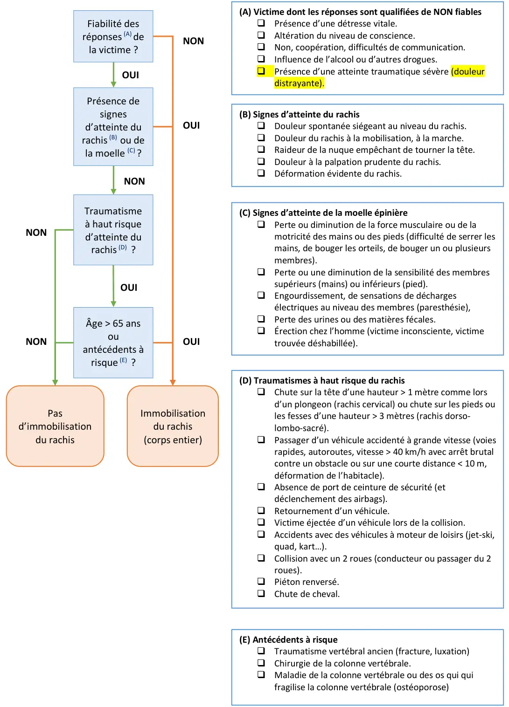
(A) Victime dont les réponses sont qualifiées de NON fiables
Fiabilité des réponses (A) de la victime ?
OUI
Présence d’une détresse vitale.
Altération du niveau de conscience.
NON
Non, coopération, difficultés de communication.
Influence de l’alcool ou d’autres drogues.
Présence d’une atteinte traumatique sévère (douleur distrayante).
Présence de signes d’atteinte du rachis (B) ou de la moelle (C) ?
NON
(B) Signes d’atteinte du rachis
OUI
Douleur spontanée siégeant au niveau du rachis.
Douleur du rachis à la mobilisation, à la marche.
Raideur de la nuque empêchant de tourner la tête.
Douleur à la palpation prudente du rachis.
Déformation évidente du rachis.
NON Traumatisme
(C) Signes d’atteinte de la moelle épinière
à haut risque
Perte ou diminution de la force musculaire ou de la
d’atteinte du
motricité des mains ou des pieds (difficulté de serrer les mains, de bouger les orteils, de bouger un ou plusieurs
rachis (D) ?
membres).
Perte ou une diminution de la sensibilité des membres
NON
supérieurs (mains) ou inférieurs (pied).
OUI
Engourdissement, de sensations de décharges électriques au niveau des membres (paresthésie),
Perte des urines ou des matières fécales.
Âge > 65 ans
Érection chez l’homme (victime inconsciente, victime
ou
OUI
trouvée déshabillée).
antécédents à
risque (E) ?
(D) Traumatismes à haut risque du rachis
Chute sur la tête d’une hauteur > 1 mètre comme lors d’un plongeon (rachis cervical) ou chute sur les pieds ou
Pas
d’immobilisation du rachis Immobilisation
les fesses d’une hauteur > 3 mètres (rachis dorso-
du rachis
lombo-sacré).
(corps entier)
Passager d’un véhicule accidenté à grande vitesse (voies
rapides, autoroutes, vitesse > 40 km/h avec arrêt brutal contre un obstacle ou sur une courte distance < 10 m, déformation de l’habitacle).
Absence de port de ceinture de sécurité (et déclenchement des airbags).
Retournement d’un véhicule.
Victime éjectée d’un véhicule lors de la collision.
Accidents avec des véhicules à moteur de loisirs (jet-ski, quad, kart…).
Collision avec un 2 roues (conducteur ou passager du 2 roues).
Piéton renversé.
Chute de cheval.
(E) Antécédents à risque
Traumatisme vertébral ancien (fracture, luxation)
Chirurgie de la colonne vertébrale.
Maladie de la colonne vertébrale ou des os qui qui fragilise la colonne vertébrale (ostéoporose)
242
En présence d’une plaie pénétrante isolée du thorax, du cou ou de la tête
appliquer la conduite à tenir devant une plaie du thorax, du cou ou de la tête ;
Il ne faut ne pas perdre de temps à immobiliser la victime car l’évacuation est prioritaire afin d’augmenter les chances de survie.
Dans tous les cas
protéger la victime contre le froid, la chaleur ou les intempéries ;
transmettre un bilan et appliquer les consignes reçues ;
surveiller attentivement la victime, en raison du risque d’aggravation brutale, en particulier après chaque mobilisation.
Cas particuliers
Victime agitée non-coopérante
Devant une victime agitée ou non coopérante (intoxication alcoolique associée, enfant…) et qui refuse toute immobilisation, ne pas l’immobiliser, la laisser s’installer dans la position qui lui est le plus confortable tout en essayant de maintenir à 2 mains la tête dans l’axe.
Demander un avis médical.
Victime qui présente une déformation préexistante de la colonne vertébrale (cyphose, scoliose…), victime très âgée (déformations liées à l’ostéoporose)
L’immobilisation en position horizontale corps entier d’une victime très âgée ou qui présente une déformation préexistante de la colonne vertébrale est difficile et peut être contre-productive (augmentation de la douleur, aggravation des signes ou de la lésion).
Il est alors nécessaire de respecter la position et la déformation de la victime et l’immobiliser dans la position qui lui est la plus confortable.
Seul le matelas immobilisateur à dépression permet de réaliser cette immobilisation et garder la victime immobile.
Traumatisme grave et suspicion de lésion du rachis de l’enfant
si l’enfant a perdu connaissance, conserver la stabilisation en ligne du rachis cervical pour assurer la liberté des voies aériennes supérieures ;
l’aspiration des sécrétions, débris, sangs et vomissures à l’aide d’un aspirateur de mucosité doit se faire en conservant la stabilisation en ligne du rachis cervical ;
laisser l’enfant dans son siège d’automobile (coque) si c’est possible (pas de déformation de la coque). Parfaire l’immobilisation de la tête et du corps de l’enfant à l’intérieur du siège à l’aide de rembourrage ;
pour relever un enfant suspect d’une lésion du rachis et qui est allongé au sol, utiliser comme chez l’adulte un brancard cuillère plutôt qu’un plan dur ;
comme pour l’adulte, immobiliser l’enfant sur un matelas immobilisateur à dépression (ou attelle à dépression pour les petits enfants) qui doit rester en place pour le transfert sur le brancard à l’hôpital. Le plan dur doit être réservé aux manœuvres d’extraction et non à l’immobilisation ultérieure de l’enfant ;
243
lors de l’immobilisation, une attention particulière doit être portée au maintien en ligne du rachis cervical. Comme chez l’adulte, les blocs de tête peuvent être positionnés dans le matelas à dépression ou sur le brancard cuillère pour restreindre les mouvements du rachis cervical.
Relevage et immobilisation d’une victime
L’immobilisation de la colonne vertébrale d’une victime se fait le plus souvent en position allongée. Toutefois l’immobilisation doit respecter une déformation ou une position d’attente adaptée à une détresse.
Choix du moyen
stabilisation du rachis
La stabilisation du rachis est réalisée :
en demandant à la victime de ne pas bouger si elle est consciente et coopérante ;
en maintenant la tête de la victime à deux mains pour garder le rachis cervical dans l’axe si la victime est calme.
restriction des mouvements du rachis
La restriction des mouvements du rachis cervical est réalisée :
à l’aide de blocs de tête placés de part et d’autre de la tête et maintenus par des sangles ;
à l’aide d’un matelas immobilisateur à dépression (MID) ;
à l’aide d’un collier cervical rigide ;
L’usage systématique du collier cervical chez l’adulte comme chez l’enfant n’est plus conseillé. Le collier cervical peut encore être utilisé pour restreindre les mouvements du rachis cervical lors de l’extraction ou du relevage d’une victime si la stabilisation de la tête par un sauveteur s’annonce difficile ou aléatoire.
Le collier cervical ne doit pas être utilisé s’il existe une contre-indication comme :
une possible obstruction des voies aériennes,
une déformation préexistante du rachis cervical (dans ce cas, maintenir la tête dans la position où elle se trouve).
Le collier cervical doit être :
adapté à la taille de la victime,
positionné correctement,
desserré une fois l’immobilisation sur le MID réalisée,
resserré pour une nouvelle mobilisation (transfert sur un brancard).
Après mise en place du collier, réévaluer la liberté des voies aériennes.
immobilisation de la colonne vertébrale
L’immobilisation corps entier d’une victime qui présente un traumatisme du rachis est réalisée :
en priorité dans un matelas immobilisateur à dépression qui doit rester en place pour le transfert sur le brancard à l’hôpital. Les blocs de tête peuvent être utilisés pour restreindre les mouvements du rachis cervical à l’intérieur du matelas ;
Une fois immobilisée, si la victime porte un collier cervical rigide, il faut le desserrer.
Le MID permet aussi d’immobiliser les victimes dans la position adaptée à leur détresse (demi-assise pour une détresse respiratoire).
exceptionnellement sur un plan dur équipé de blocs de tête :
en cas d’indisponibilité d’un MID,
si le nombre de secouristes n’est pas suffisant pour transférer la victime du plan dur sur le MID,
en l’absence de contre-indications comme :
une déformation préexistante de la colonne vertébrale,
244
ou s’il faut immobiliser la victime dans une autre position (détresse respiratoire).
Choix de la technique de relevage
relevage d’une victime allongée sur le sol
Pour relever une victime allongée au sol, il est préférable d’utiliser un brancard cuillère plutôt qu’un plan dur.
Une fois installés sur le brancard cuillère, les blocs de tête peuvent être utilisés pour restreindre les mouvements du rachis cervical. Ils permettent ainsi de libérer le secouriste chargé du maintien de la tête lors du transfert de la victime dans un moyen d’immobilisation.
En l’absence de brancard cuillère, relever la victime en utilisant une technique de relevage en pont à plusieurs secouristes.
Si aucune des deux techniques précédentes n’est possible, mettre en place un collier cervical et installer la victime sur un plan dur par roulement au sol avant de la transférer dans un moyen d’immobilisation.
victime située dans un endroit difficile d’accès (endroit exigu, véhicule accidenté…)
Si la victime nécessite une immobilisation corps entier, réaliser une technique d’extraction en utilisant les moyens dédiés comme le plan dur ou l’attelle cervico-thoracique.
Si la stabilisation de la tête par un sauveteur est difficile lors de la manœuvre d’extraction, il est nécessaire de restreindre les mouvements du rachis avec un collier cervical rigide puis l’attelle cervico-thoracique.
En l’absence d’indication d’immobilisation corps entier, rechercher la coopération de la victime et lui demander de se dégager elle-même, puis, si elle le peut de s’allonger sur le brancard.
Interrompre tout mouvement si la victime présente une aggravation de la douleur ou des signes d’atteinte de la moelle.
245
[07FT11 / 12-2023] PSE①
Maintien de la tête en position neutre
Indication
Le maintien de la tête du blessé en position neutre est recommandé dès qu’un traumatisme de la tête, de la nuque ou du dos de la victime est suspecté, dans l’attente d’une éventuelle immobilisation complète de l’axe tête-cou-tronc.
Le maintien de la tête peut être interrompu après avoir demandé à la victime de ne pas bouger la tête et si cette dernière est allongée à plat dos, calme et coopérante.
Justification
Le maintien de la tête du blessé en position neutre, dans l’alignement du tronc, limite les mouvements intempestifs du cou et permet la stabilisation du rachis cervical dans l’attente de son immobilisation.
Matériel
Aucun matériel.
Réalisation
Victime allongée sur le dos
demander à la victime de ne pas bouger la tête et la prévenir de ce que l'on va faire ;
se placer en position stable à genou dans l'axe de la victime, au niveau de sa tête ;
prendre appui avec les coudes1 sur le sol ou sur les genoux ;
placer les mains de chaque côté de sa tête pour la maintenir dans la position où elle se trouve ;
replacer la tête, si nécessaire, délicatement, dans l’axe du tronc, sans exercer de traction, jusqu'à ce que la victime regarde droit devant.
maintenir la position :
au moins jusqu’à l’immobilisation du rachis cervical,
en général, jusqu’à l'immobilisation complète du rachis.
Victime debout ou assise
se positionner devant ou derrière la victime ;
placer les mains de chaque côté de la tête de la victime ;
replacer délicatement la tête dans l’axe du tronc, en soulageant le rachis cervical du poids de la tête, jusqu'à ce que la victime regarde droit devant ;
maintenir la position tant que l’axe tête-cou-tronc n’est pas complètement immobilisé (ACT, plan dur avec immobilisateur de tête).
1 Diminue la fatigue et augmente la stabilité
246
Risques & Contraintes
Si un déplacement de la tête est nécessaire pour la ramener en position neutre, la manœuvre sera immédiatement interrompue si :
une résistance au déplacement de la tête est perçue ;
le déplacement déclenche ou aggrave une douleur cervicale ;
le déplacement déclenche des sensations anormales (fourmillements, décharges électriques) dans les membres supérieurs ou inférieurs.
Dans ces cas, maintenir la tête dans la position où elle se trouve dans l’attente d’un renfort médical.
Évaluation
La tête de la victime reste en position neutre.
247
[07FT12 / 12-2023] PSE①
Pose d’un collier cervical
Indication
Le collier cervical est mis en place aussi bien chez l’adulte que chez l’enfant suspect d'un traumatisme du rachis pour assurer une restriction des mouvements du rachis cervical avant une manœuvre de mobilisation de la victime, si la stabilisation du rachis par une technique manuelle ne peut pas être réalisée, car elle est difficile ou aléatoire.
La mise en place du collier cervical est réalisée après installation de la tête de la victime en position neutre.
Si la victime est allongée sur le ventre, le collier cervical est installé après son retournement.
Le collier cervical ne doit pas être utilisé s’il existe :
une possible obstruction des voies aériennes ;
une impossibilité de mettre la tête en position neutre (déformation préexistante du rachis cervical).
Justification
En limitant les mouvements du rachis cervical, le collier diminue le risque d’apparition ou d’aggravation d’une lésion de la moelle épinière lors de la manipulation d’une victime porteuse d’une lésion du rachis qui menace la moelle épinière.
Matériel
Un collier cervical adapté à la taille de la victime.
Réalisation
Victime allongée sur le dos
Le secouriste 1 doit :
maintenir la tête en position neutre pendant toute la manœuvre.
Le secouriste 2 doit :
dégager tout ce qui peut gêner la mise en place du collier cervical ;
choisir un collier cervical adapté à la taille de la victime ou en régler la taille ;
La hauteur du collier cervical doit être égale à la distance qui sépare le menton du haut du sternum de la victime. Ce réglage se fait en fonction du modèle utilisé.
glisser la partie arrière du collier sous la nuque de la victime en dégageant la ou les bandes autoagrippantes ;
positionner la partie avant du collier afin d’obtenir un bon appui menton-sternum ;
ajuster la hauteur du collier, si c’est possible (selon le modèle) ;
fixer les sangles ;
réévaluer la liberté des voies aériennes et s’assurer que le collier ne gêne pas la respiration de la victime.
La mise en place d’un collier cervical n’empêche pas le maintien par un secouriste de la tête de la victime lors de sa mobilisation dans les opérations d’extraction ou pour l’installer sur un dispositif d’immobilisation comme le MID.
248
Victime assise ou debout
Le secouriste 1 doit :
se placer de préférence derrière la victime ;
maintenir la tête en position neutre durant toute la manœuvre.
Le secouriste 2 doit :
dégager tout ce qui peut gêner la mise en place du collier cervical ;
choisir un collier cervical adapté à la taille de la victime ou en régler la taille ;
positionner la partie avant du collier afin d’obtenir un bon appui menton-sternum ;
glisser la partie arrière du collier sous la nuque de la victime ;
entourer le cou de la victime avec le collier et fixer les bandes autoagrippantes ;
réévaluer la liberté des voies aériennes et s’assurer que le collier ne gêne pas la respiration de la victime.
Risques & Contraintes
Une aggravation ou l’apparition d’un traumatisme de la moelle épinière peut survenir si une restriction des mouvements du rachis cervical n’est pas assurée.
Si le collier cervical n’est pas de taille adaptée au cou de la victime, les mouvements de la tête sont possibles.
Le collier cervical ne limite pas en totalité les mouvements de rotation et de latéralité de la nuque.
La mise en place du collier cervical peut entraîner des complications, comme une obstruction des voies aériennes, une difficulté à assurer une libération des voies aériennes, une compression des vaisseaux du cou avec aggravation d’un traumatisme crânien ou des complications locales par compression.
Le collier cervical peut aggraver une détresse respiratoire, particulièrement lorsqu’il est associé à des moyens d’immobilisation comme l’ACT.
Évaluation
Le collier cervical doit être :
adapté à la taille de la victime ;
positionné correctement : en appui sur le sternum et le menton en avant, le haut du dos et la base de la tête en arrière ; les clavicules et les angles de la mandibule latéralement doivent aussi être en contact avec le collier ;
relâché une fois l’immobilisation sur le MID réalisée.
Après mise en place du collier, la liberté des voies aériennes doit être réévaluée.
249
[07FT13 / 11-2021] PSE②
Pose de l’attelle cervico-thoracique
Indication
L’attelle cervico-thoracique (ACT) est un moyen qui permet d’immobiliser la tête, la nuque et le dos d’une victime suspecte d’un traumatisme de la colonne vertébrale, le plus souvent en position assise, pour assurer son dégagement ou son extraction.
L’ACT est mise en place après avoir placé un collier cervical pour assurer une restriction des mouvements du rachis cervical pendant sa mise en place.
Justification
Lorsqu’un traumatisme de la colonne vertébrale est suspecté, l’ACT permet de limiter les risques de mobilisation du rachis pendant une manœuvre d’extraction de la victime (victime incarcérée). Malgré tout, sa mise en place est toujours difficile et doit être prudente pour ne pas elle-même mobiliser le rachis.
Matériel
Une ACT, composée :
d’un corset semi-rigide (dans le sens de la hauteur), constitué d’une bande thoracique (corset) relié à un rabat qui immobilise la tête ;
de 3 sangles thoraciques ;
de 2 sangles de cuisses ;
de poignées de portage ;
d’un coussin de tête ;
de sangles de maintien de la tête au niveau du front et du menton ;
d’un sac de rangement.
Réalisation
La mise en place d’une ACT nécessite trois intervenants :
un secouriste, placé de préférence, derrière la victime, maintient la tête de la victime à deux mains pendant toute la manœuvre (secouriste 1) ;
deux secouristes se placent de part et d’autre de la victime pour installer l’ACT (secouristes 2 et 3).
Après avoir posé le collier cervical :
Le secouriste 2 ou 3 doit :
contrôler la motricité et la sensibilité de l’extrémité de chaque membre, si cela n’a pas été réalisé au cours du 4ème regard.
Les secouristes 2 et 3 doivent :
décoller légèrement la victime du dossier du siège tout en maintenant l’axe tête-cou-tronc ;
examiner alors le dos de la victime.
Le secouriste 2 ou 3 doit :
insérer l’ACT, extrémité de la tête en premier entre le dos de la victime et le dossier du siège, sans toucher les avant-bras du secouriste qui maintient la tête de la victime.
250
Les secouristes 2 et 3 doivent :
centrer l’ACT sur l’axe de la colonne vertébrale ;
ramener la victime au contact de l’ACT ;
glisser ensuite les parties mobiles du corset sous les bras de la victime (partie supérieure des bandes thoraciques au contact des aisselles) ;
maintenir le corset thoracique en attachant la sangle thoracique du milieu, puis inférieure et supérieure ; Chez l’enfant, il est possible de rouler une couverture devant le thorax et l’abdomen si l’ACT est trop grande.
Chez la femme enceinte, au cours des derniers mois de la grossesse, la sangle thoracique inférieure ne doit pas être serrée sur l’abdomen.
Chez une victime qui présente un traumatisme du thorax, la sangle thoracique supérieure ne doit pas être trop serrée afin de ne pas gêner la respiration.
attacher les sangles de cuisses en passant sous les cuisses ;
Les sangles peuvent éventuellement être croisées devant le pubis, s’il n’y a pas de traumatisme au niveau du bassin.
En cas de suspicion de fracture du fémur, la sangle de la cuisse correspondante ne doit pas être placée.
serrer alors l’ensemble des sangles ;
combler si nécessaire l’espace situé entre la bande de tête et la partie postérieure de la tête de la victime avec le coussin plié ;
maintenir les bandes de chaque côté de la tête par les deux sangles ;
L’une des sangles prend appui sur le front de la victime et l’autre sous le menton, sur la partie haute et rigide du collier cervical.
Les doigts du secouriste 1 sont déplacés pour permettre cette manœuvre.
ajuster et resserrer, si nécessaire, les différentes fixations de façon à ce que l’attelle ne bouge pas et ne glisse pas au cours du déplacement ou du relevage de la victime.
Éviter de comprimer le thorax et de limiter les mouvements respiratoires.
À la fin de la manœuvre :
contrôler la motricité et la sensibilité de l’extrémité de chaque membre ;
le maintien de la tête peut être relâché ;
une fois dans l'ACT, l'extraction de la victime peut être effectuée, éventuellement à l'aide d'un plan dur. Elle est ensuite transférée dans un MID. Pour cela, la victime peut être saisie par les poignées de l’ACT et les membres inférieurs par deux secouristes. Le troisième secouriste peut aider à cette manœuvre. Une fois la victime allongée sur le MID, l’ACT doit être retirée avant de rendre rigide le MID.
Retrait de l’ACT
En raison des risques secondaires (difficultés respiratoires), l’ACT sera retirée avant le transport de la victime vers l’hôpital. Une fois dans le MID :
retirer les sangles de fixation ;
soulever la victime en utilisant :
un pont à 4 porteurs, une 5ème personne retirant l’ACT lorsque la victime est soulevée de quelques centimètres,
un brancard cuillère en présence de 3 secouristes,
un pont à 3 porteurs, une 4ème personne retirant l’ACT lorsque la victime est soulevée de quelques centimètres.
Si un plan dur est présent sous la victime, le retirer en même temps que l’ACT.
251
Risques & Contraintes
La mise en place d’une ACT est difficile et génère souvent une mobilisation du rachis. Seuls des mouvements surs et réfléchis pourront limiter ce risque.
Une fois mise en place et les sangles thoraciques serrées, l’ACT entraîne une limitation des mouvements de la cage thoracique et est donc susceptible d’aggraver une détresse respiratoire. Son utilisation doit être limitée aux opérations de dégagement ou d’extraction des victimes. L’ACT n’est pas un moyen d’immobilisation de la colonne vertébrale à utiliser pour le transport des victimes.
Évaluation
La tête de la victime est parfaitement maintenue et l’immobilisation du rachis est assurée pour l’extraction de la victime.
L’ACT est retirée une fois la victime posée sur le MID.
252
[07FT14 / 11-2021] PSE②
Immobilisation générale sur un plan dur
Indication
Le plan dur est un outil qui est essentiellement utilisé pour permettre une extraction d’une victime située dans un endroit difficile d'accès (endroit exigu, véhicule accidenté…).
Le plan dur avec immobilisateur de tête est utilisé en l’absence de matelas immobilisateur à dépression, pour immobiliser une victime suspecte d’un traumatisme du rachis.
Le plan dur peut aussi être utilisé pour allonger une victime suspecte d'un traumatisme du rachis et qui est retrouvée debout.
Justification
Le plan dur permet de maintenir l’axe tête-cou-tronc de la victime, de limiter le risque d’aggravation d’une éventuelle lésion de la colonne vertébrale.
Matériel
Le plan dur est constitué :
d’un plan rectangulaire de 1,85 m environ en longueur. En PVC, il est radiotransparent et résiste à l’eau ; L’absorption de liquide biologique ou de sang par le matériel ne doit pas être possible pour faciliter la décontamination et éviter la transmission de germes infectieux.
Ce plan dur est équipé de poignées de portage.
de sangles pour maintenir la victime au niveau du thorax, du bassin et des membres inférieurs.
L’immobilisateur de tête est composé :
d’un coussin de tête, fixé sur le plan dur ;
de deux blocs d’immobilisation latéraux ;
de deux sangles de maintien de la tête au niveau du front et du menton.
Réalisation
Victime allongée sur le dos
L’usage d’un brancard cuillère reste la technique de référence pour relever une victime allongée sur le dos et la transférer sur un dispositif d’immobilisation du rachis.
En l'absence de brancard cuillère, la technique d’installation sur un plan dur d’une victime allongée sur le dos est la technique du pont à quatre porteurs.
Bien qu’entraînant un risque de mobilisation de la victime plus élevé, la technique de roulement de la victime au sol à trois secouristes (décrite ci-dessous) est utilisable si les techniques précédentes ne peuvent être réalisées.
La motricité et la sensibilité de l’extrémité de chaque membre de la victime doivent être contrôlées avant de débuter la manœuvre si cela n’a pas été fait au cours du 4ème regard.
La mise en œuvre de cette technique nécessite trois intervenants :
un secouriste poursuit le maintien de la tête de la victime pendant toute la manœuvre (secouriste 1) ;
253
C’est ce secouriste qui guide et commande l’ensemble de la manœuvre.
deux secouristes, pour installer la victime sur le plan dur (secouristes 2 et 3).
Après avoir posé un collier cervical :
le secouriste 2 ou 3 doit :
placer la face palmaire des mains de la victime sur les cuisses de celle-ci ;
En aucun cas le membre supérieur du côté du retournement ne doit être placé au-dessus de la tête, car ce déplacement entraîne un mouvement au niveau de la colonne vertébrale.
remettre, si nécessaire, les membres inférieurs de la victime dans l’axe de son corps tout en maintenant le bassin ;
placer contre la victime, du côté du retournement, un rembourrage de 3 à 4 cm d’épaisseur (coussin de l’ACT ou couverture roulée ou autre moyen) ;
prépositionner le plan dur (équipé du coussin de l’immobilisateur de tête) le long du blessé du côté opposé au retournement.
les secouristes 2 et 3 doivent :
se placer à genoux du côté du retournement, à quelques centimètres du blessé, au niveau du thorax et du bassin de la victime ;
saisir la victime du côté opposé au retournement au niveau de l’épaule, du bassin et des membres inférieurs qui doivent rester alignés.
La main de la victime peut être bloquée contre le haut de la cuisse de la victime par la main d’un secouriste.
1er secouriste : « Êtes-vous prêts ? »
Secouristes 2 et 3 : « Prêts ! »
Secouriste 1 : « Attention pour tourner… Tournez ! »
les secouristes 2 et 3 doivent :
tourner la victime vers eux.
Lors de cette rotation, les secouristes doivent garder les bras tendus et utiliser le poids de leur corps pour donner de la force à leur mouvement.
La rotation de la victime se fait lentement et d’un bloc ; elle est arrêtée dès que la victime est sur le côté.
le secouriste 1 doit :
accompagner le mouvement pour garder la tête du blessé dans l’axe du tronc.
les secouristes 2 et 3 examinent rapidement le dos de la victime tant qu’elle est sur le côté.
Secouriste 1 : « Glissez le plan dur ! »
les secouristes 2 et 3 doivent :
glisser le plan dur sous le dos de la victime ;
Pour cela, ils lui donnent une inclinaison de façon à ce qu’il vienne se plaquer contre le blessé et le maintiennent dans cette position. Ils veillent à ce que le coussin de tête soit bien positionné.
indiquer quand le plan dur est en place.
Secouriste 1 : « Attention pour poser… Posez ! »
les secouristes 2 et 3 doivent :
reposer la victime et le plan dur délicatement sur le sol ;
repositionner la victime au centre du plan dur en la faisant glisser si nécessaire, tout en maintenant l’axe-tête-cou-tronc et sous les ordres du secouriste 1 ;
solidariser la victime sur le plan dur à l’aide :
254
d’une sangle-araignée,
de plusieurs sangles placées au niveau de la partie supérieure du thorax, du bassin et des cuisses, juste au-dessus des genoux.
Cette immobilisation peut être complétée en s’aidant éventuellement d’une couverture roulée ou d’un coussin placé entre les jambes de la victime.
solidariser la tête de la victime au plan dur en plaçant successivement :
les blocs immobilisateurs latéraux de chaque côté de la tête,
les sangles de fixation frontale et mentonnière.
À la fin de la manœuvre, les secouristes peuvent alors :
contrôler la motricité et la sensibilité de l’extrémité de chaque membre.
Victime allongée sur le ventre et qui doit être installée sur un plan dur
La mise en œuvre de cette technique nécessite trois intervenants :
un secouriste, placé à la tête de la victime, en trépied, genou relevé côté retournement et genou au sol dans le prolongement de l’épaule côté retournement de la victime, afin d’anticiper la position finale, après retournement de la victime. Il maintient la tête de la victime avec deux mains (prise occipito-frontale) (secouriste 1) ;
C’est ce secouriste qui guide et commande l’ensemble de la manœuvre.
deux secouristes, pour installer le plan dur (secouristes 2 et 3).
Initialement :
les secouristes 2 et 3 doivent :
remettre si nécessaire les membres inférieurs de la victime dans l’axe de son corps tout en maintenant le bassin ;
glisser les mains de la victime sous ses cuisses (paume contre face avant des cuisses) ;
installer contre la victime, du côté du retournement, un rembourrage de trois à quatre centimètres d’épaisseur (coussin de l’ACT, couverture roulée ou autre moyen) ;
placer le plan dur (équipé du coussin de l’immobilisateur de tête) à dix centimètres environ le long de la victime du côté du retournement ;
se placer à genoux sur le plan dur du côté du retournement ;
saisir la victime au niveau de l’épaule, de la hanche et des membres inférieurs.
1er secouriste : « Êtes-vous prêts ? »
Secouristes 2 et 3 : « Prêts ! »
Secouriste 1 : « Attention pour tourner… Tournez ! »
les secouristes 2 et 3 doivent :
tourner la victime vers eux pour la mettre sur le côté (perpendiculaire au sol).
le secouriste 1 doit :
accompagner le mouvement de la tête qui effectuera une rotation moindre que celle du corps pour la ramener en position neutre ;
ordonner l’arrêt de la manœuvre lorsque la victime est sur le côté.
Secouriste 1 : « Dégagez le plan-dur… »
les secouristes 2 et 3 doivent :
dégager un à un leurs genoux hors du plan dur puis les poser sur le sol contre le plan dur ;
255
indiquer qu’ils sont en position lorsqu’ils ont dégagé le plan dur.
Secouriste 1 : « Attention pour tourner… Tournez ! »
les secouristes 2 et 3 doivent :
poursuivre la rotation de la victime dans la même direction que précédemment pour amener la victime en position allongée sur le dos sur le plan dur.
Victime debout
La technique d’installation d’une victime debout1 sur un plan dur et suspecte d’une lésion de la colonne vertébrale nécessite trois intervenants :
un secouriste, placé devant la victime dans l’axe tête-cou-tronc, poursuit le maintien de la tête pendant toute la manœuvre (secouriste 1) ;
deux secouristes, pour installer le plan dur (secouristes 2 et 3).
C’est le secouriste 2, placé derrière la victime durant la manœuvre, qui commande celle-ci.
Après avoir posé le collier cervical :
le secouriste 2 doit :
placer le plan dur équipé du coussin de l’immobilisateur de tête contre le dos de la victime ;
vérifier que rien ne peut gêner la bascule au sol du plan dur ;
saisir dans sa partie supérieure le plan dur.
le secouriste 3 doit :
se placer face à la victime à côté du secouriste 1 ;
passer l’avant-bras du côté du secouriste 1 sous l’aisselle de la victime ;
saisir la poignée du plan dur le plus haut possible pour assurer un maintien optimal de la victime ;
placer son autre main de manière à relayer le maintien tête du secouriste 1 ;
le secouriste 1 doit :
placer sa main libre sous l’autre aisselle de la victime ;
saisir la poignée du plan dur le plus haut possible pour assurer un maintien optimal de la victime ;
poursuivre le maintien de la tête de la victime avec son autre main.
Secouriste 2 : « Êtes-vous prêts ? »
Secouristes 1 et 3 : « Prêts ! »
Secouriste 2 : « Attention pour basculer… Basculez ! »
les trois secouristes doivent :
allonger la victime en basculant en arrière le plan dur.
Pendant cette bascule, s’assurer que la tête de la victime reste au contact du plan dur et dans l’axe du tronc en accompagnant le mouvement d’allongement de la victime sans lâcher la tête.
Si la victime retrouvée en position debout est casquée, il convient de :
réaliser la manœuvre en lui laissant son casque ;
retirer le casque lorsque la victime a été allongée au sol au moyen du plan dur et poser ensuite le collier cervical, si nécessaire.
Transfert de la victime du plan dur sur le MID
1 Dans un grand nombre de cas, les victimes se mettent debout après avoir effectué une chute ou après un accident de la circulation. Si la victime est suspecte d’un traumatisme du rachis, il est nécessaire de l’allonger en utilisant un plan dur.
256
Il n'est pas obligatoire pour déplacer la victime sur quelques mètres de la sangler.
déposer la victime sur son plan dur dans le MID ;
soulever la victime pour retirer le plan dur avant de l’immobiliser en utilisant :
un pont à 4 porteurs, une 5ème personne retirant le plan dur lorsque la victime est soulevée de quelques centimètres,
un brancard cuillère en présence de 3 secouristes,
un pont à 3 porteurs, une 4ème personne retirant le plan dur lorsque la victime est soulevée de quelques centimètres,
si aucune de ces techniques ne peut être utilisée, la victime sera transportée immobilisée sur le plan dur.
Immobilisation d’une victime sur un plan dur
le secouriste 1
maintient la tête à deux mains ;
les secouristes 2 et 3 doivent
solidariser la tête de la victime au plan dur en plaçant successivement :
les blocs immobilisateurs latéraux de chaque côté de la tête,
les sangles de fixation frontale et mentonnière.
Les secouristes peuvent alors :
solidariser la victime sur le plan dur à l’aide :
d’une sangle-araignée,
de plusieurs sangles placées au niveau de la partie supérieure du thorax, du bassin et des cuisses, juste au-dessus des genoux. Cette immobilisation peut être complétée en s’aidant éventuellement d’une couverture roulée ou d’un coussin placé entre les jambes de la victime.
contrôler la motricité et la sensibilité de l’extrémité de chaque membre.
À l'hôpital, la victime doit être placée sur le brancard de l'hôpital conditionnée avec son matériel d'immobilisation. Le retrait du matériel d'immobilisation est sous la responsabilité de l'hôpital.
Idéalement, le transfert d'une victime suspecte d'un traumatisme du rachis entre deux dispositifs se fait à l'aide d'un brancard cuillère.
Risques & Contraintes
Le non-respect de la technique est susceptible d’aggraver une lésion de la colonne vertébrale.
Des sangles thoraciques trop serrées sont susceptibles d’aggraver une détresse respiratoire.
Évaluation
Une fois immobilisée, la victime :
ne peut faire aucun mouvement spontané de la tête ;
a l’axe tête-cou-tronc maintenu ;
ne peut glisser ni vers le haut, ni vers le bas, ni sur le côté ;
peut respirer sans gêne, malgré les sangles ;
ne présente aucun signe d’aggravation d’une lésion de la colonne vertébrale.
257
[07FT15 / 06-2018] PSE②
Immobilisation générale sur un matelas à dépression
Indication
Le matelas immobilisateur à dépression (MID) est utilisé pour immobiliser la colonne vertébrale d’une victime, suspecte d’un traumatisme de la colonne vertébrale, du bassin ou de la cuisse.
Ce moyen est particulièrement indiqué si la victime présente de multiples lésions.
Le MID permet aussi d’immobiliser les victimes dans la position adaptée à leur détresse (demi-assise pour une détresse respiratoire).
Le MID doit rester en place pour le transfert sur le brancard à l'hôpital.
Justification
En immobilisant le corps entier d’une victime, le MID permet de respecter son axe tête-cou-tronc et limite toute apparition ou aggravation d’une éventuelle lésion de la colonne vertébrale au cours de la mobilisation ou du transport d’une victime.
Il permet en outre d’immobiliser les membres inférieurs.
Matériel
Le matelas immobilisateur à dépression est constitué :
d’une enveloppe souple, résistante et étanche contenant des billes de polystyrène expansé ;
d’un robinet permettant de régler la sortie ou l’entrée de l’air ;
d’un dispositif de saisie (poignées) ;
de sangles de maintien.
Il ne peut être utilisé qu’avec une pompe d’aspiration manuelle ou électrique.
Son principe de fonctionnement consiste, une fois la victime installée sur le matelas, à aspirer l’air contenu dans l’enveloppe étanche. Cette aspiration provoque une solidarisation des petites billes qui rigidifie le matelas en moulant la victime, ce qui provoque son immobilisation.
Réalisation
L’installation d’une victime sur le MID est effectuée en utilisant :
un brancard cuillère ;
une technique de relevage dite du pont à quatre équipiers porteurs ;
exceptionnellement un plan dur.
Préalablement à l’installation de la victime, il faut :
placer le MID à proximité de la victime, dans une position adaptée à la technique de relevage utilisée ; Dans la mesure du possible, la surface doit être plane et dure. Si nécessaire, une bâche de protection doit être mise sous le matelas afin de limiter les risques de déchirure ou de coupure.
ouvrir le robinet pour permettre l’entrée de l’air et répartir les billes qui se désolidarisent ;
rigidifier modérément le MID en relevant les côtés pour faciliter la manœuvre de relevage ;
258
mettre en place un drap ou une couverture de survie1.
Une fois la victime déposée sur le MID à l’aide d’une technique adaptée :
retirer systématiquement un dispositif de portage éventuel ;
mettre en forme le matelas autour du corps de la victime. Pour cela :
rapprocher les bords du matelas de part et d’autre de la tête de la victime,
Cela permet au secouriste de dégager ses mains puis de les replacer à l’extérieur du matelas et poursuivre le maintien de la tête jusqu’à la rigidification de ce dernier.
Les blocs de tête peuvent être utilisés pour restreindre les mouvements du rachis cervical à l’intérieur du matelas.
Le matelas ne doit en aucun cas appuyer sur le sommet du crâne, car l’aspiration de l’air entraînerait par rétraction une flexion de la tête.
maintenir les bords latéraux du matelas le long de la victime sans la mobiliser, en s’aidant des sangles de maintien.
faire le vide à l’intérieur du matelas en aspirant l’air avec un dispositif d’aspiration jusqu'à ce que le matelas devienne dur ;
fermer le robinet et déconnecter le dispositif d’aspiration ;
ajuster les sangles de maintien.
Une fois la victime immobilisée, si elle porte un collier cervical rigide, il est possible de le relâcher.
Risques & Contraintes
La rigidité du matelas doit être surveillée en permanence. Toute diminution de celle-ci (piqûre, déchirure…) nuit à la qualité de l’immobilisation générale de la victime.
Le transport de la victime doit se faire en déposant l’ensemble « victime-matelas » sur un brancard ou un plan dur et après l’avoir arrimé.
Lorsque cela n’est pas immédiatement possible, pour quelques mètres, le MID seul, une fois rigidifié, peut être utilisé en le soutenant sur les côtés pour qu’il ne se plie pas en son milieu.
Un épanchement de sang de la victime (hémorragie extériorisée, reprise du saignement d’une hémorragie externe…) peut facilement être masqué par ce type d’immobilisation.
Évaluation
L’immobilisation sur un matelas immobilisateur à dépression est correcte si :
aucun mouvement de la victime n’est possible ;
la victime ne peut ni glisser vers le haut, ni vers le bas ou sur le côté ;
les sangles ne gênent pas la respiration de la victime ;
le matelas n’est pas au contact avec le haut du crâne.
1La face ou la couleur de la couverture n’ont que peu d’incidence sur la déperdition de chaleur.
259
[07AC09 / 06-2018] PSE②
Traumatisme du crâne
Définition
On appelle traumatisme du crâne (ou crânien) tout choc reçu sur le crâne.
Causes
Les traumatismes crâniens sont la conséquence de multiples mécanismes vulnérants de la boîte crânienne : choc direct, décélération brutale, blessure par un objet pénétrant...
Risques & Conséquences
Un choc direct au niveau de la tête peut entraîner, selon son intensité et son mécanisme, des lésions cutanées, osseuses (fractures) ou cérébrales.
Une décélération brusque avec un arrêt net de la tête, sans aucun choc sur un obstacle, peut également entraîner des lésions cérébrales, uniquement par l’ébranlement du cerveau contre la boîte crânienne.
Ces lésions peuvent être plus ou moins rapidement évolutives et mettre en jeu le pronostic vital. Il faut donc surveiller régulièrement l’état de conscience de la victime. Dans certains cas, une prise en charge chirurgicale précoce est nécessaire pour augmenter les chances de récupération.
Signes
L’expression du mécanisme : un traumatisme parfois violent au niveau du crâne (coup, choc) ou indirect (décélération brutale).
Au début du bilan, la victime peut présenter :
une perte de connaissance qui persiste depuis l’accident ;
des troubles de la conscience (somnolence, confusion, agitation anormale) ;
des convulsions ;
une asymétrie pupillaire nette et fixe.
Lors de la poursuite du bilan :
La victime peut se plaindre :
de céphalées ou d’une douleur spontanée au niveau des os du crâne ;
de nausées ou de vomissements.
À l’examen, le secouriste peut trouver :
une perte de la mémoire des faits souvent synonyme d’une perte de connaissance passagère immédiatement après l’accident, parfois relatée par les témoins ;
un déficit moteur neurologique ;
une plaie du cuir chevelu, un hématome ou une déformation ;
un hématome « en lunettes » (autour des yeux) pouvant témoigner d’une fracture des os de la base du crâne ;
une otorragie ou une épistaxis ;
En cas d’otorragie, la compression manuelle est inutile. Vérifier que l’écoulement sanguin vient bien de l’intérieur de l’oreille en la nettoyant avec une compresse ;
des lésions associées en particulier de la colonne cervicale.
260
Au cours de la surveillance, on peut constater :
la survenue d’une perte de connaissance secondaire ;
des troubles de la conscience apparaissant plusieurs minutes à plusieurs heures après l’accident alors que la victime était parfaitement consciente (intervalle libre).
Chez l’enfant ou le nourrisson, les signes peuvent être différents de ceux de l’adulte :
la perte de connaissance est moins fréquente ;
l’enfant ou le nourrisson peut présenter des troubles du comportement (il ne joue plus, il est prostré) souvent constatés par l’entourage ;
une pâleur.
Toute chute d’un enfant ou d’un nourrisson, d’une hauteur supérieure à sa taille (table à langer, chaise haute) doit faire suspecter un traumatisme crânien et faire l’objet d’un avis médical immédiat.
Principe de l’action de secours
limiter les risques d’aggravation par une immobilisation de la victime suspecte d’une lésion du rachis ;
demander un avis médical.
261
[07PR09 / 07-2026] PSE②
Traumatisme du crâne
Face à une urgence ou une détresse vitale, ou en cas d’aggravation
appliquer la conduite à tenir adaptée et réaliser en priorité les gestes d’urgence qui s’imposent ;
La victime ne présente pas de détresse vitale apparente
maintenir la tête en position neutre ;
retirer le casque de protection si la victime en est équipée ;
administrer de l’oxygène en inhalation, si nécessaire ;
si besoin, stabiliser ou restreindre les mouvements du rachis cervical ;
protéger la victime contre le froid, la chaleur ou les intempéries ;
transmettre un bilan et appliquer les consignes reçues ;
surveiller attentivement la victime, en raison du risque d’aggravation brutale.
Si l’immobilisation du rachis est nécessaire
relever la victime en utilisant la méthode de relevage adaptée ;
immobiliser le rachis de la victime avec le matériel le plus adapté.
262
[07AC10 / 12-2023] PSE②
Traumatisme du bassin
Définition
C’est l’ensemble des signes dus à une atteinte traumatique du bassin, avec ou sans plaie. Il est responsable de fractures ainsi que de lésions des organes internes, notamment hémorragiques, pouvant mettre rapidement en jeu la vie de la victime. Il est grave et touche surtout l’adulte jeune.
Causes
Il survient dans un contexte de traumatisme à haute cinétique (accident de la voie publique, chutes de grande hauteur) avec dans deux cas sur trois des lésions associées (thorax, crâne, membres). Le choc peut-être :
direct avec ou sans plaie au niveau de la partie basse de l’abdomen, des hanches ou des fesses ;
à distance du bassin et transmis1 par l’intermédiaire des os des membres inférieurs.
Plus rarement, il peut survenir à la suite de traumatismes à faible énergie chez la personne âgée.
Risques & Conséquences
La mortalité des traumatismes du bassin est de l’ordre de 8 à 15 %. La gravité est due :
à la perte de sang2 due aux fractures elles-mêmes ;
à une perforation ou une rupture de vessie ou des canaux d’évacuation de l’urine.
Signes
L’expression du mécanisme : un traumatisme parfois violent, direct au niveau du bassin (écrasement, coup, choc) ou moins violent chez une personne âgée.
La victime peut se plaindre :
d’une douleur spontanée siégeant au niveau du bassin ou dans la partie basse de l’abdomen.
Elle est un signe évocateur d’un traumatisme du bassin.
À l’examen, le secouriste peut trouver :
une douleur localisée au niveau du bassin ;
une impossibilité de bouger les membres inférieurs en raison de la douleur ;
la présence de sang dans les urines ou sur les sous-vêtements (liée à l’atteinte de la vessie ou de l’urètre) ;
un hématome important au niveau du pubis ;
une lésion des organes urogénitaux externes, particulièrement chez l’homme ;
des lésions associées peuvent masquer le traumatisme du bassin.
Toute victime traumatisée qui a perdu connaissance et qui présente des signes de détresse circulatoire doit être considérée systématiquement comme suspecte d’un traumatisme du bassin.
Principe de l’action de secours
prévenir toute détresse circulatoire par une surveillance attentive ;
limiter toute mobilisation de la victime, sauf en cas de nécessité absolue ;
immobiliser la victime et assurer une contention du bassin si nécessaire ;
demander un avis médical.
1Chute ou choc sur la hanche, chute de grande hauteur sur les talons.
2 Une fracture multiple du bassin est fréquemment responsable d’une hémorragie interne importante.
263
[07PR10 / 07-2026] PSE②
Traumatisme du bassin
Face à une urgence ou une détresse vitale, ou en cas d’aggravation
appliquer la conduite à tenir adaptée et réaliser en priorité les gestes d’urgence qui s’imposent ;
Face à un traumatisme du bassin
laisser la victime en une position allongée stricte, si possible ;
dénuder le bassin de la victime :
dans la mesure du possible en préservant son intimité pour vérifier la présence de lésions (plaies, hématomes, œdèmes) ou de sang sur les sous-vêtements,
pour vérifier la présence de lésions dans le bas du dos ou au niveau des fesses de la victime au cours de sa mobilisation (PLS, relevage, immobilisation).
mettre en place une contention externe du bassin :
si la victime présente un traumatisme du bassin associé à des signes de détresse circulatoire :
après avis médical ;
en cas d’impossibilité d’obtenir un avis médical.
protéger au plus vite contre le froid, le vent ou la chaleur ;
transmettre le bilan pour obtenir un avis médical ;
relever et immobiliser sur un matelas à dépression, selon les consignes reçues ;
surveiller attentivement la victime du fait d’un risque d’aggravation brutale.
264
[07FT16 / 12-2023] PSE②
Contention pelvienne
Indication
Une contention pelvienne est mise en place chez une victime suspecte d'un traumatisme du bassin avant son transport :
après avis ou à la demande du médecin ;
si la victime présente des signes de détresse circulatoire (hémorragie interne) et qu’un avis médical ne peut pas être obtenu.
Une contention pelvienne peut être préinstallée sous la victime dans l'attente d'un avis médical.
Justification
En réalisant une compression circonférentielle, la ceinture pelvienne entraîne :
un rapprochement des ailes iliaques, qui rapproche les fragments osseux de la fracture et les immobilise ;
une diminution du saignement secondaire aux lésions vasculaires associées par :
immobilisation de la région lésée,
augmentation de la pression intra-abdominale.
Matériel
Une ceinture pelvienne adaptée à la taille de la victime.
La réalisation de ceinture improvisée à l'aide d’un moyen de fortune (drap…) n'est pas recommandée.
Réalisation
La victime est allongée sur le dos :
glisser la ceinture sous les genoux de la victime ;
relever légèrement la victime (pont adapté, à plusieurs sauveteurs) pour décoller ses fesses du sol ;
glisser la ceinture sous les fesses, la centrer au niveau des grands trochanters ;
reposer la victime au sol ;
ramener les deux extrémités de la ceinture au niveau de la symphyse. Dans certains cas il est possible de couper ou de rabattre à l'intérieur les extrémités pour les adapter à la taille de la victime ;
assurer une tension appropriée1 de la ceinture en utilisant le dispositif de serrage prévu à cet effet et sécuriser sa fermeture.
La ceinture doit rester en place et laissée avec la victime à l'hôpital.
1 La tension appropriée est définie selon le type de ceinture utilisé.
265
Risques & Contraintes
La ceinture pelvienne est particulièrement efficace pour les fractures dites « en livre ouvert » du bassin. Mise en place pour d'autres types de fractures, elle ne présente pas d'effet secondaire si les conditions de mise en place sont respectées.
La mise en place de la ceinture ne doit pas prendre plus de 3 à 5 minutes.
Évaluation
La ceinture mise en place assure une compression circonférentielle :
elle prend appui sur les côtés, au niveau des grands trochanters ;
en avant, elle passe sur la symphyse pubienne ;
une fois mise en place, le dispositif de sécurité empêche son relâchement intempestif.
266
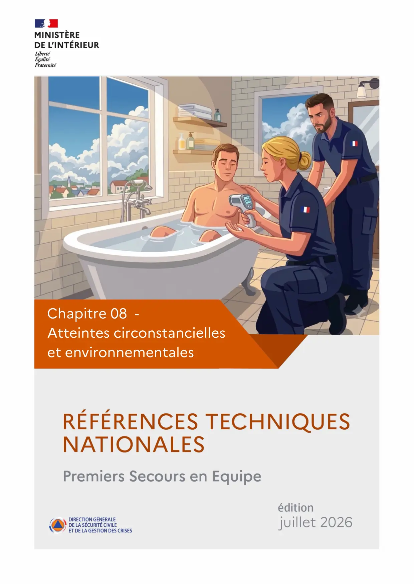
- Atteintes circonstancielles et environnementales
267
[08AC01 / 06-2018] PSE②
Accident électrique
Définition
L’accident électrique regroupe toutes les lésions de l’organisme, temporaires ou définitives, provoquées par le courant électrique et qui sont dues :
à un effet direct du courant électrique lorsqu’il traverse les tissus (cerveau, cœur, nerfs, vaisseaux…) ;
au traumatisme contondant provoqué par une contraction musculaire violente ou par la chute de la victime (éjection) ;
au dégagement anormal de chaleur ou de lumière dégagé par le courant électrique.
L’électrisation est l’ensemble des lésions provoquées par le passage d’un courant électrique à travers le corps.
Le terme électrocution est réservé à une électrisation mortelle, soit immédiatement, soit très précocement.
Causes
On distingue différents types d’accidents électriques :
l’accident par contact avec deux conducteurs sous tension ou un conducteur sous tension et la terre ;
l’accident lié à la production d’un arc électrique ;
le foudroiement : action de la foudre sur le corps humain.
En France, on estime à une centaine par an le nombre d’accidents mortels d’origine électrique, toutes origines confondues :
accidents du travail ;
accidents domestiques : appareils ménagers électriques défectueux, surtout en ambiance humide (cuisine, salle de bain), bricolage d’installation électrique, enfants en bas âge en phase de découverte... ;
accidents dus à des conduites à risque (ascension de pylônes, marche sur le toit d’un wagon à proximité d’une caténaire...) ;
accidents de loisirs : parapente, pêche, cerf-volant à proximité de lignes à haute tension… ;
foudroiement. La foudre étant la forme d’électricité naturelle la plus dangereuse, responsable d’une vingtaine d’accidents mortels par an.
Mécanisme
D’une manière générale, le courant suit le chemin offrant le moins de résistance entre le point d’entrée et le point de sortie du corps.
La recherche de ces points d’entrée et de sortie est systématique afin de guider l’évaluation des organes traversés.
À l’inverse des nerfs et des vaisseaux sanguins, la peau constitue la barrière la plus résistante, sa qualité dépend de son état (intègre, sèche, humide, mouillée…). Le liquide amniotique étant un excellent conducteur électrique, la grossesse devra être systématiquement recherchée pour évaluer toute atteinte du fœtus.
Le courant électrique peut endommager tous les organes qui se trouvent sur son chemin par 3 mécanismes différents, en fonction de son intensité (en milliampères - mA) et de son voltage (en volts - V) :
par un effet de stimulation / inhibition nerveuse et musculaire : sensation de picotements à 1 mA, tétanisation des muscles respiratoires à 30 mA jusqu’à la fibrillation ventriculaire à 80 mA ;
268
par brûlures électriques : destruction de la peau et des tissus en profondeur jusqu’à la carbonisation ;
par destruction irréversible de la membrane cellulaire.
Il est classique de dire que les hauts voltages (≥ 1000 V) « brûlent » et les faibles voltages (< 1000 V) « tuent ».
Il est important de ne pas oublier les circonstances de l’accident électrique et de rechercher les éventuelles complications traumatiques d’une chute ou d’une projection de la victime.
Risques & Conséquences
Le passage du courant dans l’organisme peut entraîner :
une perte de connaissance par atteinte du système nerveux central ;
un arrêt de la respiration par atteinte du système nerveux ou par tétanisation des muscles respiratoires ;
un arrêt de la circulation suite à un arrêt respiratoire prolongé ou par survenue d’un fonctionnement anarchique du cœur (fibrillation ventriculaire), lors du passage du courant à travers le cœur ;
une brûlure thermique souvent grave, par flash ou arc électrique lors d’un court-circuit ;
une brûlure électrique interne sur le trajet de passage du courant dont seuls sont visibles les points d’entrée et de sortie qui doivent être systématiquement recherchés ;
des traumatismes divers, en particulier de la colonne vertébrale, notamment cervicale, si la victime a été projetée à cause d’une violente contraction musculaire.
Les courants à haute tension (≥ 1000 V), plus particulièrement continue, provoquent des brûlures profondes et des traumatismes.
Les courants de basse tension (< 1000 V), le plus souvent alternatifs, provoquent surtout des fonctionnements anarchiques du cœur (fibrillation ventriculaire).
Signes
L’accident électrique est habituellement évoqué lors du 1er regard.
Les signes présentés par la victime ne sont pas spécifiques.
Au 2ème ou 3ème regard, la victime peut être consciente ou avoir perdu connaissance, en arrêt respiratoire ou cardio-respiratoire ou présenter une détresse.
Au 4ème regard, elle peut présenter des brûlures plus ou moins étendues ou des traumatismes associés.
Même si la victime ne présente aucun signe, des manifestations secondaires peuvent apparaître. Un avis médical est indispensable.
Principe de l’action de secours
assurer la sécurité de l’intervention ;
réaliser les gestes de secours adaptés en cas d’arrêt cardiaque ou de détresse vitale ;
prendre en charge les brûlures provoquées (flash ou arc électrique) ;
obtenir un avis médical, systématiquement.
269
[08PR01 / 12-2023] PSE②
Accident électrique
s’assurer que la victime n’est pas en contact direct ou indirect (eau) avec un conducteur endommagé (fil électrique, appareil ménager sous tension) ou un câble électrique de haute tension au sol ;
Dans le cas contraire :
ne pas s’approcher ou toucher la victime avant d’être certain que l’alimentation est coupée (pour le courant haute tension, avoir été averti par les autorités responsables),
faire écarter immédiatement les personnes présentes et leur interdire de toucher la victime.
Si un véhicule est en contact accidentel avec une ligne électrique, ne pas s’approcher du véhicule et ordonner aux occupants qui sont à l’intérieur de rester dedans, tant que le service compétent n’a pas donné l’assurance que la ligne est hors tension1.
couper le courant (débrancher l’appareil en cause) ou le faire couper par une personne qualifiée (EDF, SNCF…), si possible ;
On peut s’approcher et manipuler des victimes frappées par la foudre.
enlever les vêtements en combustion et les chaussures pour prévenir d’autres lésions thermiques ;
Si la victime présente une détresse vitale, appliquer la conduite à tenir adaptée à son état.
Si la victime présente des brûlures, appliquer la conduite à tenir adaptée face à une brûlure thermique et électrique2.
compléter le bilan et rechercher des lésions provoquées par une contraction musculaire ou si la victime a été projetée au moment de l’électrisation ;
réaliser les gestes et soins complémentaires ;
demander un avis médical et appliquer les consignes reçues ;
Si la victime est une femme enceinte, le préciser lors de la transmission du bilan, car il existe un risque pour le fœtus.
1 Les occupants d’un véhicule ne courent pas de risque tant qu’ils restent à l’intérieur de leur véhicule. En effet, celui-ci est isolé de la terre grâce à ses pneumatiques.
2 Lors d’une électrisation, l’arc électrique ou le flash provoque une brûlure thermique au niveau du point de contact avec la victime. La traversée de l’organisme par le courant provoque en revanche des lésions internes. C’est pourquoi il convient de prendre en charge la victime simultanément selon le protocole lié à la brûlure thermique comme à celui de la brûlure électrique.
270
[08AC02 / 07-2026] PSE①
Noyade
Définition
La noyade est une détresse respiratoire due à l’immersion ou à la submersion de la victime.
On parle de submersion lorsque le visage de la victime est recouvert d’eau ou d’un liquide, ce qui entraîne l’asphyxie de la victime et un arrêt cardiaque en quelques minutes.
On parle d’immersion lorsque le corps de la victime est dans l’eau alors que sa tête est au-dessus du niveau de l’eau, dans la plupart des cas grâce au port d’un gilet de sauvetage. Dans ce cas, la victime a les voies aériennes au-dessus de l’eau, même si elle a le visage éclaboussé par de l’eau, mais devient rapidement hypotherme.
Une personne victime d’une noyade peut mourir ou survivre avec ou sans séquelles, mais quel que soit son devenir, on dira qu’elle a été victime d’une noyade.
On parle de noyé lorsque la victime décède à la suite d’une noyade et qu’aucun geste de réanimation n’a été réalisé.
Causes
La noyade peut provenir :
d’une incapacité de la personne à maintenir ses voies aériennes hors de l’eau, car elle ne sait pas nager (chute dans l’eau) ou est incapable de maintenir ses voies aériennes à l’air libre bien que sachant nager (crampes ou épuisement musculaire, incarcération dans un véhicule tombé à l’eau, un bateau qui a coulé) ;
d’une affection médicale qui survient dans l’eau, particulièrement celle qui entraîne un trouble de la conscience, une crise convulsive, un accident vasculaire cérébral ou un trouble du rythme cardiaque ;
d’un traumatisme comme un traumatisme du rachis, la plupart du temps consécutif à un plongeon en eau peu profonde ;
de problèmes spécifiques survenant lors d’une plongée sous-marine (apnée ou en scaphandre autonome).
L’hypothermie, l’hypoglycémie, la prise d’alcool ou de toxiques sont autant de facteurs qui peuvent faciliter une noyade.
Risques & Conséquences
Les conséquences d’une noyade sont multiples et expliquent l’adaptation de la conduite à tenir. Ainsi :
l’hypoxie (manque d’oxygène) est la conséquence majeure et la plus néfaste de la noyade. Elle est secondaire à l’arrêt volontaire de la respiration et au spasme laryngé réactionnel à l’arrivée d’eau dans les voies aériennes ;
Elle est aggravée parfois par la pénétration d’eau dans les poumons, le plus souvent en très petite quantité. La durée de cette hypoxie est le facteur essentiel qui conditionne le devenir de ces victimes.
271
la perte de connaissance est due à l’hypoxie ou parfois à un traumatisme, notamment de la nuque ou du crâne ;
les régurgitations sont fréquentes chez la victime de noyade et le risque d’inhalation de liquide gastrique est très élevé. Ce risque augmente si des tentatives d’extraire l’eau contenue dans l’estomac sont réalisées comme les compressions abdominales ;
l’hypothermie chez la victime de noyade est fréquente et se constitue toujours rapidement. Ce phénomène est amplifié chez le nourrisson et l’enfant ;
l’arrêt cardiaque est le plus souvent d’origine respiratoire, secondaire à la noyade, plus rarement d’origine cardiaque, précédant la noyade.
La noyade constitue un problème majeur de santé publique. En France, les noyades accidentelles sont responsables de plus de 500 décès chaque année et parfois de graves séquelles. Chez les enfants d’un à quatorze ans, elles représentent la deuxième cause de décès accidentel. Les hommes représentent plus de deux tiers des victimes et les noyades surviennent préférentiellement à la mer ou dans des cours ou plans d’eau.
Signes
C’est le 1er regard qui permet d’évoquer la noyade.
Lors des autres regards, la victime peut être :
consciente qui est fatiguée, à froid et est souvent angoissée1 ;
consciente qui présente des signes de détresse respiratoire2 souvent associés à des vomissements et des frissons ;
qui a perdu connaissance3 et qui présente des signes de détresse respiratoire sans arrêt de la respiration ;
en arrêt cardiaque4.
Le temps passé dans l’eau, l’âge et les antécédents, sont des facteurs de gravité à prendre en compte lors du bilan.
Principe de l’action de secours
assurer le dégagement immédiat et permanent de la victime du milieu aquatique, en toute sécurité ;
identifier son état de gravité ;
réaliser les gestes de secours adaptés à son état ;
assurer une prise en charge médicale rapide.
1 Communément appelé stade 1.
2 Elle peut présenter une toux persistante, signe de passage d’eau dans les poumons. Communément appelé stade 2.
3 Communément appelé stade 3.
4 Communément appelé stade 4.
272
[08PR02 / 07-2026] PSE①
Noyade
assurer le sauvetage aquatique de la victime. Le dégagement d’une victime de l’eau doit être réalisé en toute sécurité :
alerter ou faire alerter immédiatement les secours spécialisés,
éviter de pénétrer directement dans l’eau chaque fois que possible,
Si vous devez entrer dans l’eau, s’équiper d’une bouée ou de tout autre dispositif de flottaison pour pénétrer dans l’eau, ne pas s’aventurer seul et ne pas plonger tête la première.
parler à la victime et utiliser un moyen d’aide au sauvetage : envoi d’objet (bouée de sauvetage, bâton, corde, vêtement…) si la victime est proche de la terre ferme.
Sinon, utiliser un bateau ou toute autre embarcation flottante pour faciliter le sauvetage
sortir la victime rapidement de l’eau, la probabilité pour que la victime présente une lésion de la colonne vertébrale est très faible ;
Si la victime est en arrêt cardiaque, sa sortie doit être aussi rapide que possible tout en limitant autant que possible la flexion et l’extension du cou.
Les sauveteurs spécialisés peuvent réaliser une immobilisation du rachis cervical et thoracique avant de procéder à la sortie de l’eau dans les rares cas suivants :
plongeon en eau profonde,
victime d’accident de sport nautique (toboggan aquatique, scooter de mer, kitesurf, ski nautique, accident de la circulation avec chute dans l’eau…) :
et qui présente des signes d’atteinte du rachis,
qui ne peut être examinée (lésions multiples, intoxication alcoolique associée…).
si la victime présente une détresse vitale, appliquer la conduite à tenir adaptée à son état en tenant compte des spécificités liées à la prise en charge d’une victime de noyade reprises ci-après ;
lorsque la victime est consciente, l’installer dans la position où elle se sent le mieux, si possible à l’abri du vent.
Dans tous les cas
compléter le 2ème ainsi que le 3ème regard ;
déshabiller la victime en évitant les mobilisations intempestives ;
sécher prudemment et sans friction la victime ;
envelopper la victime dans des couvertures et la protéger du vent ;
poursuivre le bilan et surveiller attentivement la victime.
Spécificités liées à la prise en charge d’une victime de noyade
si le secouriste est isolé, il doit réaliser cinq cycles de réanimation cardio-pulmonaire avant de quitter la victime pour aller alerter les secours ;
compressions thoraciques :
Les compressions thoraciques ne sont débutées que si la victime est hors de l’eau, sur terre ou dans une embarcation.
Pour réaliser les compressions thoraciques dans les embarcations, il est possible d’utiliser des dispositifs automatiques de massages cardiaques externes. Leur efficacité similaire aux compressions thoraciques manuelles en situation normale prend toute sa valeur dans un environnement difficile et étroit et pour des réanimations prolongées.
273
administration d’oxygène :
L’administration d’oxygène sera rapide, systématique et à haute concentration (15 l/min) tant que la victime est en arrêt cardiaque et tant que l’on ne peut obtenir une SpO2 fiable.
défibrillation :
Sécher le thorax avant de placer les électrodes pour la défibrillation, en respectant les consignes de sécurité liées à son utilisation.
manœuvres de désobstruction :
La quantité d’eau inhalée par une victime d’une noyade est en général faible. La mousse aux lèvres, composée d’un mélange d’eau et d’air, est très fréquente chez la victime de noyade et ne gêne pas la ventilation. Ne pas insister pour l’enlever.
Les techniques de désobstruction des voies aériennes (tapes dans le dos, compressions abdominales) sont dangereuses et ne doivent pas être réalisées. En effet, elles peuvent entraîner une régurgitation, une inhalation de liquide gastrique, des lésions traumatiques et retardent la mise en œuvre de la réanimation cardio-pulmonaire.
survenue de régurgitations :
Au cours de la réanimation, si la victime présente une régurgitation du contenu de l’estomac et de l’eau avalée qui gêne la ventilation, il convient de la tourner immédiatement sur le côté et retirer les débris alimentaires présents dans la bouche à l’aide des doigts et pratiquer une aspiration des sécrétions.
Si une lésion cervicale est suspectée, retourner la victime d’un bloc, en gardant la tête, le cou et le torse alignés.
274
[08AC03 / 06-2018]
Accidents liés à la plongée
Définition
L’accident lié à la plongée correspond potentiellement à toute manifestation qui survient pendant, immédiatement après ou dans les vingt-quatre heures qui suivent une plongée en apnée ou en scaphandre autonome.
Causes
Les accidents liés à la plongée ont plusieurs origines et peuvent survenir aussi bien lors d’une plongée en apnée que d’une plongée en scaphandre autonome. On distingue plusieurs types d’accidents dont les principaux sont :
les accidents barotraumatiques (ou de surpression ou accidents biomécaniques)
Ce sont des accidents provoqués par une variation des volumes de gaz dans les cavités naturelles (sinus, poumon, intestin) ou pathologiques (caries, emphysème) de l’organisme et les cavités artificielles (masque de plongée). Ces cavités se compriment au cours de la descente et se distendent lors de la remontée.
Ils surviennent à toutes les profondeurs.
À la descente, la principale atteinte est celle de l’oreille moyenne. Les gaz se rétractent et mettent en pression le tympan, entraînant douleur, otite, voire déchirure si le plongeur ne rééquilibre pas la pression par des manœuvres d’équilibration. Par le même mécanisme peut aussi survenir le placage de masque, compensé en soufflant de l’air par le nez dans le masque.
Lors de la remontée, la surpression pulmonaire est l’accident le plus grave qui peut entraîner la mort du plongeur. Elle est la conséquence d’un blocage de l’expiration ou d’une expiration insuffisante. Pendant une remontée sans expirer suffisamment, l’air comprimé inspiré au fond se dilate dans les alvéoles pulmonaires et comme il ne peut s’échapper, il les distend puis les déchire, entraînant œdème aigu du poumon, emphysème, pneumothorax ou embolies gazeuses.
La surpression peut être favorisée par une réaction de panique ou des problèmes de matériel.
les accidents de désaturation (ou de décompression ou accidents biophysiques)
Lors d’une plongée en scaphandre autonome, les gaz inspirés (principalement l’azote) se dissolvent dans le sang et les tissus, d’autant plus que la durée de la plongée est longue et profonde. L’azote est stocké dans les tissus alors que l’oxygène est utilisé par les cellules. Normalement, lors de la remontée, les tissus libèrent l’azote dissous sous forme de microbulles qui s’éliminent par les poumons.
Il arrive qu’il se forme des bulles qui se bloquent dans les capillaires des tissus, en particulier sous la peau, dans les articulations, la moelle épinière, le cerveau ou dans la circulation pulmonaire.
Cet accident peut survenir lors de remontées rapides ou en présence de facteurs favorisants (surpoids, fatigue, stress, déshydratation) ou lors d’un voyage en avion trop proche de la dernière plongée. Dans 1/3 des cas, il n’est pas retrouvé de raisons.
les accidents toxiques (ou accidents biochimiques)
Lors de la plongée, le plongeur respire de l’air (ou mélange) sous pression (oxygène et azote). Avec la profondeur, la pression des gaz augmente. La quantité de gaz dissous dans les tissus augmente et peut devenir toxique (narcose des profondeurs à l’azote, toxicité de l’oxygène).
275
D’autre part, des gaz toxiques peuvent venir s’ajouter à la composition de l’air dans les bouteilles en les contaminant lors de leur remplissage, particulièrement si le local du compresseur n’est pas en conformité. Ce sont des gaz appelés polluants : gaz carbonique, monoxyde de carbone, vapeurs d’huile.
les accidents de plongée en apnée après hyperventilation
L’hyperventilation préalable à la plongée en apnée peut provoquer une insensibilité à la baisse de la quantité d’oxygène dans le sang responsable de troubles du jugement voire de perte de connaissance. Ce trouble est responsable de noyades.
autres accidents
D’autres accidents peuvent survenir à l’occasion d’une plongée telles que des pathologies cardiaques sur terrain prédisposé, des traumatismes, des hypothermies, des envenimations, des réactions toxiques ou allergiques… compliqués par l’hostilité du milieu.
Risques & Conséquences
Selon le type d’accident, les risques comme les conséquences occasionnées à la victime peuvent varier :
les accidents barotraumatiques provoquent la distension et la déchirure des alvéoles, entraînant un passage de l’air dans les différents espaces entourant le poumon :
dans la plèvre (pneumothorax),
entre les deux poumons (pneumomédiastin),
sous la peau, particulièrement à la base du cou (emphysème sous-cutané).
Cette déchirure peut aussi provoquer un passage de l’air dans les vaisseaux pulmonaires puis dans la circulation générale. Les bulles de gaz peuvent alors atteindre le cerveau et donner des manifestations neurologiques.
les accidents de désaturation permettent la création de bulles au niveau de la moelle épinière, du cerveau, des articulations et de la peau. Ces bulles entraînent une interruption de la circulation qui s’aggrave en favorisant la création de caillots ;
En fonction de l’importance du phénomène, les conséquences peuvent être mineures, se limiter à des fourmillements cutanés voire des douleurs, ou majeures comme la survenue d’une paralysie ou d’un arrêt cardiaque.
les conséquences principales des concentrations toxiques des gaz sont des perturbations de l’état de conscience du plongeur pouvant entraîner la noyade ou un accident de décompression par remontée rapide ;
les autres accidents ont leurs conséquences propres et peuvent être cause de noyades ou d’accident de décompression par remontée rapide.
Signes
Le 1er regard indique que l’on est en présence d’une victime qui vient de réaliser une plongée dans les vingt-quatre heures qui précèdent l’apparition des signes.
Lors du 2ème ou 3ème regard, elle peut présenter :
une perte de connaissance ;
un arrêt cardiaque ;
une atteinte neurologique caractérisée par une hémiplégie ou une paraplégie du corps ;
des convulsions ;
une détresse respiratoire avec cyanose, toux et crachats de sang ou une gêne respiratoire objectivée par une accélération des fréquences respiratoire et cardiaque et une baisse de la saturation artérielle en oxygène ;
une détresse circulatoire.
276
Si la victime est consciente, elle peut se plaindre :
de maux de tête ;
de vertiges et d’étourdissements ;
de fourmillements et engourdissement des membres ;
de douleurs de la poitrine ou dans le dos plus ou moins intenses ;
de douleurs des articulations ;
d’une sensation de picotements sous la peau ;
de crampes.
L’examen permet de constater, éventuellement :
des troubles de la parole, de la vision ou de l’audition ;
des troubles psychiques et du raisonnement, de l’attention, de la mémoire et de l’humeur ;
des signes cutanés et/ou musculo-squelettiques, comme la perception, à la palpation, d’air sous la peau, particulièrement à la base du cou.
Toutes manifestations inhabituelles ou anormales qui surviennent pendant, immédiatement après ou dans les vingt-quatre heures qui suivent une plongée doivent être considérées comme un accident de plongée.
Principe de l’action de secours
limiter l’évolution et l’extension des lésions (administration d’oxygène, lutte contre la détresse vitale, contre le refroidissement et la déshydratation) ;
recueillir toutes les informations nécessaires, particulièrement celles liées à la plongée ;
faciliter l’évacuation de la victime vers un service spécialisé dans les accidents de plongée.
277
[08PR03 / 06-2018]
Accidents liés à la plongée
Au préalable
sortir le plus rapidement possible de l’eau ;
déséquiper la victime.
Face à une urgence ou une détresse vitale, ou en cas d’aggravation
appliquer la conduite à tenir adaptée et réaliser en priorité les gestes d’urgence qui s’imposent ;
En l’absence de détresse vitale
mettre la victime au repos et l’installer en position adaptée ou demi-assise si elle préfère ;
déshabiller et sécher la victime, la protéger du froid ;
administrer de l’oxygène en inhalation à l’aide d’un masque à haute concentration à un débit de 15 l/min, quelle que soit la saturation en oxygène, jusqu’à la prise en charge médicale ;
faire boire de l’eau plate (0,5 à 1 l en fractionnant les prises sur une heure), sauf si la victime présente un trouble de la conscience, des vomissements ou refuse de boire ;
transmettre le bilan et appliquer les consignes1 reçues ;
surveiller la victime.
Dans tous les cas, avant de transmettre le bilan
rechercher auprès de la victime, ou de son entourage, les renseignements suivants :
paramètres de la plongée :
type (apnée, bouteilles…),
lieu,
profondeur atteinte,
durée,
remontées avec paliers,
heure de sortie… ;
tables utilisées ou ordinateur de plongée :
à joindre à la fiche d’intervention secouriste lors de l’évacuation de la victime ;
nombre de plongées dans les vingt-quatre heures précédant l’action de secours ;
évènements survenus durant la plongée :
stress,
remontée rapide,
douleurs à la descente… ;
heure de survenue des symptômes et de leur évolution.
reporter ces renseignements sur la fiche d’évacuation du plongeur accidenté2.
1 Il est courant, dans les premières trente minutes, que le médecin demande que soit administré à la victime de l’aspirine® par voie orale en l’absence d’allergie ou de saignement et si ce médicament est disponible.
2 Ces renseignements sont à reporter sur la fiche d’évacuation du plongeur accidenté, tel que prévu à l’article A322-78 du code du sport La fiche d’évacuation répond au modèle défini à l’annexe III-19 (art. A322-78) du code du sport. Elle fait partie du matériel de secours qui devrait être présent sur le lieu de mise à l'eau ou d'immersion et elle peut être téléchargée via le site internet https://www.legifrance.gouv.fr
278
[08AC04 / 12-2023] PSE②
Accouchement inopiné
Définition
L’accouchement inopiné est l’acte de mettre au monde un nouveau-né hors d’une maternité. Il peut survenir avant l’arrivée des secours ou en leur présence.
Normalement, l’accouchement survient lors du 9ème mois de grossesse, soit entre 37 et 41 semaines révolues d’aménorrhée (absence de règles). Avant 37 semaines d’aménorrhée, on parle d’accouchement prématuré.
On appelle parturiente une femme enceinte lorsque le travail a commencé.
L’accouchement se déroule en trois étapes :
Le travail
À la fin de la grossesse, l’utérus commence à se contracter, de plus en plus régulièrement et de plus en plus fort. La partie basse de l’utérus commence à s’ouvrir pour pouvoir laisser passer l’enfant. L’ouverture se traduit par la sortie de glaires sanguinolentes (bouchon muqueux) puis d’un liquide, c’est la rupture de la poche des eaux. Elle correspond à la perte du liquide dans lequel baigne le fœtus. Le liquide qui s’écoule est normalement clair. La rupture de la poche des eaux peut aussi survenir avant le début du travail.
Le travail peut durer de plusieurs minutes à plusieurs heures suivant la personne. Il est habituellement plus rapide chez une femme qui a déjà accouché une ou plusieurs fois.
L’expulsion
L’orifice (col) de l’utérus s’ouvre de plus en plus sous l’effet des contractions. Le fœtus descend vers le vagin, en général la tête la première. Le nouveau-né apparaît alors et progressivement va sortir du corps de la mère. Une fois expulsé, le nouveau-né est toujours relié à la mère par le cordon ombilical et peut être pris en charge1. L’expulsion peut durer plusieurs minutes.
L’enfant se présente normalement la tête en avant (présentation céphalique). Cependant, d’autres présentations sont possibles (présentation par le siège ou l’épaule) et sont sources de complications parfois très graves (ralentissement de l’accouchement, impossibilité d’accoucher, procidence du cordon ombilical).
La délivrance
Il s’agit de la sortie hors de l’utérus du placenta et du reste du cordon ombilical. Généralement, elle survient vingt à trente minutes après la sortie du nouveau-né.
Causes
Les causes d’accouchement inopiné sont multiples (antécédents d’accouchement rapide ou inopinés, grossesse mal ou non suivie, multiparité).
Risques & Conséquences
L’accouchement se déroule normalement sans complications, mais il peut parfois entraîner des complications mettant en jeu la vie du fœtus ou de la mère.
1Confère fiche de la prise en charge du nouveau-né à la naissance.
279
Signes
Des contractions régulières en fréquence et en intensité peuvent être le signe d’un début de travail.
Elles sont en général douloureuses, mais sont aussi perceptibles en posant doucement la main sur le ventre de la mère. Durant la contraction, celui-ci devient très dur puis se relâche. Peu intenses et espacées au début, elles vont devenir de plus en plus fréquentes, rapprochées et douloureuses.
La rupture de la poche des eaux survient secondairement ou avant le début du travail alors que la mère ne présente aucune contraction. Le liquide qui s’écoule est normalement clair. La rupture de la poche des eaux et l’envie irrépressible que la mère ressent de pousser traduisent généralement un accouchement imminent et le début de la phase d’expulsion. Il en est de même si la tête du nouveau-né apparaît à la vulve.
Après l’expulsion, la mère ressent de nouvelles contractions, l’envie de pousser et perd aussi un petit filet de sang. Ces contractions se traduisent par une expulsion du placenta et de ses annexes. C’est la délivrance.
Principe de l’action de secours
réaliser un bilan, complété par des éléments spécifiques de l’accouchement, pour permettre au médecin d’évaluer l’imminence de l’accouchement et les risques de ce dernier ;
assister la future maman pendant l’accouchement lorsqu’il n’est plus possible de la transporter à l’hôpital ;
assurer une prise en charge et une surveillance attentive de la mère ;
prendre en charge un nouveau-né à la naissance.
280
[08PR04 / 07-2026] PSE②
Accouchement inopiné
L’accouchement n’a pas encore eu lieu
installer la femme enceinte sur le côté1 ;
réaliser un bilan de la femme enceinte, et au cours du 4ème regard, recueillir2 les éléments suivants :
la date et le lieu prévus de l’accouchement ;
les contractions : heure du début (douleurs régulières), durée et intervalle entre deux ;
la perte des eaux : heure de la perte et couleur du liquide (transparent, trouble, sanglant) ;
si la parturiente a perdu du sang ;
si la parturiente sent le bébé bouger ;
le suivi ou non de la grossesse ;
les problèmes liés à cette grossesse (malformation fœtale, diabète, hypertension, œdèmes, etc.) ;
s’il s’agit d’une grossesse simple ou multiple et son déroulement ;
le type d’accouchement prévu (voie basse ou césarienne) et nature de la présentation (tête, siège, épaule),
le nombre d’accouchements déjà réalisé et leur déroulement.
demander un avis médical en transmettant le bilan.
Si le transport de la femme enceinte peut être réalisé
relever et installer la victime sur un brancard, allongée sur le côté1 et ceinturée ;
transporter la victime en milieu hospitalier ;
surveiller la victime durant le transport.
Si le transport de la femme enceinte ne peut pas être réalisé, après avis médical, l’accouchement doit être réalisé sur place
se protéger contre le risque de projection de liquides (gants, masque, lunettes de protection) ;
préparer le matériel nécessaire à l’accouchement et à l’accueil du nouveau-né :
serviettes de bain propres et sèches ;
récipient pour recueillir les liquides corporels et le placenta ;
le matériel nécessaire à une éventuelle réanimation du nouveau-né :
bouteille d’oxygène, insufflateur manuel pédiatrique ;
aspirateur de mucosités avec une sonde adaptée au nouveau-né ;
oxymètre de pouls.
installer la parturiente dans la position qui lui convient le mieux (demi-assise3, sur le côté, bord du lit, etc.) ;
réaliser l’accouchement. Pour cela :
demander à la parturiente de pousser :
à partir du moment où le haut du crâne du nouveau-né commence à apparaître à la vulve ;
lorsqu’elle ressent un besoin irrépressible de pousser.
1De préférence sur le côté gauche. L’installation sur le dos est à proscrire.
2 En questionnant la femme enceinte ou son entourage, ou en consultant le carnet de maternité.
3En cas de position demi-assise, il est préférable que la mère ait les fesses légèrement au-delà du bord du lit ou du brancard, avec les cuisses fléchies, de façon que le bassin soit partiellement dans le vide.
281
lui demander de pousser vers le bas en retenant sa respiration dès qu’elle ressent la contraction et, si possible, jusqu’au maximum de la contraction ;
en cas de position demi-assise, lui demander d’attraper ses cuisses avec ses mains et d’hyper-fléchir ses cuisses sur l’abdomen pendant la poussée ;
faire reposer les jambes à la fin de la contraction utérine ;
recommencer la même manœuvre jusqu’à l’apparition de la moitié de la tête du nouveau-né ;
dès lors que la moitié de la tête du nouveau-né est apparu, cesser alors de faire pousser la parturiente, laisser se terminer l’expulsion naturellement tout en ralentissant la sortie de la tête en la maintenant d’une main afin d’éviter les déchirures du périnée ;
accompagner progressivement la sortie spontanée du nouveau-né. Pour cela :
lâcher la tête du nouveau-né pour ne pas s’opposer à sa rotation1,
une fois la tête totalement sortie, si la tête ne tourne pas, demander à la parturiente d’arrêter de pousser et vérifier s’il y a un circulaire du cordon autour du cou du nouveau-né,
en présence d’un circulaire du cordon, procéder à son dégagement,
maintenir la tête de l’enfant le temps du dégagement des épaules qui sortent l’une (épaule antérieure) après l’autre (épaule postérieure) ;
soutenir le corps du nouveau-né avec les mains placées sous lui au cours de sa sortie,
le nouveau-né, recouvert de liquide amniotique et du sang de la mère, est particulièrement glissant et doit être maintenu fermement. Ne jamais tirer sur l’enfant.
noter l’heure de naissance ;
assurer la prise en charge du nouveau-né ;
surveiller la mère jusqu’à la délivrance.
L’accouchement est déjà réalisé
réaliser simultanément un bilan complet de la mère et du nouveau-né ;
demander l’heure de la naissance ;
demander un avis médical en transmettant les deux bilans et appliquer les consignes reçues ;
prendre en charge le nouveau-né.
En l’absence d’équipe médicale, surveiller la mère et l’assister pendant la délivrance.
La délivrance
La délivrance se fait chez une femme après l’accouchement et le plus souvent en présence d’une équipe médicale. Toutefois, en son absence, il faut réaliser les actions suivantes :
laisser sortir le placenta sans tirer dessus, ni sur le cordon ombilical et en faisant pousser ;
recueillir le placenta, dans une cuvette ou un sac plastique, une fois expulsé ;
l’acheminer avec la mère à l’hôpital pour vérifier son intégrité ;
réaliser un massage utérin pour prévenir les hémorragies après la naissance ;
placer un pansement absorbant ;
surveiller la mère ;
s’assurer de l’absence d’hémorragie extériorisée2.
Cas particulier : si le placenta ne sort pas au bout de 30 minutes après la naissance, réaliser un massage utérin pour prévenir une hémorragie.
1 Généralement la tête regarde vers le bas puis effectue une rotation d’un quart de tour sur la droite ou la gauche au cours de sa sortie
2Une hémorragie secondaire peut survenir après la délivrance. En présence de celle-ci, appliquer la conduite à tenir adaptée.
282
[08PR05 / 12-2022] PSE②
Prise en charge du nouveau-né à la naissance
poser le nouveau-né sur le ventre de sa mère et sur le côté, peau contre peau, la tête bien dégagée ;
mettre une paire de gants à usage unique propre ;
examiner le nouveau-né en appréciant :
son cri ou sa respiration,
son tonus (mouvements spontanés des membres).
NB : L’existence d’une pâleur doit alerter les secouristes et être indiquée lors de la transmission du bilan.
Le nouveau-né est en bonne santé
Le nouveau-né en bonne santé présente une respiration et un cri vigoureux ; un tonus vif.
clamper le cordon au minimum après 1 minute de vie ;
Une fois clampé, il est possible ensuite de couper le cordon.
protéger le nouveau-né contre le froid. Pour cela :
sécher par tamponnement la peau et la tête du bébé, à l’aide d’une serviette propre, sèche et tiède,
protéger le nouveau-né des courants d’air et du froid en l’enveloppant.
Envelopper la tête et le corps du nouveau-né, à l’exception de la face, dans des serviettes ou des vêtements secs et chauds ou le glisser dans un sac en polyéthylène.
Si possible, couvrir sa tête à l’aide d’un bonnet.
couvrir la mère ;
surveiller le nouveau-né.
Lors de son transport, le nouveau-né doit être placé dans un système fermé et fixé (incubateur, lit-auto).
Le nouveau-né n’est pas en bonne santé
Le nouveau-né n’est pas en bonne santé lorsqu’il :
ne respire pas ;
ou ne présente pas de cri ;
ou ne présente pas une respiration normale ;
ou est hypotonique.
Dans ce cas, il convient de demander en urgence un avis médical tout en débutant les manœuvres de réanimation1 pour permettre au nouveau-né de respirer :
clamper le cordon dès que possible ;
Une fois clampé, il est possible ensuite de couper le cordon.
placer le nouveau-né sur une surface plane recouverte d’un linge propre (pour l’isoler du froid), après avoir clampé le cordon ombilical ;
libérer ses voies aériennes en plaçant sa tête en position neutre et si nécessaire en aspirant prudemment sa bouche puis ses narines ;
si son état est inchangé, réaliser 40 insufflations à l’air en 1 minute ;
Si le thorax ne se soulève pas après les 5 premières insufflations, vérifier la liberté des voies aériennes et l’étanchéité du masque.
si vous êtes doté d’un appareil de mesure de la fréquence cardiaque pour le nouveau-né, le mettre en
1
283
fonction (SpO2, monitoring).
L’état du nouveau-né reste inchangé
réaliser une réanimation cardio-pulmonaire avec apport complémentaire d’oxygène et sans pose de défibrillateur ;
pendant la réanimation, réchauffer le nouveau-né (isolation, bonnet, couverture, etc) ;
Le rythme de la RCP est de 3 compressions à une fréquence instantanée de 120 par minute pour 1 insufflation.
réévaluer l’état du nouveau-né toutes les minutes et adapter la conduite à tenir.
L’état du nouveau-né s’améliore
si l’état du nouveau-né s’améliore (l’enfant crie, respire et s’agite), assurer une surveillance étroite de sa respiration.
En cas de doute, reprendre la réanimation cardio-pulmonaire.
Conduite à tenir en fonction de la fréquence cardiaque
si vous pouvez mesurer sa fréquence cardiaque, suivre la procédure suivante :
Fréquence Cardiaque
Procédure
< 60 battements par minute
Réaliser une RCP avec un apport complémentaire d'oxygène et sans pose du DAE.
Le rythme de la RCP est de 3 compressions à une fréquence instantanée de 120 par minute pour 1 insufflation.
entre 60 et 100 battements par minute
Réaliser des insufflations à l’air, sans compressions thoraciques, Réévaluer la fréquence cardiaque toutes les minutes pour adapter la conduite à tenir.
> 100 battements par minute
Surveiller étroitement le nouveau-né
284
[08FT01 / 12-2022] PSE②
Soin au cordon ombilical
Indication
Le clampage et la section du cordon ombilical doivent être réalisés :
après la naissance, après la 1ère minute de vie ;
parfois pendant l’accouchement, en cas de circulaire serré du cordon (cordon entourant le cou du bébé).
Justification
Le clampage du cordon ombilical facilite le déclenchement des mécanismes d’adaptation (circulation et respiration) du nouveau-né qui lui permettent de passer de la vie intra-utérine à la vie extra-utérine.
La section du cordon facilite la prise en charge du nouveau-né et de sa mère : réanimation éventuelle du nouveau-né, soins à la mère et prévention de l’hypothermie.
En présence d’une circulaire du cordon, la section du cordon permet l’expulsion du nouveau-né.
Matériel
La section du cordon nécessite :
des compresses stériles ;
deux clamps de Barr ;
une paire de ciseaux stériles.
Réalisation
Il s’agit de clamper le cordon en deux points du cordon ombilical et de sectionner celui-ci entre les deux clamps :
changer les gants utilisés lors de l’accouchement et s’équiper de gants et de lunette (ou visière oculaire) de protection ;
essuyer le cordon, avec une compresse, sur la zone prévue de positionnement des clamps ;
poser le premier clamp à environ 10 à 15 cm de l’ombilic et le verrouiller ;
pincer le cordon avec une compresse stérile pour le vider de son sang, en partant du premier clamp sur environ 3 à 5 cm. Cela évitera les projections de sang au moment de la section du cordon ;
placer le second clamp sur le cordon toujours pincé et le verrouiller ;
couper le cordon entre les clamps ;
recouvrir le cordon et le clamp relié au nouveau-né d’une compresse stérile.
Cas particuliers
circulaire du cordon impossible à libérer :
Les 2 clamps sont positionnés plus près l’un de l’autre en s’adaptant à la situation et la section se fait prudemment, les doigts du secouriste étant en protection entre le cordon et le nouveau-né afin de ne pas le blesser.
nouveau-né en détresse :
L’urgence à réanimer le nouveau-né impose une rapidité d’action et permet de s’affranchir de l’étape désinfection du cordon en mettant seulement des gants propres.
285
l’expulsion a eu lieu et le cordon a été « rompu » avant l’arrivée des secours :
Poser un clamp sur la partie du cordon reliée au nouveau-né et un autre clamp sur la partie qui reste relié à la mère après avoir désinfecté la zone de pose.
Risques & Contraintes
On ne doit jamais tirer sur le cordon.
Le positionnement du premier clamp doit être suffisamment loin de l’ombilic pour ne pas pincer une partie d’intestin.
On ne peut sectionner qu’entre les deux clamps.
Évaluation
Il ne doit pas y avoir de saignement après la section.
286
[08FT02 / 07-2026] PSE②
Massage utérin
Indication
Un message utérin est indiqué pour prévenir ou réduire les hémorragies extériorisées immédiate post-partum.
Justification
L'hémorragie post-partum immédiate est une cause majeure de mortalité et de complications chez les mères, surtout dans les territoires où les ressources de santé sont limitées.
Ce type de saignement est le plus souvent dû à un manque de tonicité du muscle utérin, qui normalement se contracte pour fermer les vaisseaux de la paroi utérine après détachement du placenta, arrêtant ainsi le saignement.
Une atonie utérine (manque de tonicité) peut-être causée par un épuisement musculaire ou la présence de résidus dans l'utérus.
Pour prévenir ou réduire ces saignements, un massage externe du fond de l’utérus à travers l’abdomen est recommandé. Ce massage aide à stimuler les contractions de l'utérus, ce qui peut arrêter ou réduire le saignement ou limiter le risque qu’il se produise.
Matériel
gants à usage unique.
Réalisation
Expliquer le geste à la mère puis procéder de la façon suivante :
placer la tranche d’une main au niveau de l’ombilic1 de la mère, paume dirigée vers ses pieds ;
exercer une pression douce de 5 à 8 cm vers l’arrière et vers le bas de la mère pour percevoir2 le fond de l’utérus avec la surface de la paume de la main ;
effectuer un massage doux en exerçant une légère pression et des mouvements rotatifs circulaires comme pour créer une boule. L’utérus est alors perçu car il devient de plus en plus dur3 ;
réaliser ce massage :
pendant 1 minute : toutes les 10 minutes en l’absence d’hémorragie ;
en continu en cas d’hémorragie.
Le massage utérin peut être effectué tout en laissant le nouveau-né en contact peau-à-peau avec sa mère.
Si la mère est d'accord, on peut aussi lui proposer de mettre le bébé au sein. La succion du bébé stimule la libération de substances chimiques dans le corps de la mère, ce qui peut aider l'utérus à se contracter plus facilement.
1 Nombril.
2 L’utérus est perçu sous la forme d’une zone ronde et dure de la taille d’un pamplemousse. Parfois, l’utérus n’est pas perçu car complètement relâché (atone). Le massage le fera durcir au fur et à mesure.
3 Comme un ballon de basket.
287
Risques & Contraintes
Le massage utérin est un geste très douloureux, et il est essentiel d’en informer la parturiente avant de le pratiquer.
Si elle refuse que ce geste soit réalisé par le secouriste1, lui proposer de l’effectuer elle-même. Dans ce cas, lui expliquer clairement la technique : exercer un mouvement circulaire ferme avec le talon de la main, situé sous le nombril, au niveau du fond utérin.
Évaluation
Le massage utérin après la naissance est efficace si le saignement : s'arrête, diminue, ou ne se produit pas.
1 En cas d’hémorragie il est préférable que le massage soit réalisé par le secouriste car il est beaucoup plus efficace.
288
[08AC05 / 07-2026] PSE②
Affections liées à la chaleur
Définition
Les affections liées à la chaleur sont des élévations anormales, au-dessus de 37,5 °C, de la température corporelle, plus ou moins accompagnées de différents symptômes non spécifiques.
La forme d'évolution la plus grave, qui engage le pronostic vital, est le coup de chaleur (ou hyperthermie maligne d’effort), qui associe une température corporelle supérieure à 40 °C et des troubles neurologiques et qui évolue vers une détresse vitale avec notamment des troubles circulatoires.
Causes
Les affections liées à la chaleur sont dues :
soit à une exposition prolongée à des températures élevées (canicule, enfant dans une voiture..) :
épuisement lié à la chaleur consécutif à une exposition prolongée à la chaleur,
insolation consécutive à une exposition prolongée au soleil,
Plus la température ambiante est élevée, plus l’organisme a du mal à perdre de la chaleur, surtout si le milieu est chaud et humide, et qu’un effort est produit.
La température centrale de l’organisme s’élève et est associée à une perte d’eau et de sels minéraux.
Les personnes âgées et les nourrissons y sont particulièrement sensibles, notamment si elles présentent des maladies chroniques.
La prise de certains traitements ou toxiques (drogues) peuvent les favoriser.
Les manifestations liées à la chaleur sont aggravées par la durée de l’exposition et les vêtements contraignants qui empêchent l’évaporation de la sueur.
Risques & Conséquences
L’exposition prolongée à la chaleur peut entraîner des troubles graves du fonctionnement de l’organisme lorsque le système de thermorégulation de l’organisme est dépassé ou cesse de fonctionner.
Cette exposition peut entrainer une déshydratation, des atteintes du foie, des reins et des fonctions neurologiques et circulatoires, pouvant entrainer des séquelles graves ou le décès de la victime.
Signes
Le 1er regard est essentiel. Il permet de constater l’exposition à la chaleur, au soleil ou l’existence d’un contexte d’effort important.
Lors du 2ème ou 3ème regard, la victime peut présenter :
des signes d’une détresse respiratoire :
fréquence respiratoire élevée,
oppression thoracique,
289
sensation d’étouffement.
des signes d’une détresse circulatoire :
fréquence cardiaque élevée,
hypotension artérielle,
troubles du rythme cardiaque (pouls irrégulier).
des signes de détresse neurologique :
confusion,
désorientation,
délire,
trouble du comportement (prostration, agressivité, agitation),
perte de connaissance,
convulsions.
des signes cutanéomuqueux avec :
une peau chaude, rouge, couverte ou non de sueurs,
hémorragie sous-cutanée puis extériorisée,
une température anormalement élevée (supérieure à 37,5 °C).
Si la victime est consciente et sans atteinte neurologique, elle se plaint souvent :
d’une sensation de faiblesse musculaire et de fatigue générale ;
de céphalées, de bourdonnements d’oreilles ou de vertiges ;
de nausées ;
de crampes musculaires ou d’hypertonie musculaire (muscle tendu, dur).
Suivant les circonstances et l’importance des manifestations, on parle de :
crampes liées à la chaleur si la victime présente seulement des crampes ;
insolation (ou épuisement hyperthermique) : la victime a une impression de chaleur, elle se plaint de céphalées voire de vertiges. Elle a la peau rouge et une température qui reste inférieure ou égale à 40°C;
coup de chaleur :
Peut dépendre du contexte : effort physique prolongé (< 30 min) avec trouble neurologique quel que soit la température ambiante, exposition prolongée à la chaleur d'une enfant ou d'une personne âgée et troubles neurologiques
Peut dépendre des signes cliniques1 : les signes neurologiques peuvent précéder la température élevée ; la température peut-être en phase ascendante ; la température corporelle, mesurée de manière fiable, dépasse 40°C.
Principe de l’action de secours
soustraire la victime à la cause ;
refroidir la victime rapidement ;
réhydrater, si possible, et refroidir ;
demander un avis médical dans les cas de l’épuisement et du coup de chaleur.
1La victime présente des nausées, des vomissements et des signes de déshydratation. La peau de la victime est rouge, sèche et brûlante au toucher. Des troubles neurologiques progressifs qui reflètent une atteinte cérébrale (encéphalopathie) apparaissent. La victime éprouve des difficultés à marcher (démarche instable), manifeste de la confusion, des troubles visuels et comportementaux. L'apparition de convulsions ou une perte de connaissance indique une aggravation de son état. Si la température corporelle peut être mesurée de manière fiable, elle dépasse 40°C.
290
[08PR06 / 07-2026] PSE②
Affections liées à la chaleur
Dans tous les cas
réaliser un refroidissement passif de la victime
La victime présente une détresse vitale
appliquer la conduite à tenir adaptée.
La victime ne présente pas de détresse vitale
installer la victime dans une position d’attente ;
réhydrater la victime avec de l’eau ou mieux un liquide contenant des glucides et des sels minéraux tels que jus de fruits (sauf si la victime présente des vomissements).
Crampe
refroidir éventuellement avec l’application de glace ;
compléter l’action de secours par :
des étirements doux,
des massages musculaires.
indiquer à la victime de ne pas reprendre l’activité avant l’arrêt complet des signes.
Insolation
réaliser un refroidissement actif simple de la victime en fonction des moyens disponibles ;
poursuivre le bilan et surveiller attentivement.
Coup de chaleur et hyperthermie maligne d’effort
réaliser un refroidissement actif avancé1 de la victime ;
poursuivre le bilan et surveiller attentivement :
l’évolution des signes de détresse vitale,
la température corporelle.
transmettre le bilan pour avis2 sans délai ;
Le refroidissement actif doit se poursuivre jusqu’à la disparition des signes neurologiques et jusqu’à ce que la température corporelle de la victime devienne inférieure à 39°C ou pendant 15 minutes si la température ne peut être mesurée.
Un bilan complet est nécessaire avant3toute verticalisation ou mobilisation de la victime après l’immersion.
1Mettre tout en œuvre pour obtenir les moyens de réaliser un refroidissement actif.
2Présenter tous les signes de gravité et appliquer les consignes reçues. Une prise en charge médicale d’urgence est nécessaire.
3Les victimes peuvent présenter une hypotension (notamment à cause de la déshydratation) qui sera aggravée à l'orthostatisme pouvant aller jusqu'à entrainer un désamorçage cardiaque.
291
[08FT03 / 07-2026] PSE②
Techniques de refroidissement d’une victime
Indication
Refroidir une victime est nécessaire chez une victime qui présente une hyperthermie, par exemple lors d’affections liés à la chaleur.
Justification
L’hyperthermie et le dérèglement du système de thermorégulation de l’organisme peuvent provoquer une déshydratation mais aussi des atteintes du foie, des reins, du système nerveux et cardio-vasculaire pouvant entrainer des séquelles graves ou le décès de la victime.
Le refroidissement de la victime est un geste de premier secours essentiel pour prévenir l’apparition de ces troubles et éviter le décès de la victime ou des séquelles.
Matériel
eau et glace ;
baignoire ou bac improvisé.
Réalisation
Plusieurs moyens peuvent être utilisés, seuls ou en association, pour augmenter la déperdition de chaleur ou refroidir la victime.
Refroidissement passif
soustraire la victime à la cause ;
éloigner la victime d'un environnement chaud, l’installer dans un endroit frais, climatisé si possible ;
retirer les vêtements superflus en laissant au minimum les sous-vêtements ;
limiter tout effort.
Refroidissement actif avancé
immerger1 le corps de la victime entièrement dans un bain d’eau fraîche, froide, ou glacée ;
maintenir la tête de la victime hors de l’eau ;
la température de l’eau doit être la plus froide possible ;
remuer2 activement l’eau autour de la victime.
1 Cette immersion peut être réalisée en plaçant la victime dans une baignoire remplie d’eau à laquelle on ajoute des glaçons. Toutefois, en contexte de premiers secours, une improvisation doit être nécessaire pour assurer coûte que coûte un refroidissement actif : baignoire de la personne, bâche plastique, obtenir de la glace chez le voisin ou au bar du coin, demande de renforts, installer la victime dans une petite piscine pour enfants remplie d’eau, l’envelopper dans une bâche contenant de l’eau et de la glace en la faisant doucement osciller, etc
2 Cela favorise les échanges thermiques entre l’eau et la peau, et permet d’éviter une éventuelle brûlure par de la glace qui resterait en contact.
292
Refroidissement actif simple
pulvériser de l’eau à température ambiante sur la victime pour la mouiller1 ;
ventiler la victime pour augmenter la déperdition de chaleur par convection (courant d’air, ventilateur) ;
appliquer des linges ou draps imbibés avec de l’eau froide sur le corps de la victime ;
placer, sans contact direct avec la peau pour ne pas brûler, de la glace au niveau des gros troncs vasculaires (plis de l’aine, aisselles), de la tête, de la nuque.
Risques & Contraintes
Les victimes qui ont perdu connaissance et qui respirent normalement doivent pouvoir bénéficier d’un refroidissement actif de façon urgente. Leur refroidissement leurs permet souvent de redevenir consciente rapidement.
Dans ce cas, la surveillance des voies aériennes et de la ventilation de la victime seront permanentes pendant toute la durée de la procédure.
Seules les victimes en arrêt cardiaque ou qui présentent des convulsions ne peuvent pas être immergées dans l’eau.
Évaluation
Le refroidissement est efficace si la température corporelle diminue.
Le refroidissement actif avancé doit permettre :
une baisse de la température en dessous de 39°C ;
ainsi que la disparition des troubles neurologiques.
1 Cela augmente la déperdition de chaleur par évaporation.
293
[08AC06 / 06-2018] PSE②
Hypothermie
Définition
L’homme est homéotherme, c’est-à-dire que sa température à l’état normal est constante et se situe aux alentours de 37 °C.
L’hypothermie accidentelle se définit comme une chute involontaire de la température corporelle au-dessous de 35 °C.
Causes
L’hypothermie est due à une hémorragie ou à une exposition prolongée à un environnement froid, en particulier humide, surtout lorsque la victime présente un ou des facteurs favorisants suivants :
enfant, personne âgée, sujets originaires de pays chauds ;
activités physiques ayant entraîné de la transpiration, qui va réduire le pouvoir isolant des vêtements ;
immobilité ou immersion.
L’hypothermie menace également toute victime d’un traumatisme ou d’une brûlure grave, même si elle n’est pas exposée à un froid important.
Risques & Conséquences
L’hypothermie provoque un ralentissement des fonctions vitales pouvant aller, éventuellement, jusqu’à leur interruption (perte de connaissance, arrêt cardiaque).
On classe généralement les hypothermies en fonction de leur température et des signes qui y sont associés :
Légère
35 à 32 °C
La victime est consciente, sa ventilation et la fréquence cardiaque sont rapides.
Elle présente des frissons permanents et sa peau est froide ;
Modérée
32 à 28 °C
La victime délire, présente des hallucinations et des troubles de la conscience d’aggravation progressive.
Sa ventilation et la fréquence cardiaque se ralentissent. Il n’y a plus de frissons, mais une rigidité musculaire modérée ;
Sévère
28 à 24 °C
La victime a perdu connaissance, le pouls est difficile à percevoir et la fréquence cardiaque ainsi que la ventilation sont lentes.
Il existe une rigidité musculaire importante et la victime est très sensible à toutes mobilisations qui peuvent déclencher des troubles du rythme voire un arrêt cardiaque ;
Grave
< 24 °C
La victime est en arrêt cardiaque apparent.
Signes
Le 1er regard permet de constater une exposition prolongée au froid ou à une immersion (noyade).
Lors du 2ème ou 3ème regard, la victime peut présenter :
une perte de connaissance ;
294
un arrêt cardiaque ;
une détresse neurologique avec désorientation ou confusion ;
une détresse respiratoire avec un ralentissement de la respiration ;
une détresse circulatoire avec un ralentissement du pouls qui devient très difficile à percevoir.
L’examen met en évidence :
une température inférieure à 35 °C ;
des frissons, ils surviennent habituellement avant l’apparition de l’hypothermie sévère entre 36 °C et 32 °C ;
l’absence de frisson (hypothermie modérée, sévère et grave), car la disparition du frisson signe l’épuisement de l’organisme qui n’arrive plus à lutter contre le froid ;
une peau pâle, froide et sèche.
Il est souvent très difficile de mesurer sur les lieux la température d’une victime qui présente une hypothermie. La corrélation des signes présentés par la victime avec sa température centrale aide le secouriste et le médecin régulateur à évaluer le degré de gravité de l’hypothermie.
Principe de l’action de secours
soustraire la victime à la cause ;
éviter toute déperdition supplémentaire de chaleur ;
demander un avis médical ;
réchauffer la victime ;
surveiller attentivement la victime (risque d’arrêt cardiaque).
295
[08PR07 / 12-2022] PSE②
Hypothermie
soustraire la victime à la cause :
certaines circonstances nécessiteront l’intervention d’équipes spécialisées ;
mettre la victime à l’abri du vent ;
isoler la victime dans un endroit chaud (point chaud, refuge, habitation, véhicule, ambulance) afin d’éviter toute perte de chaleur supplémentaire par conduction ou convection ;
ôter les vêtements de la victime, surtout s’ils sont mouillés ou humides.
Cette opération doit se faire en prenant soin de mobiliser la victime délicatement et avec prudence (risque d’arrêt cardiaque brutal).
Si la mobilisation se révèle pénible ou douloureuse pour la victime, couper les vêtements.
La victime présente une détresse vitale
la victime ne présente pas de signes de vie. Elle est inconsciente et ne respire plus ou présente un état de mort apparente :
appliquer la conduite à tenir devant une victime en arrêt cardiaque. Précautions particulières pour la RCP d’une victime hypotherme :
rechercher la présence de signes de vie au moins pendant 1 minute,
La recherche de la ventilation ou du pouls d’une victime hypotherme est très difficile. En cas de doute, débuter la RCP.
l’hypothermie entraîne une rigidité de la paroi thoracique,
Cette rigidité peut rendre plus difficiles les compressions et les insufflations thoraciques.
dès que la RCP est en cours, confirmer l’hypothermie en mesurant la température de la victime avec un thermomètre hypotherme s’il est disponible,
un cœur hypotherme peut ne pas réagir à une défibrillation,
Le nombre de défibrillations successives chez une victime qui présente une température < 30 °C doit être limité à 3 tant que la victime n’est pas réchauffée.
une RCP ne sera débutée que si l’équipe de secours se trouve dans des conditions de sécurité satisfaisante.
La victime a perdu connaissance et respire, même très lentement
appliquer la conduite à tenir devant une victime qui a perdu connaissance, même si elle respire lentement,
réchauffer la victime (voir ci-dessous).
La victime présente une hypothermie sévère ou modérée
allonger la victime et la mobiliser avec précaution ;
administrer de l’oxygène ;
transmettre le bilan pour avis et assurer une évacuation rapide de la victime. Appliquer les consignes reçues ;
réchauffer la victime (voir ci-dessous) ;
surveiller attentivement la victime dans tous les cas ;
réaliser toute mobilisation de la victime très prudemment et sans à-coups.
Les victimes qui présentent une hypothermie modérée ou sévère sont très instables et peuvent faire
296
facilement un arrêt cardiaque.
La victime présente une hypothermie légère
transmettre le bilan et respecter les consignes ;
réchauffer la victime (voir ci-dessous) ;
mobiliser la victime si vous n’avez pas de moyen de réchauffement et dans l’attente de secours complémentaires.
Réchauffement1 de la victime
Devant une victime consciente qui présente une hypothermie :
légère (avec des frissons intenses), réaliser un réchauffement passif ;
modérée ou sévère (sans frisson), réaliser un réchauffement actif.
1 Cf. « Techniques de réchauffement d’une victime »
297
[08AC07 / 06-2018]
Gelures
Définition
Les gelures sont des lésions de la peau et des tissus sous-jacents provoquées par un refroidissement local intense suite à une exposition prolongée au froid. Elles siègent en général au niveau des extrémités du corps les plus exposées et les plus éloignées du cœur (pieds, mains) et aussi au niveau du visage (nez, oreilles, joues, lèvres).
Causes
Les lésions de gelures peuvent se rencontrer :
au cours d’activités en montagne : alpinisme, motoneige, chasse, camping d’hiver ;
au cours d’activités récréatives ou d’exploration en extérieur par temps ou en zone froide : randonnées ;
chez les personnes sans domicile exposées aux basses températures ;
suite à l’utilisation intempestive de sachets de froid chez certains athlètes.
Mécanisme
Lorsque la température ambiante devient proche de zéro (0 °C), les vaisseaux à la surface de la peau commencent à se contracter, c’est la vasoconstriction.
Cette vasoconstriction permet normalement à l’organisme de maintenir constante la température générale du corps et d’éviter ainsi une hypothermie.
Cependant, si elle est intense et prolongée, elle entraîne une diminution du débit sanguin des extrémités exposées et entraîne une lésion par ischémie de la peau et des tissus sous-jacents.
À ceci s’ajoute la survenue de cristaux intra et extracellulaires, de caillots intravasculaires et d’une réaction inflammatoire au réchauffement.
Les gelures sont plus fréquentes s’il existe un ou plusieurs des facteurs suivants :
personne âgée, personne habitant habituellement dans les pays chauds ;
maladie, fatigue, prise de médicaments ;
alimentation insuffisante, déshydratation ;
prise d’alcool, tabac, drogues ;
humidité ;
striction des extrémités par les vêtements ou les équipements ;
immobilité et immobilisation.
Risques & Conséquences
En fonction du niveau de température d’exposition, de la durée de l’exposition, de l’étendue et de la profondeur de la zone atteinte, on peut distinguer, selon la réversibilité des lésions, plusieurs stades de gravité allant de lésions ischémiques réversibles a des lésions de nécrose irrémédiable qui imposeront une amputation.
L’aspect des tissus atteints permet de déterminer plusieurs stades de gravité croissants, stades encore appelés « degrés » de la gelure :
298
1erdegré
La zone atteinte est insensible, rouge, peu œdémateuse, mais sans cloques (phlyctènes).
Après réchauffement, la zone se recolore et la victime récupère la perte de sensibilité ;
2èmedegré
la zone atteinte reste localisée, insensible. Elle est rouge, œdémateuse, présente des cloques remplies d’un liquide clair. Au réchauffement, la perte de sensibilité persiste et les dernières phalanges des doigts ou des orteils restent bleues ou violacées ;
3èmedegré
La zone atteinte est insensible, d’aspect bleuté ou noirâtre et remonte le plus souvent au-dessus des dernières phalanges sans atteindre la totalité de la main ou du pied. Après réchauffement, il persiste une anesthésie et il apparaît des cloques sanglantes (phlyctènes hématiques). L’irréversibilité de ces lésions impose le plus souvent une amputation de la zone la plus atteinte ;
4èmedegré
La zone atteinte est extensive, totalement insensible, bleutée et englobe la main ou l’avant-pied sans œdème. Après réchauffement, il n’apparaît pas de cloques, les tissus restent froids et insensibles et certains deviennent nécrotiques. L’amputation est malheureusement nécessaire.
Le plus souvent, comme pour la brûlure, les degrés peuvent s’associer. L’identification de son degré de gravité, qui dépend de l’aspect final de la gelure, est réalisée en milieu hospitalier.
Signes
Le 1er regard permet de constater une exposition prolongée au froid.
Le 2ème ou 3ème regard recherchera plus particulièrement des signes d’une hypothermie ou d’autres détresses vitales qui peuvent être associées.
Lors du 4ème regard, l’interrogatoire de la victime doit faire préciser :
la nature des signes ressentis par la victime : sensation de « piqûres d’aiguilles », de douleur, d’engourdissement des extrémités ou une insensibilisation totale ;
les régions atteintes ;
la durée d’exposition au froid.
La recherche des antécédents de la victime peut retrouver des facteurs favorisants la gelure : tabagisme, absorption d’alcool, maladies vasculaires et infectieuses, diabète, prise de médicaments (béta bloquants, sédatifs, neuroleptiques).
L’examen des zones exposées permet de constater une pâleur cireuse locale, une zone glacée et un durcissement au toucher. Enfin, si la gelure est évoluée, la présence de cloques et d’un œdème sera observée.
La présence d’autres traumatismes doit être précisée, car ils favorisent l’installation de la gelure (immobilisation).
Principe de l’action de secours
soustraire la victime à la cause ;
éviter toute perte de chaleur supplémentaire ;
réchauffer et protéger les parties atteintes ;
demander un avis médical.
299
[08PR08 / 06-2018]
Gelures
soustraire la victime à la cause : isoler la victime dans un endroit chaud, à l’abri du vent (point chaud, refuge, habitation, véhicule, ambulance) ;
prendre toutes les mesures pour éviter la survenue d’une hypothermie (prévention de l’hypothermie) ou appliquer la conduite à tenir devant une victime hypotherme et prendre en charge un traumatisme associé si nécessaire ;
enlever doucement les gants, bagues, chaussures, desserrer les élastiques ou les bandes auto-agrippantes des manches1… ;
ôter les vêtements de la victime, surtout s’ils sont mouillés ou humides ;
sécher la victime, mais ne pas frictionner les zones gelées2;
Si les gelures sont mineures, réchauffer les extrémités en les plaçant contre la peau du sauveteur (main, creux de l’aisselle) pendant 10 minutes.
transmettre le bilan pour avis et appliquer les consignes reçues ;
rhabiller la victime, si possible en utilisant des vêtements amples, secs et chauds (moufles, chaussons) ou en enveloppant la victime dans une couverture ;
Si la sensibilité est récupérée et en situation d’isolement complet, on peut envisager, après avoir rhabillé la victime, de lui permettre de marcher.
Dans le cas contraire, il est indispensable de rejoindre l’abri le plus proche et d’attendre un avis ou une intervention médicale ;
à de très hautes altitudes (> 4000 m), administrer à la victime de l’oxygène en inhalation en complément.
Il ne faut en aucune manière essayer de réchauffer une gelure s’il existe le moindre risque d’une nouvelle exposition au froid de la partie atteinte ou si l’on est à proximité d’un centre médical ou d’une prise en charge médicale.
En l’absence de risque de réexposition au froid et si la prise en charge médicalisée ne peut être rapidement effectuée, il est possible, si le matériel est disponible, d’effectuer un réchauffement des gelures sévères et graves de moins de 24 heures en immergeant les parties atteintes dans l’eau tempérée entre 37 °C et 39 °C durant vingt à trente minutes, ou jusqu’à ce que la zone atteinte prenne une couleur rouge ou pourpre et souple au toucher.
En l’absence de récipient d’eau, des systèmes de chauffage liquide (sachets) peuvent être utilisés, à condition de ne pas les poser directement sur la gelure, mais d’interposer une épaisseur de tissu afin que la température ne soit pas supérieure à 39 °C. Toutes températures supérieures à 39 °C ou l’utilisation d’une chaleur sèche sont à proscrire, car elles aggravent les lésions et peuvent créer des brûlures.
Lors du réchauffement, les extrémités peuvent se recolorer, devenir rouges ou pourpres, douloureuses et souples au toucher. Cela signe la disparition de la vasoconstriction. Des cloques peuvent apparaître. Dans ce cas :
recouvrir les lésions d'un pansement de gaze stérile et de gaze placée entre les doigts ;
ne pas toucher aux cloques ;
éviter tout nouveau refroidissement ;
permettre à la victime de recevoir des soins médicaux.
L’administration préventive ou curative de médicaments pour lutter contre la gelure n’est pas nécessaire.
1 Bagues, bracelets, montres… doivent être retirés, car ils sont susceptibles d’interrompre la circulation sanguine par « effet garrot ».
2 Le fait de sécher la victime permet de prévenir l'hypothermie.
300
[08AC08 / 09-2019] PSE②
Intoxications
Définition
L’intoxication est un trouble engendré par la pénétration dans l’organisme d’une substance appelée poison ou toxique.
Causes
Les poisons ou toxiques peuvent être des aliments contaminés, des plantes vénéneuses, des toxiques domestiques (lessives, détergents, décapants, désherbants…), des toxiques industriels (gaz toxiques, produits chimiques…), actes malveillants (terrorisme, etc.).
Les drogues, les médicaments et l’alcool peuvent également provoquer des intoxications.
Le poison pénètre dans l’organisme par :
ingestion : Il est avalé et absorbé par le tube digestif (aliments contaminés, médicaments, produits domestiques) ;
inhalation : Il pénètre par les voies respiratoires et est absorbé dans l’organisme par les poumons (gaz toxiques, aérosols) ;
injection : Il pénètre dans l’organisme à l’occasion d’une plaie (venins, piqûres) ;
absorption : Il pénètre dans l’organisme à travers la peau saine (produits industriels : désherbants, pesticides).
L’intoxication peut aussi être causée par un environnement toxique. Le toxique est alors dans l’air, sous forme de gaz ou de fines particules en suspension (monoxyde de carbone, gaz carbonique, fumées d’incendie, gaz irritants, toxiques de guerre). Le mode de pénétration privilégié est alors l’inhalation, secondairement l’absorption.
Risques & Conséquences
La gravité d’une intoxication varie en fonction de la nature du toxique et de la quantité de substance toxique qui a pénétré dans l’organisme.
Les toxiques peuvent entraîner des troubles, immédiats ou retardés, dont la gravité, pouvant parfois conduire à la mort, varie en fonction de la nature et de la quantité qui a pénétré dans l’organisme.
En présence d’un environnement toxique, la sécurité des intervenants est une priorité. En effet, ceux-ci peuvent sans le savoir entrer en contact avec le toxique, d’autant plus que certains gaz mortels sont totalement inodores et invisibles comme le monoxyde de carbone.
Signes
En présence d’une intoxication due à un environnement toxique, le 1er regard est essentiel. Il permet :
de voir, dans certains cas, la présence du nuage toxique ;
de sentir une odeur, forte, caractéristique, désagréable ou irritante ;
de constater que plusieurs personnes présentent les mêmes signes ou les mêmes plaintes ;
de repérer la présence d’animaux, malades, agonisants ou morts.
En dehors de la présence d’un environnement toxique, l’intoxication est principalement due à l’ingestion volontaire ou accidentelle, liée à une erreur de dosage ou à l’ingestion d’aliments toxiques ou avariés.
301
Le 1er regard est là aussi essentiel, il permet de relever ou de rechercher la présence :
de comprimés ou de boîtes de médicaments vides (table, poubelle) ;
de flacons « suspects », au contenu non identifié ou présentant des pictogrammes de danger ;
de bouteilles d’alcool ;
d’une « lettre d’adieu » ;
de plantes vénéneuses ou de fruits toxiques (enfants : « intoxication de la dînette »).
L’interrogatoire de la victime, comme de son entourage, doit permettre de déterminer :
les circonstances de survenue ;
la nature du (des) toxique(s) en cause ;
la dose supposée absorbée ainsi que l’heure de l’ingestion.
L’examen de la victime peut retrouver des signes spécifiques qui peuvent faire évoquer des signes de consommation de drogues :
présence de timbres médicamenteux autocollants (patch) sur la peau, quelle que soit leur localisation (creux axillaire, périnée, scrotum, etc.) ;
présence de trace de piqûres, de scarification ou de cicatrices sur la peau.
Principe de l’action de secours
identifier autant que possible le toxique ;
assurer la sécurité de tous ;
demander des renforts si l’environnement est toxique ;
lutter contre une détresse vitale ;
demander un avis médical et suivre les instructions ;
302
[08PR09 / 07-2026] PSE②
Intoxications
En cas d’intoxication (ingestion, injection)
réaliser le 2ème ainsi que le 3ème regard et les gestes de secours adaptés ;
réaliser le 4ème regard, en particulier :
déterminer les circonstances de survenue, la nature du (des) toxique(s) en cause, la dose supposée absorbée ainsi que l’heure de prise,
rechercher les emballages et flacons des produits en cause.
ne pas faire vomir ni boire la victime ;
transmettre le bilan et appliquer les consignes reçues ;
surveiller la victime.
Intoxication aux opiacés ou aux opioïdes
L’usage excessif volontaire ou non d’opiacés ou opioïdes est une cause fréquente de décès par intoxication.
La dépression respiratoire avec troubles de la conscience et myosis sont des signes caractéristiques de surdosage ou d’intoxication aux opiacés ou aux opioïdes. L’évolution peut se faire vers la perte de connaissance et la mort de la victime par anoxie.
Devant une victime qui présente une intoxication aux opiacés avec dépression respiratoire (FR < 12 mvts/min) et/ou une perte de connaissance, il faut :
administrer de l’oxygène en inhalation ;
retirer les patchs de médicaments éventuels ;
demander un avis médical ;
si de la naloxone administrable par pulvérisation intra-nasale est disponible, administrer une pulvérisation de naloxone (antagoniste) dans une narine chez toute victime âgée de 14 ans et plus1 (voir fiche administration de médicaments). Si l’état de la victime ne s’améliore pas ou en cas de réapparition des signes, renouveler cette administration au bout de 2 à 3 min.
surveiller en permanence la ventilation :
si la FR < 6 mvts/min, réaliser une ventilation artificielle ;
si la victime est en arrêt cardiaque, pratiquer l’administration de naloxone après avoir débuté la réanimation.
En cas de projection d’un toxique sur la peau
Si le produit a provoqué une brûlure
adopter la conduite à tenir face à une brûlure chimique.
En l’absence de brûlure
appliquer la procédure spécifique2 à l’entreprise, si l’accident a lieu en milieu professionnel ;
appliquer la procédure communiquée par les services de secours, lors de la transmission du bilan.
1 La sécurité et l’efficacité de naloxone administrable par pulvérisation intranasale chez les enfants de moins de 14 ans n’ont pas été établies.
2Ou inscrit dans les fiches de données sécurité.
303
[08PR10 / 09-2014] PSE②
Intoxication en environnement toxique
se protéger du toxique :
en restant à distance ;
si nécessaire en supprimant la cause ou en aérant le local .
soustraire la victime, le plus rapidement possible, de l’environnement toxique.
En présence de nombreuses victimes
appliquer la conduite à tenir adaptée.
En présence d’un nombre restreint de victimes
placer les victimes à distance de l’atmosphère toxique ;
demander des moyens de secours spécialisés, si nécessaire ;
réaliser chaque regard ainsi que les gestes de secours adaptés ;
l’ensemble de ces actions est réalisé à distance de l’atmosphère toxique.
transmettre le bilan et appliquer les consignes reçues.
304
[08AC09 / 09-2019] PSE②
Piqûres et morsures
Définition
Le terme de piqûre est réservé aux atteintes provoquées par certains insectes ou par certains animaux marins.
Le terme de morsure est quant à lui réservé aux plaies provoquées par des dents ou des crochets et concerne donc l’Homme, les animaux domestiques ou sauvages et les serpents.
Causes
Les piqûres et les morsures peuvent provenir :
des insectes : hyménoptères (guêpes, frelons, abeilles), fourmis, etc ;
des animaux marins : méduses, vives, rascasses, etc. ;
des mammifères : Homme, animaux domestiques ou sauvages ;
des serpents, des arachnides (scorpions, araignées, etc).
Risques & Conséquences
Les piqûres et les morsures d’animaux peuvent être à l’origine :
d’hémorragie externe ;
de plaie avec risque infectieux, notamment pour les morsures, pouvant être très grave (tétanos) voire mortelle (rage) ;
d’inoculation de substances toxiques, encore appelées « venin », à l’origine :
de manifestations locales désagréables (gonflement, rougeur, douleur…),
de détresses vitales (venin de serpents exotiques, réaction allergique grave).
de risques fonctionnels et esthétiques.
En France métropolitaine, les serpents sont habituellement peu dangereux, sauf s’il s’agit d’espèces exotiques importées ou d’espèces vivant naturellement dans les territoires ultra-marins.
Les morsures d’origine humaine se caractérisent par un risque infectieux important et sont systématiquement considérées comme des plaies graves.
Par ailleurs, une victime mordue par un animal susceptible d’être infecté par la rage (région endémique, animal malade, animal non capturé) doit obligatoirement suivre un traitement médical particulier. Une consultation médicale est indispensable.
L’animal, quant à lui, doit légalement être mis en observation chez un vétérinaire et présenté, soit par ses propriétaires, soit par les forces de police s’il s’agit d’un animal errant.
Depuis 2007, la déclaration en mairie de toute morsure de chien, quelle que soit la race du chien, est obligatoire.
Signes
La victime dit avoir été mordue ou piquée.
Lors du bilan, on peut retrouver des signes comme :
une hémorragie externe ;
une détresse respiratoire, si la piqûre siège dans la bouche ou la gorge, car le gonflement qu’elle
305
provoque peut entraîner une obstruction des voies aériennes ;
une détresse circulatoire, par action d’un venin (action directe ou réaction allergique grave), plus particulièrement chez l’enfant ;
une détresse neurologique, par effet toxique de certains venins de serpents, d’araignées ou de scorpions.
C’est le plus souvent au cours du 4ème regard, lors de l’examen de la victime que l’on retrouve :
la présence d’une ou plusieurs plaies, sous forme de lacérations (morsures), coupures ou piqûre (insecte) ;
La morsure de certains serpents est reconnaissable par une ou deux plaies punctiformes distantes de quelques millimètres.
un gonflement, une rougeur et une douleur locale, plus ou moins étendus autour de la piqûre ;
La présence d’une ou plusieurs « traces rouges » très douloureuses, plus ou moins larges avec un gonflement périphérique en cas de contact avec des filaments de méduse.
Principe de l’action de secours
soustraire la victime à la cause ;
arrêter le saignement et limiter le risque d’infection ;
limiter la diffusion du venin, si possible ;
obtenir un avis médical.
306
[08PR11 / 07-2026] PSE②
Piqûres et morsures
soustraire la victime du danger ;
si la victime présente une hémorragie ou une détresse de l’une des fonctions vitales, appliquer la conduite à tenir adaptée selon la détresse vitale constatée ;
compléter le bilan afin de déterminer l’origine de l’atteinte et adapter la conduire à tenir ;
transmettre un bilan en urgence si la victime présente une détresse vitale ou si la victime a déjà présenté dans ces circonstances une réaction allergique grave (œdème de Quincke, choc allergique) ;
demander un avis médical si nécessaire et respecter les consignes.
En présence d’une piqûre d’insecte
retirer le plus rapidement possible le dard (piqûre d’abeille) en utilisant une pince à écharde, sans écraser la poche à venin ;
transmettre un bilan en urgence si :
la piqûre siège dans la bouche ou la gorge,
la victime est allergique.
retirer les bagues, bracelets si la piqûre se situe à la main, avant l’apparition de gonflements1;
appliquer du froid2;
Si le siège de la piqûre est dans la bouche ou la gorge, demander à la victime de sucer de la glace.
aider la victime à s’injecter son traitement, si elle est allergique au venin d’hyménoptères ;
transmettre le bilan pour avis et appliquer les consignes reçues ;
conseiller à la victime de consulter un médecin si la douleur ou le gonflement persiste ou si la rougeur s’étend.
En présence d’une morsure ou d’une piqûre d’animal marin
S’il s’agit de piqûres de méduses :
rincer la zone piquée avec de l’eau de mer3 ;
enlever les filaments s’ils sont toujours en contact avec la peau en se protégeant la main avec un gant ;
si la douleur persiste, enduire4 la zone atteinte avec du sable, et racler sans frotter avec une carte rigide (exemple : carte de crédit, etc.) ;
ensuite, appliquer du chaud5 sur la zone atteinte6, jusqu’à la disparition de la douleur.
Dans les autres cas (vives, rascasses, etc.)
placer la zone atteinte dans l’eau chaude pendant trente minutes au minimum, demander un avis médical si nécessaire et appliquer les consignes reçues.
1 Les bagues et bracelets doivent être retirés en cas de piqûres ou de morsure de serpent à la main. En effet, en cas de gonflements, ils sont susceptibles d’interrompre la circulation.
2 L’application de froid sur le siège d’une piqûre permet de limiter le gonflement et la douleur.
3L’eau douce peut activer les nématocystes, aussi rincer avec de l’eau de mer avant d’appliquer de l’eau chaude douce si utilisée.
4Afin de « piéger » les nématocystes non encore rompus.
5Des compresses chaudes, ou de l’eau aussi chaude que possible (entre 40 et 45°C), en restant tolérable et sécuritaire pour la victime. À défaut, du froid peut être utilisé.
6Par immersion, arrosage, ou recouvrement.
307
En présence d’une morsure de serpent1
ne jamais pratiquer de techniques d’aspiration, qu’elles soient buccales ou à l’aide d’un appareil (dispositif d’aspiration mécanique) et ne pas injecter de sérum antivenimeux ;
allonger la victime, lui demander de rester calme et la rassurer ;
demander à la victime de ne pas mobiliser le membre atteint ;
retirer les bagues, bracelets à proximité de la morsure ;
effectuer un lavage à l’eau ou au sérum physiologique sans frotter ;
protéger la plaie par un pansement ;
poursuivre le bilan et surveiller attentivement son état.
En présence d’une morsure animale ou humaine
effectuer un lavage à l’eau ou au sérum physiologique ;
appliquer la conduite à tenir face à une plaie grave.
En présence d’une morsure de tique
retirer immédiatement l’animal :
soit en utilisant un « tire tique », en respectant le guide d’utilisation de l’appareil ;
soit en utilisant une pince à épiler.
rechercher la présence d’autres tiques ;
recommander à la victime de consulter le plus rapidement possible un médecin si une rougeur au niveau de la zone de la morsure ou une éruption apparaît.
En cas de contact de la peau avec la salive d’un animal errant
demander un avis médical.
1Cette référence est prévue pour des serpents présents sur le territoire européen. Pour ceux d’autres localités, ou importés, les équipes doivent consulter les centres antipoison ou le SAMU pour obtenir une conduite à tenir adaptée.
308
[08AC10 / 06-2018]
Syndrome de suspension
Définition
Le traumatisme de suspension ou syndrome de suspension regroupe toutes les manifestations qui surviennent chez une victime qui est suspendue, immobile, en position verticale pendant une durée prolongée (plus de 5 minutes).
Causes
Le syndrome de suspension peut se rencontrer :
en montagne notamment lors d’une activité de loisir comme l’escalade, l’alpinisme, le canyoning ;
en spéléologie ;
dans l’industrie, notamment lors de travail en grande hauteur ;
chez les sauveteurs en montagne ou en milieu périlleux (treuillage).
Dans ces situations, que ce soit pour leur activité, pour assurer leur sécurité en cas de chute où faciliter les opérations de sauvetage, des personnes peuvent se trouver « encordées » le plus souvent par l’intermédiaire d’un baudrier ou harnais et être alors victime d’un syndrome de suspension.
Risques & Conséquences
La suspension d’une personne, immobile, en position verticale pendant une durée prolongée entraîne une accumulation du sang dans les parties inférieures de l’organisme (membres inférieurs), une hypotension, un ralentissement des battements du cœur, des troubles du comportement, une perte de connaissance et dans les cas les plus défavorables le décès de la victime.
Le décès de la victime peut être rapide et survenir en quelques minutes ou plusieurs heures.
La compression thoracique par du matériel (harnais, cordes) peut limiter aussi la respiration de la victime et aggraver les conséquences.
Les survivants peuvent, si la suspension a été prolongée, présenter des complications notamment rénales.
Il existe différents types de baudriers, mais quelle que soit leur nature, aucun ne peut éviter les conséquences d’un phénomène de suspension.
Les mécanismes et les conséquences de la suspension d’une victime ne sont pas connus parfaitement.
Facteurs favorisants :
la prise de toxique et/ou d’alcool en altérant les réactions normales de l’organisme peuvent favoriser la survenue d’un syndrome de suspension.
Signes
Le 1er regard permet de constater et de confirmer la suspension de la victime puisque la victime peut être toujours accrochée à la paroi ou avoir été dégagée.
Dans tous les cas, rechercher :
la nature du harnais ou baudrier porté par la victime ;
la position de la victime pendant la suspension (verticale, tête ou pied en l’air, horizontale) ;
la durée de la suspension ;
la hauteur de chute s’il y a lieu.
309
Le bilan :
si la victime est toujours pendue par sa corde ou son matériel, un secouriste spécialisé doit :
prendre contact avec la victime et évaluer sa réponse,
mettre en œuvre une opération de dégagement.
si la victime est dépendue, elle peut :
présenter les signes d’un arrêt cardiaque,
ne pas répondre et respirer,
répondre à la stimulation ou toute sollicitation et présenter des signes de détresse comme une respiration superficielle, une pression artérielle basse et/ou des troubles de la conscience et/ou une hypothermie.
Le 4ème regard doit être réalisé dès que possible, en interrogeant la victime, en recherchant les antécédents, notamment les facteurs favorisants et en examinant la victime à la recherche de lésions traumatiques qui pourraient être associées.
Dans tous les cas, si la victime n’est pas en arrêt cardiaque, le sauveteur essayera d’identifier les signes et les symptômes du syndrome de suspension, signes qui peuvent précéder la survenue d’une perte de connaissance, à savoir :
étourdissement, vertige ;
fatigue intense ou sensation de malaise ;
nausées ;
tremblement ou fatigue des membres supérieurs ou inférieurs ;
angoisse ;
troubles visuels.
Le syndrome de suspension, du fait de la chute qui précède le plus souvent la suspension, peut être associé à des lésions traumatiques.
Principe de l’action de secours
dégager le plus rapidement la victime et la mettre en sécurité ;
réaliser les gestes de secours nécessaires en fonction de son état ;
surveiller attentivement la victime, car l’aggravation peut être rapide et brutale après son dégagement ;
obtenir un avis médical précoce.
310
[08PR12 / 12-2023]
Syndrome de suspension
Dégager la victime qui est suspendue
Dans toutes les situations, le dégagement de la victime doit être le plus rapide possible et se faire en toutes conditions de sécurité.
Il nécessite le plus souvent l’intervention d’équipes spécialisées.
En attendant le dégagement de la victime, essayer de maintenir ses membres inférieurs en position horizontale.
Si la victime est coopérante et si elle le peut, lui demander de le faire elle-même.
La victime est décrochée
La victime a perdu connaissance
allonger la victime au sol ;
appliquer immédiatement, en fonction de la présence ou pas d’une respiration efficace, la conduite à tenir devant une victime qui a perdu connaissance :
et qui respire,
et qui ne respire pas ou qui présente une respiration agonique (gasps).
La victime est consciente
installer la victime en position allongée horizontale ;
desserrer le harnais ;
Il pourra ensuite être retiré si nécessaire avant l’évacuation de la victime.
prendre en charge les lésions associées, particulièrement si la victime a présenté une chute ou une électrisation ;
administrer de l’oxygène en complément si nécessaire ;
lutter contre une hypothermie ;
demander un avis médical et suivre les consignes du médecin ;
surveiller les fonctions vitales de la victime à intervalles réguliers.
311
[08AC11 / 09-2021] PSE②
Pendaison, strangulation
Définition
La pendaison est une suspension du corps par le cou.
La strangulation (ou étranglement) est une constriction du cou ou une pression sur la gorge.
Causes
La pendaison, comme la strangulation, peut survenir :
de manière accidentelle : par exemple lorsqu’un vêtement ou une cravate se prend dans une machine, ou au cours de jeux, notamment chez les enfants ;
de façon volontaire, dans un but suicidaire ou criminel.
Risques & Conséquences
Lorsqu’une pression est exercée sur l’extérieur du cou, les voies aériennes et les vaisseaux du cou sont comprimés. L’afflux d’air vers les poumons comme la circulation du sang vers le cerveau sont interrompus.
Lors de la pendaison, sous l’effet du poids du corps (chute), il peut y avoir une lésion vertébrale avec atteinte de la moelle épinière.
Signes
Le 1er regard permet le plus souvent de constater une pendaison ou de suspecter une strangulation : corps pendu même si une partie du corps touche le sol, présence d’un objet constrictif autour du cou…
Lors du bilan, la victime peut présenter :
Une perte de connaissance ;
Un arrêt cardiaque ;
Une détresse respiratoire.
Si la victime est consciente, la victime peut présenter, à l’interrogatoire, une raucité de la voix ou une difficulté à respirer.
L’examen permet de constater la présence de marques éventuelles (traces de strangulation).
Principe de l’action de secours
supprimer la cause tout en protégeant le rachis cervical ;
réaliser les gestes de secours nécessaires ;
demander un avis médical.
312
[08PR13 / 12-2022] PSE②
Pendaison, strangulation
ne pas détruire, jeter ou déplacer les objets plus que nécessaire1 ;
soutenir la victime en cas de pendaison en se faisant aider ;
desserrer et enlever rapidement toute source de constriction du cou ;
allonger la victime au sol en limitant autant que possible les mouvements du rachis cervical.
réaliser le bilan de la victime tout en assurant une stabilisation du rachis.
Si la victime présente une détresse vitale
appliquer la conduite à tenir devant une victime :
en arrêt cardiaque, en l’absence de respiration, doute ou respiration agonique (gasps) ;
qui a perdu connaissance, même si elle respire difficilement ;
qui présente une détresse vitale, notamment respiratoire.
En l’absence d’une détresse vitale
compléter le bilan tout en poursuivant la stabilisation de la tête de la victime ;
transmettre le bilan pour obtenir un avis médical et respecter les consignes ;
réaliser une immobilisation complète de la colonne vertébrale si nécessaire ;
surveiller attentivement la victime ;
demander les forces de l’ordre si nécessaire.
1 En effet, ces éléments, comme une corde nouée par exemple, peuvent servir de preuve aux forces de l’ordre.
313
[08AC12 / 06-2018]
Victimes d’explosion
Définition
Une explosion est un phénomène physique au cours duquel des gaz sous pression et à haute température sont libérés en un temps extrêmement court.
Cette libération brutale et soudaine d’énergie génère une augmentation de la pression atmosphérique environnante, suivie d’une dépression immédiate.
Cette très haute pression se transmet au milieu ambiant dans toutes les directions sous la forme d’une onde de choc.
Les lésions de «blast » désignent l’ensemble des lésions anatomiques générées à la suite d’une forte explosion.
Mécanismes
L’explosion initiale, l’onde de choc générée ainsi que son déplacement dans le milieu ambiant sont responsables de mécanismes lésionnels différents.
Une même victime peut être soumise à tout ou partie de ces mécanismes en fonction de son éloignement de l’origine de l’explosion :
• le blast primaire :
Ce sont des lésions provoquées par l’onde de choc. Elles peuvent se produire à l’air libre, dans l’eau ou au contact de surfaces solides ;
• le blast secondaire :
Ce sont des lésions induites par la projection de matériaux sur la victime, en raison du déplacement d’air généré par l’explosion (souffle) ;
• le blast tertiaire :
Ce sont des lésions provoquées par la projection de la victime elle-même si le souffle est très puissant ;
• le blast quaternaire :
Ce sont des lésions induites par l’explosion elle-même, par brûlure externe ou des voies aériennes, par intoxication due aux fumées ou aux produits chimiques.
Risques & Conséquences
Lésions de blast primaire
La propagation de l’onde de choc en milieu aérien entraîne des lésions dues à des phénomènes de cisaillement/surpression, touchant plutôt les organes creux :
contusion ou rupture des tympans ;
lésions du larynx ;
contusions pulmonaires ou rupture des alvéoles pulmonaires ;
lésions des organes creux abdominaux.
314
Si l’onde de choc se propage en milieu liquide, les lésions toucheront plutôt les organes pleins (foie, rate, cerveau, yeux).
Les lésions de blast peuvent être immédiates et évidentes ; elles peuvent aussi être inapparentes et se manifester de façon retardée, parfois plus de 24 heures après.
Ainsi une personne, apparemment indemne, qui s’est trouvée à proximité d’une victime blessée, doit être considérée comme suspecte de blast, même si elle ne se plaint de rien et fera l’objet d’un bilan.
Autres types de lésions
Les lésions de blast secondaire sont classiquement des lésions réalisant un véritable criblage (visage, avant-bras, zones découvertes).
Les lésions de blast tertiaire se rapprochent des traumatisés sévères par projection de la victime elle-même.
Les lésions de blast quaternaire comprennent les brûlures, les intoxications (fumées, produits chimiques etc.) et les traumatismes psychologiques.
Initialement, une victime exposée à une explosion sera abordée comme une victime à multiples lésions : blastée (primaire), blessée, brûlée, bouleversée et intoxiquée.
Signes
Le 1er regard est essentiel. Il permet de retrouver la survenue d’une explosion en particulier en milieu clos. Cette notion est suffisante pour considérer que toutes les personnes exposées sont susceptibles de présenter un effet de souffle. Les victimes peuvent être multiples.
La survenue d’une détresse vitale, respiratoire ou circulatoire traduit la gravité de l’atteinte.
Le 4ème regard retrouve souvent de multiples lésions : plaies, brûlures, fractures et lésions internes. Ces dernières peuvent, au début, passer inaperçues et se révéler secondairement.
Les signes auditifs comme un bourdonnement d’oreille, le saignement du conduit auditif ou la survenue d’une surdité sont des signes révélateurs.
Toute personne exposée à une explosion, même si elle ne présente pas de signe évident, est suspecte d’un traumatisme par effet de souffle et peut secondairement présenter une détresse respiratoire : faire examiner systématiquement par un médecin.
Principe de l’action de secours
assurer la sécurité de tous ;
considérer toute personne, même apparemment indemne, comme susceptible d’être victime d’un blast ;
surveiller attentivement la victime.
315
[08PR14 / 06-2018]
Victimes d’explosion
garantir la sécurité des lieux et des intervenants.
En présence de nombreuses victimes
regrouper les victimes en un point ;
appliquer la conduite à tenir adaptée.
En présence d’un nombre restreint de victimes
demander des moyens de secours spécialisés, si nécessaire ;
réaliser chaque regard ainsi que les gestes de secours adaptés ;
transmettre le bilan, systématique pour toute personne exposée à l’effet de souffle, et appliquer les consignes reçues ;
surveiller attentivement la (les) victime(s).
NB : Les protections respiratoires dont peuvent être dotés les services de secours publics ne protègent pas du risque respiratoire lié à l'explosion.
316
[08AC13 / 06-2018]
Compression de membre
Définition
Une compression de membre est l’interruption de la circulation sanguine au niveau de masses musculaires comprimées.
Elle est dite prolongée si elle est de plus de deux heures. La compression prolongée des muscles des membres est aussi appelée « crush syndrome » ou « syndrome des ensevelis ».
Causes
Les compressions de membres se rencontrent lors de situations accidentelles telles que :
les accidents du trafic routier ou ferroviaire, qui nécessitent une longue désincarcération ;
les ensevelissements (éboulement, avalanche) ;
les effondrements de bâtiments (tremblement de terre, explosion).
Risques & Conséquences
L’arrêt de la circulation sanguine et la compression directe entraînent, progressivement, des lésions des muscles qui s’accompagnent d’une production de déchets toxiques pour l’organisme.
Ces déchets toxiques restent au niveau du membre tant que ce dernier est comprimé. Ils s’accumulent d’autant plus que la compression dure longtemps.
Au moment du dégagement de la victime et de la levée de la compression qui rétablit la circulation sanguine, ces déchets sont entraînés par le sang dans tout l’organisme. Ils agissent comme de véritables poisons, notamment pour le cœur et les reins.
Cela peut se traduire par la survenue brutale d’un arrêt cardiaque ou d’une détresse circulatoire, juste après le dégagement. Ultérieurement, un blocage du fonctionnement des reins de la victime peut survenir. C’est pourquoi un traitement médical est nécessaire avant la levée de la compression.
À la compression des membres peuvent s’associer d’autres lésions traumatiques créées par les mêmes circonstances : plaies, fractures, luxation.
Une compression prolongée de membre peut être mortelle à plus ou moins brève échéance.
Signes
Le 1er regard est essentiel. Il permet de constater que la victime est, en partie, coincée et comprimée sous une charge importante.
Lors des autres regards, il peut exister des signes de détresse circulatoire.
Si la partie du corps qui siège en dessous de la compression est accessible, elle est froide, pâle et il existe des troubles de la sensibilité.
Principe de l’action de secours
assurer la sécurité des lieux et des intervenants ;
assurer le dégagement de la victime en présence d’une équipe médicale.
317
[08PR15 / 06-2018]
Compression de membre
évaluer la durée de la compression par rapport à l’horaire de l’événement ;
réaliser chaque regard ainsi que les gestes de secours adaptés ;
Le plus souvent, les gestes de secours sont limités du fait de la situation de la victime (en général, peu accessible) et du risque lié aux circonstances de l’accident.
transmettre un bilan afin d’obtenir un avis médical ;
protéger la victime contre le froid, la chaleur, les intempéries ainsi que les risques liés au dégagement (projections) ;
rassurer la victime en lui parlant, en particulier, si celle-ci est inaccessible ;
assurer la surveillance de la victime.
Impossibilité d’avoir un avis médical ou de transmettre un bilan
Lors de certaines circonstances tout à fait exceptionnelles, les secours peuvent être :
dans l’impossibilité de transmettre le bilan afin d’obtenir un avis médical quant à la suite à donner à la prise en charge de la victime ;
dans l’impossibilité de disposer d’une équipe médicale dans un délai approprié à l’état de la victime ;
dans une situation d’urgence absolue.
Il convient alors de :
évaluer la durée de la compression par rapport à l’horaire de l’événement ;
mettre en place un garrot, si la durée de compression est supérieure à quatre heures ou s’il est nécessaire pour arrêter une hémorragie externe non accessible ;
dégager la victime dans tous les cas ;
réaliser chaque regard ainsi que les gestes de secours adaptés (immobilisation des fractures, etc.) ;
assurer la surveillance de la victime.
318
[08AC14 / 11-2021]
Victimes d’avalanche
Généralités
Sur les lieux de l’avalanche, les témoins doivent :
donner l’alerte ;
entamer les recherches : indices de surface, dernière position visuelle et utilisation d’un appareil détecteur de victime d’avalanche (DVA) ;
dégager les victimes.
Mécanismes des lésions
Asphyxie
L’asphyxie est la cause principale de décès. Plusieurs mécanismes sont possibles :
obstruction immédiate des Voies Aériennes Supérieures (VAS) par la neige ;
inondation pulmonaire par aérosols de neige poudreuse ;
ensevelissement dans une neige très compacte et pauvre en air, empêchant la création d’une poche d’air devant les VAS ;
compression du thorax par une neige très compacte ;
création secondaire d’un masque de glace devant les VAS.
Traumatismes
La victime ensevelie est soumise à des forces mécaniques importantes et à des chocs directs, causes de traumatismes qui dépendent :
du type de neige (avalanche de neige humide, compacte et lourde) ;
du type de terrain avec présence d’obstacles (arbres, rochers, barres rocheuses, etc.) ;
de la collision avec tout ce qui est emporté par l’avalanche.
Hypothermie
La victime ensevelie perd 3 degrés environ par heure.
En cas d’ensevelissement prolongé, l’hypothermie peut être responsable de troubles de la conscience, d’une bradycardie, voire d’un arrêt cardiaque.
Chez l’hypothermie, la rigidité n’est pas un critère de mort certaine.
Information
Identifier l’existence d’une poche d’air lors du dégagement de la tête de la victime est une information importante qui permet à l’équipe médicale de décider de la conduite à tenir.
319
[08PR16 / 11-2021]
Victimes d’avalanche
une attention toute particulière doit être portée au moment du dégagement de la tête de la victime pour repérer la présence ou non, d’une poche d’air au niveau des voies aériennes supérieures ;
si cela ne retarde pas le dégagement de la tête, le faire en présence du médecin ;
noter l’heure de l’ensevelissement et l’heure de dégagement de la tête.
Prise en charge de la victime
stabiliser le rachis cervical ;
libérer les voies aériennes supérieurs si nécessaire ;
administrer de l’oxygène en complément si nécessaire ;
effectuer le bilan des lésions traumatiques et appliquer la conduite à tenir correspondante aux lésions ;
réchauffer la victime ;
appliquer la conduite à tenir devant une victime en hypothermie ;
rassurer la victime, car il s’agit d’un accident très anxiogène.
Si la victime est en arrêt cardiaque
stabiliser le rachis cervical ;
appliquer la conduite à tenir devant une victime en arrêt cardiaque ;
rechercher les lésions traumatiques en parallèle.
320
[08AC15 / 11-2021]
Accident liés à la foudre
Définition
La foudre est une décharge électrique entre le nuage et la terre.
Le foudroyé est possiblement électrisé, polytraumatisé, blasté, brûlé et hypotherme.
Risque
Le risque de foudroiement est majeur lorsque la distance ente le sol et la base du nuage est faible. L’effet de pointe (aiguille rocheuse, arbre isolé, homme debout, etc.) multiplie le risque de recevoir la décharge électrique.
L’augmentation du champ électrique se manifeste par l’apparition de filaments bleus ou violets (dit « feux de Saint-Elme ») et la perception de crépitements (dits « abeille ») signifiant alors un danger immédiat.
Le métal (mousquetons, piolet, crampon …) n’attire pas la foudre, mais reste un excellent conducteur.
Mécanisme de foudroiement
Direct
La foudre tombe sur la victime et peut se propager d’individu en individu s’ils sont proches les uns des autres (groupe avec foudroiement collectif).
Indirect
La foudre passe au travers du corps de la victime à partir d’un point de contact (arbre, paroi rocheuse, etc.) ;
Par « tension de pas ». Un champ électrique se forme en périphérie de l’impact de la foudre.
La victime est électrisée par ce champ. Le risque est majoré quand ses pieds sont écartés, c’est-à-dire, quand son pas est long (cela explique que l’exposition est majeure pour les quadrupèdes).
Conséquences possibles
Blast : l’onde de choc précédant le tonnerre peut être responsable d’un blast aérien (tympans) ;
Traumatisme : il y a un risque de chute de pierres, de branches, de la victime elle-même.
Hypothermie : la victime foudroyée est située le plus souvent dans un environnement hostile et défavorable en terme météorologique, elle est alors exposée au risque d’hypothermie.
Ainsi peuvent survenir :
L’arrêt cardiaque : plus fréquent dans les foudroiements directs, il est secondaire à un trouble du rythme cardiaque engendré par le courant de foudre.
Paralysie1 liée à la foudre : il s’agit de paralysies induites par le courant de foudre.
Trouble de la conscience.
Traumatismes ;
Troubles de l’audition par lésion du tympan (blast aérien) ;
Marques cutanées en forme de fougère. Ce ne sont pas des brûlures et elles disparaissent progressivement.
Brûlures :
superficielles sur les zones les plus humides,
en regard de bijoux ou ceinture,
les brûlures internes sont moins importantes que lors des électrisations industrielles.
Troubles de la vision par atteinte directe du cristallin.
1Il peut être question de paraplégie ou de tétraplégie, plus ou moins complète. Ces paralysies peuvent régresser spontanément dans les 48 heures. Dans ces cas, la victime doit être systématiquement considérée comme suspecte d’un traumatisme de la colonne vertébrale.
321
[08PR17 / 11-2021]
Accidents liés à la foudre
Prise en charge de la victime
Mettre en sécurité de la victime ;
En cas de risque de sur accident par foudroiement ou lié au milieu hostile (chute de pierres, etc.), il conviendra de réaliser une extraction d’urgence.
Appliquer la conduite à tenir en cas d’arrêt cardiorespiratoire
Appliquer la conduite à tenir en cas d’hypothermie avérée et /ou de prévention de l’hypothermie.
Si la victime présente des troubles neurologiques (sensibilité et/ou motricité) :
Il est peut-être difficile de rattacher le déficit à l’effet de foudre ou à un éventuel traumatisme post-chute
Appliquer la conduite à tenir en cas de traumatisme du dos et du cou.
Si la victime présente des brûlures :
Appliquer la procédure face à des brûlures thermiques
Si la victime présente un trouble de conscience :
Appliquer la conduite à tenir face à un trouble de conscience.
Rappels de sécurité
En cas de risque persistant de foudre, il convient de respecter les règles suivantes afin d’intervenir avec un minimum de risque :
porter un casque de protection ;
respecter une distance entre individus > 3 m
progresser en faisant des petits pas
protéger les moyens de communication (radios et téléphone) au fond du sac ;
s’éloigner des arêtes, des sommets, des arbres isolés ;
éviter les clairières.
En montagne, s’installer dans un cône de protection dont le rayon est égal à la hauteur du pic qui domine la zone et s’éloigner de la paroi de plus d’un mètre ;
dans une grotte :
ne pas se mettre à l’entrée, mais au fond et à distance des parois ;
quand le risque de foudre est élevé :
se tenir en position assise en boule sur un sac ou sur une corde,
se délester du matériel métallique conducteur.
322
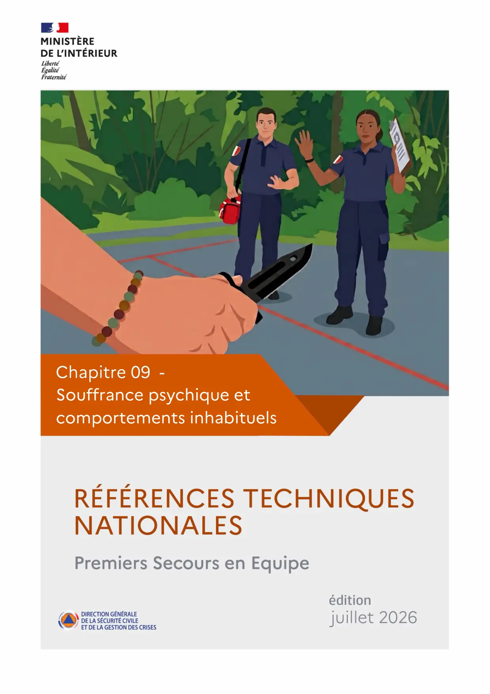
- Souffrance psychique et comportements inhabituels
323
[09AC01 / 11-2021] PSE②
Les personnes en situation de crise
Les états de crise
Lors de l’action de secours, le secouriste peut être confronté à une victime présentant des réactions inhabituelles, d’intensité variable et de formes diverses, traduisant un état de crise. Cedernier peut se manifester par un contact impossible à établir, une agitation extrême, un état d'ébriété, un vécu délirant, des hallucinations, une angoisse massive, un comportement agressif, une violence incontrôlable ou encore des intentions suicidaires.
Les origines de ces troubles peuvent être diverses : physiques, psychologiques ou psychiatriques.
La plupart du temps, la demande de secours n’émane pas de la victime, mais de son entourage et nécessite une réponse urgente et immédiate du fait :
De l’intensité émotionnelle des manifestations pouvant mettre en danger la personne elle-même et/ou son entourage
Du risque vital pouvant exister selon l’origine du trouble.
Définition
La crise est une manifestation brusque et intense, de durée limitée, pouvant entraîner des conséquences néfastes. Elle est révélatrice d’une rupture d’équilibre, générant une souffrance aiguë difficile à contenir par la victime elle-même ou par autrui.
Causes
Deux types de facteurs peuvent être à l’origine d’un état de crise :
Un facteur ou déclencheur externe : c’est-à-dire un événement stressant,voire potentiellement traumatisant lorsqu’il expose soudainement la personne qui y fait face, à une atteinte à l'intégrité physique et/ou morale voire une menace de mort (la sienne ou celle d’autrui) ou encore un événement bouleversant.
Il peut s’agir d'un accident de la voie publique, d’une situation de violence, d’un événement catastrophique, etc., auquel la victime va répondre par une réaction aiguë.
Un facteur ou déclencheur interne à la personne : c’est-à-dire un changement ou un dysfonctionnement interne à la personne se traduisant par des réactions inhabituelles. Il peut s’agir de dysfonctionnements d’origine physique ou psychiatrique, tels que ceux décrits ci-dessous :
Les prises de toxiques sont souvent associées entre elles (alcool et cocaïne par exemple) …
TROUBLES PSYCHIATRIQUES
ÉTATS AIGUS : états transitoires, mais qui parfois peuvent être un mode de révélation d’une maladie psychiatrique
ÉTATS CHRONIQUES : troubles liés à une affection psychiatrique permanente, engendrant des difficultés dans la vie de la personne, des souffrances et des troubles du comportement (schizophrénie, troubles bipolaires, troubles du comportement alimentaire, troubles addictifs …)
Risques et conséquences
L’état de crise prend souvent l’allure de troubles psychiatriques, alors qu’il peut être l’expression d’un problème physique.
En état de crise, la victime n’est pas toujours raisonnable et consciente de la réalité de la situation, ce qui peut complexifier l’action de secours. Le secouriste risque ainsi d’être :
confronté à une attitude opposante, de l’agressivité, voire de la violence
exposé à un potentiel passage à l’acte agressif sur soi ou autrui
contraint, dans certains cas, de se retirer par mesure conservatoire
Signes et manifestations
L’état de crise est repérable au travers de manifestations inhabituelles. Ces dernières peuvent être le motif de l’intervention ou apparaître secondairement en cours de la prise en charge d’une victime.
Le secouriste les identifiera en observant la personne dans ses différentes sphères : comportementales, émotionnelles et cognitives.
Le secouriste observe
Les signes et manifestations à repérer
La présentation
Etat vestimentaire inadapté
Etat d’hygiène : manque ou excès
Présence de marques, blessures, etc.
Les signes physiques et physiologiques,de stress, de tension, d’anxiété :
Une hyperventilation, une sensation d’étouffement
Une pâleur ou coloration du visage, des sueurs, etc.
Des tremblements, une tension musculaire
Le comportement
Une hypoactivité avec un contact difficile, voire impossible à établir : mutisme, isolement, incapacité à réagir, prostration
Une hyperactivité, avec une agitation stérile, des actions désordonnées, irréfléchies, incontrôlables
Une agressivité, voire une violence incontrôlable
Le discours
Un discours accéléré ou ralenti
Un bégaiement ou autre anomalie du langage
Un discours désorganisé, des propos incohérents
Une incapacité à penser, à émettre un avis, une « sidération »
Des troubles de la mémoire (amnésie)
Une absence de conscience de son état
De la confusion, de la désorientation
Une perception négative de la vie, des intentions suicidaires
325
L’état d’esprit et émotionnel
Une hyperémotivité : cris, pleurs, panique/euphorie, exaltation
Une peur intense, un fort sentiment d’insécurité
Un sentiment de colère avec une tendance à l’agressivité, à la violence
Une perte de contrôle de soi : impulsivité
Une absence d’émotion, comme « déconnectée de ses émotions »
De la tristesse, du désespoir
Au total, le secouriste peut se retrouver confronté à deux cas de figure :
Une victime présentant une attitude et un comportement plutôt inhibés (absence d’émotion, sidération, mutisme …) que l’on peut qualifier d’hypoactif, se manifestant par des réactions « silencieuses ».
Une victime aux manifestations extériorisées, dans une attitude et un comportement, désinhibés ou non contrôlés (hyperventilation, hyperémotivité, agitation …), de type hyperactif, se manifestant par des réactions « bruyantes ».
Les réactions « silencieuses »
Après avoir été exposée à un événement stressant, potentiellement traumatisant ou bouleversant, la victime répond par une réaction aiguë pouvant prendre la forme d’un état de dissociation. Ce phénomène protecteur se met automatiquement en place chez la victime face à un stress extrême, lui permettant de se soustraire à la frayeur, de se déconnecter d’une réalité insupportable.
Dans certains cas, la victime présente un état de stupeur, une paralysie de la capacité d’agir et de la volonté. Cet état de sidération est autant physique (ne bouge plus) que psychique (ne pense plus). Elle a un regard vide et une expression d’incompréhension totale. Elle peut demeurer immobile dans le danger. Cette sidération peut durer une minute comme plusieurs heures.
D’autres fois, la victime présente des comportements qui peuvent sembler normaux, mais qui se révèlent être des gestes répétitifs et inutiles ou peu adaptés à la situation et qui sont le reflet d’actions automatiques.
L’expression du visage montre que la victime est « absente », comme si elle ne se rendait pas compte de la réalité tragique de l’événement. Si on lui parle, elle semble écouter, mais elle n’enregistre pas ce qui vient d’être dit.
Une fois l’action terminée, elle est incapable de dire ce qu’elle vient de faire, ou encore elle n’en a conservé qu’un souvenir flou avec des « trous » de mémoire ou des « blancs ». Cet état peut durer de quelques minutes à plusieurs heures, au sortir desquelles elle aura l’impression d’émerger d’un rêve.
Dans ce type de réactions, la victime se trouvecoupée de ses émotions et est incapable de les exprimer. Parfois l’état dissociatif est tel que la personne peut être totalement confuse et désorientée, sans notion de temps qui s’écoule, amnésique, elle peut errer sans savoir qui elle est et où elle est. Elle n’est donc pas en mesure de juger et d’évaluer la situation.
Ce type de manifestation est le signe d’une détresse psychologique aiguë, voire d’une blessure psychologique grave (risque de voir se développer par la suite des troubles psychotraumatiques). Elle nécessite une orientation vers une prise en charge psychologique spécialisée (aux urgences hospitalières, possibilité de prise en charge par la CUMP dans le cas d’événements impliquant de nombreuses victimes).
Les réactions « bruyantes »
À l’opposé des réactions précédentes, il existe certaines réactions plus « bruyantes ». La victime présente une hyperactivité (physique ou psychique) d’intensité et de durée variable et qui peut être le signe d’une souffrance psychologique tout aussi grave.
La victime peut présenter une réaction de fuite panique prenant la forme d’une fuite impulsive, non
326
raisonnée, éperdue, en se heurtant aux obstacles, en bousculant, renversant et piétinant autrui, et sans même savoir où elle va.
La victime présente un faciès hagard, un regard vide, et une expression d’incompréhension totale. Il arrive que cette fuite panique pousse la personne affolée droit dans le danger.
Cette réaction est très contagieuse, et peut dégénérer, par imitation, en panique collective. Elle peut durer quelques instants, le temps de l’impulsion ; mais elle peut durer plus longtemps voire jusqu’à épuisement physique.
D’autres fois, la victime manifeste une agitation désordonnée se traduisant par un état d’excitation, de gesticulation. Elle peut tenir des propos incohérents, parler beaucoup (logorrhée).
Elle ne parvient pas à fixer son attention ou à se contrôler et n’est pas en mesure de prendre des décisions. La victime peut alors présenter des actions désordonnées ou irréfléchies et incontrôlables. Dans ce cas, elle risque d’être dangereuse pour elle-même et pour les autres. La terreur et l’affolement se lisent sur son visage, la communication et la relation aux autres sont perturbées (elle ne les reconnaît pas toujours et ne les écoute pas). Cette agitation peut être éphémère (quelques minutes) ou prolongée (plusieurs heures).
Précisions
Il est possible que la victime passe d’une réaction à l’autre au cours de la prise en charge.
Les réactions de stress peuvent se prolonger pendant quelques heures, voire quelques jours après l’événement laissant la personne « sous tension ». Ces réactions ne sont pas forcément pathologiques et peuvent disparaître naturellement, telles des « courbatures psychologiques ».
Une réaction de stress semblant adaptée dans l’immédiat ne garantit pas toujours que la personne soit indemne de toute blessure psychique.
Dans certains cas, des manifestations inhabituelles peuvent apparaître après la fin de l’événement : crises de larmes, abattement, dépression brève, irritabilité passagère.
Enfin, la blessure psychologique peut entraîner l’installation de pathologies du stress comme le trouble de l’adaptation, le trouble de stress aigu (TSA) ou le trouble de stress post-traumatique (TSPT).
Autres réactions
La réaction de stress n’est pas la seule réaction possible, les personnes peuvent également être violemment frappées par un choc de compassion ou une perte, quelle qu’elle soit.
Dans le cas du choc de compassion, la victime est marquée par la douleur de l’autre et engage des ruminations autour du drame qui se joue.
Les sentiments éprouvés ne seront donc pas de l’ordre de la peur cette fois, mais plutôt de la tristesse, de la colère ou de l’impuissance.
Les réactions peuvent varier et parfois donner lieu à une décharge brutale de souffrance psychique et à la mise en place de mécanismes de défense psychologique : sidération, malaise, incompréhension, déni, culpabilité, recherche de responsabilité, agressivité, etc.
327
[09PR01 / 11-2021] PSE②
Prise en charge d’une personne en situation de crise
Principes de l’action de secours
Abord relationnel de la victime
L’action de secours doit permettre :
de protéger les intervenants, la victime et son entourage ;
d’identifier les réactions inhabituelles, de recueillir et de transmettre un maximum d’informations au médecin régulateur ou à l’équipe médicale sur place.
de stabiliser l’état de crise de la victime dans la mesure du possible
Éléments essentiels dans la prise en charge
Observer, rechercher
En présence d’une personne en situation de crise, le 1er regard est essentiel. L’observation et la recherche d’éléments auprès de la victime, de son entourage et de son environnement, doivent permettre de repérer et d’identifier :
La présence dans l’environnement, de risques potentiels (présence d'armes, emballages de médicaments, lettre, bouteilles d'alcool, etc.) ou de particularités (environnement inadéquat, état inhabituel/particulier)
Les potentiels facteurs de stress pour la victime :
L’entourage semble-t-il constituer un soutien ou plutôt être source de pression pour la victime ?
Y a-t-il des éléments extérieurs perturbants la victime ?
L’élément potentiellement déclencheur (interne ou externe ?) :
Suite à quoi ?
Les caractéristiques de la réaction inhabituelle :
Qu’est-ce qui est différent/inhabituel chez la victime ?
Depuis quand ?
Quels sont les éléments qui paraissent inhabituels par rapport aux normes de notre société/de sa culture ? :
Les antécédents/hospitalisations/traitements potentiels :
Souffre-t-elle d’une maladie particulière ?
A-t-elle déjà été hospitalisée ? » Si oui, « dans quel contexte ?
Prend-elle un traitement ? » Si oui, « l’a-t-elle pris ? Le prend-elle régulièrement ou est-elle en rupture de traitement ?
C’est à partir de cette première étape que les stratégies de protection et de prise en charge vont pouvoir être déterminées.
328
Sécuriser, protéger
Si le contact est possible :
Choisir un lieu propice à l’échange où la personne se sentira en confiance et en sécurité, à l’écart de la source de stress et des pressions extérieures éventuelles (séparer l’entourage de la victime s’il est identifié que ce dernier, même sans le vouloir, exacerbe l’état de crise de la victime).
Réduire la réaction de stress en évitant de surexposer la victime (à la vision des blessures, à la confrontation à des facteurs environnementaux stressants …)
Assurer une surveillance constante.
En cas de contact et dialogue impossibles :
Demander une médicalisation en vue d’une éventuelle sédation afin de minimiser le risque d’agression et de blessures.
Faire intervenir les forces de l’ordre en protection si la sécurité et la sûreté des personnes sont compromises.
Apaiser la détresse, répondre aux besoins
Dans l’abord relationnel de la victime, le secouriste cherche à favoriser l’apaisement émotionnel, voiràprévenir une potentielle escalade d’agressivité pouvant conduire à la violence et se traduire par un passage à l’acte auto ou hétéro-agressif. Cette action s’exerce dans le calme, sans précipitation ni hésitation. Aussi, elle permet de compléter le bilan, puis d’engager les soins nécessaires.
Néanmoins, lors d’états d’agitation incontrôlables et dangereux, l’abordage relationnel a ses limites et la sédation par un traitement médicamenteux sera indispensable.
Conduite à tenir spécifique
Le secouriste devra s’adapter à la spécificité de chaque situation et de chaque personne. Il appliquera les principes de l’abord relationnel de la victime, et sera de plus particulièrement attentif aux points suivants :
Lorsque la personne présente une réaction de type hypoactive (silencieuse)
La tâche essentielle consiste à orienter l’attention de la victime sur des éléments sécurisants et sur des tâches simples, positives et non stressantes.
Rechercher le contact visuel : « Madame, regardez-moi bien dans les yeux »
Rassurer la victime :
Par une présence calme, bienveillante et protectrice : « Nous sommes là pour vous »
En soignant son langage non verbal, ses postures, ses gestes : manifestations de soutien au travers d’une main sur l’épaule ou le bras (à adapter avec précaution), regard bienveillant, voix apaisante, …
Ramener doucement la victime dans « l’ici et maintenant » :
En l’aidant à prendre conscience que l’événement qu’elle vient de subir est maintenant terminé et/ou qu’elle se trouve en sécurité : « Maintenant, nous sommes à vos côtés, vous êtes en sécurité »
En reprenant contact avec elle-même et la réalité qui l’entoure (poser des questions concrètes sur elle, lui faire relever des éléments positifs de son environnement : « Pouvez-vous me décrire ce que vous voyez ? », « Concentrez-vous et dites-moi ce que vous entendez », « Je vous demande de toucher l’objet que vous avez devant vous et de me dire ce que vous percevez »).
329
L’interroger sur ses besoins : « De quoi auriez-vous besoin dans l’immédiat ? », « Qu’est-ce qui pourrait vous aider ? »
L’inviter à s’exprimer, mais pas à tout prix : orienter vers une
communication cognitive plutôt qu’émotionnelle, en lui posant des questions simples et concrètes, en cherchant à lui redonner une position active.
Utiliser des techniques de focalisation de l’attention sur le présent, par exemple :
La respiration contrôlée
Les techniques de focalisation attentionnelle
Informer sur l’événement et sur ses réactions
Ne jamais laisser seule.
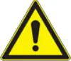
Questionner la victime sur l’événement qu’elle vient de vivre, en lui demandant d’en faire le récit et/ou de parler de ses émotions, aura pour effet de maintenir/réactiver l’état de dissociation.
Lorsque la personne présente une réaction de type hyperactive (bruyante)
Établir un contact verbalet tenter d’apaiser :
Garder une voix calme, un débit lent et une gestuelle bien réglée (pas de gestes brusques)
Montrer à la personne que l’on a perçu la tension émotionnelle, l’agitation et l’inviter à s’exprimer.
Identifier le ou les besoins immédiats et proposer son aide : « Y a-t-il quelque chose que je puisse faire pour vous aider ? ». Cette proposition d’aide peut conduire la victime à activer sa réflexion, ce qui peut stopper le processus de montée en tension.
Utiliser la reformulation (cf. « l’écoute active »).
Dans le cas d’hallucinations ou de propos incohérents, ne pas contredire la victime.
Être attentif aux mouvements du corps (ex. secousses, mouvement d’impatience des jambes qui sont l’expression d’un besoin d’action). Si la victime exprime le besoin de bouger, lui proposer de réaliser des contractions alternées (cf. « techniques de focalisation/défocalisation attentionnelles ») permettant de remplir une fonction exutoire.
Contextes particuliers
Plusieurs contextes particuliers nécessitent d’adapter la conduite à tenir, il s’agit de :
La victime au comportement agressif / violent
Les morts inattendues
Les victimes de violences
La crise suicidaire
Les événements exceptionnels
La victime au comportement agressif / violent
Le secouriste peut se trouver confronté à des victimes présentant des comportements agressifs, voire violents, de nature différente. En effet, ces violences peuvent être non intentionnelles (le fait de personnes en état d’irresponsabilité : patients psychiatriques, toxicomanes, personnes en état d’ivresse …), parfois dirigées contre la victime elle-même (automutilation, etc.) ou encore intentionnelles, en direction du secouriste.
Contexte
330
Après une accumulation émotionnelle, la personne manifeste une tension nerveuse avec apparition d’anxiété et d’agitation psychomotrice.
La personne n’étant plus à ce moment en état de raisonner, il peut s’ensuivre alors un état de panique avec impossibilité à prendre du recul par rapport à la situation et à la critiquer.
Si, à ce moment, la situation n’est pas maîtrisée et le processus interrompu, alors la tension accumulée se libère : c’est le passage à l’acte. Immédiatement après, survient une phase de soulagement pour la personne ainsi vidée de son énergie.
L’agressivité
Peut-être tournée vers la victime elle-même, en direction de tiers ou des secouristes. Cet état est sous-tendu par une émotion de colère dont les origines peuvent être multiples. La victime agressive est une personne qui souffre, qui se défend face à un problème qu’elle perçoit et qu’elle ne sait pas gérer.
Les comportements agressifs prennent différentes formes :
incivilités : impolitesse, grossièretés …
comportement menaçant : gestes du poing, destruction matérielle, objets lancés, etc.
violence verbale : menaces, intimidations, insultes, chantage, propos infériorisants ou dégradants, portant atteinte à l’intégrité psychologique d’autrui, etc.
Les signes d’alerte d’un passage à l’acte violent
un regard fixe, menaçant ou fuyant
une dilatation des pupilles
une pâleur ou augmentation de la coloration (rougissement) du visage
un raidissement des membres, serrement des mâchoires
des soupirs, modification de la respiration (rapide et peu profonde)
des sueurs, transpiration
des tremblements
un ton de voix saccadé
une agitation, des mouvements saccadés, l’apparition de tics
des postures menaçantes (pointe du doigt, montre les poings)
une tendance à s’approcher, empiétement sur l’espace personnel
des objets lancés ou jetés par terre
Conduite à tenir spécifique face au geste violent (coups et blessures, bousculades, crachats, etc.)
Évaluer la dangerosité de la personne et du lieu :
Rechercher et mettre en sécurité les objets potentiellement dangereux.
Enlever les objets pouvant servir d’armes et faire en sorte de pouvoir mettre un obstacle entre la personne et soi.
Veiller à ce que la personne ne soit pas près d’une porte ou d’une fenêtre ouverte s’il y a risque de fuite ou de défenestration (prévention du suicide notamment).
Ne pas laisser la personne seule, ne pas rester seul avec la victime.
Utiliser l’espace avec stratégie :
Veiller à avoir une échappatoire, un accès à la sortie
Positionner l'équipe en triangle. Un seul secouriste parle, les 2 autres situés en arrière, sont en soutien et en communication avec ce dernier.
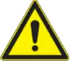
En présence de plusieurs intervenants, un secouriste prendra le rôle d’interlocuteur principal.
C’est lui, exclusivement, qui s’adressera à la victime, et introduira les gestes secouristes réalisés par ses équipiers : « mon collègue va évaluer votre respiration en… » …
331
Garder une distance de sécurité. S’approcher d’elle, en s’annonçant et en se faisant voir, afin de ne pas la surprendre.
Éviter toute attitude oppressante.
Ne pas lui tourner le dos.
Aborder la victime en assurant sa protection personnelle :
L’interlocuteurchoisi sera celui qui a le meilleur contact et si un équipier suscite de l’agressivité, celui-ci se met à distance.
Éviter toute attitude agressive (éviter les bras croisés, mains sur les hanches, pointer du doigt..., ne pas regarder fixement la personne dans les yeux, mais rester vigilant en maintenant un contact oculaire), ne pas toucher, contraindre physiquement, tirer, tenir.
Ne pas monter le ton, se montrer calme, posé et maintenir les marques de respect (Mme, Mr, vouvoiement, même si la personne a tendance à employer le tutoiement ou des marques de familiarité). Utiliser la fermeté, mais toujours avec diplomatie, en veillant à ne jamais « attaquer » la personne agressive et violente. Éviter dans un premier temps toute contradiction pour prévenir une augmentation de l’agressivité, mais sans chercher non plus à approuver systématiquement (rappeler les limites et le cadre).
Abord relationnel possible
Abord relationnel impossible
Maintenir un contact verbal :
Laisser la victime s’exprimer.
Adopter une attitude d’écoute sans jugement, savoir se taire, écouter la personne jusqu’au bout et ne pas lui couper la parole.
Montrer à la personne que l’on a perçu l’agressivité
En aucun cas accepter qu’elle s’exprime avec agressivité ou manque de respect
Utiliser la reformulation
Clarifier tous les points de désaccord
Chercher à positiver le dialogue
Encourager la personne à suggérer une solution au problème
Analyser en permanence la situation et appeler du renfort même si la personne est devenue calme, car cette dernière pourrait à nouveau devenir agressive.
Mesures de sauvegarde :
Dans les situations de crise avec danger, les secouristes doivent se retirer et alerter.
L’usage de la force pour maîtriser la victime n’est pas du ressort du secouriste, sauf 2 exceptions :
- pour préserver sa propre intégrité
- ou dans la mesure du possible pour limiter un danger manifestement grave et imminent.
Les morts inattendues
On qualifie le décès d’inattendu lorsque la mort survient de façon brutale chez un sujet à priori en bonne santé. Le décès peut être naturel, violent, accidentel ou par homicide.
Contexte
Dans ces contextes, les secouristes sont généralement confrontés :
à la personne décédée, dont la mort peut être constatée dès l’arrivée sur les lieux ou secondairement, à l’issue de l’intervention de secours. Dans ce dernier cas, et selon le besoin exprimé par l’entourage, l’équipe de secouristes peut accepter la présence des proches lors des manœuvres de réanimation, et plus particulièrement lorsque la victime est un enfant
à un témoin (connaissant la victime ou non) ayant fait la découverte de la personne en détresse vitale ou déjà décédée
à l’entourage du décédé.
332
La souffrance des témoins et/ou de l’entourage sera influencée par les facteurs suivants :
la typologie des personnes décédées (nourrisson, enfant, adolescent, adulte, personne âgée), leur nombre (parfois plusieurs personnes d’une même famille) et les liens qui les unissent aux proches décédés (parent, enfant, conjoint …)
les circonstances de décès : suicide, homicide, infanticide, fratricide, féminicide …
les conditions de la découverte du corps et de son état d’altération
des éventuelles investigations scientifiques, judiciaires et médico-légales menées par les autorités et les experts compétents.
Ces derniers, témoins et entourage, nécessitent une prise en charge à part entière. Selon la nature de la relation avec le décédé, les sentiments éprouvés peuvent varier et parfois donner lieu à une décharge brutale de souffrance psychique et à la mise en place de mécanismes de défense psychologique : sidération, malaise, effondrement, incompréhension déni, culpabilité, recherche de responsabilité, agressivité, colère, etc. Ils sont naturels et leur abord ne relève pas nécessairement d’un professionnel de la santé mentale. Une présence empreinte d’humanité et de bienveillance constitue la première réponse au besoin des endeuillés.
Conduite à tenir spécifique
Dans le cas particulier où le décès survient sur la voie publique, il convient dès que possible de soustraire au mieux le corps à la vue du public. En l’absence de danger, le corps ne sera déplacé que sur décision du médecin (ou de l’autorité judiciaire en cas d’obstacle médico-légal).
En l’absence d’obstacle médico-légal, il est important :
de préserver la dignité du corps, le manipuler avec précaution et délicatesse ;
d’installer le corps du défunt selon le souhait de la famille, tenir compte des rituels culturels et religieux qui peuvent être utiles pour pacifier et réguler les émotions ;
de rendre le corps présentable (enlever le matériel, nettoyer …) en prenant en compte la rapide dégradation de l’état du corps et les risques de relâchement de ce dernier. Penser à prendre les précautions nécessaires si le corps est abîmé (cacher une partie …) d'accompagner les proches auprès du défunt si cela est souhaité. La présentation du corps, peut être proposée à la famille sans constituer une obligation.
Le travail de deuil, c’est-à-dire, l’adaptation à la perte d’un proche, est un processus qui s’inscrit progressivement dans le temps et dont le point de départ, l’annonce du décès, va grandement influer sur son déroulé. Il s’agit donc d’un moment très important pour lequel un maximum de précautions est nécessaire.
L’annonce est du ressort du médecin, de la police ou d’un Officier de Police Judiciaire (tel que le maire par exemple).
À titre très exceptionnel, le secouriste peut être amené à réaliser l’annonce du décès.
Le décès doit être annoncé de façon claire et adaptée. Il s’agit de fournir des informations honnêtes et claires, avec empathie et respect, de manière à engager les proches dans un processus de deuil sans brutalité supplémentaire :
Dans un lieu calme, en dehors de la zone d’intervention, avec un minimum de confort, permettant l’intimité et la disponibilité.
Intervenir à deux, avec un médecin si possible qui se chargera de l’annonce.
En reprenant le contexte/la cause, la chronologie et les actions entreprises, par exemple :
333
« Nous avons été appelés par un témoin qui a retrouvé votre mari inconscient dans son véhicule. À notre arrivée, son cœur était arrêté. Nous avons tout de suite réalisé un massage cardiaque et mis en œuvre toutes les actions dans le but de relancer son cœur. Malheureusement, après plus d’une heure de travail, nous n’avons observé aucun signe de reprise d’une activité cardiaque. Nous avons fait notre maximum, mais malheureusement votre mari est mort ».
Il est du rôle des secouristes de veiller sur la famille et les proches et de répondre au maximum aux besoins des endeuillés :
Adopter une attitude respectueuse vis-à-vis de la personne décédée. C’est un facteur de réconfort notable pour la famille ou son entourage
Leur laisser du temps pour comprendre et intégrer la situation
Être présent et à l’écoute
Apporter des réponses : conseils, explications pour les premières démarches, ce qui va se passer, etc.
Les accompagner dans l’annonce aux enfants et adolescents sans tarder, en associant ces derniers aux autres personnes de leur entourage, avec des mots simples et directs (utiliser le mot « mort »).
Faire en sorte de passer le relais à une personne qui pourra rester présente (famille, voisins, amis, etc.) au départ des secours, ne pas laisser seul un proche endeuillé.
Dans le cas d’un décès d’enfant, le corps sera transporté par les services de secours sur réquisition judiciaire, accompagné des parents, s’ils le souhaitent, vers un centre de référence où des investigations médicales seront menées afin de rechercher la cause du décès.
Les victimes de violences
Contexte
Qu’elles aient lieu dans l’intimité du milieu familial (violences conjugales, maltraitances) ou commises à l’extérieur par des personnes inconnues ou des connaissances, la violence peut être verbale, physique, psychologique, sexuelle et/ou liée à la négligence et aux privations. Il peut s’agir d’un geste isolé de violence ou d’un certain nombre de gestes qui s’inscrivent dans un cycle de maltraitance.
Dans ces contextes, il peut exister une certaine complexité pour établir une relation avec la victime et pour évaluer la situation, notamment :
en cas de danger persistant pour la victime et/ou pour l’équipage
lorsqu’il existe un lien affectif qui soude les personnes concernées ou une situation de dépendance, de vulnérabilité physique, psychique, affective et/ou sociale avec souvent une relation de domination, d’emprise (partenaire, parent).
quand l’auteur est présent, niant fréquemment les violences commises ou sa responsabilité
du fait d’une visibilité faible et de la loi du silence : les violences sont souvent masquées et la victime peut avoir peur de parler, craindre les représailles, peut masquer ou nier, minimiser, banaliser, sous-estimer la gravité ou ne pas identifier forcément la situation de violence.
dans les suites d’une agression sexuelle, la victime est impactée au niveau le plus intime et peut manifester une importante souffrance et souvent une méfiance à l’égard des secouristes (d’autant plus s’ils sont du même sexe que l’agresseur), rendant parfois le contact physique et donc les gestes secouristes difficiles, voire impossibles.
334
Le secouriste occupe une place prépondérante, car il est souvent celui qui constitue le premier soutien. Son regard bienveillant permet à la victime de retrouver une part de sentiment de sécurité. Ses qualités d’écoute et d’empathie sont déterminantes pour engager la victime vers la reconnaissance du préjudice subi. La personne doit se sentir rassurée, en confiance afin de ne pas vivre sa prise en charge comme une nouvelle agression.
Conduite à tenir spécifique
Isoler la victime et limiter le nombre d’intervenants
Instaurer un climat d’écoute, de confiance et de sécurité,
Employer un ton calme et rassurant, associé à des gestes délicats, préalablement annoncés.
Parler honnêtement des éléments évocateurs repérés et lui signifier par des mots simples notre perception de la situation et l’encourager (sans forcer) à en parler.
Aborder clairement la question des violences, en précisant que rien ne les justifie, qu’elles sont interdites et punies par la loi. La victime n’est donc pas responsable et peut déposer plainte. Si elle ne veut pas parler, lui dire qu’elle pourra le faire plus tard. Il ne s’agit pas de l’interroger, mais de l’écouter.
Tenter de convaincre de la nécessité d’un transport à l’hôpital
Transporter la victime dans la position dans laquelle elle se sent le mieux (surtout si cette dernière a subi une agression sexuelle)
Informer sur la possibilité d’être aidée en veillant à ne pas émettre des promesses non tenables ou des solutions hors de sa portée
En cas d’absence de transport, transmettre les coordonnées des services compétents et inciter la victime à identifier une personne-ressource.
Précisions
Il ne s’agit pas de réaliser une enquête, mais d’évaluer les risques encourus afin de déterminer la réponse opérationnelle la plus adaptée dans l’immédiat. Ainsi doit être appréciée la nécessité du recours aux forces de l’ordre, qui ne se fera que dans trois conditions : un danger persistant pour la/les victime(s), pour l’équipage ou lorsque la victime en fait la demande.
Il est important que le secouriste soit particulièrement vigilant et attentif à repérer et préserver tout élément informatif ou de preuve (sous-vêtements à conserver dans plusieurs sacs neufs séparés, dans le cadre d’une agression sexuelle par exemple …) qui pourrait être utile à la victime dans le cadre d’une future procédure judiciaire. Dans certains cas, notamment celui de l’agression sexuelle, il est important qu’elle puisse être dirigée le plus rapidement possible vers des services spécialisés, urgences médico-judiciaires notamment, certains examens, prélèvements et mise en route de traitement devant être réalisés au plus vite.
En cas de transport à l’hôpital, des transmissions complètes sont à faire à l’équipe prenant le relais pour permettre une prise en charge adaptée, la mise en sécurité de la ou des victimes et des soignants. Le contexte des violences selon les dires de la victime, ou les suspicions selon les éléments observés, doivent figurer dans les écrits professionnels.
Sauf danger imminent, il faut accepter le choix et le rythme de la victime (si majeure et apte à consentir). Même si l’issue de l’intervention n’est pas celle espérée, toute intervention a un intérêt, même si les effets ne sont souvent pas mesurables dans l’immédiat. Une parole possible, un regard nouveau sur sa situation, des informations apprises peuvent amorcer un changement.
335
La crise suicidaire
Contexte
Etat de « crise psychique », temporaire et réversible, dont le risque majeur est le suicide (« acte de se donner délibérément la mort », OMS 2014).
Il s’agit d’un moment de la vie d’une personne où celle-ci se sent dans une souffrance majeure, dans une impasse avec l’impossibilité de s’en sortir. La personne est submergée par les émotions, elle présente une fatigue physique et morale qui altère son jugement et l’empêche de raisonner. L’idée suicidaire devient de plus en plus présente et finit par s’imposer comme la seule issue possible à cette souffrance.
Le processus suicidaire se met en place suite à une accumulation de facteurs (familiaux, professionnels, sociaux, etc.) et ne résulte jamais d'une seule origine.
Signes et manifestations :
Idées et intentions suicidaires
Manifestations de crise psychique
Existence d’un contexte de vulnérabilité
La personne en crise va verbaliser certains messages :
Directs : « je veux mourir », « je veux en finir », « j’ai perdu le goût de vivre » …
Indirects : « je n’en peux plus, je voudrais partir, disparaître », « ils seraient mieux sans moi » …
Fatigue
Anxiété
Tristesse
Irritabilité, agressivité
Troubles du sommeil
Troubles des conduites alimentaires
Perte d’intérêt et de plaisir
Sentiment d’échec et d’inutilité
Mauvaise image de soi et sentiment de dévalorisation
Impuissance à trouver des solutions à ses problèmes
Face à une personne en crise suicidaire, la tâche des secouristes consistera à repousser l’échéance du passage à l’acte en reconnaissant la souffrance de la personne en crise et en discernant les éléments qui augmentent le risque de passage à l’acte.
Pour déterminer les priorités de l’intervention, il convient de procéder assez rapidement à l’évaluation du potentiel suicidaire, en prenant en compte :
les facteurs d’urgence, témoins de l’imminence d’un geste (intensité, temporalité, lieu et modalités de l’acte suicidaire envisagés)
les facteurs de dangerosité comme l’accessibilité et la létalité (risque d’entraîner la mort) du moyen envisagé.
336
Critères d’une urgence élevée
Planification claire, passage à l’acte prévu pour les jours à venir (élaboration d’un scénario : Comment, Où, Quand ?)
Sentiment d’avoir tout fait et tout essayé et ne plus vouloir d’aide
La douleur et l’expression de la souffrance sont omniprésentes ou complètement tues
Accès direct et immédiat à un moyen de se suicider (médicaments, armes, corde …)
La victime doit percevoir qu’elle est prise en compte et respectée. Le dialogue se réalise avec tact, sans émettre de jugement de valeur (propos moralisateurs ou de « bon sens »). Il faut bannir toute provocation, tout ordre catégorique, se retenir de minimiser les problèmes et de dévaloriser le geste (« une bêtise »). Il s’agit de reconnaître et d’aborder clairement la situation de crise.
Évaluer le risque (Comment, Où, Quand ?) :
« Souffrez-vous au point de vouloir mourir (vous faire du mal) ? »« Pensez-vous à une façon de vous suicider ? »
« Avez-vous prévu un moment? Quand ? »
« Pensez-vous à un endroit en particulier? »
Évaluer la facilité d’accès aux moyens létaux évoqués par la personne et les éloigner autant que faire se peut :
« Pensez-vous à un moyen de vous suicider ? »
« Disposez-vous de ce matériel? »
« Avez-vous envisagé un moyen de vous le procurer? »
Proposer systématiquement le transport vers l’hôpital afin de procéder à une évaluation spécialisée et éventuellement une hospitalisation.
Transmettre l’ensemble des éléments observés et repérés lors de la prise en charge de la personne (victime, entourage, lieux) et rapporter les éléments informatifs (emballages de médicaments, lettre, photo dispositif …) à l’hôpital.
Précisions
Toute idée suicidaire est à considérer comme un suicide en cours de réalisation. Ainsi, même face à un geste « bénin », un transport pour une évaluation par un spécialiste se révèle indispensable.
Les victimes en crise suicidaire doivent être surveillées durant toute l’intervention, y compris durant le transport, car l’impulsion d’un passage à l’acte peut être accentuée par la crainte de l’hospitalisation.
Les questions directes posées à une personne qui formule des propos suicidaires peuvent sembler embarrassantes, mais elles permettent pourtant de mieux préciser le mode d’action envisagé. Une personne ayant des idées suicidaires peut en effet interpréter ces questions directes de son interlocuteur comme une compréhension de sa souffrance et à l’inverse, l’absence de questionnement comme un désintérêt.
337
Les événements exceptionnels
Contexte
Le secouriste peut être amené à intervenir lors de catastrophes ou de situations exceptionnelles.
Il s’agit d’événements inhabituels survenant de manière brutale, la plupart du temps, entraînant des dégâts tant humains que matériels et pouvant être à l’origine d’un afflux de victimes : catastrophes majeures (telles qu’inondations, feux de forêt, ouragans …) ou Accidents Catastrophiques à Effet Limité (accidents de transport par voie routière impliquant plusieurs véhicules (carambolages) ou des véhicules de transport (autocar, train …), incendies en milieu urbain, les accidents liés au gaz, accidents technologiques, accidents au cours des rassemblements de foule, attentats terroristes), ou encore les pandémies.
Ces événements comportent une extrême violence et s’accompagnent :
de dégâts matériels, écologiques
d’impacts psychologiques, plus importants si des proches, des amis, des connaissances disparaissent ou si les médias font largement état de la nouvelle en raison de son caractère spectaculaire
d’une insécurité psychique ressentie par des communautés et des populations entières : victimes, témoins, parents, public, sauveteurs dans une certaine mesure, et enfin aussi décideurs et gouvernants eux-mêmes. En effet, ils ont vécu et vivent quelque chose de commun à tous :
la vision horrifiante des cadavres, des blessés et des destructions,
l’immersion dans un monde cauchemardesque opposé au monde paisible de l’existence habituelle,
le contact avec sa propre souffrance psychique ou celle d’autrui,
la prise de conscience de la gravité exceptionnelle de la situation, le décontenancement et le désarroi, même brefs, face à ce désordre qu’il faut résoudre.
chacun se sent atteint dans son appartenance communautaire.
L’action de secours peut se révéler particulièrement complexe du fait :
d’un débordement temporaire des moyens avec parfois la destruction ou l’indisponibilité de certains moyens de secours, un fonctionnement en mode dégradé
d’un afflux de victimes avec la nécessité de procéder à un triage
d’un risque de débordement émotionnel sur un plan collectif (risque de mouvement de foule, panique collective). Concernant ce dernier point, l’anonymat et la tendance à l’imitation favorisent une certaine impulsivité et permettent à l’émotion de l’emporter sur la raison.
Des comportements primaires peuvent apparaître. Une panique collective ou une grande violence peuvent alors en résulter. Elle peut se traduire par des comportements collectifs inadaptés (fuite éperdue, bousculades, piétinement …). La panique accroît le danger et le nombre des victimes.
Conduite à tenir spécifique
Il s’agit là de tenter de gérer un attroupement ou une foule afin de diminuer l’anxiété d’une ou des victimes et des impliqués.
Face à un attroupement ou une foule
Donner des consignes de dispersion : demander à toute personne présente de s’écarter afin de ne pas gêner l’organisation des secours ou incommoder les victimes.
Donner des taches à réaliser aux victimes en état de le faire, aux personnes impliquées ou aux témoins
338
les plus agités (attendre les renforts pour les guider, aller chercher des documents, évacuer...). Ceci a pour effet, en général, de diminuer leur angoisse.
En cas de mouvement de panique
Être facilement identifiable en tant que secouriste
Agir de façon coordonnée avec calme
Faire preuve d’autorité en donnant des informations et des directives brèves et claires (anticipation).
Isoler les personnes susceptibles de réenclencher un mouvement de panique, une fois celui-ci enrayé.
Créer un périmètre de sécurité.
Extraire rapidement la ou les victimes vers un périmètre sécurisé (véhicule, PMA ou bâtiment).
Les réactions de détresse doivent alerter, elles sont l’indice d’une blessure psychologique grave. Une prise en charge médicale et/ou psychologique est indiquée afin de faire face à l’installation dans la durée de troubles psychotraumatiques.
Il sera donc nécessaire d’orienter ces personnes vers une prise en charge psychologique spécialisée (aux urgences hospitalières ou à proximité de la catastrophe par les Cellules d’Urgences Médico-Psychologiques).
Rappel sur les Cellules d’Urgence Médico-Psychologique
Les cellules d'urgence médico-psychologique (CUMP) :
constituent, en France, un dispositif de prise en charge psychologique précoce des blessés psychiques dans les situations d'urgence collective (événements majeurs, sinistres, ou encore attentats) intervenant dans le cadre du SAMU ;
sont composées de spécialistes (psychiatres, psychologues, infirmiers) spécialement formés à ce type d'urgence ;
sont déclenchées à l'initiative du SAMU
339
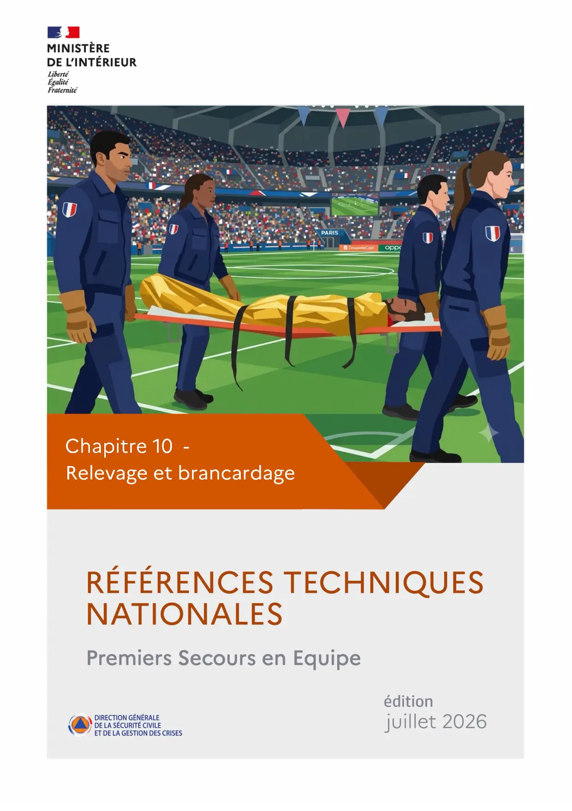
- Relevage et brancardage
340
[10AC01 / 09-2019] PSE②
Relevage et brancardage
Définition
Le relevage est une action qui consiste à placer une victime sur un brancard, directement ou à l'aide d'un dispositif particulier de relevage afin d’assurer son déplacement (brancardage).
Cette action est réalisée après avoir soustrait la victime à la cause de sa détresse et l’avoir installée dans la position que nécessite son état.
L’application des techniques de relevage et de brancardage comporte des risques, notamment pour la victime, mais aussi pour le secouriste. Un bon entraînement et le respect des techniques évitent ou minimisent ces risques.
Principes généraux de manutention
Les manœuvres de relevage et de brancardage doivent être pratiquées de manière coordonnée sous la conduite d'un chef et exigent la stabilité des secouristes et la sécurité de leurs mouvements.
À cet effet, il convient de respecter les principes suivants :
• Stabilité des positions et sécurité des mouvements des secouristes ;
Le secouriste debout doit avoir les pieds écartés, décalés, non parallèles.
À genoux, il se place en position du « trépied », un genou à terre, l'autre écarté en dehors des avant-bras.
Penché en avant, il garde le dos plat et travaille avec les muscles des membres inférieurs, s'éloignant le moins possible de la position verticale. Il vaut mieux s'accroupir que se pencher.
Ces principes évitent les « faux mouvements » à l’origine de douleurs dorso-lombaires.
• Fermeté des prises ;
La charge est saisie à pleines mains et non du bout des doigts ; elle porte sur les avant-bras et non sur les mains.
• Bonne répartition des charges ;
Les secouristes doivent être plusieurs (3 à 6) selon les cas; la charge doit être rapprochée au maximum des porteurs.
• Synchronisation des mouvements.
En équipe les mouvements doivent être doux et synchronisés, sous les ordres d’un chef.
Règles générales de brancardage
Le brancardage est une épreuve inconfortable pour la victime. Afin d’en minimiser les effets, il convient de respecter les règles et principes suivants :
préalablement au déplacement :
arrimer ou sangler la victime,
positionner les secouristes, en fonction de leur taille et de leur force.
lors du déplacement :
veiller à maintenir le brancard en position horizontale,
s’assurer que les mouvements sont exécutés de façon coordonnée, afin d’être les plus doux possible pour la victime,
341
En cela, les déplacements doivent être réalisés en marchant, sans secousse ni balancement.
placer la tête de la victime vers l’avant, en règle générale.
Le chef se place préférentiellement à l’arrière. Ce positionnement lui permet d’avoir une vision sur l’ensemble de son équipe d’une part, tout en pouvant exercer une surveillance constante de la victime d'autre part. Il doit :
coordonner la manœuvre de brancardage. Pour cela, il veille à commander l'équipe de secouristes dans chacune des actions à conduire.
Le commandement se fait, le plus souvent en deux temps. L’ordre d’exécution étant précédé d'un ordre préparatoire. Par exemple, « Attention pour lever… Levez ».
Les ordres sont donnés à haute et intelligible voix, afin d’être entendus par tous les membres de l’équipe.
Matériel de relevage et de brancardage
II existe une série de matériels qui peuvent aider à relever une victime. Certains d'entre eux peuvent être utilisés pour un déplacement sur une courte distance jusqu'au lieu où la pose sur le brancard est possible.
Les véhicules spécialement affectés au transport des victimes (blessés, malades) sont équipés en général de brancards adaptés à des chariots porte-brancard dont ils peuvent être parfois désolidarisés (VSAV, UMH des SMUR, véhicules de premiers secours des associations agréées de sécurité civile, véhicules des transporteurs sanitaires privés…).
Les modèles de brancards les plus couramment rencontrés sont :
le brancard pliant à compas sans têtière ;
C’est un brancard plat dont le fond est en toile ou en toile plastifiée. Les hampes sont en bois ou en métal, munies de pieds fixes et réunies par des compas métalliques permettant de plier le brancard dans le sens de largeur (transport à vide et stockage). II peut être muni de bretelles pour le brancardage à trois.
le brancard dit principal1;
Ce brancard est muni de roues et peut être utilisé seul, ou combiné à un chariot de transport.
Muni d'un dossier (appelé appui-tête), il permet la position demi-assise, et peut être complété d’un repose-pied (brancard articulé).
La zone du thorax est rigide pour permettre de réaliser une RCP, il est recouvert d’un matelas de transport et parfois d’appuis latéraux rabattables.
les brancards dits de catastrophe ;
II s'agit de brancards plats, rigides, aisément empilables, dont le stockage et le transport à vide peuvent être faits sous faible volume.
le brancard pour aéronefs.
Certains aéronefs en version sanitaire sont munis de brancards spéciaux, plus étroits.
Outre les brancards, la chaise de transport permet de répondre à une difficulté réelle de brancardage en étages, dans les immeubles sans ascenseur ou aux escaliers ou ascenseurs étroits.
Elle peut être utilisée pour une victime qui peut se tenir assise et qui ne présente aucune détresse.
Il existe deux modèles de chaise de transport : pliant et non pliant. Elles sont équipées de poignées sur le cadre supérieur (dans le dos) et sur la barre inférieure (aux pieds).
1Ce brancard répond à la norme NF EN 1865 - Décembre 1999 - relative aux spécifications des brancards et équipements d’ambulances
pour le transport de patients.
342
Les brancards ou dispositifs de portage sont habituellement prévus pour des victimes de corpulence courante et ne peuvent être utilisés pour des victimes dont le poids est supérieur à un maximum indiqué par le fabricant. Pour transporter des victimes dont la corpulence est supérieure, il faut alors faire appel à des services dotés de dispositifs de portage adaptés encore appelés « dispositifs bariatriques ».
D’autres dispositifs de portage sont aussi couramment utilisés1 :
• le brancard cuillère ;
Ce dispositif est constitué de deux parties que l'on glisse latéralement sous le blessé, puis qu'on réunit pour constituer un brancard rigide.
Ce matériel, en métal inoxydable ou en PVC, est constitué :
d'un cadre tubulaire, large de 43 cm au niveau du tronc, dont les montants permettent le portage,
de lames pleines, légèrement incurvées, inclinées vers l'intérieur, permettant la « cueillette » de la victime.
Le cadre tubulaire est réglable en longueur et permet, par deux systèmes à encliquetage et articulés, l'ouverture en éventail ou la dissociation du brancard en deux parties.
Trois sangles permettent l'arrimage de la victime.
La forme « en auge » et les possibilités d'ouverture permettent de glisser les lames sous la victime sans la soulever.
Le stockage peut s'effectuer en position repliée.
Ce dispositif est surtout utilisé pour relever une victime et la transférer sur un autre moyen de transport. Il peut être équipé de blocs de tête pour assurer une restriction des mouvements du rachis cervical.
• l’alèse portoir ;
Elle est constituée d'un rectangle de toile épaisse, solide, plastifiée, radiotransparente, dont la dimension correspond à la surface utile du brancard.
Elle est munie de poignées latérales renforcées de sangles de toile, dans le sens transversal et parfois longitudinal. Les poignées sont au nombre de 6 ou 8, symétriques ou dissymétriques.
Elle est principalement utilisée comme dispositif de transfert. Placée à l'avance sur le brancard, sous la couverture, elle permet :
de faire glisser le blessé d'un brancard sur un autre,
de faire passer le blessé du brancard sur un lit, une table d'examen ou de radiologie.
Elle est utilisée isolément et de façon transitoire pour transporter une victime (qui ne présente pas de lésion traumatique) jusqu’au brancard si on ne peut amener ce dernier à la victime.
Elle est lavable, stockable sous faible volume, mais ne constitue pas un plan dur, rigide.
• le brancard Piguilem ;
Ce brancard est formé par un cadre tubulaire métallique, monté sur patins.
Sur le devant est fixée une plaque en matière plastique assurant la protection de la toile et de la victime et facilitant le glissement. Léger, il est adapté au treuillage ou au glissage, sur neige par exemple.
A été également mis au point un brancard claie de portage Pigui 3, dérivé du premier, mais formé de deux éléments tubulaires facilitant le portage.
• la barquette ;
1Le plan dur ainsi que le matelas immobilisateur à dépression sont deux dispositifs de portage couramment utilisés. Ils ne sont pas
développés dans la présente partie, mais font l’objet d’une présentation détaillée sur les fiches techniques ad hoc.
343
La barquette est un dispositif rigide de transport de victime, muni de bords sur ses quatre côtés et de sangles d’immobilisation.
Elle présente quatre anneaux de fixation pour les élingues de treuillage ou d’hélitreuillage.
Certains modèles sont constitués de deux parties détachables, pour faciliter leur portage à vide.
• les civières pour hélicoptères ;
Pour le transport en hélicoptère moyen ou léger, il est nécessaire de transférer la victime sur la civière de l'appareil (d'où l’intérêt du portoir). Seuls les hélicoptères lourds acceptent les brancards normalisés.
• la gouttière Bellisle (ou portoir corset).
La gouttière Bellisle est couramment utilisée sur les bâtiments de la Marine nationale. Il s’agit d’un dispositif d’immobilisation et de transport de victime qui facilite l’évacuation en passant par des passages étroits (ascenseur, escalier, trou d’homme).
Elle est composée d’une enveloppe souple en toile lavable rigidifiée dans le sens de la longueur par des lamelles placées entre deux épaisseurs de toile. Elle dispose d’un dispositif de contention de la victime dans toutes les positions, et possède un système de portage par poignées et hampes amovibles et un système permettant le hissage en position verticale ou horizontale (sangles longitudinales).
Une fois la victime déposée sur la gouttière, cette dernière s’enroule autour de la victime, assurant ainsi sa protection contre les chocs tout en la gardant sur un plan dur.
344
[10FT01 / 09-2019] PSE②
Aide à la marche
Indication
Cette technique est indiquée pour aider un blessé léger, qui peut maintenir la station debout, à marcher sur quelques mètres.
Justification
Cette technique permet de déplacer une victime qui peut temporairement garder la station debout vers une zone calme (bord du terrain) ou un abri pour la protéger de la pluie ou de toute autre intempérie.
Matériel
Aucun matériel.
Réalisation
À un secouriste
Cette technique est utilisée si la victime est capable de porter son propre poids et de se tenir debout sur ses deux jambes. Il convient :
d’aider la victime à se mettre debout ;
passer le bras de la victime autour de son cou et le maintenir au niveau du poignet avec une main ;
passer son avant-bras derrière le dos de la victime et la maintenir en passant la main sous l’aisselle ou au niveau de la ceinture.
À deux secouristes
Cette technique est utilisée si la victime a des difficultés pour se tenir debout seule.
La technique est la même que celle à un secouriste, mais, dans ce cas, un secouriste se place de chaque côté de la victime.
Risques & Contraintes
Le secouriste ne doit jamais utiliser une technique d’aide à la marche si la victime est suspecte d’un traumatisme de la colonne vertébrale ou des membres inférieurs.
Évaluation
Le déplacement de la victime n’entraîne pas de désagrément pour celle-ci.
345
[10FT02 / 09-2019] PSE②
Déplacement d’une victime à l’aide d’une chaise de transport
Indication
La chaise de transport peut être utilisée si :
la victime ne présente pas de détresse ou d'atteinte grave ;
la victime peut supporter la position assise.
Justification
L'utilisation d'une chaise de transport pour déplacer une victime permet de répondre à une difficulté réelle de brancardage en étages, dans les escaliers ou ascenseurs étroits.
Matériel
une chaise de transport, préalablement préparée.
Réalisation
Après avoir installé et arrimé la victime sur la chaise de transport, il convient de :
demander à la victime de garder ses mains croisées sur sa poitrine et de ne pas essayer de s’agripper ;
saisir la chaise par les poignées ;
basculer légèrement la chaise de transport en arrière après avoir prévenu la victime ;
faire rouler la chaise de transport sur le sol en prenant garde aux obstacles qui peuvent se présenter.
Lorsqu’un obstacle ou un escalier doit être franchi :
un deuxième secouriste doit :
saisir les poignées au niveau des pieds de la victime pour aider le premier secouriste à soulever la chaise.
un troisième secouriste doit :
précéder les déplacements de la chaise pour : ouvrir les portes, enlever les objets qui pourraient gêner le passage, sécuriser le sauveteur aux pieds en le tenant par la ceinture lors de la descente des escaliers.
Dès que possible, la chaise est placée à côté du brancard afin de procéder au transfert.
Risques & Contraintes
Le verrouillage de la chaise ainsi que l'arrimage de la victime sont systématiquement vérifiés avant la manœuvre afin d’éviter toute chute.
Afin de limiter les lésions du dos, les secouristes doivent garder le dos plat et travailler avec les cuisses.
Évaluation
La victime reste convenablement assise et son état ne s’aggrave pas.
346
[10FT03 / 09-2019] PSE②
Déplacement d’une victime non valide
Indication
Ces techniques sont indiquées pour déplacer une victime, non valide, qui n’est pas suspecte d’un traumatisme de la colonne vertébrale ou des membres, sur quelques mètres.
Justification
Ces techniques permettent de déplacer une victime sur une courte distance vers une zone calme, un abri pour la protéger des intempéries ou un endroit où elle pourra être allongée.
Matériel
• une chaise, éventuellement.
Réalisation
Déplacement par saisie des extrémités
Cette technique est pratique pour déplacer une victime qui se trouve dans un espace étroit.
Le déplacement est réalisé au minimum par deux secouristes.
Pour cela, après avoir aidé la victime à s’asseoir :
Le secouriste 1 doit :
• s’accroupir derrière le dos de la victime ;
• passer ses avant-bras sous ses aisselles et saisir les poignets opposés.
Le secouriste 2 doit :
• s’accroupir entre les jambes de la victime, face à la marche ;
• passer ses bras de l’extérieur vers l’intérieur sous les genoux de la victime.
Secouriste 1 : « Êtes-vous prêt ? »
Secouriste 2 : « Prêt ! »
Secouriste 1 : « Avancez ! »
Les secouristes se redressent et se dirigent vers l’avant. Arrivés à destination :
Les deux secouristes déposent délicatement la victime au sol ou sur une chaise.
Déplacement par une chaise à mains
Le déplacement est réalisé au minimum par deux secouristes. Pour cela :
• se placer de chaque côté de la victime, au niveau de ses hanches ;
• passer un avant-bras derrière le dos de la victime puis saisir l’épaule du secouriste placé en face ;
• passer l’autre avant-bras sous les genoux de la victime et agripper l’autre secouriste par les poignets ;
Un anneau de toile solide peut être utilisé ; chaque secouriste agrippe alors l’anneau de toile.
• demander à la victime de s’asseoir et de placer ses bras autour du cou de chacun des secouristes.
347
La victime est déplacée au commandement de l’un des secouristes.
Déplacement à l’aide d’une chaise
Le déplacement est réalisé au minimum par deux secouristes. Pour cela :
• choisir une chaise d’ameublement suffisamment solide pour supporter le poids de la victime ;
• faire asseoir la victime.
Ensuite :
Le secouriste 1 doit :
• s’accroupir derrière le dossier de la chaise et saisir le bas du dossier ;
• basculer tout doucement la chaise en arrière après avoir prévenu la victime et en la maintenant d’une main.
Le secouriste 2 doit :
• s’accroupir entre les pieds avant de la chaise, face à la victime ;
• saisir l’extrémité des pieds de la chaise.
Les jambes de la victime doivent rester entre les pieds de la chaise.
Au commandement du secouriste 1, les deux secouristes doivent :
• se relever simultanément ;
• déplacer la victime sur sa chaise.
Risques & Contraintes
Le secouriste ne doit jamais utiliser une technique de déplacement de la victime si la victime est suspecte d’un traumatisme de la colonne vertébrale ou des membres.
Si le secouriste respecte l’indication de ces techniques, il ne doit pas aggraver l’état de la victime.
Évaluation
Le déplacement de la victime n’entraîne pas de désagrément pour celle-ci.
348
[10FT04 / 09-2019] PSE①
Préparation d’un dispositif de portage
Indication
Cette technique est indiquée chaque fois qu’une victime doit être installée sur un brancard ou un autre dispositif qui permet son transport.
Justification
Afin d’assurer un transport correct et confortable de la victime, le dispositif de portage doit être préparé par les secouristes.
Matériel
• un matériel de relevage ou de brancardage ;
• un drap1 ;
• une couverture ;
Elle est destinée à protéger la victime du froid.
Il est préférable d’utiliser des couvertures bactériostatiques, lavables ou d’intercaler entre la couverture et la victime un drap de préférence à usage unique.
• une couverture de survie2 ;
• des sangles de fixation.
Les brancards sont équipés ou peuvent s’équiper de sangles de fixation permettant le maintien de la victime sur le brancard.
Avec les plans durs, des sangles-araignées peuvent être utilisées.
Réalisation
Pour un brancard
Chaque fois que possible, la victime est enveloppée dans un drap puis une couverture avant d’être arrimée sur le brancard. Pour cela :
• assurer le montage du brancard, si nécessaire ;
• installer un drap ou une couverture de survie sur le brancard.
Le drap ou la couverture de survie sont placés en règle générale sur le brancard avant d’y déposer la victime. Elle peut ensuite être enveloppée avec.
Une fois que la victime a été installée sur le brancard au moyen d’une technique adaptée à son état :
• recouvrir la victime au moyen d’une couverture ;
• sangler la victime.
Les sangles doivent passer par-dessus la couverture afin que l’ensemble soit parfaitement maintenu.
1Le drap peut être en toile ou en matériau intissé. Il est préférable d’utiliser des draps à usage unique. Les draps stériles sont utilisés pour envelopper une victime qui présente des brûlures étendues.
2Le face ou la couleur de la couverture de survie n’ont que peu d’incidence sur la déperdition de chaleur.
349
Pour une chaise de transport
Un drap (ou une couverture) peut être disposé sur une chaise de transport pour envelopper une victime. Le drap est placé sur la chaise en prenant soin de ne pas le laisser traîner au sol pour ne pas gêner le déplacement.
En aucun cas la couverture ou le drap ne devront rendre inaccessibles les sangles qui permettent de maintenir la victime une fois celle-ci installée sur la chaise.
Risques & Contraintes
Néant.
Évaluation
Une fois préparé, le dispositif de portage doit permettre :
• d’envelopper facilement et totalement le corps de la victime dans un drap ou une couverture de survie ;
• de maintenir la victime à l’aide de sangles pour éviter qu’elle ne chute pendant le transport.
350
[10FT05 / 09-2019] PSE②
Transfert d’une victime à l’aide d’une alèse portoir
Indication
La mise en place d’une alèse portoir est indiquée :
pour faciliter un changement prévisible de brancard (passage d’un brancard au lit ou changement de brancard) ;
L’alèse portoir est alors placée sur le brancard avant de déposer la victime par une méthode classique.
pour transférer un malade ou un blessé sans atteintes graves sur un brancard ou sur un lit ;
pour transporter une victime sans atteinte grave dans des endroits exigus non accessibles à un autre moyen de relevage ou de brancardage.
Justification
Cette technique facilite l’installation d’une victime sur un brancard ou sur un lit en limitant les contraintes musculo-squelettiques des secouristes.
Matériel
Une alèse portoir.
Réalisation
Cette technique consiste en un roulement au sol de la victime.
Sa mise en œuvre nécessite trois intervenants au minimum :
un secouriste, placé à la tête de la victime (secouriste 1) ;
C’est ce secouriste qui guide et commande l’ensemble de la manœuvre.
deux secouristes, placés du côté du retournement, à quelques centimètres (secouristes 2 et 3).
Initialement :
ramener les bras de la victime le long de son corps, paume des mains sur les cuisses.
Puis :
le secouriste 1 doit :
maintenir la tête de la victime par une prise latéro-latérale.
les secouristes 2 et 3 doivent :
placer l’alèse portoir de toile enroulée ou repliée sur elle-même le long de la victime ;
s’assurer que l’alèse est bien centrée sur la victime ;
se placer du côté du retournement, à quelques centimètres de la victime, respectivement au niveau du tronc et des membres inférieurs de la victime ;
saisir la victime du côté opposé au retournement au niveau de l’épaule, du bassin et des membres inférieurs qui doivent rester alignés.
351
La main opposée de la victime peut être bloquée contre le haut de sa cuisse par la main d’un des deux secouristes.
Secouriste 1 : « Êtes-vous prêts ? »
Secouristes 2 et 3 : « Prêts ! »
Secouriste1 : « Attention pour tourner… Tournez ! »
les secouristes 2 et 3 doivent :
tourner la victime sur le côté ;
La rotation se fait lentement et d’un bloc.
le secouriste 1 doit :
accompagner le mouvement pour garder la tête du blessé dans l’axe du tronc.
les secouristes 2 et 3 doivent :
interrompre la rotation dès que la victime est suffisamment tournée pour pouvoir glisser l’alèse portoir sous son dos.
Secouriste 1 : « Glissez le portoir ! »
les secouristes 2 et 3 doivent :
glisser l’alèse portoir le plus loin possible sous son dos ;
s’assurer que l’alèse est bien centrée sur la hauteur de la victime.
Secouriste 1 : « Posez ! »
les secouristes 2 et 3 doivent :
reposer la victime délicatement sur l’alèse portoir ;
changer de position et reprendre les mêmes positions de l’autre côté.
Secouriste 1 : « Êtes-vous prêts ? »
Secouristes 2 et 3 : « Prêts ! »
Secouriste 1 : « Attention pour tourner… Tournez ! »
les secouristes 2 et 3 doivent :
tourner la victime sur le côté ;
dérouler ou déplier l’alèse portoir ;
reposer la victime sur l’alèse.
Risques & Contraintes
Correctement réalisée, cette technique ne présente pas de danger particulier au moment de sa mise en œuvre.
L’alèse portoir ne doit pas être utilisée pour relever une victime qui présente une atteinte traumatique grave (traumatisme du rachis, traumatisme non immobilisé des membres).
Évaluation
La rotation de la victime par les secouristes doit être synchronisée, douce et sans à-coup.
À l’issue de la manœuvre, la victime doit être correctement installée sur le portoir et centrée sur ce dernier.
352
[10FT06 / 09-2019] PSE②
Relevage à l’aide d’un brancard cuillère
Indication
L’utilisation du brancard cuillère est particulièrement indiquée pour relever une victime allongée sur le sol et l’installer sur un dispositif de portage.
Il est le moyen recommandé de première intention pour relever une victime traumatisée suspecte d’un traumatisme du rachis allongée sur le dos pour l’installer sur un matelas immobilisateur à dépression.
Il est possible aussi de l’utiliser :
s’il est impossible de pratiquer un relevage de la victime par une méthode dite « du pont » à 3 ou 4 porteurs (zone surbaissée : victime sous un train, un véhicule...) ;
pour relever une victime sans atteinte traumatique présentant des souillures ou des salissures (le matériel est non oxydable et aisément nettoyable) ;
pour transférer une victime d'un dispositif de portage à un autre.
Justification
L’utilisation du brancard cuillère facilite l’installation de la victime sur un brancard ou son transfert sur un matelas immobilisateur à dépression tout en maintenant son axe tête-cou-tronc. Des moyens de relevage de victimes, c’est celui qui, s’il est utilisé correctement, est le moins susceptible de mobiliser la victime et d’aggraver une éventuelle lésion du rachis. Son utilisation peut être associée à celle des blocs de tête pour restreindre le rachis cervical.
Matériel
un brancard cuillère ;
deux blocs de tête.
Réalisation
La mise en œuvre de cette technique nécessite trois intervenants :
un secouriste, placé à la tête de la victime, à genou. Il en assure le maintien par une prise latéro-latérale (secouriste 1) ;
C’est ce secouriste qui guide et commande l’ensemble de la manœuvre.
deux secouristes, placés de chaque côté de la victime (secouristes 2 et 3).
Préalablement à la manœuvre de relevage :
déplier le brancard cuillère ;
placer le brancard cuillère le long de la victime ;
régler sa longueur en fonction de la taille du blessé et le verrouiller dans cette position ;
353
s'assurer de la rigidité du système en tirant sur la partie mobile, côté jambes ;
désolidariser les deux parties du brancard ;
assurer la stabilisation ou la restriction des mouvements du rachis cervical si la victime est suspecte d’un traumatisme du rachis.
Initialement :
les secouristes 2 et 3 doivent :
placer la face palmaire des mains de la victime sur ses cuisses pour éviter de les pincer pendant la manœuvre de fermeture du brancard.
Puis :
les secouristes 2 et 3 doivent :
se placer de chaque côté de la victime, chacun muni d’une cuillère du brancard,
glisser une cuillère sous la victime, à tour de rôle,
Pendant qu’un secouriste glisse la cuillère, l’autre secouriste saisit la victime à l’épaule et à la hanche pour la tirer vers lui très légèrement et faciliter ainsi la mise en place de la cuillère sous la victime.
Lors de la mise en place de la 2ème cuillère, s’assurer que cette dernière est bien en face de l’autre pour faciliter sa fermeture.
réunir et solidariser les deux parties du brancard cuillère, à l’aide des dispositifs à encliquetage ;
Il convient de commencer par celui situé à la tête, puis celui des pieds.
s’assurer de la fermeture du dispositif à encliquetage en tirant latéralement sur les deux parties du brancard ;
mettre en place les blocs de tête si disponibles (une fois la restriction des mouvements du rachis cervical obtenue, le maintien tête peut être relâché) ;
arrimer la victime au brancard cuillère si un brancardage doit être réalisé.
Risques & Contraintes
Tout risque de chute de la victime ou d’une aggravation d’une éventuelle lésion de la colonne vertébrale est évité si la technique est correctement exécutée.
Éviter de pincer les parties postérieures de la victime lors de la mise en place des cuillères.
Contrôler le verrouillage des cuillères afin d’éviter tout risque de chute.
Évaluation
L’axe tête-cou-tronc de la victime doit être maintenu pendant toute la manœuvre si un traumatisme du rachis est suspecté.
La mise en place des cuillères doit mobiliser le moins possible la victime.
À l’issue de la manœuvre, la victime est correctement installée sur le brancard cuillère et les fixations correctement fermées.
354
[10FT07 / 09-2019] PSE②
Relevage à quatre secouristes
Indication
Les techniques de relevage d’une victime à quatre secouristes sont réalisées :
si la corpulence de la victime le nécessite ;
si un brancard cuillère ne peut être utilisé pour relever une victime suspecte d’un traumatisme de la colonne vertébrale.
Justification
Ces techniques permettent :
de relever une victime lourde ;
de maintenir l’axe tête-cou-tronc.
Une cinquième personne peut être utilisée pour faire glisser le brancard sous la victime lorsque cela est nécessaire.
Matériel
Un dispositif de portage préalablement préparé et adapté, si nécessaire, à recevoir une victime qui présente un traumatisme du rachis (matelas immobilisateur, plan dur).
L’ensemble de ce dispositif sera nommé « brancard » dans la suite de la fiche.
Réalisation
Pont néerlandais à quatre porteurs
La mise en œuvre de cette technique nécessite quatre intervenants :
un secouriste, placé à la tête de la victime, assure la stabilisation du rachis en maintenant la tête de la victime par une prise latéro-latérale (secouriste 1) ;
Il se positionne un genou côté brancard à terre, à l’intérieur des deux hampes du brancard et contre la poignée pour la caler.
C’est ce secouriste qui guide et commande l’ensemble de la manœuvre.
trois secouristes, placés en pont, les jambes écartées au-dessus de la victime (secouristes 2, 3 et 4).
Préalablement à la manœuvre de relevage :
disposer le brancard le long du corps de la victime et s’il a des roulettes, les bloquer ;
assurer une stabilisation du rachis cervical par un maintien tête si la victime est suspecte d’un traumatisme du rachis ;
si la victime est porteuse d’un collier cervical mis en place pour son extraction ou son dégagement avant son relevage, le maintenir en place jusqu’à la fin du relevage et de l’immobilisation de la victime.
Initialement :
les secouristes 2, 3 ou 4 doivent ramener les bras de la victime sur son tronc.
Puis :
355
le secouriste 2 doit :
prendre position au niveau des pieds de la victime ;
placer le pied côté brancard à l’intérieur des poignées de manière à les bloquer.
les secouristes 3 et 4 doivent :
se placer debout respectivement au niveau du bassin et des épaules de la victime en se faisant face ;
enjamber la victime successivement en prenant appui l’un sur l’autre pour poser leur pied sur la hampe extérieure sous le drap ;
engager les mains respectivement sous les épaules et sous la taille de la victime (ou saisir les parties latérales de la ceinture si elle est solide).
le secouriste 2 doit saisir les chevilles de la victime ;
Secouriste 1 : « Êtes-vous prêts ? »
Secouristes 2, 3 et 4 : « Prêts ! »
Secouriste1 : « Attention pour lever… Levez ! »
les secouristes 2, 3 et 4 doivent :
se relever en gardant le dos plat ;
soulever la victime ;
déplacer latéralement la victime jusqu’au brancard.
le secouriste 1 doit :
accompagner le mouvement ;
ordonner de poser la victime sur le brancard, en fin de déplacement.
Les secouristes doivent :
poser la victime doucement sur le brancard ;
se dégager successivement de la victime, dans l’ordre 3 et 4, puis l’équipier placé aux pieds (secouriste 2).
L’équipier de tête (secouriste 1) peut se dégager seulement si la stabilisation du rachis cervical est assurée.
Pont amélioré
La mise en œuvre de cette technique nécessite quatre intervenants :
un secouriste, placé à la tête de la victime, en trépied, assure la stabilisation du rachis en maintenant la tête de la victime par une prise latéro-latérale (secouriste 1) ;
C’est ce secouriste qui guide et commande l’ensemble de la manœuvre.
trois secouristes, placés en pont, les jambes écartées au-dessus de la victime (secouriste 2, 3 et 4).
Préalablement à la manœuvre de relevage :
disposer le brancard dans l’axe de la victime, si possible au niveau des pieds ;
Un aide assurera son glissement sous la victime au commandement.
S’il n’est pas possible de disposer le brancard dans l’axe aux pieds de la victime, le secouriste qui soutient la tête (secouriste 1) se place à la tête de la victime en pont, comme les autres secouristes, pour laisser passer le brancard par la tête.
assurer une stabilisation du rachis cervical par un maintien tête si la victime est suspecte d’un traumatisme du rachis ;
si la victime est porteuse d’un collier cervical mis en place pour son extraction ou son dégagement avant son relevage, le maintenir en place jusqu’à la fin du relevage et de l’immobilisation de la victime si la victime est suspecte d’un traumatisme du rachis.
356
Initialement :
les secouristes 2, 3 ou 4 doivent ramener les bras de la victime sur son tronc.
Puis :
les secouristes 2, 3 et 4 doivent :
se placer l’un après l’autre en pont au-dessus de la victime, jambes suffisamment écartées et pieds légèrement décalés, respectivement au niveau des épaules, du bassin et des jambes de la victime ;
Les secouristes situés aux épaules et au bassin se font face.
Le secouriste aux membres inférieurs fait face au secouriste de tête.
s’accroupir en gardant le dos plat ;
engager leurs mains respectivement sous les épaules de la victime, sous sa taille (niveau de la ceinture) et au niveau des chevilles ;
Secouriste 1 : « Êtes-vous prêts ? »
Secouristes 2, 3 et 4 : « Prêts ! »
Secouriste 1 : « Attention pour lever… Levez ! »
les secouristes doivent alors :
se relever en gardant le dos plat ;
soulever légèrement la victime pour permettre le passage du brancard.
Secouriste 1 : « Envoyez le brancard ! »
l’aide doit alors glisser le brancard entre les jambes des secouristes, sous la victime.
le secouriste 1 doit commander l’arrêt du brancard lorsque celui-ci est arrivé sous la tête de la victime.
Une fois que le brancard est en place :
Secouriste 1 : « Posez ! »
les secouristes doivent alors :
poser doucement la victime sur le brancard ;
se dégager successivement de la victime, dans l’ordre 3 et 4, puis 2, l’équipier placé aux pieds.
L’équipier de tête peut se dégager seulement si la victime n’est pas suspecte d’un traumatisme du rachis ou après avoir assuré une restriction des mouvements du rachis cervical, par exemple par une immobilisation de la tête dans un matelas à dépression ou la mise en place de blocs de tête.
Risques & Contraintes
Tout risque de chute de la victime ou d’une aggravation d’une éventuelle lésion de la colonne vertébrale est évité si la technique est correctement choisie et exécutée.
Le respect des règles de manutention évite au secouriste de se blesser pendant la manœuvre.
Évaluation
Le transfert de la victime sur le brancard doit être doux, sans à-coup et l’axe tête-cou-tronc doit être respecté. À l’issue de la manœuvre, la victime se trouve en position correcte sur le brancard.
357
[10FT08 / 07-2026] PSE②
Relevage à trois secouristes
Indication
Les techniques de relevage d’une victime à trois secouristes porteurs sont réalisées si la corpulence de la victime le permet.
Une quatrième personne peut être utilisée pour faire glisser le brancard sous la victime lorsque cela est nécessaire.
Justification
Ces techniques, très couramment utilisées, permettent d’installer une victime sur un brancard.
Matériel
Un dispositif de relevage ou de brancardage préalablement préparé.
L’ensemble de ce dispositif sera nommé « brancard » dans la suite de la fiche.
Réalisation
Pont néerlandais à trois porteurs
La mise en œuvre de cette technique nécessite trois intervenants :
un secouriste, placé en pont, au-dessus de la tête de la victime (secouriste 1) ;
C’est ce secouriste qui guide et commande l’ensemble de la manœuvre.
un secouriste, placé en pont, au-dessus des pieds la victime (secouriste 2) ;
un secouriste, placé en pont, au-dessus de la victime, entre les deux autres (secouriste 3).
Préalablement à la manœuvre de relevage :
disposer le brancard le long du corps de la victime et s’il a des roulettes, les bloquer.
Initialement :
ramener les avant-bras de la victime sur son tronc.
Puis :
les secouristes 1 et 2 doivent :
se faire face ;
prendre position respectivement au niveau de la tête et des pieds de la victime ;
placer le pied côté brancard à l’intérieur des poignées situées contre la victime de manière à les bloquer.
le secouriste 3 doit :
s’appuyer sur l’épaule du secouriste 1 ;
enjamber la victime et poser son pied sur le milieu de la hampe extérieure, sous le drap.
le secouriste 1 doit :
glisser une main sous la nuque de la victime et l’autre sous ses omoplates ;
le secouriste 2 doit :
358
saisir les chevilles de la victime.
le secouriste 3 doit :
engager ses mains sous la taille de la victime ;
saisir les parties latérales de la ceinture ou du pantalon, si elles sont solides.
Secouriste 1 : « Êtes-vous prêts ? »
Secouristes 2 et 3 : « Prêts ! »
Secouriste 1 : « Attention pour lever… Levez ! »
les secouristes doivent :
se relever en gardant le dos plat ;
soulever la victime ;
déplacer latéralement la victime jusqu’au brancard ;
le secouriste 1 doit :
ordonner de poser la victime sur le brancard, en fin de déplacement.
Les secouristes doivent :
poser la victime doucement sur le brancard ;
se dégager successivement de la victime, sans la heurter.
Pont simple
La mise en œuvre de cette technique nécessite trois porteurs et un aide :
un secouriste, placé en pont, au-dessus de la tête de la victime (secouriste 1) ;
C’est ce secouriste qui guide et commande l’ensemble de la manœuvre.
un secouriste, placé en pont, au-dessus des pieds la victime (secouriste 2) ;
un secouriste, placé en pont, au-dessus de la victime, entre les deux autres (secouriste 3).
Préalablement à la manœuvre de relevage :
disposer le brancard dans l’axe de la victime, si possible au niveau des pieds ;
Un aide assurera son glissement sous la victime au commandement.
Initialement :
ramener les avant-bras de la victime sur son tronc.
Puis :
le secouriste 1 doit :
se placer à la tête de la victime, jambes suffisamment écartées.
les secouristes 2 et 3 doivent :
se placer face au secouriste 1, en pont au-dessus de la victime, jambes suffisamment écartées et pieds légèrement décalés, respectivement au niveau des pieds et du bassin ;
s’accroupir en gardant le dos plat.
le secouriste 1 doit :
glisser une main sous la nuque de la victime et l’autre sous ses omoplates.
le secouriste 2 doit :
saisir les chevilles de la victime.
359
le secouriste 3 doit :
engager ses mains sous la taille de la victime ;
saisir les parties latérales de la ceinture ou du pantalon, si elles sont solides.
Secouriste 1 : « Êtes-vous prêts ? »
Secouristes 2 et 3 : « Prêts ! »
Secouriste 1 : « Attention pour lever… Levez ! »
Les secouristes doivent alors :
se relever en gardant le dos plat ;
soulever la victime pour permettre le passage du brancard.
Secouriste 1 : « Envoyez le brancard ! »
l’aide doit alors :
glisser le brancard entre les jambes des secouristes, sous la victime.
le secouriste 1 doit :
commander l’arrêt du brancard lorsque celui-ci est arrivé sous la tête de la victime.
Une fois que le brancard est en place :
Secouriste 1 : « Posez ! »
Les secouristes doivent alors :
poser doucement la victime sur le brancard ;
se dégager successivement de la victime, sans la heurter.
Risques & Contraintes
Tout risque de chute de la victime est évité si la technique est correctement choisie et exécutée.
Le respect des règles de manutention évite au secouriste de se blesser pendant la manœuvre.
Évaluation
Le transfert de la victime sur le brancard doit être doux, sans à-coup et le moins traumatisant possible.
À l’issue de la manœuvre, la victime se trouve en position correcte sur le brancard.
360
[10FT09 / 07-2026] PSE②
Relevage d’une victime en position particulière
Indication
Cette technique est indiquée dès lors que la victime est en position latérale de sécurité, en position assise ou demi-assise, à plat dos, cuisses fléchies.
Justification
Cette technique permet de réaliser le relevage d’une victime en position d’attente.
Matériel
Matériel de relevage et brancardage préalablement préparé, adapté à recevoir une victime et à la garder dans la position choisie.
Réalisation
Victime en position latérale de sécurité
Cette technique est réalisée à quatre secouristes selon une méthode en pont. Si la victime n’est pas traumatisée, il est possible d’adapter la technique à 3 secouristes toujours selon une méthode en pont.
Le secouriste de tête maintient la tête de la victime en position latéro-latérale.
Le secouriste situé au niveau des pieds, dès que les autres secouristes maintiennent la victime, ramène le membre inférieur fléchi sur l’autre et saisit les chevilles ensemble.
La position finale obtenue est si possible maintenue à l’aide d’un matelas immobilisateur à dépression.
Victime à plat dos, cuisses fléchies
Deux ou trois secouristes soulèvent la moitié supérieure du corps selon une méthode en pont.
Les membres inférieurs sont saisis au niveau des genoux par le secouriste placé aux pieds de la victime.
Victime en position demi-assise
La partie supérieure du corps est soutenue par le secouriste de tête qui glisse ses avant-bras sous les aisselles de la victime. Il peut éventuellement saisir les poignets opposés ou la ceinture de la victime.
La position des autres secouristes ne diffère pas des règles générales du relevage.
Les matériels de calage sont transférés du sol sur le brancard après la dépose de la victime sur le brancard si ce dernier n’est pas équipé de dispositif permettant le maintien de cette position.
Victime en position assise - Transfert sur une chaise de transport
L’installation d’une victime sur une chaise de transport rend plus facile son brancardage, notamment si l’équipe doit emprunter des escaliers ou un ascenseur.
361
Pour être possible, il est indispensable que la victime puisse tenir la position assise et que la position assise ne soit pas contre-indiquée.
Sa mise en œuvre nécessite trois intervenants :
un secouriste, chargé de maintenir la chaise de transport (secouriste 1) ;
deux secouristes, placés devant et derrière la victime (secouristes 2 et 3).
Initialement :
le secouriste 1 doit :
placer, sur le côté de la victime, la chaise de transport préalablement préparée ;
le secouriste 2 doit :
croiser les bras de la victime sur sa poitrine ;
se placer derrière la victime puis glisser ses avant-bras sous les aisselles et saisir les poignets opposés.
le secouriste 3 doit :
se placer face à la victime, légèrement accroupie, un pied décalé vers la chaise de transport ;
saisir les genoux de la victime en glissant ses avant-bras dessous.
Secouriste 2 : « Êtes-vous prêts ? »
Secouristes 1 et 3 : « Prêts ! »
Secouriste 2 : « Attention pour lever… Levez ! »
les secouristes 2 et 3 doivent :
se relever en gardant le dos plat ;
soulever la victime et la déplacer latéralement au-dessus de la chaise de transport ;
poser la victime doucement sur la chaise.
le secouriste 1 doit :
aider à la réception de la victime.
envelopper la victime avec le drap ;
recouvrir la victime, éventuellement, d’une couverture ;
arrimer la victime avant de la transporter.
Risques & Contraintes
Tout risque de chute de la victime lors de son relevage est évité si la technique est correctement choisie et réalisée.
Le respect des règles de manutention précédemment décrites évite au secouriste de se blesser pendant la manœuvre.
Évaluation
La position d’attente choisie doit être maintenue au cours du relevage pour éviter une aggravation de l’état de la victime.
362
[10FT10 / 09-2019] PSE②
Arrimage de la victime
Indication
Toute victime doit être arrimée sur un brancard ou tout autre dispositif de transport avant son brancardage.
Justification
Les mouvements entraînés au cours du brancardage peuvent être à l’origine d’une chute de la victime. Afin d’éviter cela, la victime doit obligatoirement être arrimée.
Matériel
harnais de sécurité adapté à la corpulence de la victime (enfant, adulte, obèse) ;
sangles d'arrimage fixées au brancard ;
sangles de fixation ou sangle-araignée.
Réalisation
refermer le drap, la ou les couverture(s) sur la victime ;
arrimer la victime au brancard au moyen :
du harnais de sécurité du brancard s'il en est doté,
d’une sangle araignée,
de trois sangles passant au niveau :
de la partie supérieure du thorax (au-dessus d’un bras et en dessous de l’autre),
du bassin,
des cuisses, juste au-dessus des genoux.
veiller à ce qu’aucune sangle n’appuie sur : une blessure, le cou, la partie inférieure du thorax, la partie supérieure de l'abdomen.
Si la victime est installée dans un matelas immobilisateur à dépression posé sur un brancard, l’arrimage de l’ensemble « victime-matelas » s’effectue de la même façon.
Si le brancard n’est pas équipé de sangles de fixation, les secouristes peuvent arrimer la victime en utilisant des sangles, en évitant l’utilisation de cordes et cordages.
Risques & Contraintes
Un serrage excessif est susceptible d’occasionner à la victime :
une compression ou une blessure ;
une sensation d’oppression.
Évaluation
L’arrimage sur le brancard maintient la victime en totalité, sans compression de la partie inférieure du thorax, de la partie supérieure de l’abdomen ou d’une éventuelle lésion.
363
[10FT11 / 09-2019] PSE②
Brancardage à quatre secouristes
Indication
Ces techniques sont indiquées lorsqu’une victime doit être transportée du lieu de sa prise en charge vers un poste de secours ou un véhicule d’évacuation, en particulier lorsque le trajet s’avère long ou difficile ou bien que la victime est de forte corpulence.
Justification
Le brancardage permet de transporter une victime qui ne peut pas, ou ne doit pas, se déplacer par ses propres moyens.
Matériel
dispositif de transport de victime (brancard) équipé d’un système d’arrimage et adapté au poids de la victime ;
sangles de fixation ou sangle-araignée.
Réalisation
La mise en œuvre de cette technique nécessite quatre intervenants :
un secouriste, placé aux pieds de la victime, commande la manœuvre (secouriste 1) ;
un second secouriste se place aux pieds, de l’autre côté (secouriste 4) ;
deux secouristes se placent à la tête de la victime, de part et d’autre du brancard (secouristes 2 et 3).
Préalablement à la manœuvre de brancardage, la victime a été installée et arrimée dans le brancard.
Traditionnellement, la victime est brancardée tête en avant, dans le sens de la marche.
Brancardage en terrain plat
Initialement :
Secouriste 1 : « Pour le brancardage… En position ! »
L'ensemble des secouristes s’accroupit devant sa poignée en faisant face au brancard, cuisses écartées, dos plat.
Secouriste 1 : « Êtes-vous prêts ? »
Secouristes 2, 3 et 4 : « Prêts ! »
Secouriste 1 : « Attention pour lever… Levez ! »
L'ensemble des secouristes se relève, à la force des cuisses, en conservant le dos plat.
Secouriste 1 : « Attention pour avancer… »
Les secouristes pivotent alors d’un quart de tour pour se retrouver dans le sens de la marche, une main tenant la poignée du brancard, l’autre restant libre.
Secouriste 1 : « Avancez ! »
Les secouristes avancent avec le brancard.
En cours de déplacement, les secouristes placés à l’avant annoncent tout obstacle dès qu’ils l’aperçoivent.
Lorsque c’est nécessaire (relais, passage d’obstacle…), le chef commande l’arrêt du brancard :
364
Secouriste 1 : « Attention pour arrêter… Arrêtez ! »
Puis, lorsque cela s’avère nécessaire, afin de le poser :
Secouriste 1 : « Attention pour poser… »
Les secouristes pivotent alors d’un quart de tour afin de faire face au brancard, reposent la main libre sur la poignée.
Secouriste 1 : « Posez ! »
Le brancard est descendu horizontalement et posé doucement sur le sol.
Franchissement d’obstacle
Après que l’obstacle ait été signalé par l'un des secouristes placés à l’avant :
ramener le brancard perpendiculairement à l’obstacle, tout contre celui-ci ;
Secouriste 1 : « Face au brancard ! »
Les secouristes 2 et 3 doivent :
faire un quart de tour afin de faire face au brancard ;
reposer la main libre sur la poignée du brancard.
Le secouriste 4 doit :
passer entre les poignées ;
soutenir les deux poignées.
Le secouriste 1 peut alors :
reconnaître l’obstacle et le franchir ;
se positionner après l’obstacle afin de pouvoir réceptionner le brancard.
Secouriste 1 : « Envoyez ! »
Les secouristes 2 et 3 doivent :
faire coulisser le brancard vers l’avant, jusqu’à ce que le secouriste 1 puisse en récupérer les poignées, d’une part, et commander l’arrêt du mouvement, d’autre part.
Le secouriste 4 doit :
soutenir le brancard en accompagnant son mouvement vers l'avant.
Après que le secouriste 1 ait commandé l’arrêt du brancard :
le secouriste 4 doit :
soutenir le brancard.
les secouristes 2 et 3 doivent :
se dégager du brancard ;
passer rapidement de l’autre côté de l’obstacle ;
soutenir le brancard, de chaque côté, au plus près de l’obstacle.
Secouriste 1 : « Envoyez ! »
Les secouristes 2 et 3 doivent :
faire coulisser le brancard vers l’avant, jusqu’à ce que le secouriste resté en arrière soit à son tour au contact de l’obstacle.
Le secouriste 4 doit :
soutenir le brancard en accompagnant son mouvement vers l'avant, jusqu’à être au contact de
365
l’obstacle ;
lâcher le brancard ;
passer de l’autre côté de l’obstacle.
Après que le secouriste 4 ait lâché le brancard, les trois autres secouristes terminent le franchissement de l’obstacle et s’arrêtent à distance de celui-ci. Le secouriste 4 peut alors venir se placer entre les deux poignées arrières du brancard.
Les secouristes 2 et 3, placés sur le côté, peuvent alors se dégager et reprendre leur place à l’avant.
Le secouriste 1 peut ensuite regagner sa place à l’arrière.
Passage étroit
À proximité du passage étroit, le secouriste 1 fait arrêter la progression. Puis, il commande aux secouristes de passer, les uns après les autres, à l’intérieur de la hampe du brancard sans la lâcher.
À l’issue de cette manœuvre, les secouristes doivent se retrouver dos à dos à l’intérieur des hampes du brancard.
Secouriste 1 : « Avancez ! »
Les secouristes progressent alors en pas chassés au travers du passage.
Une fois le franchissement du passage étroit terminé, le brancard est à nouveau arrêté, afin de permettre à chaque secouriste de reprendre sa place initiale, à l’extérieur des hampes, dans le sens de la progression.
Brancardage en pente ou dans un escalier
Après avoir vérifié l’arrimage de la victime, le chef demande aux secouristes qui sont vers le bas de tenir les poignées à deux mains et de les relever jusqu’à la ceinture, la poitrine ou l’épaule de façon à maintenir le brancard en position horizontale.
Si la progression se fait dans le sens de la descente, il est préférable de brancarder la victime les pieds en avant.
Risques & Contraintes
Afin de limiter les lésions du dos, les secouristes doivent garder le dos plat et travailler avec les cuisses.
Le respect des ordres donnés permet une parfaite synchronisation des gestes et évite ainsi toute chute du brancard et de la victime.
Évaluation
Les ordres de brancardage sont audibles, clairs et justes.
Le brancard est maintenu en position horizontale.
Le déplacement de la victime est souple, sans secousse ni balancement.
366
[10FT12 / 09-2019] PSE②
Brancardage à trois secouristes
Indication
Ces techniques sont indiquées lorsqu’une victime doit être transportée du lieu de sa prise en charge vers un poste de secours ou un véhicule d’évacuation et que la corpulence de la victime permet un brancardage à seulement 3 secouristes.
Justification
Le brancardage permet de transporter une victime qui ne peut pas, ou ne doit pas, se déplacer par ses propres moyens.
Matériel
dispositif de transport de victime (brancard) équipé d’un système d’arrimage ;
sangles de fixation ou sangle-araignée.
Réalisation
La mise en œuvre de cette technique nécessite trois intervenants :
un secouriste placé au pied de la victime, entre les deux hampes du brancard, commande la manœuvre (secouriste 1) ;
deux secouristes se placent à la tête de la victime, de part et d’autre du brancard (secouristes 2 et 3).
Préalablement à la manœuvre de brancardage, la victime a été installée et arrimée dans le brancard.
Traditionnellement, la victime est brancardée tête en avant, dans le sens de la marche.
Brancardage en terrain plat
Initialement :
Secouriste 1 : « Pour le brancardage… En position ! »
L'ensemble des secouristes s’accroupit devant sa poignée en faisant face au brancard, cuisses écartées, dos plat.
Secouriste 1 : « Êtes-vous prêts ? »
Secouristes 2, 3 et 4 : « Prêts ! »
Secouriste 1 : « Attention pour lever… Levez ! »
L'ensemble des secouristes se relève, à la force des cuisses, en conservant le dos plat.
Secouriste 1 : « Attention pour avancer… »
Les secouristes 2 et 3 pivotent alors d’un quart de tour pour se retrouver dans le sens de la marche, une main tenant la poignée du brancard, l’autre restant libre.
Secouriste 1 : « Avancez ! »
Les secouristes avancent avec le brancard.
En cours de déplacement, les secouristes placés à l’avant annoncent tout obstacle dès qu’ils l’aperçoivent.
Lorsque c’est nécessaire (relais, passage d’obstacle…), le chef commande l’arrêt du brancard :
367
Secouriste 1 : « Attention pour arrêter… Arrêtez ! »
Puis ensuite, afin de le poser :
Secouriste 1 : « Attention pour poser… »
Les secouristes 2 et 3 pivotent alors d’un quart de tour afin de faire face au brancard, reposent la main libre sur la poignée.
Secouriste 1 : « Posez ! »
Le brancard est descendu horizontalement et posé doucement sur le sol.
Si le brancardage est réalisé au moyen d’un chariot brancard, il est plus facile de le réaliser après avoir soulevé le chariot et déployé ses pieds.
Dans ce cas de figure, un équipier se place à l’arrière, entre les hampes du chariot et le pousse tout en le dirigeant. Les deux autres saisissent le chariot par les hampes avant pour faciliter sa progression et le maintenir.
Franchissement d’obstacle
Après que l’obstacle ait été signalé par l'un des secouristes placés à l’avant :
ramener le brancard perpendiculairement à l’obstacle, tout contre celui-ci ;
Secouriste 1 : « Face au brancard ! »
les secouristes 2 et 3 doivent :
faire un quart de tour afin de faire face au brancard ;
reposer la main libre sur la poignée du brancard ;
poser l’avant du brancard sur l’obstacle.
le secouriste 1 doit maintenir le brancard.
Puis :
les secouristes 2 et 3 doivent :
se dégager du brancard ;
passer rapidement de l’autre côté de l’obstacle ;
saisir les poignées avant du brancard.
Secouriste 1 : « Envoyez ! »
les secouristes 2 et 3 doivent :
faire progresser le brancard vers l’avant, jusqu’à ce que le secouriste 1, resté en arrière, soit à son tour au contact de l’obstacle.
Après que le secouriste 1 ait commandé l’arrêt du brancard :
le secouriste 1 doit :
se dégager du brancard ;
passer rapidement de l’autre côté de l’obstacle ;
venir se placer entre les deux poignées avant du brancard.
les secouristes 2 et 3 doivent :
coulisser le long du brancard, sans le lâcher, jusqu’à être en contact avec l’obstacle ;
saisir la hampe à deux mains.
Secouriste 1 : « Envoyez ! »
Les secouristes dégagent alors le brancard de l’obstacle.
368
Le secouriste 1 commande de poser le brancard. Une fois celui-ci au sol, chacun reprend sa place initiale.
Passage étroit
À proximité du passage étroit, le secouriste 1 fait arrêter la progression. Puis, il commande aux secouristes 2 et 3 de passer, l’un après l’autre, à l’intérieur de la hampe du brancard sans la lâcher.
À l’issue de cette manœuvre, les secouristes 2 et 3 doivent se retrouver dos à dos à l’intérieur des hampes du brancard.
Secouriste 1 : « Avancez ! »
Les secouristes progressent au travers du passage, en pas chassés pour ceux situés entre les hampes.
Une fois le franchissement du passage étroit terminé, le brancard est à nouveau arrêté afin de permettre aux secouristes 2 et 3 de reprendre leur place initiale, à l’extérieur des hampes, dans le sens de la progression.
Brancardage en pente ou dans un escalier
Après avoir vérifié l’arrimage de la victime, le chef place :
un secouriste à l’avant et deux à l’arrière, si la progression se fait dans le sens de la montée ;
deux secouristes vers l'avant et un vers l’arrière, si la progression se fait dans le sens de la descente.
Ensuite, il commande aux secouristes qui sont vers le bas, de tenir les poignées à deux mains et de les relever jusqu’à la ceinture, la poitrine ou l’épaule de façon à maintenir le brancard en position horizontale.
Si la progression se fait dans le sens de la descente, il est préférable de brancarder la victime les pieds en avant.
Risques & Contraintes
Afin de limiter les lésions du dos, les secouristes doivent garder le dos plat et travailler avec les cuisses.
Le respect des ordres donnés permet une parfaite synchronisation des gestes et évite ainsi toute chute du brancard et de la victime.
Évaluation
Les ordres de brancardage sont audibles, clairs et justes.
Le brancard est maintenu en position horizontale.
Le déplacement de la victime est souple, sans secousse ni balancement.
369
[10FT13 / 09-2019] PSE②
Installation d’une victime dans un vecteur de transport
Indication
Cette technique est indiquée pour isoler ou transporter une victime installée sur un brancard.
Justification
L’utilisation d’un véhicule de secours rend plus confortable la prise en charge d’une victime voire son transport.
Matériel
• un véhicule de secours et son brancard.
Réalisation
En utilisant un brancard sans chariot
Le brancard est chargé dans le véhicule :
• soit directement sur des rails placés au sol du véhicule ;
• soit sur un porte-brancard fixe ou mobile.
Le brancard doit être verrouillé au sol ou au porte-brancard.
En utilisant un chariot-brancard
Le brancard est chargé dans le véhicule :
• soit directement sur des rails placés au sol du véhicule ;
• soit sur un porte-brancard fixe ou mobile.
Le brancard doit être verrouillé au sol ou au porte-brancard.
Le chariot est chargé dans le véhicule de secours à trois secouristes, parfois quatre :
deux secouristes, placés à la tête de la victime, doivent maintenir le chariot et guider les roulettes dans les rails du véhicule.
Dès que l’avant du chariot est posé sur les rails :
le(s) secouriste(s) placé(s) aux pieds de la victime doit(doivent) :
libérer les pieds avant du brancard en appuyant sur la poignée de commande,
pousser ensuite le brancard à l’intérieur du véhicule.
Si besoin en se faisant aider par les deux secouristes placés au niveau de la tête de la victime.
Lorsque le chariot est rentré des deux tiers dans le véhicule :
les secouristes placés à la tête de la victime doivent :
soutenir le chariot.
370
le(s) secouriste(s) placé(s) aux pieds de la victime doit(doivent) :
libérer les pieds arrière du chariot et les replier pour terminer la manœuvre.
vérifier que le système de fixation du chariot est verrouillé et immobilisé.
Le déchargement d’une victime d’un véhicule de secours se fait exactement de manière inverse au chargement. S’assurer que les pieds du chariot-brancard soient bien verrouillés avant de déplacer le brancard.
Risques & Contraintes
L’arrimage de la victime doit toujours être vérifié avant la manœuvre pour éviter toute chute.
Afin de limiter les lésions dorsales, les secouristes doivent garder le dos droit et travailler en fléchissant les genoux et les hanches.
La responsabilité de l’arrimage de la victime dans le moyen de transport et la fermeture des portes incombe au conducteur du véhicule.
En aucun cas la manœuvre ne doit être réalisée à un seul secouriste.
Dans les véhicules de secours dotés de plusieurs brancards, le blessé le plus grave doit être le plus facilement accessible par les personnels d’accompagnement.
Évaluation
La personne commandant la manœuvre est placée au pied du brancard pour surveiller les autres secouristes ainsi que la victime.
Le brancard doit être maintenu le plus horizontalement possible.
Une fois installé dans le véhicule, le chariot est fixé sur son support (fixation 3 points).
371
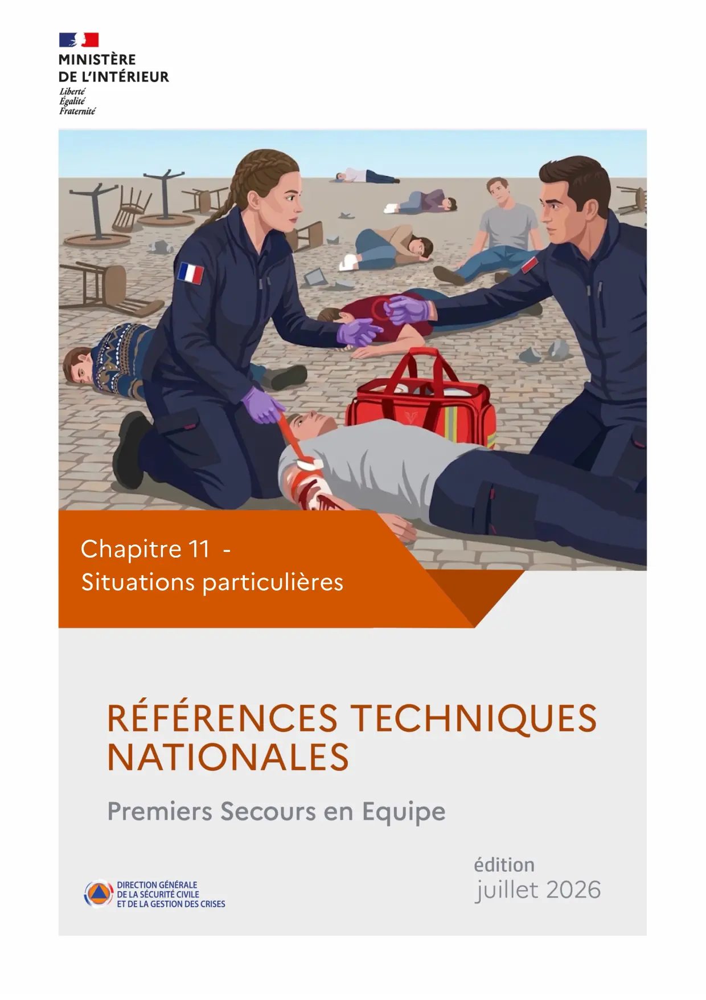
- Situations particulières
372
[11AC01 / 12-2023] PSE①
Situation à nombreuses victimes
Définition
La situation à nombreuses victimes se définit comme une situation accidentelle d’ampleur ayant fait de nombreuses victimes ou ayant un potentiel évolutif pouvant entraîner de nombreuses victimes.
Une telle situation est un événement particulier qui nécessite une méthode de travail différente des autres interventions.
L’accident catastrophique à effet limité est une situation à nombreuses victimes qui se caractérise par :
un accident ou une situation unique entraînant un afflux brutal, mais relativement limité de victimes (entre 10 et 100), plus ou moins gravement atteintes au plan physique ou psychique, auquel les secours ne peuvent pas immédiatement faire face du fait d’une inadéquation temporaire entre les besoins et les moyens rapidement disponibles ou l’inhibition de ces moyens par l’accident ;
une situation évolutive, tel un incendie par exemple, susceptible d’entraîner un nombre potentiellement élevé de victimes (moins de la centaine) et qui nécessite rapidement l’envoi de moyens en nombre.
Causes
Les situations à multiples victimes trouvent leurs origines dans différents types de sinistres :
accidents de trafic : routier, ferroviaire, aérien, maritime ou fluvial ;
incendies : feux d’habitations collectives, d’établissements de soins (hôpitaux, maisons de retraite…), d’établissements recevant du public (salles de spectacles…), de tunnel, etc. ;
effondrements de structures (explosion, glissement de terrain, avalanche, vétusté) ;
accidents sociaux : manifestations avec de grands mouvements de foules (émeutes, paniques…), agressions collectives… ;
actes de terrorisme : explosions, armes chimiques… ;
catastrophes naturelles limitées : avalanches, glissements de terrain, tremblements de terre, inondations, raz-de-marée, tornades… ;
catastrophes technologiques : fuites de produits, explosion d’installations de matières dangereuses, rupture de barrage… ;
Les principales conséquences caractérisant un accident entraînant de nombreuses victimes peuvent être :
la présence de nombreuses victimes réelles ou potentielles ;
des dégâts matériels importants ;
une inadéquation, initiale et temporaire, entre les moyens immédiatement disponibles et les besoins.
Présence de nombreuses victimes
Les blessés sont suffisamment nombreux pour que la situation soit inhabituelle. Leur nombre est souvent difficilement appréciable au début, car les blessés valides ont toujours tendance à fuir les lieux avant l’arrivée des secours.
373
Les lésions rencontrées chez les victimes sont uniques ou multiples, visibles ou non, et leurs conséquences peuvent être immédiates ou retardées. Des lésions internes, dues à une explosion, une compression prolongée d’un membre ou à une exposition à des toxiques (chimiques, radiologiques, fumées d’incendie…) peuvent entraîner des détresses vitales après un temps de latence.
L’accès aux victimes est un élément important de ce type d’intervention. Certaines peuvent être accessibles immédiatement, car retrouvées en surface ou, au contraire, difficilement repérables, car recouvertes (poussières…). D’autres, emprisonnées sous d’importantes structures ou enfouies en profondeur, sous les gravats, nécessiteront la mise en œuvre de moyens spécialisés de dégagement. Le piétinement des structures et le bruit sont autant d’éléments qui peuvent rendre plus difficile leur localisation.
Les blessés ne sont pas les seules victimes à prendre en charge. Un grand nombre de personnes, non blessées, sont tout de même considérées comme victimes de la catastrophe, car elles auront un proche perdu de vue, tué ou blessé, ou bien parce qu’elles auront assisté à des scènes difficilement supportables, perdu un bien matériel important (habitation détruite…). Victimes d’un traumatisme psychique, ces personnes présentent des manifestations caractéristiques que les secours reconnaîtront et dont la prise en charge est nécessaire.
Leur regroupement au sein d’une zone dédiée aux impliqués est primordial pour assurer leur prise en charge. Au côté du personnel spécialisé des cellules d’urgence médico-psychologique (CUMP), le secouriste peut apporter une aide et une écoute réconfortante à ces victimes et faciliter ainsi l’expression des émotions ressenties.
Un certain nombre de victimes seront aussi découvertes en arrêt cardiaque ou mortes. Les corps peuvent être intacts ou fortement mutilés.
Dégâts matériels importants
Les dégâts engendrés par un accident de ce type sont souvent importants et étendus. Ils dépendent de la cause du sinistre.
Ils touchent habituellement les véhicules, les habitations, les constructions ou bâtiments à usage administratif ou privé et, parfois, des établissements sanitaires ou industriels.
Ces dégâts peuvent engendrer des risques persistants, notamment pour les intervenants (feux, fumées, fuite de produits toxiques, éboulements…), et rendre l’accès, au site de la catastrophe comme aux victimes, difficile et laborieux.
L’importance de ces dégâts aura un impact direct sur le sauvetage des victimes, leur dégagement et la nature des gestes de secours à réaliser.
Inadéquation des moyens
Afin de limiter au maximum les effets du sinistre, il faut adopter une méthode spécifique de prise en charge des victimes, d’une part, et organiser les secours en se fondant sur une organisation qui intègre et coordonne les maillons de la chaîne des secours. Cette organisation s’appuie sur la planification ORSEC1.
Principe de l’action de secours
procéder à une reconnaissance rapide du site ;
assurer la sécurité ;
transmettre sans délai les informations recueillies et de demander des moyens de renforcement ;
procéder au repérage des nombreuses victimes ;
réaliser les gestes de secours les plus urgents.
1 Le Code de la sécurité intérieure fixe l'organisation de la réponse de sécurité civile (ORSEC).
374
[11FT01 / 12-2023] PSE①
Repérage en cas de nombreuses victimes
Indication
Le repérage des victimes est réalisé chaque fois que l’on se trouve en présence de plusieurs victimes et que le nombre de victimes apparemment graves est supérieur au nombre de secouristes présents.
Justification
Ce repérage permet, dans l’attente de l’arrivée des renforts, de :
localiser les victimes ;
déterminer les victimes dont l’état nécessite une action de secours immédiate et rapide (pose d’un garrot, libération des voies aériennes, mise en position d’attente, etc.) ;
déterminer les victimes qui devront être examinées, prioritairement, par un médecin.
Matériel
Un dispositif de repérage, qui peut être composé par des fiches d’identification, des bracelets… permettant d’identifier rapidement la victime et son état.
Ce dispositif peut inclure un système de numérotation afin que l’identification de la victime soit unique tout au long de la chaîne de prise en charge.
L’état de la victime est généralement repéré par un code couleur. En l’absence d’un dispositif de repérage, celui-ci peut être remplacé par un marquage de la victime à l’aide d’un stylo.
Réalisation
Le repérage sur le chantier doit être très rapide et repose sur des critères simples. L’intervenant doit :
aborder les victimes les unes après les autres, en commençant par la plus proche de l’endroit où il se trouve ;
rechercher une menace vitale, en l’absence, apprécier² rapidement les fonctions respiratoire et circulatoire, ainsi que les lésions éventuelles ;
réaliser les gestes de secours adaptés ;
identifier la victime avec la couleur appropriée ;
REPERAGE DES VICTIMES
NOIR
Victime dont le décès ne fait aucun doute1
Victime qui a perdu connaissance et ne respire pas après LVA
ROUGE
Victime qui a perdu connaissance et respire après LVA
Victime avec une hémorragie ou consciente, et qui présente une détresse vitale2
JAUNE
Victime consciente qui ne présente pas de détresse vitale et ne pouvant se déplacer seul.
VERT
Personne exposée à la situation, ne présente pas de détresse vitale et pouvant se déplacer seule ou aidée
passer à la victime suivante.
A l’issue du repérage, l’intervenant prend ses consignes auprès du commandement, notamment pour engager des gestes complémentaires en fonction des consignes du moment.
1 Tête séparée du tronc, victime déchiquetée, victime démembrée, raideur cadavérique
2 Apprécier la respiration et la circulation sans excéder 15 sec par fonction. Chez l’adulte, en cas de nombreuses victimes, est considéré comme détresse respiratoire (fréquence supérieure à 30 mvt/min) ou circulatoire (fréquence supérieure à 120 bat/min).
375
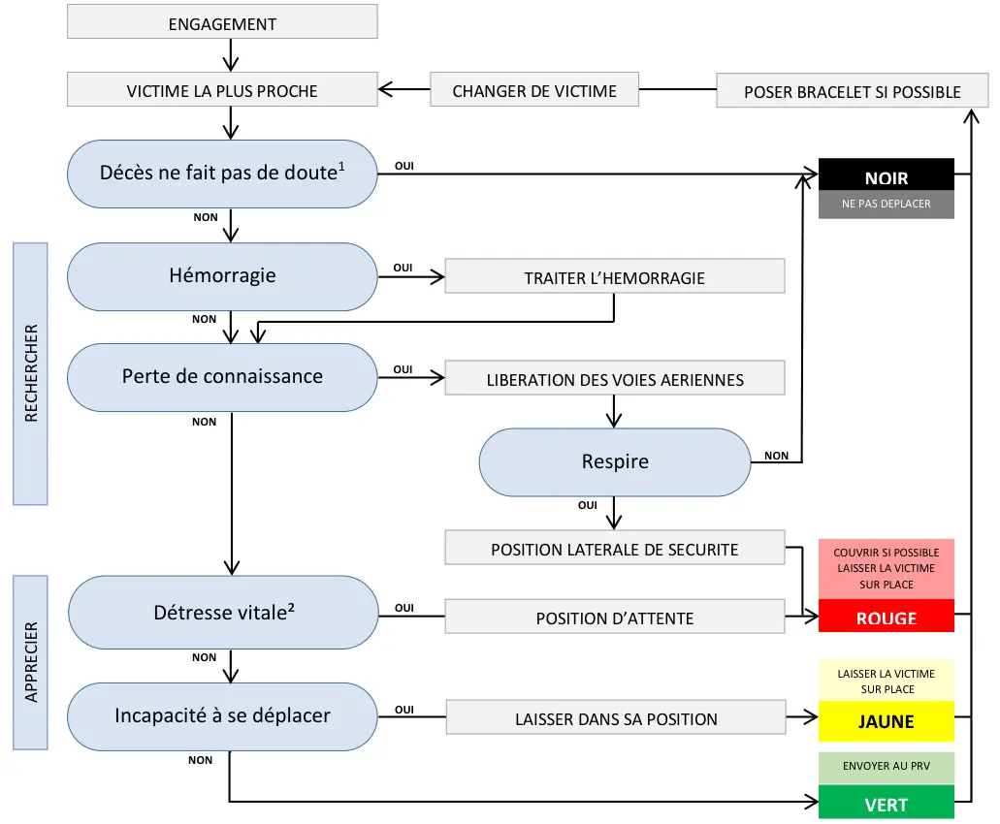
ENGAGEMENT
VICTIME LA PLUS PROCHE
CHANGER DE VICTIME
POSER BRACELET SI POSSIBLE
Décès ne fait pas de doute1
OUI
NOIR
NE PAS DEPLACER
NON
OUI
Hémorragie
TRAITER L’HEMORRAGIE
NON
RECHERCHER
OUI
Perte de connaissance
LIBERATION DES VOIES AERIENNES
NON
Respire
NON
OUI
POSITION LATERALE DE SECURITE
COUVRIR SI POSSIBLE LAISSER LA VICTIME SUR PLACE
Détresse vitale²
OUI
ROUGE
POSITION D’ATTENTE
APPRECIER
NON
LAISSER LA VICTIME SUR PLACE
Incapacité à se déplacer
OUI
LAISSER DANS SA POSITION
JAUNE
NON
ENVOYER AU PRV
VERT
Évaluation
Le repérage doit permettre une catégorisation précoce de l’ensemble des victimes afin de prioriser leur prise en charge en fonction des moyens disponibles.
376
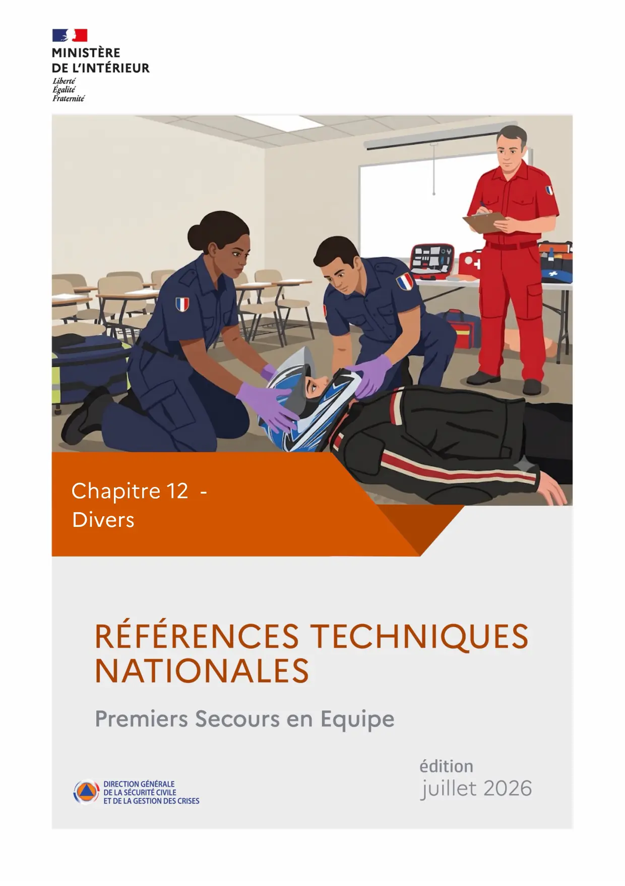
-
Divers
377
[12AC01 / 09-2014] PSE①②
Informations générales
Abréviations
AC
Arrêt cardiaque
ACT
Attelle cervico-thoracique
AEV
Accident d’exposition à un risque viral
AVC
Accident vasculaire cérébral
CO
Monoxyde de carbone
CO2
Dioxyde de carbone
CUMP
Cellule d’urgence médico-psychologique
DAE
Défibrillateur automatisé externe
DASRI
Déchets d’activités de soins à risques infectieux
DEA
Défibrillateur entièrement automatisé
DGSCGC
Direction Générale de la Sécurité Civile et de la Gestion des Crises
DSA
Défibrillateur semi-automatique
FAST
Face, Arm, Speech, Time
FC
Fréquence cardiaque
FFP2
Masque de protection respiratoire individuel
FR
Fréquence respiratoire
Hg
Mercure
LVA
Libération des voies aériennes
MID
Matelas immobilisateur à dépression
MIN
Mort inattendue et inexpliquée du nourrisson
O2
(di)Oxygène
OVA
Obstruction des voies aériennes
PA
Pression artérielle
PLS
Position latérale de sécurité
RCP
Réanimation cardio-pulmonaire
SAI
Seringue auto-injectable
378
SpO2
Saturation pulsée en oxygène
TA
Tension artérielle
VA
Voies aériennes
VHB
Virus de l’hépatite B
VHC
Virus de l’hépatite C
VIH
Virus de l’immunodéficience humaine
Hygiène et asepsie
Détergent
Produit nettoyant qui rend propre visuellement le support et qui :
dégraisse et détache les particules infectées du support où elles sont collées et les met en suspension dans une solution qui peut s’éliminer par rinçage ou par un second passage du produit, selon les préconisations du fabricant, Certains détergents sont pulvérisables.
ne contient pas de substance antimicrobienne,
est dit agent tensioactif. Son action est basée sur une action chimique qui nécessite, en plus de l’action mécanique (brossage ou frottement pour décoller la salissure), le respect d’une température d’utilisation et d’un temps d’action du produit.
Désinfectant
Produit qui ne peut être utilisé que sur les surfaces propres pour éliminer, inactiver ou tuer les microorganismes après le temps de détersion. On utilise des produits normés selon les normes AFNOR, pour les activités bactéricide et fongicide.
Morphologie
Adulte
Ressemblant à un adulte morphologiquement
Enfant
Ressemblant à un enfant, pouvant tenir sur la cuisse du secouriste
Nourrisson
Ressemblant à un nourrisson, peut tenir sur l’avant-bras du secouriste
Nouveau-né
Ressemblant à un nouveau-né de quelques semaines, peut tenir sur l’avant-bras du secouriste
379
[12AC02 / 07-2026] PSE①
Alerte
Présentation
L’alerte est l’action qui consiste à informer un service d’urgence de la présence d’une ou plusieurs victimes affectées par une ou plusieurs détresses ainsi que de la nature de l’assistance qui leur est apportée.
L’absence d’information d’un service d’urgence peut compromettre la vie ou la santé d’une victime malgré les gestes de premiers secours assurés par un sauveteur. Le rôle du sauveteur dans l’alerte est donc essentiel.
L’alerte doit être transmise, par le sauveteur ou un témoin, par les moyens disponibles les plus appropriés. Elle doit être rapide et précise afin de diminuer au maximum les délais de mise en œuvre de la chaîne de secours et de soins.
L’alerte doit être réalisée, après une évaluation rapide de la situation, des risques et une éventuelle mise en sécurité des personnes, auprès d’un numéro d’urgence gratuit :
le 18, numéro d’appel des sapeurs-pompiers, en charge notamment des secours d’urgence aux personnes, lors d’accidents divers, incendies ;
le 15, numéro d’appel des SAMU, en charge de la réponse médicale, des problèmes urgents de santé et du conseil médical ;
le 112, numéro de téléphone réservé aux appels d’urgence et valide dans l’ensemble de l’Union Européenne ;
le 114, numéro d’urgence unique, national et gratuit, accessible en visio, tchat, images et SMS, en lien direct avec le service d’urgence de proximité. Ce service est réservé aux personne sourdes, sourdaveugles, malentendantes et aphasiques. Il peut aussi être utilisé pour les personnes qui souhaitent alerter les secours dans le cadre de violences intrafamiliales et qui ne peuvent pas parler à voix haute.
Les secours peuvent conserver l’appelant au téléphone pour le conseiller ou le guider dans l’exécution de gestes, jusqu’à leur arrivée.
Conduite à tenir
Contacter un service d’urgence à l’aide d’un téléphone portable ou à défaut d’un téléphone fixe ou d’une borne d’appel1 :
transmettre les informations ;
répondre aux questions posées par les services de secours ;
appliquer les consignes données ;
raccrocher, sur les instructions de l’opérateur.
Les informations minimales à transmettre sont :
le numéro de téléphone ou de la borne à partir duquel l’appel est passé ;
la nature du problème : maladie, accident, attaque terroriste, etc. ;
en cas de situation à multiples victimes, préciser le nombre de victimes ;
la localisation la plus précise possible de l’évènement.
1Borne orange sur le bord des routes et autoroutes
380
lorsque le sauveteur demande à une autre personne de donner l’alerte, il convient :
avant l’alerte, de s’assurer qu’elle possède tous les éléments ;
après l’alerte, de vérifier qu’elle a correctement exécuté l’action.
Si possible, envoyer une personne pour accueillir les secours et organiser leur accès sur le lieu de l’accident, au plus près de la victime.
Cas particulier
La victime présente des manifestations qui peuvent faire évoquer une maladie infectieuse respiratoire (grippe, covid-19, etc.) :
si la victime présente des signes comme de la toux et de la fièvre ou tout autre symptôme grippal sans signe de détresse vitale, demander à la victime ou à son entourage :
d’appeler son médecin traitant. Ce dernier pourra éventuellement réaliser une téléconsultation ;
de respecter les mesures barrières et de distanciation physique.
si la victime a du mal à respirer au repos ou à l’effort ou présente les signes d’une urgence vitale, appeler un numéro d’urgence.
381
[12AC03 / 07-2026] PSE①
Alerte et protection des populations
Principe d’organisation
L’alerte aux populations est une mesure exceptionnelle dont l’efficacité repose sur une connaissance préalable des risques particuliers auxquels les personnes sont exposées (Document d’Information Départemental/Communal des Risques Majeurs).
L’alerte aux populations est utilisée pour avertir les individus d’un danger imminent ou d’un événement grave, en train de produire ses effets et susceptible de porter atteinte à leur intégrité physique.
Elle est diffusée par les services de l’état via un ensemble d’outils :
sirènes diffusant suivant la situation :
le signal national d'alerte (SNA)
pour inciter au confinement ou à l’évacuation,
ce dernier est composé d’un signal :
de début d’alerte, variation du signal sur trois cycles successifs d'une durée de 1 minute et 41 secondes espacés de 5 secondes ;
de fin d'alerte, signal continu de 30 secondes.
il est testé le premier mercredi de chaque mois, à midi. Lors de ces essais mensuels, le signal émis est une variation sur un seul cycle de 1 minute et 41 secondes, pour ne pas être confondu avec le SNA.
un signal de type corne de brume pour les dispositifs d’alerte propres aux aménagements hydrauliques, incitant à l’évacuation ;
un signal spécifique lorsqu’il existe des risques particuliers (chimiques, radioactifs, infectieux, etc.).
notifications « FR-ALERT »1 sur les téléphones portables :
pour recevoir cette notification, le téléphone doit :
être dans une zone géographique affectée ;
être allumé ;
avoir du réseau.
ce dispositif actif depuis juin 2022, ne nécessite pas d’inscription ni d’application.
médias (Radio France, France Télévisions, radios locales, vigilance météo, etc.) ;
réseaux sociaux :
X2 en s’abonnant et en activant les notifications du compte @Beauvau_alerte du ministère de l’Intérieur ;
Facebook via l’outil « Safety Check » ;
Google via son moteur de recherche et son outil « Posts on Google » ;
abonnements et notifications aux comptes des réseaux sociaux des services de l’état (services de l’état, préfectures, etc.).
autres outils :
panneaux communaux à messages variables ;
panneaux des opérateurs routiers, aériens et ferroviaires ;
« Toute personne concourt par son comportement à la sécurité civile » conformément à l’article L721-1 du code de la sécurité intérieure.
A minima, chaque citoyen doit donc se préparer en :
s’informant sur les risques et procédures pouvant l’impacter sur son lieu d’habitation, son environnement professionnel ou de loisirs (vacances, sport, etc.) ;
préparant un kit d’urgence, pour en savoir plus et compléter son kit :
Dès que vous avez connaissance d’une alerte aux populations :
se mettre en sécurité (bâtiment le plus proche, etc.) ;
ne pas aller chercher les enfants à l’école, car ils y sont protégés par leurs enseignants ;
s’informer sur la situation ;
sauf urgence vitale, ne pas téléphoner2;
respecter les consignes des autorités, s’il vous est demandé :
de vous confiner, à minima :
fermer les portes et fenêtres ;
calfeutrer les portes, fenêtres et bouches d’aération ;
arrêter les systèmes de ventilation ou de climatisation.
d’évacuer, à minima :
emporter votre kit d’urgence préparé à l’avance.
En période d’épidémie
Pour lutter contre la transmission de maladies infectieuses contagieuses, les services de l’État peuvent diffuser des informations générales concernant la mise en application de mesures spécifiques, notamment des mesures barrières et de distanciation physique.
Afin de limiter la propagation d’une maladie infectieuse contagieuse notamment à transmission respiratoire ou par contact, les mesures minimales sont les suivantes :
se laver régulièrement les mains ou utiliser une solution hydroalcoolique ;
tousser ou éternuer dans son coude ou dans son mouchoir ;
se moucher dans un mouchoir à usage unique puis le jeter ;
éviter de se toucher le visage ;
respecter une distance d’au moins un mètre avec les autres ;
saluer sans serrer la main et arrêter les embrassades.
En complément de ces gestes, porter un masque quand la distance d’un mètre ne peut pas être respectée.
1 SNA, FR-ALERT, notifications, médias et réseaux sociaux officiels, etc.
2 pour laisser les réseaux disponibles pour les services de secours
383
-
Formations
384
[13AC01 / 09-2014] PSE①②
Obligations pour les formations
Conditions minimales d’accueil
A l’exception des mises en situation ou simulations qui peuvent se dérouler dans des conditions les plus proches de la réalité, la formation doit :
être dispensée dans un lieu suffisamment spacieux pour permettre aux apprenants d’évoluer sans contrainte (min. 2 m² par personne) ;
disposer de chaises en quantité suffisante ;
protéger des contraintes climatiques (abrité de la pluie et du vent, chauffé ou climatisé, etc.) ;
disposer de toilettes et d’un point d’eau à proximité.
Pour les formations à destination des personnes en situation de handicap, le lieu de formation doit être conforme aux règles en vigueur relatives à l’accessibilité et à l’accueil des personnes en situation de handicap.
Liste des matériels obligatoires pour les formations initiales
Le matériel présent durant la formation initiale doit être adapté aux enseignements dispensés. Par exemple, il ne sert à rien d’avoir le matériel PSE2 sur une formation PSE1, le matériel des fiches optionnelles ne doit être présent que si lesdites fiches sont dispensées, etc.
Tout autre matériel utile à la formation peut être ajouté à la présente liste.
Désignation
Quantité / nombre d’apprenants
06 à 12
13 à 18
Références techniques nationales PSE
1
Référentiel interne de formation et de certification de l’organisme habilité et dispensateur
1
Feuille de présence
1
Fiches d’évaluation
EQS
Fiches de certification
EQS
Produits d’entretien et d’hygiène
EQS
Antiseptique cutanée
EQS
Appareil de communication mobile (téléphone, radio, etc.)
2
4
Aspirateur de mucosités (électrique ou mécanique)
1
2
Attelles à dépression membre inférieur (adulte / enfant)
1
2
Attelles à dépression membre supérieur (adulte / enfant)
1
2
Attelles modulables membre inférieur (adulte / enfant)
1
2
Attelles modulables membre supérieur (adulte / enfant)
1
2
Autopiqueurs pour lecteur de glycémie
EQS
Bac d’immersion u matériel
1
2
Balai brosse
1
2
Balai à franges
1
2
Bande élastique adhésive ou auto-agrippante
EQS
Bande extensible de différentes tailles
EQS
385
Bandelettes réactives adaptées au lecteur de glycémie
EQS
Bouteille O2 médicale normalisée avec dispositif de détente de gaz (factice ou neutralisée)
1
2
Brancard normalisé
1
2
Brosse de nettoyage
1
2
Cahier de traçabilité (nettoyage)
1
2
Canules oropharyngées de différentes tailles
1
2
Casque de motocycliste (intégral)
1
2
Chaise de transport
1
2
Chambre de mélange (ou d’inhalation) pour spray buccal
1
2
Champs stériles
EQS
Charlotte ou cagoule
EQS
Collecteur rigide pour OPTC
1
2
Collier cervical (réglables ou différentes tailles)
1
2
compresses
EQS
Compresses chimiques de froid
2
4
Compresses stériles
EQS
Conteneur de recueil DASRI
1
1
Maquette de coupe de tête
1
1
Coussin de tête
1
2
Couverture bactériostatique
1
2
Couverture de survie
5
10
Couvre sonde (pour thermomètre) à usage unique
EQS
DAE de formation*, avec électrodes adultes et enfant (ou dispositif d’adaptation) et ses accessoires.
1
2
Dispositif auto injectable de formation
1
2
Dispositif de repérage secouriste (situation nombreuses victimes)
EQS
Distributeur d’essuie-mains à usage unique
1
2
Écharpes triangulaires
2
4
Échelle visuelle analogique
1
2
Fiches bilan ou dispositif électronique équivalent
EQS
Filets de mailles tubulaires de différentes tailles
EQS
Film étirable alimentaire en rouleau
1
2
Gants à usage unique de différentes tailles
EQS
Gants de manutention (paire)
3
6
Gants stériles de différentes tailles
EQS
Garrots
2
4
Gilets de signalisation avec bandes rétro réfléchissantes
3
6
Insufflateur manuel avec ballon réserve (adulte)
1
2
Insufflateur manuel avec ballon réserve (pédiatrique)
1
2
Insufflateur manuel avec ballon réserve (nouveau-né)
1
2
Lampe de poche ou frontale
1
2
Lavettes à usage unique ou lingettes pré-imprégnées de détergent-désinfectant
EQS
Lecteur de glycémie*
1
2
Lot « pour membre arraché ou sectionné »
1
2
386
Lunettes à oxygène
1
2
Lunettes ou visière de protection
3
6
Mannequin de réanimation cardio-pulmonaire adulte (corps entier : bras et jambes)
1
2
Mannequin de réanimation cardio-pulmonaire enfant (corps entier : bras et jambes)
1
2
Mannequin de réanimation cardio-pulmonaire nourrisson
1
2
Masque à inhalation à haute concentration (adulte)
EQS
Masque à inhalation à haute concentration (enfant)
EQS
Masque à inhalation simple (adulte)
EQS
Masque à inhalation simple (enfant)
EQS
Masque d’insufflation adulte
1
2
Masque d’insufflation pédiatrique
1
2
Masque d’insufflation nouveau-né
1
2
Masques de protection FFP2
EQS
Masques chirurgicaux
EQS
Matériels nécessaires pour les garrots improvisés
1
2
Matériels nécessaires pour les pansements compressifs improvisés
1
2
Matériels de simulation (factices ou neutralisés), maquillages, fausses plaies, etc.
1
2
Oxymètre de pouls*
1
2
Paire de ciseaux type Jesco
1
2
Pansements « américain »
EQS
Pansements adhésifs de différentes tailles
EQS
Pansements imbibés de substance hémostatique de formation
2
4
Pansements individuels
2
4
Pansements stériles pour brulure type SSA
EQS
Pansement type C
EQS
Pince à échardes
1
2
Pompe à dépression
1
2
Poubelles DAOM
1
2
Ruban adhésif
1
2
Ruban de balisage
1
2
Sacs poubelles DAOM
EQS
Sacs DASRI
EQS
Sac de secours
1
2
Sachet plastique refermable
1
2
Sangles de fixation
3
6
Savon neutre liquide
EQS
Seaux de couleurs différentes
2
4
Sérum physiologique
EQS
Solution détergente / désinfectante pour sol
EQS
Solution détergente / désinfectante en spray pour surfaces
EQS
Solution hydro-alcoolique
EQS
Sondes d’aspiration buccale de différentes tailles
EQS
Stéthoscope adulte
1
2
387
Surblouse
EQS
Tensiomètre électronique
1
2
Tensiomètre manuel
1
2
Thermomètre électronique
1
2
Draps à usage unique
EQS
Alèse portoir
1
2
Attelle cervico-thoracique
1
2
Bassin d’accouchement
1
2
Bonnet pour nouveau-né
1
2
Brancard cuillère
1
2
Brancard simple
1
2
Ceinture pelvienne de taille moyenne
1
2
Dispositifs médicaux non occlusifs pour plaie au thorax
1
2
Immobilisateur de tête pour plan dur et brancard cuillère
1
2
Kit accouchement comprenant au moins 2 clamps et une paire de ciseaux stérile
1
2
Matelas immobilisateur à dépression
1
2
Plan dur radio transparent
1
2
EQS :en quantité suffisante pour l’ensemble des apprenants, pour la durée de la formation, en fonction des techniques pédagogiques imposées par l’organisme habilité.
* Ces matériels doivent être opérants et disposer de leurs moyens d’alimentation (câble, batteries, chargeur, etc.)
Liste des matériels obligatoires pour les formations continues
Le matériel présent durant la formation continue doit être adapté au programme annuel de la DGSCGC, ainsi qu’aux compléments décidés par l’autorité d’emploi, et aux mises en situation réalisées permettant de revalider les compétences visées réglementairement.